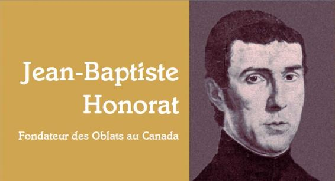

Yvon Beaudoin
JUAN BAUTISTA HONORAT
Fundador y primer superior
de los Oblatos de María Inmaculada
en Canadá, 1799-1862
Noticia biográfica
Correspondencia
Colección Escritos Oblatos, II, 9
Traducción por P. O. Domínguez, o.m.i.
Roma, 2015
Asunción, 2015
Esta publicación tiene el fin de hacer accesibles a los Oblatos las cartas del P. Honorat, escritas desde Canadá a sus superiores y a sus compañeros franceses. Por estas cartas se conocen mejor los proyectos, las realizaciones y los problemas del Padre Honorat durante su estancia en Canadá de 1841 a 1858.
Estas cartas van precedidas de una Noticia biográfica. La vida del P. Honorat es ya bien conocida gracias a la biografía del P. Gastón Corriere, o.m.i., titulada Planteur d’Eglise (Montreal, 1962) y de su obra magistral Histoire documentaire de la Congrégation des Missionnaires Obláts de Marie Inmmaculée dans l’Est du Cañada de l’arrivée au pays á la mort du Fondateur (Ottawa, 5 tomos, 1957-1963). Algunos autores más recientes han estudiado en profundidad la actividad del Padre en el Saguenay, de 1844 a 1849, actividad muy criticada durante su vida, pero muy elogiada desde hace unos años. Se trata de Raúl Lapointe, Combat de Titans au coeur d’un Royaume. Le duel Honorat-Price (1844- 1849). (Chicoutimi, 1996), Raúl Lapointe, Le retour du Pére Honorat (Laterriére 1998) y Helena Vincent, Les meules de la liberté. Le moulin de la colonie libre du Grand-Brülé (Laterriére, 2000).
La breve biografía que sigue expone la vida del Padre Honorat en Canadá tal como él mismo la cuenta en las 53 cartas que desde Canadá escribió a Mons. de Mazenod y a algunos compañeros.
Yvon Beaudoin, o.m.i.
Juan Bautista Honorat, superior-fundador de los Oblatos de María Inmaculada en el Canadá, nació en Aix de Provenza el 18 de mayo de 1799. Es el séptimo de los nueve hijos de María Teresa Bremond (1773- 1806) y de Santiago Cristóbal Honorat (1762-1827), fabricante de velas, domiciliado en Aix, Pile 55, n° 3.
Ya en su niñez Juan Bautista desea ser sacerdote como su tío Francisco José Honorat, párroco de la catedral en 1812 y luego en 1823 canónigo titular de Aix, y como su hermano mayor Juan Santiago Andrés, sacerdote sacristán de la catedral, muerto en 1826.
Estudia, según parece, en el colegio Bourbon y conoce al abate Eugenio de Mazenod que en 1813 formó entre los alumnos del colegio la Asociación de la Juventud cristiana de Aix. Juan Bautista en uno de sus primeros miembros.
A los 18 años, su padre desea iniciarlo en los trabajos de su comercio. El joven aprovecha la libertad que le brinda un viaje de negocios para entregar en manos de su cuñado todos sus encargos y retirarse, sin despedirse de su familia, a la casa de los Misioneros de Provenza fundados en 1815 por Eugenio de Mazenod. Comienza el noviciado el 21 de octubre de 1818 con el abate de Mazenod como maestro de novicios. Y en una atmósfera de gran piedad se prepara a pronunciar los votos de religión en la iglesia de la Misión el 30 de mayo de 1819; es el octavo misionero que se agrega a la joven sociedad. Estudia la filosofía y la teología como escolástico en el seminario mayor de Aix, y después, en 1820-1821, en N.-D. de Laus, donde enseña al mismo tiempo a algunos postulantes. Vuelve a Aix y, el 22 de diciembre de 1821, es ordenado sacerdote por Mons. Femando de Bausset- Roquefort, arzobispo de Aix.
El Padre de Mazenod conoció a Juan Bautista desde su adolescencia. Lo siguió en sus años de formación y luego le confió cargos importantes. Conocía en él algunos defectos, pero apreciaba sobre todo sus virtudes. El P. Honorat tenía un carácter espontáneo y entero. Sus socios, los padres H. Guibert y P.N. Mye, lo juzgaban “exaltado, sin modales y sin saber, testarudo”. El Fundador le recomendaba “la dulzura, la amenidad, el aguante del prójimo”, la prudencia y el cuidado de su salud. En 1834, cuando el P. Honorat era superior de la casa del Calvario en Marsella, lo invitó a “calmar sus furores cada vez que no se entra en sus miras”. Por otra parte, admiraba su celo. Tras la revolución de julio de 1830, que hizo imposible la predicación de misiones parroquiales, el P. Honorat, “Heno de celo por la salvación de las almas, querría predicar a los pobres, de pueblo en pueblo, persuadido de que su ministerio no sería infructuoso, no buscando más que la gloria de Dios, sin querer más retribución que el pan de cada día. Yo admiro sus buenos sentimientos -anota el Fundador- sin que me sorprendan: este santo sacerdote está a la altura de todas las virtudes de su estado y es capaz de muy distinta dedicación”. Veía en él “auténticas virtudes” y lo juzgaba “incapaz de faltar a su deber”. Podía fácilmente hacerle reproches si era preciso, “pues -decía- gracias a Dios te hago de buena gana esta justicia, tú eres capaz de escuchar la verdad bien completa sin que uno se vea obligado a guardar miramientos injuriosos para un alma como la tuya” (6-10-27).
El padre comienza su vida misionera en 1821-1825 como asistente del P. Hipólito Courtés en la iglesia de la Misión de Aix, mientras componía sermones. Ya el 21 de octubre de 1821, un mes antes de su ordenación, había participado en el segundo capítulo general, tenido en Aix, y el 8 de junio de 1824 es nombrado asesor y admonitor del P. Courtés, superior de la casa desde la salida a Marsella del P. de Mazenod, nombrado en 1823 vicario general de Mons. Fortunato de Mazenod, obispo de Marsella. En setiembre- octubre de 1824 toma parte en el tercer capítulo general, que lo elige procurador general del instituto. Mantiene este cargo hasta su salida para Canadá en 1841, cargo que, en la práctica, será siempre ejercido por el P. Enrique Tempier. En su calidad de procurador, recibirá del Fundador el pedido de preparar el primer Personnel de la Congregación y de comenzar el registro de las oblaciones en el que cada profeso recibe un número progresivo. El registro ha proseguido siempre; hoy alcanzamos los 14.000. El P. de Mazenod había escrito al P. Courtés el 17 de enero de 1825: “Someto esta reflexión al P. Honorat que es muy entendido en todas estas cosas, como también en otras muchas”. Mientras reside en Aix, el Padre da algunos cursos a los novicios y a los escolásticos y predica varias misiones, entre otras: Entrevaux y Rochette en 1823, Ventabren y Vitrolles en 1824, Puyloubier en 1825.
En abril de 1825 el P. de Mazenod acepta la fundación de una casa de misioneros en Nimes. Los padres tendrán como residencia una casa separada del seminario por una huerta. Recreos, capilla y refectorio serán en común. Se comprende por qué el P. Fundador escribía al P. Tempier el 7 de abril que importaba hacer una buena selección de misioneros para esa casa; más que en otras partes “habría que impresionar con una gran regularidad y una gran puntualidad”. El P. Pedro Nolasco Mye es nombrado superior. El personal se completa el 16 de mayo con el P. Juan Bautista Honorat y el hermano Hipólito Guibert. Al enviar estos colaboradores al P. Mye, el Fundador alaba en especial al P. Honorat: Cuente con él; “él abraza con alegría y prontitud todos los medios que se le dan para progresar en la virtud... Y ¡cuántas cualidades excelentes!”
El Padre Honorat no hace más que pasar por Nimes. Tras el nombramiento del P. Mye para Nimes al comienzo de 1825, quedaba confiada la dirección del santuario de N,-D.du Laus, en la diócesis de Gap, a los padres Santiago José Marcou y Juan José Touche. El P. Marcou cae en seguida enfermo y el P. Touche es inepto para ocuparse de los peregrinos y del santuario. “Pasa la vida -anota el Fundador- en las grandes carreteras, soltando por todas partes sermones que a nadie interesan... Nada de economía, nada de inteligencia para los intereses de la casa”. El hombre que hace falta en Laus se encuentra pronto, es el P. Honorat, nombrado superior, con el P. Alejandro Dupuy como ecónomo. A los dos les gusta manejar la llana y trabajan de buena gana en la restauración de la iglesia y del convento. Acogen a los peregrinos y predican algunas misiones, aunque el obispo de Gap, Mons. Francisco Antonio Arbaud, jansenista notorio, limita su jurisdicción. Predican con todo en Devoluy en noviembre de 1825, en San Juan extra muros de Aix en 1826, y en Fontvieiíle, Saint-Laurent-des- Arbres, San Víctor de la Costa y Prebois en 1827. En el curso de su primer año de superiorato el P. Honorat aprende que no es siempre fácil entenderse con sus súbditos. El P. Touche, de más edad que él, no puede vivir bajo su obediencia. “¿De dónde viene -se pregunta el P. de Mazenod- esa repugnancia que turba el orden de una sociedad naciente en la cual no debería haber más que un corazón y un alma? ¡Es que uno está lleno de orgullo aun queriendo parecer humilde!”
En la primavera de 1827 la comunidad oblata compra una casa, en la calle Chassagne, situada en pleno barrio protestante. El P. Honorat es nombrado superior y tiene como colaboradores a los padres Francisco Hermite y José Martin. Ejercen su ministerio en las cárceles (1.400 prisioneros) y en una capilla pública y predican misiones en las Cevenas, especialmente en Sabran y Condoulet, Quinson y Bourg d’Oisan. La revolución de julio de 1830 pone fin a este apostolado. “En Nimes -escribe el P. Rey- habiéndose unido a las pasiones políticas las pasiones religiosas, los protestantes amenazaron al clero: el obispo y los canónigos habían dejado la ciudad, y los misioneros, insultados, perseguidos con gritos de muerte, se habían retirado con los sacerdotes en la zona rural. El P. Honorat volvió allá en setiembre, pero fue obligado de nuevo a huir, disfrazado de mozo peluquero. Se impuso el abandono de este establecimiento” (Mgr.de Mazenod... I, p. 489).
El P. Guibert, maestro de novicios de 1826 a 1828 cae entonces enfermo y el Fundador nombra al P. Honorat para ese cargo en mayo, pero solo asume de hecho el cargo en noviembre de 1829 hasta el otoño de 1830. Lo será también unos meses en N.-D. du Laus, en 1832-1833. El 31, de enero de 1829 es elegido cuarto asistente general y será reelegido en el capítulo de 1831.
Al final de 1830 o al inicio de 1831, el P. Honorat es nombrado superior de la casa del Calvario en Marsella. Es una casa grande construida por el P. Tempier en 1823-1825, donde residen los padres jóvenes en espera de una obediencia y algunos Padres y Hermanos encargados del servicio de la capilla del Calvario, frecuentada por muchos fieles, sobre todo italianos. Los novicios habitan en esa casa en 1833-1834 y en 1836-1841, lo mismo que los escolásticos en 1833-1835. Los Padres son también capellanes de N,-D. de la Garde, de las Hermanas de San Carlos y de las cárceles. Algunos van a misionar con los Padres de Aix. Al inicio de 1837 el P. Honorat participa en las misiones de Entraigues y de Maussane.
A primeros de junio de 1837 Mons. de Mazenod acepta la dirección del santuario de N.-D. de Lumiéres en la diócesis de Aviñón. Los Oblatos toman posesión de él el 3 de junio y el Padre Honorat es nombrado superior el día anterior. Un campo amplio se abre a sus talentos y a su celo. Cuida de acoger a los peregrinos y de organizar peregrinaciones, hace reparaciones en la iglesia y alza de un piso el convento para alojar a los júniores. Predica también varias misiones; entre ellas Bédarrides y Aubignan en 1838, Bonnieux, Castillon, Roussillon y Simiane en 1839, Bedoin, Rustrel y Caderousse en 1840, etc. Estando en misión, escribe a menudo al Fundador y da siempre buenas noticias. Éste escribe en su Diario el 12 de noviembre de 1838: “Carta del Padre Honorat. Me da cuenta de los comienzos de la misión de Aubignan ¡éstos son misioneros! Esa carta contrasta singularmente con la que me escribió el Padre Courtés de Rognes donde misiona al mismo tiempo. La carta del Padre Honorat consuela, alegra, parece que se ven las maravillas de la gracia. Es lo que nosotros hemos visto obrarse por nuestro ministerio cuando teníamos la dicha de dar personalmente misiones. La carta del P. Courtés es glacial. Es un predicador que tiene delante a un numeroso auditorio de hombres indiferentes, con cuya conversión no tiene la confianza de contar. Honorat no pone en duda que toda la población de Aubignan, que es de 1800 almas, se aprovechará sin excepción de la misión. Courtés no se promete nada de nadie. Honorat está contento de todos sus colaboradores. Courtés se queja de todos los suyos. El secreto de esta diferencia es que Honorat va a las misiones lleno de confianza en la asistencia de Dios, al que está acostumbrado a ver obrando milagros, y que Courtés, que no tiene la misma costumbre, solo razona apoyado en los medios humanos de los que puede servirse” (EO, 19, 23 3 s).
La Revolución de julio de 1830, anticlerical, impide durante varios años la predicación de las misiones parroquiales. Varios Oblatos piden entonces al Fundador que acepte un campo de misiones fuera de Francia. Éste no obtiene de Roma el permiso de ir a Argelia ni a Córcega. Aguarda, pues, la hora de la Providencia.
En 1841, Mons. Ignacio Bourget, segundo obispo de Montreal desde hace un año, emprende un viaje a Europa con el fin de conseguir sacerdotes, jesuitas, religiosas y hasta una congregación de misioneros. No obtiene nada en París. De viaje a Roma, se detiene en Marsella para celebrar la misa el domingo, 20 de junio. Conoce entonces a Mons. de Mazenod y escucha de éste que es fundador y superior de una congregación de misioneros. Le pide algunos padres. Mons. de Mazenod promete una respuesta cuando esté de vuelta de Roma el obispo de Montreal, En seguida consulta a sus súbditos. Todos piden ser enviados. A su regreso de Roma, Mons. Bourget vuelve a parar en Marsella, del 5 al 7 de agosto y arregla las cosas para recibir sin demora a algunos Oblatos en su diócesis.
El Fundador se apresura a escoger a los que van a ser enviados. Escribe al Padre H. Courtés el 11 de agosto de 1841 que deberá encontrar entre los elegidos “a hombres capaces de anunciar la Palabra de Dios, y dignos de ser presentados al clero de Montreal que no carece de méritos”. Escoge a los Padres Juan Bautista Honorat, superior, Adrián Telmon, Juan F. Baudrand y Luciano Lagier, y a los Hermanos coadjutores Basilio Fastray y Luis Francisco Roux.
Éstos cinco abandonan Marsella el 30 de setiembre tras una ceremonia de salida en Notre Dame de la Garde. Los viajeros pasan por Grenoble, Lyon, Bourges y París, llegan al Havre el 14 de octubre y dejan el puerto el 20. La travesía dura 36 días. Todos se marean. El Utica atracó en Nueva York el 25 de noviembre. Allí encuentran a Mons. Carlos de Forbin-Janson, a Mons. Juan Dubois, obispo de Nueva York, a su coadjutor Mons John Hughes, y a Mons. José Rosati, obispo de San Luis.
Sólo se quedan un día en Nueva York, pero emplean seis días para llegar a Montreal por barco y luego en coche. El jueves, 2 de diciembre, los acoge Mons. Bourget y durante unos días les da hospitalidad en el obispado. Luego, el día 7 son instalados en su morada de San Hilario, localidad situada a unos 35 km. al sudeste de Montreal, al pie del monte que lleva el mismo nombre, del lado este del río Richelieu.
Lo que primeramente suscita la curiosidad del P. Honorat es el invierno canadiense y el modo de vestirse y de viajar. “Me parece -escribe al Fundador el 8 de enero de 1842- que este clima me es del todo favorable, sin embargo, no vemos más que nieve y hielo y nuestros vehículos de invierno están del todo descubiertos, pero el clima es seco, el cielo está habitualmente sereno y nunca hemos sufrido menos del frío que desde que hemos llegado a Canadá. Aquí todas las casas están calentadas desde el vestíbulo hasta la buhardilla [...] Como bien se entiende, uno va vestido en forma conveniente y luego los pies, bien calentados primero, se meten en las pieles que cubren hasta la cintura; añada que la cabeza va cubierta con lo que se llama un casco que es también una gorra hecha de piel de animal que cubre la cabeza el cuello y las orejas, y luego una bufanda que cubre el rostro incluida la nariz. Con ese atavío que es el del viaje y al que pronto uno ya no encuentra ridículo, se hacen en poco tiempo largos viajes, verdaderamente agradables, sobre coches que no tienen ruedas y cuyo asiento casi toca la tierra, es decir la nieve o el hielo, y con caballos muy pequeños pero con fuerza para no desenganchar tras una travesía de ocho a diez leguas y para traeros de nuevo, siempre al ritmo de dos leguas al menos por hora, hasta el lugar de donde habíais salido. Los canadienses nos dicen que ahora es para ellos la estación más agradable del año. Lo concibo por los viajes pues se encuentran caminos por todas partes incluso sobre los ríos que están todos helados, hasta el San Lorenzo a pesar de la longitud y lo impetuoso de su corriente”. En verano los Oblatos se visten como el clero canadiense, pero siempre llevan la cruz oblata.
Habitan en la casa parroquial que, a su llegada, solo tiene las “cuatro paredes”. Se divide el piso en 10 celdas y la planta baja en dos piezas, sala de comunidad, refectorio y cocina. El P. Honorat será acusado de haber hecho trabajos inútiles, pero se defiende diciendo que fue el P. Telmon el que hizo reparaciones a toda prisa en ausencia del superior de manera que hubo que rehacer esos trabajos. El párroco que los reemplaza a continuación, se halla bien con ese arreglo y “no se cuida de tocar un clavo”.
Ya el 4 de diciembre Mons. Bourget nombró al P. Honorat párroco de la parroquia, vacante por la reciente muerte del Sr. Jacques Odelin. Sus compañeros son nombrados vicarios. La parroquia “es la más pequeña del Canadá”. Cuenta con “700 comulgantes, de los que la mayoría dista una legua o legua y media de la iglesia”. Esta parroquia “es la más pobre de todas”, donde “todo está por hacer”. Está mal administrada. Los mayordomos de los últimos años “todavía no han rendido cuentas”.
Al fijar a los Oblatos en San Hilario, Mons. Bourget les confía la custodia de la cruz erigida por Mons. de Forbin-Janson antes de su salida del Canadá en noviembre de 1841. El les había dicho al encontrarlos en Nueva York que esa cruz de 85 pies de altura era “la más alta y la más hermosa que haya en el mundo”. El 8 de enero de 1842 el P. Honorat anuncia al P. Ricard: “Estamos establecidos como guardianes de una cruz plantada por el obispo de Nancy de 90 pies de alta. Es ciertamente la más bella del mundo sobre una meseta o más bien sobre una montañita que hay en nuestra parroquia. Ella domina el Canadá que es un país entero de llanuras. Este lugar va a convertirse en un lugar de devoción extraordinaria, todo está preparado para eso, sobre todo los espíritus y los corazones de los canadienses”. El mismo día había escrito al Fundador que esa cruz “domina al Canadá entero”. El 15 de mayo de 1832 da detalles más precisos sobre ese monumento: “Esta cruz nos va bien, la montaña es de veras deliciosa, casi toda poblada de árboles; al subir a esta cruz en un vallejo encerrado entre cuatro o cinco colinas se encuentra un lago delicioso. ¡Oh! hermoso lugar para un establecimiento en el futuro. Desde ahí se ve la cruz y de veras ella se hace contemplar; se marcha todavía por un buen cuarto de hora y comienza el camino de la cruz que conduce por un panorama encantador a través de los arces, los cerezos y los abedules a la cima de una montaña cuyo principal ornamento es esa cruz de 90 pies de altura, toda cubierta de hojas de hojalata. El espesor del fuste es de seis pies. El solo pedestal que ahora sirve de capilla tiene al menos 20 si no 25 pies de altura. Desde ahí la vista se lanza tan lejos que se puede percibir sobre espléndidas llanuras, en medio de las cuales se ven pocas colinas, el conjunto más o menos cultivado, o todavía cubierto de antiguos bosques donde tal vez jamás ha trabajado el hacha y las llanuras son atravesadas por el magnífico San Lorenzo, el Ottawa, el Chambly y muchos otros afluentes, todos muy deliciosos, que van a perderse en el San Lorenzo, luego en el golfo, de ahí van a viajar hasta el Atlántico y se mezclan con esas corrientes que bordean tanto vuestras comarcas como las que nosotros habitamos”.
El Padre no habla apenas del ministerio parroquial si no es que desde su llegada en diciembre de 1841 y al comienzo de 1842 predican una misión en San Hilario, en Beloeil y en San Vicente de Paúl. Acerca de la cruz, escribe simplemente que cada día del mes de agosto hay un centenar de peregrinos y más otros días.
Tras las primeras misiones, el P. Honorat puede ya dar sus impresiones sobre los canadienses y en especial sobre los párrocos. Escribe a Mons. de Mazenod el 8 de enero de 1842: “¡Oh, qué buena gente! Qué fe, qué gratitud, qué correspondencia, qué buen corazón. Aquí es donde hay que venir a buscar las costumbres de nuestra vieja Francia, y ¡cuánto bien cabe hacer!”. El mismo día escribe al P. Ricard y al P. Guigues: “Nuestros canadienses son la mejor gente que hasta ahora he conocido. Tienen toda la vivacidad y la amabilidad de los franceses, y toda la fe y la religión de esa nación cuando toda ella era tan católica”. “Este pueblo canadiense con toda la alegría, la amabilidad y la antigua fe de Francia y además con su lenguaje seduce necesariamente a un pueblo francés, tanto más que, aunque haya también pobres entre ellos y sean pocos los que saben leer y escribir, son de una amenidad, de una afabilidad y de una honestidad que llaman la atención”.
La primera reflexión sobre el clero es positiva. “El clero de la diócesis - escribe a Mons. de Mazenod el 8 de enero de 1842- nos ha visto venir sin celos y hasta con mucho contento. Monseñor había preparado admirablemente los caminos. Ya conocemos a unos cuantos que nos tratan realmente como amigos y se puede decir que con consideración”. La admiración del Padre es luego más mitigada: “Por supuesto -prosigue el 11 de julio- hemos sido examinados y hasta criticados. Si tenemos amigos, tenemos también nuestros enemigos. Pienso que todas estas consideraciones nos volverán más prudentes: pero habría sido aún mejor que hubiésemos llegado aquí mejores” (8 de enero). El cronista del códex histórico de la casa de Longueuil da explicaciones sobre ese comportamiento: Estos extranjeros, ignorantes de las costumbres y de los usos del país, herían susceptibilidades en sus conversaciones y se abrían con demasiada facilidad a personas a las que creían sus amigos. En las misiones no se respetaba bastante la voluntad de algunos párrocos que se oponían a ciertas decoraciones. Se permitían gastos exagerados a expensas del clero. El P. Honorat hace al P. Telmon responsable de buena parte de las dificultades: “¿Cuántas veces ha hecho que se hablara contra nosotros el Padre Telmon? La mayoría de las quejas llegaban por su causa, ya por palabras en sus conversaciones, ya por celo excesivo, siempre por falta de reflexión y sobre todo de consejo. Ahora todo eso se corrige porque uno se explica; pero entonces, en la sola misión de Santa
Isabel, donde yo no estaba, se había comprometido con palabras poco mesuradas sea con ese sacerdote que había hablado contra nosotros, sea con varios sacerdotes de la diócesis a quienes debía haber tratado con más consideración, sea con Monseñor al aceptar conferencias públicas con los protestantes metodistas sin consultar al obispo que quedó sumamente contrariado; más tarde en Corbeau, y es el caso más grave, mandando quemar y quemando biblias, y esto en Estados Unidos; se hizo, sí, en el patio de la casa rectoral, pero el fuego se percibió más lejos y los diarios de los Estados Unidos y del Canadá difundieron el hecho que ha sido censurado por todo el mundo, incluso por los obispos de Nueva York y de Montreal, hasta el punto que el Padre ya no puede aparecer en la comarca, donde ciertamente se le echaría mano [...] Desde que yo dirijo las misiones y sobre todo desde el comienzo de este año, ya no llegan quejas de otro lado. Estamos en inmejorable relación con todos los sacerdotes que trabajan con nosotros” (14 y 25 de mayo de 1843).
El P. Honorat no cesa de pedir al Fundador que envíe algunos Padres, pero el 25 de mayo hace esta confidencia: “No sé si le hemos dicho que los sacerdotes canadienses son muy recelosos acerca de los sacerdotes extranjeros. El Sr. párroco de Longueuil me decía ayer que si venían otros tres de nuestros padres franceses eso podría impedir las vocaciones. Se dice incluso que en Quebec, para llamarnos se aguarda a que seamos un poco más canadienses. Lo que por un tiempo me había hecho temer poner al P. Telmon al frente del noviciado, es que hasta nuestros novicios entonces decían que era anticanadiense. Pienso que hoy ya no pueden decir lo mismo, pero nuestros padres no se habían vigilado bastante en este punto tanto en sus modales como en sus palabras. ¿Por qué no acordarse de aquella hermosa actitud del apóstol ómnibus omnia factus sum?'
El P. Honorat hace reflexiones sobre la gente y el clero, pero no habla apenas de la situación política y humana del país. Al enviar a sus hijos al Canadá, Mons. de Mazenod simplemente les había dicho acerca de eso: “Se habla francés en toda la región”. Sin embargo, Canadá acababa de vivir graves disturbios políticos y militares: las revueltas de 1837-1838. Esas rebeliones armadas tuvieron lugar en el Alto y el Bajo Canadá. Se desarrollaron sobre el fondo de crisis económicas y agrícolas y fueron provocadas por la negativa de las autoridades británicas a conceder las reformas políticas reclamadas.
En el Bajo Canadá el conflicto se dobló por el antagonismo que ya existía desde la conquista inglesa en 1759. Durante la primavera y el verano de 1837 los jefes reformistas cuyo principal era Luis José Papineau, jefe del Partido Patriota, sacaron partido de las tensiones políticas para poner en pie una amplia fuerza rebelde. La situación era tan tensa que en octubre de 1837 todas las tropas británicas regulares fueron retiradas del Alto Canadá y trasladadas al Bajo Canadá. Hubo tres enfrentamientos de importancia: en Saint-Denis y Saint-Charles sobre Richelieu y en Saint-Eustache al norte de Montreal. Los Patriotas derrotaron a las tropas británicas en Saint-Denis el 23 de noviembre, pero fueron vencidos el 25 de noviembre en Saint-Charles y luego el 14 de diciembre en Saint-Eustache. Se decretó la ley marcial, seguida de numerosos arrestos. Saint-Denis y Saint-Charles son localidades situadas no lejos de San Hilario. En Saint-Eustache hubo numerosas casas y granjas destruidas. Y en 1838 hubo otras batallas.
Como consecuencia de esa guerra, el valle del San Lorenzo que en 1791 había sido dividido en Bajo Canadá (Quebec actual) y Alto Canadá (Ontario actual) fue reunido por el gobierno británico y formó en 1840 el Canadá unido, como efecto del Acta de Unión. Esta acta miraba a asimilar a los canadienses franceses para impedir toda reincidencia sumergiéndolos en un mar inglés siempre en aumento gracias a la inmigración proveniente del Reino Unido.
El P. Honorat hace una alusión a esa situación en carta del 11 de diciembre de 1842 con estas palabras: “Está bien que le diga que los disturbios civiles que habían agitado esta provincia habían desorganizado al buen pueblo canadiense, tan interesante en todos los aspectos”. Otra alusión a esto encontramos en un informe del P. Lagier a Mons. Bourget el 24 de agosto de 1842: Dice que unos militares venidos de Chambly hicieron una excursión hacia la cruz de la montaña, entraron en la capilla y profanaron los ornamentos, y luego arrancaron cinco o seis cruces del Viacrucis.
Desde el comienzo de 1842 los Padres comprueban que San Hilario no conviene. Esa parroquia es demasiado pobre para mantener a una comunidad. Mons. Bourget quiere confiarles otra segunda parroquia, pero el P. Honorat piensa que nuestras parroquias serán “siempre mal gobernadas”, a no ser que sea siempre el mismo quien se queda en casa, pero ningún Padre quiere ser párroco, no es su vocación. Además San Hilario tiene otros inconvenientes: el alejamiento de Montreal de donde se sale para evangelizar, los estorbos del curato que vuelven difíciles el reposo y el recogimiento en el intervalo de las misiones, etc., todo invita a buscar otro apeadero.
Durante una misión, el P. Honorat se entera de que hay una casa en venta en Longueuil. Se encuentra con el propietario, Sr. Berthelet. Entabla negociaciones con él y obtiene la cesión de la casa, sin condiciones. El Padre escribe entonces al Fundador: “La Providencia de Dios quería seguramente que fuésemos así [al encuentro con el Sr. Berthelet], hombre de buenas obras, rico propietario en Montreal, que poseía en Longueuil una hermosa casa con huerta y pradera, propiedad que había obtenido por la sucesión de su tío Sr. Chaboyer, antiguo párroco de esa parroquia de Longueuil”. “Sin que se hubiera podido pensar en esto cuando se construyó, las divisiones están cabalmente hechas para una casa de comunidad. La planta baja tiene su vestíbulo, su locutorio, su sala de comunidad, y de recreo, su refectorio y su cocina con todas sus dependencias. Una bella escalera conduce al primer piso, dividido en su longitud por un corredor bien iluminado, al que dan las puertas de ocho celdas más o menos espaciosas para los Padres; luego un segundo piso según el uso del país; en el desván, donde se harán fácilmente lindas celdas para los Hermanos y un amplio granero, etc. No estamos separados de la iglesia parroquial más que por un patio o un trozo de la huerta. La puerta de entrada de nuestra casa da a la gran ruta de Chambly a Montreal por el río San Lorenzo. Por este lado tenemos una vista magnífica tanto por el aspecto del río, del que solo nos separa lo ancho del camino y nuestro prado que está al otro lado del camino, como por el de la ciudad de Montreal que se halla casi enfrente [...] Se va a Montreal por muy poco precio, a cualquier hora del día por medio de horseboats o barcos puestos en movimiento por caballos que van encima, y steamboats o barcos de vapor. Nos encontramos aquí con todas las ventajas de la ciudad y sin los inconvenientes” (13-8-42).
Los Padres Honorat y Léonard toman posesión de la casa el 2 de agosto y el resto de la comunidad entra el 10. El P. Lagier y el Hermano Roux quedan en San Hilario hasta el verano de 1843. Con la entrada de varios novicios la casa estará pronto llena. En octubre de 1843 son 18. Hasta 1850 la casa de Longueuil se convirtió, según el P, Carriére en “el cenáculo donde nacieron la mayor parte de las grandes obras de la Congregación en el decurso de sus primeros años en Canadá”.
Monseñor Bourget quería misioneros. Y justo eso son los Oblatos de Canadá. Dan misiones en las parroquias organizadas y en las que están en formación, en los townships y entre los amerindios.
Hemos visto que desde su llegada en diciembre de 1841 y al comienzo de 1842 dieron una misión en San Hilario, en Beloeil y en San Vicente de Paúl. El P. Honorat se propone con sus socios tomar tres meses de descanso en el verano y trabajar los otros nueve meses. Mons. Bourget adopta también el plan de misiones y los usos de los Oblatos, menos la ceremonia de penitencia con los pies descalzos durante el invierno. Los párrocos piden misiones para sus parroquias y los fíeles escuchan y reciben la palabra de Dios “con un ardor que yo nunca había notado en ninguna otra parte”, escribe el P. Honorat a Guigues el 8 de enero de 1842. En julio de 1842 predican su décima misión en Varennes y el Fundador recibe la lista de los patronos de las parroquias evangelizadas para insertarlas en las letanías de los santos que los Oblatos rezan a mediodía en el examen particular. En 1842 el P. Honorat predica durante 20 semanas, el P. Telmón durante 11, y el P. Baudrand durante 26 semanas.
El 11 de diciembre de 1842 el P. Honorat escribe al Padre Casimiro Aubert, superior-fundador en Inglaterra-Irlanda: “Sus cartas vinieron a sorprendemos muy agradablemente. No sin razón muchos en nuestra congregación tenían el presentimiento de que el buen Dios querría servirse de nosotros en esta renovación que se opera a favor de la religión en el mundo. Se habría dicho que no veníamos a Canadá más que para convertir a amerindios, y tras un año ¿qué hacíamos con nuestro ministerio? La fe se reanima más fuerte que nunca entre estas poblaciones eminentemente católicas y produce frutos maravillosos; algunos protestantes se convierten y buen número abandonan sus prevenciones. Vosotros ¿qué vais a hacer? ¡Oh, qué hermosa obra! Y cómo desde hace mucho yo me gozaba con este pensamiento de que nuestra familia ayudaría a reanimar a ese coloso que estaba desde hace tres siglos en un estado tan deplorable. Felices somos los unos y los otros de que el buen Dios nos haya tomado como instrumentos de su gracia”.
A comienzos de 1843 se predica menos. Los Padres Telmon y Baudrand están enfermos, y el P. Lagier atiende al curato de San Hilario. El P. Honorat escribe de nuevo al P. Aubert el 13 de abril de ese año: “Fíjese, desde que llegamos aquí en diciembre de 1841, acabamos de terminar la 17a misión, sin contar los pequeños retiros que hemos dado aquí y allí para sostener la obra de las misiones. Aunque hoy sea Jueves Santo, Nuestro Señor no tomará a mal que me entretenga unos instantes con usted. El lunes debo comenzar otra misión. Espero, con todo, que después de ella tenga al menos un mes de descanso en casa [...] Las misiones hacen siempre un bien extraordinario, todos los pueblos las querrían. Serían precisos doce misioneros para la sola diócesis de Montreal”.
En diciembre los Oblatos predican en la parroquia de Santiago de Achigan. El superior escribe al P. Ricard el 23 de diciembre y al Fundador el día siguiente. “Estábamos en medio de una población dispersa en un área de 5 a 6 leguas cuadradas en la cual la mitad de los habitantes son pobres hasta el punto de carecer de vestimenta adecuada para cubrirse. Pues bien, a pesar del rigor de la estación, la lejanía, etc., toda la gente, hay 3.600 comulgantes, acudió a los ejercicios diarios y aprovechó de la misión tanto que hemos formado una congregación de chicas en la que se han inscrito 600, y hemos agregado a la asociación de templanza total, que es nada menos que el compromiso de abstenerse para siempre de toda bebida embriagante como vino, ron, aguardiente, etc., a más de 2.000 personas, y los dos misioneros que quedan todavía allí por ocho días, inscribirán aún otros mil. No podría usted creer cuánto bien hace en este país esta asociación de la templanza que se establece aquí por las misiones [...] Monseñor vino a hacer la clausura con su visita que ha durado tres días, como de ordinario dura en nuestras misiones [...] Vamos a servimos de la asociación de la templanza para formar el núcleo de la congregación de hombres o de jóvenes. Durante nuestra misión de Santiago el P. Telmon ha dado en el pensionado de las Damas del Sagrado Corazón, establecidas en esa parroquia rural, un retiro que ha gustado mucho y ha hecho mucho bien; por su parte el P. Flavien Durocher ha dado en la iglesia de Longueuil un retiro a la congregación de chicas y otro retiro a los jóvenes. Estos dos pequeños retiros también han resultado de maravilla. Vamos a aprovechar de esto para formar en Longueuil la congregación de los jóvenes. Tenga a bien acordarse de hacemos llegar en unos días el reglamento de la congregación de Aix o una copia...”
En 1844 el P. Honorat va menos a menudo a las misiones a causa de su proyecto de fundación en Bytown y en la diócesis de Quebec, pero sus socios siguen predicando en las parroquias, los colegios, los seminarios y las congregaciones religiosas de varias diócesis.
Desde su llegada al Canadá el P. Honorat habla de las misiones populares en las parroquias en formación, los townships. El redactor del códex histórico de Longueuil explica lo que éstos son. “Aunque el Bajo Canadá esté habitado por canadienses de origen francés -dice-, católicos por consiguiente, no se toma en cuenta propiamente más que las orillas del San Lorenzo y del Chambly hasta un interior más o menos extenso, y es lo que se llama los Señoríos [...] En tomo, por lo menos al este, al oeste y al sur, están los que se llaman townships, donde la tierra se compra como actualmente en Francia sin ningún canon. Esa parte del país está mucho menos poblada que la otra, y lo está por una población inglesa, escocesa, irlandesa y sobre todo angloamericana en el este, y por tanto protestante en su mayoría. ¿Cuáles fueron las razones de esto? Se pretende que Inglaterra, a raíz de una injusta desconfianza hacia los franco-canadienses, a quienes por dos veces ella debió la conservación de esa colonia, ha querido rodearlos con un cinturón inglés, y que por eso ha dado asilo a Legalistas americanos, y además ha volcado ahí lo sobrante de su población. Lengua inglesa, religión protestante, país montañoso, no se precisaba tanto para alejar de ahí al canadiense, sobre todo cuando había que retirarse de su gran río que es su orgullo y su vida; con todo, algunos canadienses, aunque en escaso número, habían consentido en exiliarse en los townships. Los disturbios políticos de 1837, unidos a los años de escasez, llevaron a más personas a establecerse ahí. Pero, infelizmente, era un poco tarde, los americanos que sabían que ahí se podía hacer fortuna rápidamente, habían comprado ya, y por nada, todas las tierras; unos años antes uno hubiera podido ser propietario e independiente, y ahora había que resignarse a ser esclavo de todos los días. De ahí el triste estado de las misiones canadienses de los townships mientras la Propagación de la Fe no pudo darles los medios para proveer.
Menos de dos meses después de la llegada de los Oblatos al Canadá, Mons. Bourget envía al P. Lucien Lagier y al abate John McFalvey a hacer una misión en los townships, pero regresan enfermos a los ocho días. En mayo de 1842 cuatro sacerdotes predican una misión en San Jorge, no lejos de Granby. En el curso del verano el P. Honorat anuncia a Mons. de Mazenod que el obispo de Montreal quiere confiar ese ministerio a los Oblatos y pide un Padre que hable inglés. En octubre de 1843, acompañado por dos sacerdotes diocesanos, el P. Baudrand va a iniciar este apostolado. Durante el invierno de 1843-1844 trabaja ahí durante dos meses con el P. Dandurand. Vuelve con el abate Hughes en julio, setiembre y octubre de 1844, y en enero-marzo, junio y setiembre de 1845. Predican y administran los sacramentos en unas veinte localidades a partir de cuatro centros: Granby, Stanstead, Dunham y Stanbridge. El P. Dandurand es enviado a Bytown en 1846 y parece que no fue remplazado por un Oblato en los townships.
Después de la llegada de los Oblatos a Montreal, Mons. de Mazenod, Mons. Bourget y el P. Honorat tienen miras amplias y lejanas. Sueñan ya con expansión y obras variadas. Mons. de Mazenod piensa que esa fundación es tal vez sólo “la puerta que introduce a la familia a la conquista de las almas de varios países”. El P. Honorat añade: “Para nosotros Mons. Bourget nos encarga tanto de las misiones en parroquias formadas, como de los townships y de los campamentos, y de los algonquinos y de los iraqueses, tanto en su diócesis como en tres o cuatro diócesis que la rodean, pues todo eso somos nosotros quienes lo debemos llevar a cabo, y nadie más”. Por su parte, Mons. Bourget escribe al Fundador el 26 de diciembre de 1845: “Una vez más, no se olvide de Burlington, del Río Rojo, de los campamentos, de Bytown, del Saguenay, Temistamingue, Abitibi, el San Mauricio, de toda la diócesis de Montreal que tiene 200 leguas de largo...”
El P. Honorat ve en primer lugar la eventualidad de aceptar la parroquia francesa de Nueva York que Mons. Dubois le ofrece. Pero esa iglesia se confiará pronto a los Padres de la Misericordia. El desea después enviar Oblatos a la diócesis de Toronto donde hay amerindios. Encuentra al obispo, Mons. Miguel Power, que con gusto aceptaría algunos misioneros que hablen inglés. El P. Honorat se propone enviarle al P. Telmon o a otros padres para aprender el inglés. Ese sueño se evapora en setiembre de 1843 cuando los jesuitas aceptan la oferta de Mons. Power, según la intención de Mons. Bourget de hacer volver a los jesuitas a sus antiguas misiones.
Tras estos proyectos abortados, el P. Honorat modera sus ambiciones. Escribe el 14 de abril de 1843: “Éramos unos niños cuando hablábamos de tantos proyectos de fundaciones fuera y, a
pesar de mi repugnancia yo me dejaba llevar por los discursos y la ambición de los otros [...] Más tarde le diré el sentimiento de todos sobre el proyecto [de Toronto], pero lo mejor sería reforzamos aquí donde el obispo con el tiempo quiere mandamos hacer toda clase de buenas cosas”.
Orienta entonces sus búsquedas hacia los amerindios. Ya en 1841-1842 Mons. de Mazenod y el P. Honorat ven ese trabajo como el verdaderamente propio de los Oblatos. Por lo demás Mons. Bourget ya había hablado de eso en 1841: “trabajar por la conversión de los amerindios”. En todas sus cartas de 1842-1844 el P. Honorat no cesa de hablar de misiones entre los amerindios. Para eso hacen falta más Padres. Felizmente recibe a varios novicios, entre ellos en 1842 al Padre Leonardo Baveux que por seis años ha dirigido un pueblo de iroqueses, y al Hermano Juan Bautista Langlois que “entiende el saulteux, lengua con la que se puede entender con la mayoría de los poblados indígenas”. En el verano de 1843 entra también el Padre Flaviano Durocher que ha sido misionero de los algonquinos durante 13 años. El superior piensa que llegó la hora de emprender ese trabajo de evangelización y de entrar en las diócesis de Kingston y de Quebec. Otros sucesos van a precipitar las decisiones.
El 23 de diciembre de 1843 el P. Honorat escribe al P. Ricard: “Sabe usted sin duda que se va a tomar el encargo de las misiones entre los amerindios. Los Hermanos Laverlochére y Bourassa estudian el algonquino con mucho brío. Dentro de poco se va a contar con el P. Léonard para los iroqueses. Cuando se hayan iniciado esas excursiones se le podrán contar cosas y excitar el ardor de nuestra juventud. Las naciones algonquinas son muy numerosas en estas regiones, en estos bosques que se extienden a 200 y 300 leguas y hasta 500, 800 y más. ¿No hay con qué hacer sangrar un corazón de misionero y con qué excitarlo? Hasta 1836 nadie ha empezado a ocuparse de ellos ¿No son ésas las almas más abandonadas? Nuestros jóvenes de N.-D. de Lumiéres han tenido un sentimiento digno de nuestra sociedad cuando escribieron al P. Léonard: “Tú nos preguntas quién de nosotros irá a ayudarte para instruir a tus hijos de la selva. Quién nos diera... etc. Iríamos todos”. Es muy posible que en la próxima primavera el P.
Durocher vaya a hacer una excursión con sus discípulos a 80 leguas de aquí para empezar y sondear el terreno. Tengo que decirle que, por lejos que vaya este padre a la caza de amerindios, va a encontrar en todas partes a algunos de ellos que hayan tenido como sea conocimiento de él. Qué avance para la conversión de los otros. ¡Vea si usted puede hacer eso en el futuro!”
Los primeros contactos se realizan a primeros de junio de 1843 cuando el P. Léonard va a remplazar por un tiempo al abate Francisco Javier Marcoux entre los iroqueses de Sault-Saint- Louis. El 15 de junio los padres Honorat y Baudrand van, con los novicios Bourassa y Fisette, a asistir a las fiestas del Corpus en el mismo lugar.
En la diócesis de Kingston nace una nueva aglomeración en Bytown, a unos 200 km. al oeste de Montreal en la confluencia de los ríos Rideau y Outaouais. Ahí se cuentan, entre otros, poblados autóctonos en el territorio que va hacia el norte hasta la Bahía James. Mons. Bourget quiere confiar ese puesto a los Oblatos. Esta eventualidad sonríe al P. Honorat quien, sin embargo, quiere antes una invitación de Mons. Patrick Pheelan, coadjutor de Mons. Rémi Gaulin, y el permiso de Mons. de Mazenod. Esa invitación llega el 29 de diciembre de 1843. Al comienzo de 1844 es enviado el P. Telmon como observador. Pronto llega el consentimiento del Fundador. El 1 de marzo escribe al P. Honorat: Por cierto, hay que ser emprendedor cuando uno está llamado a la conquista de las almas. Yo pataleaba por hallarme a 2000 leguas de usted y no poder hacerle llegar mi voz hasta dentro de dos meses. Y con todo, su carta del 2 de febrero me llegó hoy, 1 de marzo. Dios quiera que por fin usted haya recibido las mías que no solo aprobaban ese bello proyecto sino que lo aplaudían con entusiasmo. No es un ensayo lo que había que hacer. Había que ir con la firme resolución de superar todos los obstáculos, de quedar ahí, de afincarse. ¡Cómo vacilar! ¡Qué misión más hermosa! Socorro a los campamentos de leñadores, misiones a los amerindios, establecimiento en una ciudad llena de porvenir. Es el bello ideal que se realizaba ¡y lo habríais dejado escapar! ¡Sólo el pensarlo me hace temblar! Recobre toda su valentía y que el establecimiento se haga en regla. Recomiende a cada uno que cumpla su deber. Sólo así se atraen las bendiciones de Dios”.
El P. Telmon vuelve a Montreal para dar cuenta de su expedición. Y luego regresa a Bytown, donde se le une en mayo el P. Dandurand para atender a los fieles de lengua inglesa. Éste será remplazado en 1845 por el P. Miguel Molloy, irlandés.
Por su lado, Mons. de Mazenod desea desde tiempo atrás que se funde en la diócesis de Quebec donde abundan las vocaciones eclesiásticas. Mons. Bourget aconseja aguardar a un pedido oficial del arzobispo Mons. J. Signay. El pedido llega en mayo de 1844. Mons. Signay quiere, ya desde el verano de 1844, algunos padres que acompañen cada uno a un sacerdote diocesano a lo largo del río San Mauricio, del Saguenay y de la Costa norte. El P. Honorat responde con rapidez, y el 10 de mayo comunica esta buena noticia a Mons. de Mazenod: “Quebec viene a nosotros. He recibido de seguido dos cartas del mismo señor obispo de Quebec pidiéndome por ahora dos de nuestros jóvenes padres para acompañar cada uno a uno de sus sacerdotes seculares que van cada año en una época fijada a evangelizar a los amerindios; y esto con la intención formal que monseñor me expresa de que así tomemos posesión de esas misiones para conducirlas y extenderlas nosotros mismos. Uno de nuestros dos sacerdotes jóvenes irá junto al río San Mauricio y para la primera excursión quedará sólo seis o siete semanas ausente de casa; el otro irá junto al río Saguenay y estará ausente por unos tres meses. El obispo de Quebec en su carta, que es honrosa a no poder más para nuestra congregación, comienza diciéndome que le es muy grato saber por el Sr. obispo de Juliópolis (el obispo Provencher del Río Rojo) que los miembros de nuestra Sociedad están dispuestos a rendir a las misiones de su diócesis los mismos servicios que las de la diócesis de Montreal reciben de parte de ellos. Es el obispo de Juliópolis quien se ha vuelto nuestro amigo íntimo por nuestro santo obispo de Montreal que había tomado por su cuenta hacer esta apertura hacia Quebec. Tras este preámbulo el obispo de Quebec me habla de esas dos misiones para las que pide dos de nuestros padres jóvenes para el mes de mayo; luego hablando del Saguenay Su Excelencia me comunica un proyecto de establecimiento junto a ese río, designándome un puesto donde residirían tres, atendiendo a los canadienses que se establecen aquí y allá y yendo a visitar en los tiempos convenientes a los amerindios de esas diversas misiones. Este proyecto de Monseñor, si lo acogemos, es que tomemos este verano medidas en consecuencia. Y por esto Su Excelencia me pide que baje a Quebec para tratar este asunto. A causa de esta petición a la que usted comprende que debí responder, siempre con los consejos del obispo de Montreal, sin dar la impresión de excesivo apuro, pero presentando una dedicación de misionero, hemos metido en retiro a los Hermanos Bourassa y Laverlochére que estudiaban la lengua y al H. Fisette que desde hace algún tiempo pedía ser destinado a esas misiones. El 5 de este mes, octava del patrocinio de San José, ordenó a nuestros hermanos el obispo de Kingston [...]”
Salen en seguida en tres direcciones. El P. Fisette se dirige por tres meses al Saguenay y a la Costa norte del golfo San Lorenzo, el P. Bourassa por seis semanas hacia el alto San Mauricio, y el P. Laverlochére sobre el Outaouais hacia el Temiscamingue y el Abitibi. Los dos primeros campos de misión están en la diócesis de Quebec, el otro en la de Kingston.
El Padre Honorat pide con insistencia al Fundador nuevos misioneros: “¡Oh, muy amado Padre, desángrese si es preciso en Europa para esta hermosa fundación, qué digo, estas fundaciones, pues habrá otras dos que nos acercarán más a la Bahía de Hudson y al Río Rojo y más tarde nos llevarán quizás a los esquimales que los Padres no han visitado todavía y en medio de los cuales ronda un ministro protestante! En mi última carta le hablé de la facilidad que esto nos daría de colocar convenientemente y desde los comienzos a nuestros jóvenes Padres; pero usted sabe mejor que yo, muy amado Padre, que para Quebec y para el Saguenay y para Bytown y también para Montreal hace falta en cada puesto al menos un hombre fuerte, sólido, emprendedor, hábil, etc.”.
El 9 de agosto el P. Honorat expresa su alegría a la llegada de Europa del P. Pedro Aubert, del hermano escolástico André Garin y del P. Eugenio Guigues, enviado como nuevo superior de los Oblatos en Canadá. Se alegra igualmente del regreso de sus misioneros: “El P. Bourassa llegó el primero, escribe al Fundador. Remontó con su mentor el río San Mauricio a la altura de 150 leguas. Para esto empleó 26 días para subir y solo 6 para bajar. La diferencia viene de la rapidez de la corriente de ese río. Piense que en la subida 43 veces hay que pasarlo todo a tierra: los viajeros, los efectos, las provisiones y la misma canoa y llevar efectos y provisiones y la misma canoa sobre los hombros, y otras tantas veces volverlo todo al agua, y los portes por tierra son a veces de un cuarto de legua, a veces de media legua, etc. y todavía no es eso lo más penoso del viaje. Se acampa por la noche bajo una tienda, pero uno se acuesta sobre una especie de manta doble que se extiende por tierra, y luego, pese a todos los cuidados que se tomen, quedan siempre en la tienda mosquitos y cínifes a cuál más cruel, que no dejan apenas dormir por la noche y que aún ejercitan la paciencia de los misioneros buena parte del día, por no decir siempre. Pues bien, esto se hace para ir a catequizar, confesar, etc., durante doce o quince días a doscientos o trescientos indios. ¡Ah, ellos tienen un alma rescatada al precio de la sangre de un Dios! No sería demasiado hacerlo incluso por una sola [...] El P. Fisette nos llegará mañana. He tenido a veces noticias suyas durante la misión. Él está también muy satisfecho y del todo animado. Ha trabajado a menudo en la margen norte del golfo San Lorenzo [...] Este buen Padre ha tenido además sus trabajos, sus penas y sus peligros. Más de una vez los vientos los han hecho bambolearse sobre el lago, una vez incluso corrieron gran peligro [...] He recibido anteayer una carta del P. Laverlochére, la única que ha podido hacerme llegar de sus misiones. Es igualmente un misionero celoso. En otra carta que escribe a monseñor, donde da más detalles, lo encuentro muy prudente y muy reservado, hablando casi solo de su compañero, el cual a la verdad es el dux verbi y el dux en todos los aspectos; no importa, está bien de su parte. Luego, narra bien y escribe de veras como misionero. Su misión es la más considerable y donde se predica a mayor número de tribus [...] Para esa misión se remonta el Ottawa y luego uno se dirige a Abitibi por los lagos y otros ríos”.
El P. Honorat en sus tres años de superiorato contribuyó también a la fundación de una comunidad religiosa. En una carta de 23 de noviembre de 1842 comprueba que “falta todavía en Canadá un establecimiento para las escuelas de las muchachas en el campo”. Añade: “las Hermanas del Reverendo Padre Tempier harían aquí maravillas”. Esas Hermanas del P. Tempier eran las Religiosas de los Santos Nombres de Jesús y de María, fundadas en 1821 en Salon-de-Provence por María Margarita Ruel, en religión Madre María de San Agustín. Mons. Fortunato de Mazenod obispo de Marsella las aprobó en 1828 y las instaló en la diócesis. El P. Tempier era su superior eclesiástico.
El 11 de marzo de 1843 es el P. Telmon quien insiste para tener algunas religiosas de Marsella. Dice que ha preparado para que se unieran a ellas “sobre todo a dos señoritas de talento y de rara virtud”. El Sr. L.-M. Brassard párroco de Longueuil ha comprado una casa con miras a ese futuro convento. En un primer momento Mons. de Mazenod responde que fácilmente se puede hacer, pero el 31 de mayo de 1843 dice que la superiora rehúsa formar un establecimiento a tanta distancia. Por carta del 10 de agosto a Mons. Bourget, Mons. de Mazenod lo invita a empezar con señoritas del lugar: “Si tiene personas capaces, virtuosas y de buena voluntad, ¿qué impide que ellas se reúnan y comiencen ellas mismas la obra?”. Este consejo es pronto seguido por el obispo de Montreal y los Padres Honorat y Telmon, que echaron los cimientos de una comunidad canadiense que sigue el modelo y lleva el nombre de la de Marsella.
La obra comienza el 28 de octubre con Eulalia Durocher (1811-1849), hermana de dos oblatos, Melodía Dufresne y Henriette Céré. Las tres fundadoras inician el noviciado el 28 de febrero de 1844 bajo la dirección del P. Juan Francisco Allard. Consciente de sus límites en el plan académico, Eulalia, ya Madre María Rosa, confía al Padre Allard y a los Hermanos de las Escuelas cristianas la formación y la dirección pedagógicas de las maestras. La Madre María Rosa Durocher muere el 6 de octubre de 1849 y ese mismo año sale para Bytown el P. Allard. A pesar de estas pruebas, la congregación se desarrolla en Canadá, y pasa de 44 religiosas en 1849 a 4200 en 1966.
En tres años el P. Honorat consiguió realizar varios de sus proyectos, pero sufrió mucho, sobre todo de parte de sus primeros colaboradores. Es el tema de muchas de sus cartas. Él dice bien de cada uno pero más a menudo ve sus defectos: “Esa es mi gran pena por los novicios y por nuestro porvenir, escribe el 30 de enero de 1844, la conducta de nuestros mayores aquí [...] su poco aprecio por la vida retirada, su conducta en la comunidad, sus habladurías, su espíritu de crítica, su manía de hablar de todo a tiempo y a destiempo delante de los novicios, o el ser desabridos, el parecer preocupados y apenados por no sé qué...”
El primer colaborador, el P. Telmon (1807-1878) tiene un carácter petulante e insumiso. Causó preocupación a todos sus formadores y superiores. Buen tipo, inteligente, buen predicador, enseñó filosofía y teología y sagrada Escritura en Notre-Dame du Laus en 1830-1834, en el seminario mayor de Ajaccio en 1835- 1837 y en el de Marsella en 1837-1838. Residió en el Calvario de Marsella en 1838-1841 y predicó misiones.
El P. Honorat reconoce primero que “en muchos aspectos y en muchas cosas”, lo hará mejor que él mismo en el capítulo general de 1843, que él no tiene “sus talentos, sus respuestas”. Lo cree más competente que él para formar a los novicios. El Fundador invita a la paciencia y a consultar a ese primer consejero. “Que yo escuche al P. Telmon, que aproveche de sus consejos y de sus grandes recursos en muchos campos, ése es mi deber, responde el 14 de mayo de 1843, pero que lo contenga muy suavemente en la ocasión y lo dirija, ése es mi derecho y el medio de volverlo aún más útil...” El P. Telmon fue el elegido del Canadá para el capítulo de 1843. El Fundador aprovechará para darle consejos. El P. Honorat escribe el 25 de mayo: “¡Oh, qué contento estoy de que el P. Telmon haya ido a Marsella, ahora que estamos bien unidos y que usted va a trazarle la regla de conducta, qué bien va a resultar de ese acuerdo! ¡Oh, renunciemos a nosotros mismos, tengamos solo la mira en el bien, la gloria de Dios, la salvación de las almas, y haremos milagros!”.
Los defectos del P. Telmon sobreabundan: demasiada viveza, exceso de celo e imprudencias, falta de espíritu de discreción, iniciativas que chocan con los párrocos, etc., entabla discusiones públicas con los metodistas en Santa Isabel, con gran disgusto de Mons. Bourget, quema biblias en Corbeau, USA, y excita la cólera de los habitantes, etc. Habla demasiado. Su lenguaje sobre los franceses y los ingleses choca a los párrocos. “Es penoso verlo casi siempre al frente de las misiones para hablar demasiado por excesiva vivacidad y demás, siempre con las mejores intenciones del mundo. Ha dado ya mucho que hablar. ¿Se corregirá? -suspira el P. Honorat el 20 de agosto de 1842- yo no cuento con ello. Él no sospecha de nada y va siempre adelante. Usted sabe que él quiere lo que quiere y en esas ocasiones ¿quién puede imponérsele?”. “¿Cuántas veces -añade el 14 de abril de 1843- ha hecho que se hablara mal contra nosotros? La mayoría de las quejas llegaban por su causa, ora por palabras en conversación, ora por celo excesivo, siempre por falta de reflexión y sobre todo de consejo”. “Su mal es -prosigue el 30 de enero de 1844- su exceso de relaciones con el párroco, el ser demasiado exterior, el hacer toda clase de cosas sin prevenir y casi sin pensar en ello, quiero creerlo así, es dar la impresión de no creer más que en él, el ser a menudo demasiado jovial, demasiado disipado y hasta grosero en las conversaciones y los recreos, el derramarse demasiado afuera, el decir con demasiada facilidad su sentimiento sobre cosas que incluso podrían chocar a ciertas personas, el atenerse demasiado a su juicio y querer en cierto modo imponerlo en la ocasión...”
En 1843, cuando el P. Telmon viaja a Marsella como delegado al capítulo, el P. Honorat invita al Fundador a reprochar a ese Padre por “su afición a lo bello y a lo distinguido, aunque sea para la comunidad. No le dé permiso para procurarse, con el dinero de los otros, tal o tal cosa. Yo no sé bien de dónde venía su bello manteo, su reloj de repetición, su magnífico relicario. Los otros no tienen cosas semejantes y no las desean. Pero esto ha sido notado [...] Que uno se procure esas cosas con dinero de la comunidad o con cualquier otro dinero, siempre es contra la pobreza si es una distinción, si uno tiene más que los otros. Aquí se desea ver a religiosos que lo son de verdad, y todo es observado...” Tras el capítulo, el P. Telmon regresa con una decena de casullas y muchos objetos inútiles, pero ha olvidado traer consigo lo que hacía falta: ejemplares “de nuestras Reglas y nuestros Propios para el oficio y la misa y libros de teología que ya no hay aquí y que además se pagan tres veces más caros que en Francia, y solo se ha ocupado de imágenes y ornamentos de iglesia que están todavía en la aduana en la frontera, por cuyo ingreso va a haber que pagar derechos inmensos sin contar los 1100 francos que hay que pasar por el porte [...] Es inconcebible, todas esas cosas no nos eran de ninguna necesidad y se habrá empleado en ellas el producto de todos los donativos y los ahorros del viaje y mucho más aún...”
El 14 de setiembre de 1843 el P. Honorat traza un retrato de conjunto de los defectos de su socio: “El P. Telmon sin sospecharlo perjudica a los individuos de la comunidad. Su tono tajante, su forma de mezclarse en todo, de nunca aceptar su error aun cuando es evidente, su estilo a menudo muy especial, su manía por los gastos a menudo por cosas inútiles, pero que le parecen necesarias porque son de su gusto, se terquedad en esas ocasiones cuando se le contraría, su estilo en las misiones donde hay quejas de que no se sirve bastante de los otros, sobre todo su conducta muy poco reflexiva, aunque con las mejores intenciones del mundo, para con las personas de otro sexo, su manía de querer hacer regalitos de estampas etc., según permisos antiguos o nuevos, que los otros no hacen y que con frecuencia pueden ser realmente contra la pobreza. Todo esto es notado, se habla de ello y se murmura; se piensa que el superior es connivente porque por prudencia no dice siempre y no hace siempre todo lo que piensa, por consideración. Ahí hay por cierto bastante para perturbar a individuos que tienen también sus defectos y que están lejos de ser fervorosos ellos mismos...”
El P. Juan F. Baudrand (1811-1853), segundo colaborador del P. Honorat. es alabado por su ministerio exterior, pero criticado por su comportamiento dentro de la comunidad. Es celoso, “hombre de buen consejo”, “muy considerado y estimado por todo el clero a causa de su capacidad y su prudencia”. En lo exterior, él es “quien menos se ha prestado a la crítica: hace además instrucciones sólidas y creo que, aunque menos instruido teológicamente y con menos espíritu que el P. Telmon, él actuaría mejor en la controversia con los protestantes, para ganar, conversar en forma aislada, y hasta instruir en público...” En 1843 el. Honorat piensa enviar al P. Baudrand, enfermizo, a Francia, pero Mons. Bourget pide “una prórroga”. El médico le aconseja “viajar al Alto Canadá, es decir, ir a hacer el trabajo que se hace en los townships, trabajo que es muy del gusto del P. Baudrand y en el que se desempeña bien, el cual, lejos de estar por encima de sus fuerzas, le hace en realidad bien incluso en el Bajo Canadá, y le será ciertamente más saludable en el Alto Canadá que es un clima todavía más bello y mejor”.
En las cartas del P. Honorat hay también toda una letanía de quejas sobre el comportamiento del P. Baudrand al interior de la comunidad. Es demasiado independiente, poco piadoso, poco regular y de espíritu crítico. Puesto al tanto de esos defectos por las cartas del P. Honorat, el Fundador los resume en su Diario el 20 de setiembre de 1842: “Las cosas no ¡rían menos bien en América si el P. Baudrand no sembrara esa división intestina [...] Es un hombre sin educación, sin delicadeza y con muy poca virtud. No le falta algún talento, pero se cree tener mucho más de lo que tiene. Está sobre todo preocupado del pensamiento de la superioridad de los delfíneses sobre los provenzales a los que él tiene la tonta vanidad de despreciar. Está imbuido de esa idea y habla como consecuencia de ese ridículo prejuicio de la insuficiencia del P. Honorat, su superior, del carácter del P. Telmon, etc., mientras que él, en vez de ocuparse de adquirir las virtudes que le faltan y sobre todo las virtudes religiosas, de las que no tiene el menor rastro, sólo emplea su saber en murmurar, en sembrar cizaña, en quejarse incluso fuera, haciendo resaltar los defectos de sus hermanos tal como su imaginación y su avieso corazón se los figuran. Realmente hace el oficio del demonio en Canadá y es incalculable el mal que nos hace...”
Según el P, Honorat, el más joven de sus colaboradores iniciales, el P. Lucien Lagier (1814-1874), es “bonachón”. “No le falta ni fuego, ni celo, ni piedad”. Es el único que ha comprendido el “spectaculum facti sumus y nuestra responsabilidad para el porvenir”. Deja San Hilario y se une a la comunidad en Longueuil en la primavera de 1843. El P. Honorat escribe el 14 de abril: “De este Padre, de buenos consejos y de buenos ejemplos, siempre en comunidad, podremos hacer con el tiempo lo que es de desear que sea”.
El 15 de mayo de 1842 el P. Honorat ve, sin embargo, en ese Padre imperfecciones: “El P. Lagier no es para los sermones lo que se le había indicado a usted; si se quiere, predica sobre todos los temas, pero sus sermones son pobres, sus ideas mal escogidas y sus materiales mal ordenados. Falta por completo de gusto, de tacto; pero no le falta fuego, ni celo ni piedad. Pues bien, también a este hombre se ve que le ha faltado algo en el noviciado. Su piedad es afectiva, va con su natural; pero por poco que se le contraríe o que alguna cosa no sea de su agrado, ¡cuidado con su primera reacción, y a veces delante de extraños! Después, en privado, se aviene con unas palabras, y toma resoluciones”. El 23 de noviembre de 1842 lo define como “indefinible, sin consistencia y yendo de un extremo a otro por antojos, y ahí queda todo; pero de malicia, de malas intenciones, nada por cierto, no las tiene ni las ha tenido nunca aquí...”
En casi todas sus cartas al Fundador el superior pide envío de refuerzos. Recibe algunos en 1843: el P.Francisco Allard y los Hermanos diáconos A.A. Brunet y A.N. Laverlochére. El P. Allard es enviado en calidad de visitador extraordinario, de segundo asistente y admonitor del superior, de maestro de novicios, director de los Hnos. coadjutores y ecónomo de los Oblatos. El 10 de agosto lo anuncia Mons. de Mazenod a Mons. Bourget con estas palabras:
El P. Allard “es un perfecto religioso, de una regularidad ejemplar. Ha sido profesor de filosofía y de sagrada Escritura y será muy apto para enseñar la teología que él posee bien como se ha podido notar en los exámenes semanales que se hacen en mi seminario, donde es director desde hace varios años”. El Fundador escribe también al P. Honorat el 18 de agosto: “Le envío, pues, al P. Allard como digno plenamente de su confianza y de la mía. Goza de la estima de toda la congregación. Imbuido del espíritu religioso, será muy idóneo para las funciones de maestro de novicios que le confío con toda plenitud”.
El Padre acepta los consejos del admonitor, pero constata al poco tiempo los talentos limitados del educador: “Acontece que durante este intervalo de misión los novicios vienen uno tras otro para comunicarme sus penas respecto al maestro de novicios, y también los oblatos. Según ellos, no es el hombre que hacía falta. No les abre el corazón, sus instrucciones son demasiado poca cosa, su dirección y sus observaciones demasiado minuciosas; en mi ausencia no sabe hacer los honores de la casa para los sacerdotes que vienen. Afecta demasiada estima y entusiasmo para con los canadienses y el Canadá; trata con demasiada dureza a los Oblatos franceses, mientras tiene consideración con los otros. Conozco bastante al P. Allard y a nuestros novicios, pero es usted, Padre, quien lo ha enviado, ya comprende lo que debo responder. A pesar de eso, es preciso que yo tenga cuidado con las personas. Voy a tratar de quedar algo más en casa para ayudar a ese Padre de muchas maneras. Ése es el deseo de todos. De hecho, el P, Allard es demasiado minucioso y quizá no prepara bastante sus instrucciones a causa de las otras ocupaciones. Hay que decirlo también, vista la dirección de los espíritus en este país y su modo de ser, nos habría hecho falta un hombre más fuerte, no por la piedad y el apego a la sociedad -en este campo es un ángel- sino bajo muchos otros aspectos”.
Los diáconos Brunet y Laverlochére llegaron al Canadá con el P, Allard. El P. Honorat habla de ellos en carta del 23 de mayo de 1844: “El P. Laverlochére había visto más teología de la que les han dicho. La había visto casi toda. Le puedo asegurar que, sin ser perfecto, ni mucho menos, ha ganado mucho desde que está aquí. Es verdad que nosotros no le escatimábamos las observaciones. Ese Padre tiene más recursos de los que yo había pensado. Predicó una vez en la iglesia de Longueuil y salió muy bien con gran contento de todos. Ha sido sencillo, natural, y sin embargo vehemente etc. El Hermano Brunet por su santidad y su bondad, por distraído que sea, hará igualmente mucho bien; es un tesoro para la casa del noviciado. Yo querría que se quedara ahí hasta que sea remplazado por otro oblato venido de Francia que valga casi otro tanto. ¡Oh si el Hermano Naghten pudiera venir!
Tras su ordenación sacerdotal el 5 de mayo de 1844, el P. Laverlochére es enviado inmediatamente entre los amerindios a lo largo del río Ottawa y continúa ese ministerio durante varios años. En 1851, al regreso de su viaje, entre Moose Factory en la Bahía James y el Abitibi, fue aquejado de parálisis durante la noche, envuelto en una simple manta sobre el suelo frío. Se lo trasporta penosamente hasta Bytown, a más de 600 millas. Se recuperará lo suficiente para continuar celebrando la misa, escuchar confesiones y hasta para predicar en varias casas oblatas.
El P. Brunet, ordenado sacerdote el 29 de setiembre de 1844, es enviado como misionero a los campos madereros de los ríos Gatineau y Outaouais. Ese será, junto a la predicación, su ministerio hasta su muerte en 1866, a la edad de 50 años.
Durante el verano de 1844 llegan al Canadá los Padres Bruno Guigues y Pedro Aubert y el hermano escolástico Andrés María Garin. El P. Aubert (1814-1890) no queda más que unos meses en Longueuil hasta ser enviado al Río Rojo, en junio de 1845 con el hermano Alejandro Taché. El hermano Garin (1822- 1895), ordenado sacerdote en Montreal el 27 de abril de 1845, sale en seguida para las misiones del Temiscaming y el Abitibi con el P. Laverlochére. El Fundador lo anuncia al P. Honorat el 8 de junio de 1844 y lo presenta simplemente como “un oblato encantador”.
Ante la expansión de las obras y los problemas de la comunidad oblata del Canadá, Mons. de Mazenod decide enviar allá al P. Bruno Eugenio Guigues (1805-1874). Lo nombra visitador extraordinario y superior de los Oblatos de Canadá. El Fundador anuncia esta noticia el 10 de junio de 1844 y el P. Guigues llega a Montreal el 18 de agosto. El P. Honorat exulta: “Si alguna vez he sentido un favor, escribe el 9 de agosto, es el que usted me hace este día. Me contenta demasiado para que yo tenga algún mérito en ello. El P. Guigues me conviene enteramente como pienso que convendrá a todos nuestros Padres y hasta me parece ahora mejor y más capaz que nunca. Sí, desde ahora es cuando el Señor nos va a bendecir aquí ya que la Sociedad se muestra tan cuidadosa y tan generosa con estas regiones lejanas. Que Dios, muy amado Padre, se lo recompense cien veces más. [...] Al llegar, nos ha reunido y tras unas palabras de edificación, nos ha leído las cartas en las que usted le confía los amplios poderes que serán la fuente de mucho bien aquí. Al fin de la reunión, pedí que fuéramos a postramos a sus pies y a besarle la mano. En su persona lo hemos considerado a usted y así hemos hecho el primer acto de sumisión que yo deseo que sea para siempre inquebrantable en el espíritu y el corazón de todos los miembros del Instituto en estas comarcas. Y entonces ¡qué felices seremos! ¡y cuánto bien haremos!”
De 1841 a 1861 Mons. de Mazenod envía al Canadá a 115 Oblatos; al principio, tres o cuatro por año, nueve en 1847, año de la gira de reclutamiento en Europa del P. Leonardo Baveux, y luego cinco o seis cada año. Pero el personal aumenta también por las entradas de canadienses en la Congregación. Unos sesenta entrarán al noviciado de 1841 a 1861, pero sólo 21 emitirán los votos; de ellos 11 durante los tres años de superiorato del P. Honorat: cuatro sacerdotes, cuatro seminaristas y tres hermanos coadjutores.
El primer novicio es el abate Dámaso Dandurand (1819- 1921), entró en San Hilario el 24 de diciembre de 1841 y profesó el 25 de diciembre de 1842. El 8 de enero de 1842 el P. Honorat lo presenta al Fundador con estas palabras: “Tiene grandes recursos, una gran piedad y además un carácter excelente para vivir en comunidad”. Será el brazo derecho del P. Guigues en Ottawa de 1848 a 1874 antes de ir a trabajar a Manitoba de 1875 hasta su muerte.
En segundo lugar viene el abate Leonardo Baveux (1796- 1865), sulpiciano, entró en el noviciado de Longueuil el 1 de agosto de 1842 y profesó el 2 de agosto de 1843. El P. Honorat lo había anunciado así al Fundador el 11 de julio de 1842: “Este novicio es un excelente sacerdote francés que ha dejado las misiones de los sulpicianos de Montreal para hacerse de los nuestros. Es un misionero cabal. Había hecho ya misiones en Francia antes de venir a Montreal, donde está desde hace catorce años. El es el que acompañaba al obispo de Nancy y predicaba con él en sus excursiones a Canadá. Tiene 46 años, una salud a toda prueba, un carácter excelente y un celo que nada deja que desear
[...] Ama de veras a nuestro Instituto, será sumiso como un niño y nos prestará, cuando queramos, servicios de todas clases”. El 11 de diciembre añade en carta al P. Casimiro Aubert: “Es un verdadero misionero hecho y derecho, aunque no tenga talentos extraordinarios; es un hombre de un carácter excelente y de un corazón de oro; usted sabe que es el principal instrumento de que se ha servido la Providencia para la donación que nos han hecho de la casa en que habitamos. Un tercer novicio entró el día de Santa Teresa. Éste es un excelente sacerdote canadiense, párroco desde hace seis años de una fuerte parroquia donde hacía mucho bien y donde era adorado. Pertenece a una familia muy respetable que cuenta con otros dos sacerdotes hermanos del nuestro; éste se llama Eusebio Durocher (1807-1879). Este buen Padre Durocher - prosigue el P. Honorat- al entrar hizo conmigo la misión de Saint- Constant y actuó bien en todos los aspectos[...] Estos buenos Padres [Dandurand, Baveux y Durocher] se dejan guiar como niños. En este momento nuestra casa de Longueuil es ciertamente una de nuestras casas más regulares”. El P. Eusebio tiene algunas dudas antes de comprometerse con los votos el 16 de octubre de 1843. Varios sacerdotes, amigos suyos, y dos obispos [Bourget y Provencher de Río Rojo] asisten a la ceremonia de oblación que es imponente. “Los señores obispos y el numeroso clero que asistían quedaron impresionados -comenta el P, Honorat- Ya no se dirá más que nuestra comunidad no es canadiense”. Pronto se advertirá que el P. Eusebio falta de apertura y sufre de nostalgia. En 1849 dejará la Congregación.
El seminarista Medardo Bourassa entra en Longueuil el 27 de diciembre de 1843. El 11 de diciembre anterior el P. Honorat escribe que ha entrado “un joven propio para las misiones y que se había decidido desde el primer día de nuestra llegada”. Hace la oblación el 27 de diciembre de 1843, es ordenado el 5 de mayo de 1844 y ya en junio-julio acompaña a un sacerdote diocesano a la misión entre los amerindios cabezas de bola a lo largo del río San Mauricio. Dejará la Congregación en 1862.
Siguen dos Hermanos coadjutores que entraron el mismo día, 7 de diciembre de 1842, al noviciado: Juan Bautista Langlois y James Sweney. El primero hace la oblación en Montreal el 21 de noviembre de 1851 y el segundo en Bytown el 25 de octubre de 1851. Éste saldrá de la Congregación en 1864.
El abate Flavien Durocher, sulpiciano, es el séptimo ingresado canadiense, entra en el noviciado en Longueuil el 28 de setiembre de 1843. Hace los votos el 8 de setiembre de 1846. Será misionero en el Saguenay, en la Costa norte y en San Salvador de Quebec, donde se ha erigido un monumento en su honor.
El seminarista Pedro Fisette entra en el noviciado de Longueuil el 16 de febrero de 1843 donde emite los votos el 17 de febrero de 1844. Ordenado sacerdote en la Acadia el 5 de mayo de 1844, es enviado en seguida como misionero de los montañeses de la Costa norte. Luis Dubé toma el hábito en Longueuil el 7 de diciembre de 1843 y profesa como hermano coadjutor en San Bonifacio el 8 de diciembre de 1846. El seminarista Alejandro Taché (1823-1894) entra en Longueuil el 5 de octubre de 1844 y hace la oblación en San Bonifacio el 13 de octubre de 1845. H.T. Clément entra en Longueuil el 12 de octubre de 1844 y hace la oblación el 1 de noviembre de 1845. Ordenado sacerdote en Montreal en 1845, es misionero de los amerindios en Temiscaming y Abitibi, y deja la congregación en 1854.
Cuando envía al P. Honorat como superior de los Oblatos de Canadá, Mons. de Mazenod habla sobre todo de sus virtudes. A Mons. Bourget le escribe el 13 de abril de 1842: “Este buen P. Honorat no tenía el mismo atractivo que los otros por las misiones lejanas y, aunque él no pusiera ningún obstáculo, creo que no se consagró a ellas más que por obediencia, de modo admirablemente sobrenatural, porque comprendió que ése era el deseo de su superior. Pues, en efecto, es un hombre eminentemente virtuoso...” Añade el 30 de mayo de 1843: “El P. Honorat es de verdad tal como usted me lo pinta. Es un ángel de candor y de sencillez, excelente religioso, lleno del espíritu y las virtudes de su estado. Tiene a veces formas un poco duras, su voz también contribuye un poco a ello, pero es solo la corteza, pues es bueno, y será siempre accesible a todos los buenos consejos que la paternal caridad de usted tenga a bien darle”.
Por su parte, el P. Honorat reconoce en sí cualidades y sobre todo buenas disposiciones. El 25 de mayo de 1843 confiesa al Fundador que tiene “cada vez más vehemente ese deseo de hacer siempre más perfectamente la voluntad de mi Dios, haciéndome cada vez más digno de mi vocación y sirviéndome siempre mejor de todo lo que el buen Dios quiera darme de salud y de vida para Su gloria y para el bien de las almas; hay también un sentimiento de respeto, de amor filial y de dedicación a la persona de usted que no podría expresar...” Prosigue el 11 de julio de 1843: “Creo por la gracia de Dios tener una buena voluntad a toda prueba, no queriendo más que el interés de Dios y de la Sociedad, estar en la disposición de no ahorrarme nunca y de servirme de todos los medios que crea propios para la obra, y tener con esto un juicio no profundo pero bastante recto, desconfianza de mí mismo y bastante experiencia”.
Reconoce, con todo, tener necesidad de consejeros, lo que no encuentra entre sus colaboradores. Su mejor consejero es Mons. Bourget a quien se confía de buena gana, y luego, en 1843- 1844, el P. Allard. Escribe al Fundador al respecto el 30 de enero de 1844: “Nunca, Padre, en mi vida he trabajado tanto ni con intenciones más rectas y más puras. Lo digo delante de Dios. Tengo el testimonio de mi buena conciencia. No busco más que a Dios y a la Sociedad. No rehúso el trabajo. Creo haber adquirido experiencia. Usted debe conocerme. No se fíe de ninguna persona prevenida. Consulte a su corazón y al mío, y aténgase a ello. El P. Allard es mi amigo. Me ayuda y me alivia mucho, pero solo lo tengo a él y un poco a los nuevos, a los que todavía hay que formar y precaver”.
El P. Honorat comprueba pronto que “los comienzos son penosos” y que, en las circunstancias en que él se halla, le faltan las cualidades requeridas para ser superior y pide al Fundador ser reemplazado. Propone al P. Bruno Eugenio Guigues o al P. Ambrosio Vincens, ambos en el santuario de N.-D. de l’Osier, uno superior, el otro maestro de novicios. Las dificultades se multiplicaron sobre todo en los primeros meses de estancia en Canadá, por eso pocas veces envió buenas noticias a Marsella; “pero la impresión del momento y de largos momentos, pero la novedad de nuestra posición -escribe el Padre el 14 de abril de 1843-, pero la diversidad de caracteres, la poca virtud de uno, la tenacidad y la ligereza del otro, y el poco juicio del tercero; la poca confianza que tenían en mi; añada a esto mi carácter, mi poca capacidad y mi debilidad, por no decir mi cobardía en ocasiones; la grande idea que me hacía yo y ellos no se hacían de nuestra posición, mi responsabilidad para el futuro que siempre me ha espantado y todavía me espanta, todo esto en medio de ocupaciones incesantes, sin posición fija, sin medio de remediar a los desórdenes reales que existían en la familia y que yo no podía reprender porque nunca estábamos solos y porque desesperaba de lograr nada, me mantenía en un estado de inquietud que ha podido hacerme oscurecer el cuadro a veces...”
Se ve en este texto que los problemas venían sobre todo de los socios de la comunidad, especialmente de los Padres Telmon y Baudrand, de los que ya hemos hablado ampliamente. El P. Baudrand no tiene confianza en él y se cree superior; el P. Telmon, a quien el P. Honorat no había querido como colaborador, no ha sido controlado por ningún superior y siempre ha hecho “rancho aparte”; no es él, Honorat, “tan pobre superior”, “el más débil de todos” quien le haga obedecer. En el inicio “todos eran superiores”. Él reconoce que tenían razón los que hablaban de su incapacidad. Por eso puede escribir el 25 de mayo de 1843: “Jamás, Padre, me hará un favor mayor que cuando me ponga el último de nuestras casas en cualquier parte del mundo que sea”. La tarea de superior está “por encima” de sus fuerzas.
El Fundador aprovecha la invitación del arzobispo de Quebec de hacer una fundación en el Saguenay para nombrar al P. Guigues visitador y superior de los Oblatos del Canadá. El P. Honorat escribe en esa ocasión: “Le debemos todos, muy amado Padre, nuestros muy vivos agradecimientos por el gran interés que tiene en nuestra situación. Teníamos una necesidad absoluta de refuerzos, pero sobre todo de un hombre que pudiera ser puesto al frente de asuntos tan importantes y que cada día toman nueva extensión. Nos ha escogido el hombre que hacía falta [...] Estoy ya descargado de una responsabilidad que me abrumaba desde el día en que se me había impuesto. Y desde aquel día como hoy yo sentía mejor que nadie que estaba por encima de mis fuerzas, ¿cómo habría podido continuar llevando esa carga que por la naturaleza de las cosas se agravaba cada día más?”
Después, el Fundador emite juicios severos sobre el superiorato del P. Honorat. Cuando anuncia a éste que envía al P. Guigues, le escribe: Respecto a usted, “todos hacen justicia a sus virtudes y a su buena voluntad, pero hay un grito unánime contra su administración fuera y dentro: las numerosas cartas que he recibido de todas partes dan fe de ello”. Escribe también al P. Guigues el 16 de julio de 1844 para recomendarle “suavidad, bondad, pero firmeza. Que todos los abusos que se han deslizado bajo una administración débil, incierta y liosa sean reformados sin piedad”. Y el 9 de agosto siguiente anuncia a Mons. Bourget que envía un nuevo superior y añade: “Mi gran pena es que, a pesar de su buena voluntad, los Padres le hayan dado muchas veces molestia. Juzgue de mi pesar al respecto. Eso se debe a una reunión de circunstancias que se dieron cuando la primera formación. Si entonces yo hubiera podido disponer del sujeto que acabo de enviarle, las cosas habrían ido mejor, pero Dios no lo permitió”. El P. Telmon emite por su parte un juicio también severo. Cuando el P, Guigues es nombrado obispo de Bytown, los Padres se oponen temiendo perder a su superior. El P. Telmon escribe al Fundador el 30 de enero de 1847: “Usted ha sabido en qué enojosa posición nos encontrábamos bajo el precedente superior ¿Quiere volver a meternos en aquel estado deplorable del que usted ha gemido tanto y del que nosotros apenas salimos?”
Como superior de 1841 a 1844, el P. Honorat experimenta algunas alegrías y muchas penas. Sus sufrimientos provienen en primer lugar de “disgustos domésticos”, es decir, de la conducta, de la desobediencia y de las críticas de sus primeros colaboradores, que él llama “los antiguos”. Sufre también por la falta de piedad y de espíritu religioso de sus compañeros. Primero, el viaje “no ha sido favorable a la piedad”, lo mismo que el exceso de trabajo de los primeros meses. No se ha dado escándalo fuera, pero no se ha presentado ante los párrocos una buena imagen de lo que son unos religiosos, no conocidos todavía en Canadá.
El Padre sufre más aún por los reproches que sin cesar le hace el Fundador. Este lo acusa de no escribir con bastante frecuencia, de hacer trabajos de reparaciones inútiles en san Hilario y en Longueuil, de no llevar el control de su comunidad. El P, Honorat responde que tiene muchas excusas para no escribir a menudo, que las reparaciones eran necesarias para alojar a una comunidad que aumentaba rápidamente, que sus colaboradores tenían muchos defectos, etc. En tres cartas suplica al Fundador que cese en sus reproches que él considera poco fundados y que le hacen sufrir terriblemente. He aquí unos extractos de sus cartas: “Por favor, muy amado Padre, no me escriba más así. Sin las otras páginas que seguían a esos reproches, yo estaría en una pena cruel hasta la recepción de alguna nueva carta, y a la distancia en que estoy de usted eso me resultaría demasiado duro...” “Muy amado Padre, en varias de sus cartas me ha hecho muchos reproches, sobre los cuales incluso ha insistido de nuevo, que ciertamente creo no merecerlos todos [...] ¡Por favor, conózcame bien, muy amado Padre! Yo recibo todo eso y lo ofrezco a Dios, conformándome en todo a las órdenes de usted por rigurosas que sean a veces, pero me hacen sufrir mucho en el corazón y a menudo en la salud...” Sobre todo, el 30 de enero de 1844: “¡Por favor! ¿por qué me escribe siempre de la misma manera? Reproches, siempre reproches y nada más que reproches, hasta el punto de que por toda clase de motivos me veré obligado a quemar sus cartas que sin embargo deberían serme tan queridas y tan preciosas. ¡Oh, usted no me conoce! Diré más, no son las cartas de un padre ni de un superior, ni siquiera las de un padre carnal irritado contra su hijo. Cada vez que recibo una carta, al tocarla aun antes de abrirla, me parece que toco fuego. Sin embargo, usted lo sabe, salí de Francia puramente por obediencia. Con los sujetos que usted enviaba, nadie más que yo se habría resignado a partir. No, no soy loco. Al consentir contra mi gusto partir acompañado de ese modo, sólo por agradarle a usted, preví todo lo que me ocurriría y lo acepté. Desde entonces no he pasado un momento sin soportar en este punto sufrimientos peores que la muerte. Y no se me toma en cuenta nada de todo eso. Yo tengo un corazón y qué corazón, que usted no conoce y se lo hiere y se lo aplasta continuamente. No, no se lo podrá destruir. Destituyame, redúzcame en cualquiera de nuestras comunidades al estado que desee de cualquier clase que sea, se lo agradeceré. Quizá no se me expulse de la familia, pero no me escriba más de esa forma...”
Si las penas del superior abundan en 1841-1844, no faltan, sin embargo, las ocasiones y motivos de alegría. El primer motivo de alegría parece ser la calurosa acogida de Mons. Bourget. Desde el primer día trata a los oblatos como padre y les brinda “en todo y por todo un interés especial”, “lo hace todo y lo quiere hacer todo por ellos”: proyectos de fundaciones, obras, vocaciones, etc. Tiene para la Congregación “un afecto y un celo que ciertamente no ha tenido todavía ninguno de los prelados franceses”. Dice “en todo encuentro: vosotros sois mi obra". En mayo de 1843 Mons. Bourget hace una visita a los Oblatos de Longueuil. “¡Oh - exclama el P. Honorat- cómo se interesa por nosotros el bueno y santo obispo!” “El santo obispo nos está tan ligado, nos quiere tanto y lo demuestra tan bien que nosotros le estamos agradecidos por todo”. Mons. de Mazenod a menudo le agradece su interés por los Oblatos.
El P. Honorat nota también que el clima le es favorable, que no sufre del frío, que se encuentra “como el puente nuevo”, que predica mucho y sin cansarse. Da gracias al Señor por el éxito de las misiones parroquiales, por los candidatos oblatos que en el noviciado “se dejan guiar como niños”. Finalmente, es feliz al ser un verdadero misionero. Lo escribe al salir del Havre: “Podemos decir ahora que empezamos a ser misioneros y sentimos más que nunca la dicha de nuestra vocación”. Hace la misma reflexión cuando “envía a los primeros Padres junto a los amerindios del Outaouais, del San Mauricio y del Saguenay: “Ahora comenzamos a ser misioneros”.
Por fin, se alegra sobre todo con la llegada en 1843 del Padre Allard y en 1844 del P. Guigues. Al llegar éste, escribe: “No puedo expresarle qué alegría ha sido para nosotros y para mí en particular [...] Hace sólo dos días que comienzo a vivir [...] Si alguna vez he sentido un beneficio, es éste que usted me hace este día. Tengo demasiado contento en ello para tener algún mérito”.
A mediados de mayo de 1844, el P. Honorat pasa dos días en Quebec donde lo ha llamado el arzobispo. Es bien recibido por Mons. José Signay y sobre todo por su auxiliar, Mons. Flavien Turgeon, con quien el P. Honorat tratará habitualmente de los asuntos. “Por el momento, escribe éste el 23 de mayo de 1844 en el vapor que lo lleva a Montreal, lo que se pide es el establecimiento junto al Saguenay. Se desean ahí tres Padres al menos para empezar a residir hacia el mes de octubre próximo. Se tendrá ya al comienzo una casa pequeña pero suficiente para los tres Padres y para dos Hermanos [...] Estos Padres atenderán a una población canadiense de alrededor de mil comulgantes, establecidos por aquí y por allí en la región, pero bastante reunidos. Deberán ir a visitar, con la mayor frecuencia con que puedan reunirlos, tomando con el tiempo todas las informaciones y los medios convenientes, a los numerosos amerindios que bordean una parte del golfo San Lorenzo, y a los que vienen a juntarse de tiempo en tiempo el algunos puestos remontando el Saguenay [...] Hay de verdad motivos para exultar de gozo al ver todo el bien que esta fundación puede realizar con el tiempo. Sería demasiado largo darle simplemente una idea con esta carta. ¡Oh Providencia! ¡No sé por qué el buen Dios nos escoge justamente a nosotros!”
El P. Honorat aguarda la decisión del Fundador para aceptar ese establecimiento, “pero ellos, los buenos obispos, miran el asunto como hecho y están muy dispuestos a concluirlo [...] Oh, muy amado Padre, desángrese si hace falta en Europa para este hermoso establecimiento, qué digo, estos establecimientos, pues habrá otros dos que nos acercarán más a la Bahía de Hudson y al Río Rojo y más tarde nos llevarán acaso a los esquimales, a los que los sacerdotes no han visitado todavía, y entre los que anda rondando un ministro protestante...”
Con ocasión de la aceptación de ese campo de misión Mons. de Mazenod envía al P. Guigues (1805-1874) al Canadá como visitador extraordinario y superior de los Oblatos. Éste llega a Montreal el 8 de agosto de 1844. El 9 de agosto escribe el Padre Honorat al Fundador: “Usted ha escogido al hombre que nos hacía falta. Es el que desde hacía tiempo yo mismo había designado y el que hará ciertamente que las cosas marchen de manera que usted no pueda tener la menor inquietud respecto a nosotros, aunque estemos a tanta distancia...” Ya el 13 de agosto va a Quebec con el P. Honorat y acepta la misión del Saguenay. Designa como superior al P. Honorat, que será acompañado por los Padres canadienses Flavien Durocher, Médard Bourassa y Pierre Fisette.
El Fundador se alegra de esos nombramientos. Escribe al P. Guigues el 25 de setiembre: Ahí está la misión “constituida por la elección que usted ha hecho de los cuatro sujetos que fueron a fundar esa casa. Nada mejor que haber nombrado superior a nuestro querido P. Honorat; él merece por todos conceptos esa señal de confianza; no podría usted creer la admirable carta que me escribió acerca de la llegada de usted. Pero no olvide prescribirle límites, y límites muy estrictos en cuanto a la administración del dinero de su nueva comunidad. Conoce usted su defecto, es incorregible; ese buen Padre arruinaría las finanzas del Estado más opulento...” El siguiente 20 de octubre el Fundador felicita al P. Honorat y le invita a administrar “con espíritu de pobreza”, “con exactitud, fidelidad, moderación y economía”.
Los Padres parten de Longueuil el 2 de octubre, asisten el 9 a la ceremonia de salida de los misioneros en la capilla del seminario de Quebec y llegan a la Gran Bahía del Saguenay el 15 de octubre. Este río de 200 km. de longitud parte del lago San Juan y afluye en el río San Lorenzo cerca de Tadoussac. Los Padres han remontado el Saguenay en barco. El P. Honorat lo recuerda todavía cuando escribe al P. Tempier poco antes de dejar esa misión el 30 de enero de 1849. Escribe: “El Saguenay es un brazo de mar de unas 30 leguas (120 km.) de largo, de una milla de ancho, y de entre 80 y 200 brazas de profundo, bordeado en toda su longitud por dos cordilleras que no empiezan a abajarse un poco para permitir el cultivo hasta la Gran Bahía que es el lugar de nuestra residencia”. La Gran Bahía o Bahía de los ¡Ah, Ah! Está situada en la orilla oeste del Saguenay a 150 km. del San Lorenzo y a 350 km. de Quebec. Tiene unos 20 km. de longitud y 5 de anchura. Dos ríos que vienen del sur desembocan en la Bahía: el de los ¡Ah, ah! que tiene en su orilla derecha la localidad de San Alexis, y a unos 2 km. de distancia hacia el norte, el Río-a-Mars que tiene a su derecha la localidad que el P. Honorat llamará San Alfonso (Bagotville). Más arriba está el río del Molino, que afluye en el Saguenay y a cierta distancia la localidad de Chicoutimi. Estos lugares se hallan a unos doce km. de la Gran Bahía pasando por las tierras en invierno y a unos treinta por vía acuática en verano.
La región, como todo el norte de América , había sido cedida por el gobierno británico a la Compañía de la Bahía de Hudson, fundada en Londres de 1670, para el comercio de las pieles. A comienzos del siglo XIX, se buscaban tierras agrícolas para colocar a la población sobrante del Valle de San Lorenzo, en particular de Charlevoix y de la Malbaie. En 1838 se formó la Sociedad de los Veintiuno para la explotación de los ricos bosques de pinos y para la colonización. Esta Sociedad cayó en bancarrota y sus derechos y sus serrerías fueron comprados por William Price, maderero inglés residente en Quebec.
Cuando llegaron los Oblatos en 1844, la población en la región se elevaba a unas 3000 personas, de ellas 1500 en la Gran Bahía. En un documento oficial del 4 de octubre de 1844, Mons. Turgeon confiaba al P. Honorat y a sus sucesores el cuidado de los fieles de San Alexis de la Gran Bahía y de los de los otros establecimientos que se han formado o se formarán a las orillas del río Saguenay, lo mismo que el cuidado de los amerindios, fíeles e infieles que habitan la parte norte de la diócesis de Quebec más allá de las parroquias ya formadas. El Padre recibía luego amplios poderes para el cumplimiento de esa tarea espiritual e ingresos para atender a las necesidades materiales, ingresos abonados por la Compañía de la Bahía de Hudson y por las obras de la Propagación de la Fe.
El 16 de octubre, a poco de llegar a San Alexis, el P. Honorat da noticias a la autoridad diocesana. Es entusiasta de la acogida del abate C. Pouliot a quien va a remplazar, del sitio que le parece agradable, de la casa rectoral más espaciosa de lo que él había pensado, y de la iglesia que se parece al portal de Belén. Anuncia que los Padres Durocher y Fisette parten para visitar a los canadienses a lo largo del Saguenay y de la Costa norte, mientras que él mismo y el P. Bourassa van a visitar a los fieles de la Gran Bahía, de Chicoutimi y del río del Molino. Un mes después, el 14 de noviembre envía un informe en el que dice que ya ha hecho reparaciones en el segundo piso de la casa y que ahí se alojarán los cuatro durante el invierno.
El P. Honorat estará ordinariamente solo para el servicio parroquial de esas localidades bastante distantes y sin caminos para unirlas. Sus colaboradores, para los lugares alejados y para el apostolado con los amerindios, serán los Padres Flaviano Durocher, de 1844 a 1849, Medardo Bourassa y Pedro Fisette en 1844-1846, y Andrés Garin en 1846 y 1848-1849. Permanecen habitualmente en San Alexis en el otoño y la primavera, cuando es imposible viajar. Sus compañeros, cuando están con él, le procuran la dicha de la vida de familia. “¡Qué contraste -exclama- con mis tres primeros años!”. “La obra que hacemos aquí -anota el 1 de agosto de 1845- es realmente la del misionero, aunque soy párroco. A pesar de esto y con muchas penas, este ministerio con los canadienses procura pocos consuelos. Tenemos en estos parajes la escoria de las parroquias y nuestro deber es formar de esto, con el tiempo, parroquias ordenadas, parroquias modelo, hic opus, hic labor. Por suerte, Dios es el dueño de los corazones y conoce el tiempo y la hora”. El 9 de agosto, a la una de la mañana, el Padre termina una carta empezada el 15 de julio. Dice que ha recibido noticias de sus tres compañeros. Los Padres Flaviano Durocher y Fisette visitan los puestos del año anterior en la Costa norte y tienen muchos consuelos. El P. Bourassa y un sacerdote diocesano han sufrido mucho del interminable viaje hacia el Alto San Mauricio al pasar por los ríos y afluentes del Saguenay, “vía que se decía mucho más corta. Durante buena parte del camino los misioneros marcharon la mitad del tiempo a pie, pero unas veces atravesando los bosques y fatigados increíblemente por los mosquitos de todas clases, otras veces de peñasco en peñasco teniendo a menudo sólo lugar para apoyar la punta del pie y solo frágiles raíces para sostenerse con las manos mientras se hallaban así suspendidos sobre abismos. Los víveres les faltaron en el trayecto, y uno de sus hombres a punto de llegar al puesto, fue herido por un arma de fuego tan gravemente que tal vez va a morir en el hospital de Trois-Riviéres, donde bajaron a duras penas por ocho días de marcha y de los más horribles sufrimientos. Con todo, el Padre no perdía el ánimo y hasta me parecía más penetrado de la grandeza e importancia de la obra que iba a emprender después de todos esos contratiempos, cuando me escribió su última carta...”
El P. Honorat la mayor parte del tiempo estará solo para el ministerio parroquial en las cuatro localidades: Saint-Alexis, San Alfonso, Río del Molino y Chicoutimí. Estas dos últimas son remplazadas por el Gran Quemado en 1846.
El reside en Saint-Alexis donde celebra ordinariamente la misa y administra los sacramentos. Cada quince días atraviesa el río de los Ah! Ah! y el río hasta-Marzo para celebrar en San Alfonso. Estos dos lugares cuentan 1500 personas en 1844 y unas 4000 en 1849. No hay capilla en el Rio Á-Mars [hasta-marzo]. Celebra la misa en una casa nueva que él compró y que servirá también como escuela. Dedica la capilla a San Alfonso. Esta capilla se quema en mayo de 1846. Se construirá una iglesia en 1848, pero hay que esperar al 1851 para obtener ¡a propiedad de los terrenos necesarios para las necesidades de la fábrica: iglesia, casa rectoral y escuela.
No faltan trabajos, sobre todo cuando los acontecimientos dolorosos de 1846 a 1848. En 1846 el fuego consume las casas y las granjas situadas entre los dos ríos. 230 familias, 1200 personas lo han perdido todo. Son respetados el almacén Price lo mismo que la iglesia y la casa de los Padres en Saint-Alexis. El fuego fue causado por los árboles cortados no lejos del pueblo y quemados a fin de preparar las tierras para la siembra en primavera. El P. Honorat escribe inmediatamente a Mons. Signay y en ocho días recibe víveres y ropas en cantidad limitada. Se habían esparcido falsos rumores de que se habían exagerado los daños, evaluados en de 12 a 15 miles de luises. El P. Honorat hace la distribución desde la casa rectoral de San Alexis. Va también a pedir socorros a Montreal, pero nada obtiene del Gobernador. En 1848 hay una epidemia de tifoidea que deja 52 muertos. “Al dejar el superiorato de Longueuil -confía a Mons. de Mazenod- yo había pensado que mis penas casi habían terminado. Parece que me equivoqué. Sea Dios bendito, si siempre me quiere en el camino real. Pida que Él me dé gracia y fidelidad a esa gracia. No importa; aunque haya encontrado aquí grandes penas, y penas que no me aguardaba, las cuento por nada. No son penas de familia. ¡Ah! A éstas Dios quiera que nunca más esté expuesto”.
El P. Honorat está también encargado de los lugares de Chicoutimi y del Río del Molino. Mons. Signay le había dicho que tenía que visitar a esa gente y construir allí una capilla. En 1844 celebra allí Navidad en una casa privada. Debe luchar mucho tiempo para obtener un terreno donde construir la capilla. Un tal Peter McLeod, hijo de un padre escocés y de una madre amerindia, reinaba como dueño en esa región. Rehusó ceder un terreno, queriendo construir allí una capilla protestante. Mons. Turgeon tuvo que intervenir. McLeod consintió en ceder un terreno cerca del Rio del Molino, a condición de que el párroco no fuera el P. Honorat ni un Oblato. El P. Honorat habría querido establecerse en Chicoutimi donde había amerindios y un puesto de la Compañía de la Bahía de Hudson, pero tuvo que renunciar. El abate Juan Bautista Gagnon fue nombrado párroco.
Al dejar al abate Gagnon el cuidado de Chicoutimi y del Rio del Molino en 1846, el P. Honorat funda una nueva parroquia a tres leguas más arriba de la Gran Bahía y de Chicoutimi, entre el Río del Molino y Chicoutimi, donde un número importante de colonos se instalan en buenos terrenos. La gente ha reservado ya un espacio para la iglesia que se quiere poner bajo el patrocinio de San Bruno. El Padre visita también la región y, según el deseo de Mons. Signay, procura escoger terrenos para las futuras iglesias en los lugares donde los colonos empiezan a roturar tierras.
En sus cartas el P. Honorat hace a veces reflexiones sobre sus parroquianos. El 14 de noviembre de 1844 los fíeles acuden a confesarse y se comprometen a pagar el diezmo. Habla de sus feligreses al P. Tempier en carta del 30 de enero de 1849: “El Sr. obispo coadjutor ha hecho este año su visita pastoral en este nuevo país que solo se compone de los restos sobrantes de muchas otras parroquias situadas a lo largo del río, pero tenemos, con todo, el consuelo de oírle decimos a nosotros y a los sacerdotes que lo acompañaban que nuestra gente estaba más instruida aquí que en las otras parroquias que había visitado antes de llegar al Saguenay...” El 18 de mayo de 1849 añade en carta a Mons. Signay que la conducta de la gente de la Gran Bahía es casi la misma que en el momento de la visita de Mons. Turgeon. Les gustan los ejercicios religiosos y frecuentan los sacramentos. La templanza progresa cada día y con eso mejoran las costumbres. La juventud está tranquila, etc.
Según muchas reflexiones esparcidas en sus cartas, el Padre Honorat es párroco por deber, pero sufre por esa situación. Pide a menudo a Mons. Turgeon un vicario en la Gran Bahía y un párroco en Chicoutimi, y a Mons. de Mazenod y a Mons. Guigues les pide otros dos Oblatos, uno para acompañar al P. Bourassa en sus viajes a lo largo del Río San Mauricio, y el otro como vicario en la Gran Bahía. Además pide ayuda e incluso su regreso a Longueuil porque tiene excesivo trabajo, o porque “la carga de párroco es demasiado pesada para sus hombros”. Afirma con frecuencia que se ha hecho oblato no para estar solo, sino para vivir en comunidad. “Lo que pido ahí es de pura necesidad - escribe a Mons. de Mazenod el 1 de agosto de 1845- si no se quiere que todo vaya a pique o más bien que nada se haga convenientemente”, o también porque “él no puede quedar más tiempo fuera de su vocación”. El 15 de mayo de 1847 hace esta confidencia a Mons. Guigues: “Me gustaría siempre mi oscuridad en el Saguenay si yo estuviera ahí en comunidad y si hubiera un poco más de descanso, pero me gustaría más la soledad en medio de mis hermanos y el descanso en todos los sentidos, me parece que mi alma tendría necesidad de eso y que no soy capaz de otra cosa, pero soy religioso y no pretendo estorbar en nada a mis superiores, aunque hubiera que morir en la brecha y sin ningún consuelo. Eso es simplemente mi deber”. Finalmente, el Padre sufie, tanto en lo moral como en lo físico, por las incomprensiones de las autoridades religiosas de Quebec y por las calumnias de los amigos de los señores McLeod, Price y otros. El 24 de junio de 1847 vierte el exceso de sus penas en el corazón del P. Guigues: “No dude que sufro y en muchos sentidos más todavía en lo moral que en lo físico. Si se supiera mi posición (y aquí me han puesto desde las alturas de Quebec), no digo ya que serían más indulgentes, sino que serían más justos y tendrían más coraje para defenderme de las calumnias o al menos de las exageraciones de los personajes frente a los cuales se me ha puesto. Pero ¿de qué servirían las más hermosas justificaciones cuando se parte del principio de que nunca hay que suponer la sinrazón de esas personas cuando nos acusan? [...] Ahora ¿qué decirle de mi posición aquí? No estoy aquí más que por deber y por obediencia. Pero quiero estar si el buen Dios lo quiere, pero no creo que Dios quiera que quede yo solo de la familia. Yo no había entrado en comunidad hace veintiocho años para vivir así aislado, incluso una de las razones principales para decidirme entonces por la vida común era que no quería estar aislado...”
En 1846 el P. Honorat recibe un colaborador, el abate Juan Bautista Gagnon, y luego pasa el invierno 1847-1848 en compañía de los padres Flaviano Durocher, Garin y Clément. “De este modo -escribe el 2 de octubre de 1847- encontramos el medio de observar nuestra Regla aunque en una casa de parroquia, y esto es lo que nos consolará, nos fortalecerá y nos mantendrá”.
Hemos visto que poco después de 1838 la Sociedad de los Veintiuno cedió sus derechos de tala de árboles y sus nueve molinos a William Price que se hizo dueño del mercado de trabajo, de los salarios y del comercio en la región del Saguenay. El Padre Honorat no se contenta con intervenir en el área religiosa, tiene como principio que la vida social y la vida económica tienen algo que ver con la vida religiosa y que un vientre hambriento no tiene oídos. No olvida sobre todo que la divisa de su Congregación es evangelizar a los pobres y que Mons. de Mazenod escribió en el prefacio de las Constituciones de los Oblatos de María Inmaculada que “hay que intentarlo todo para [...] volver a los hombres más humanos, luego cristianos y por fin ayudarlos a hacerse santos”.
Desde que llegó al Saguenay, el Padre viaja, examina, toma notas y comprueba que los colonos son esclavos de William Price y de sus agentes. Por lo demás, Mons. Signey le ha encargado expresamente de investigar sobre ello. El P. Honorat ve numerosas injusticias: jomadas de doce horas de trabajo en los campamentos, salarios de hambre, pagos con el sistema de bonos, llamados pitones o muecas que solo tienen valor en los almacenes Price donde se compran víveres, ropas y aperos de trabajo. Despilfarro del bosque, apropiación de tierras, venta a precio elevado de planchas de desecho o cortezas que los colonos deben comprar para construir sus casas y sus granjas. A causa de los salarios bajos, los colonos trabajan de la mañana a la noche sin tener tiempo para cultivar sus tierras, etc.
El Padre denuncia esta anarquía que lamenta. Escribe varias cartas a Mons. Turgeon, entre ellas la del 3 de marzo de 1845 en la que añade un proyecto de pedidos o de quejas de los habitantes. Propone: Io que el gobierno nombre un comisario para los emplazamientos; 2o que cuanto antes haya en el lugar un agente y subalternos para que los primeros ocupantes de las tierras no sean desposeídos de su derecho; 3o que haya magistrados lo antes posible; 4o que buen número de habitantes reciban tierras, semillas y de qué vivir; 5o hay que limitar la tala de árboles. Los que tienen tierras junto a los molinos ya no tienen madera para construir, etc. Hace luego una lista, en 25 notas, de las irregularidades, de los abusos de poder y de las negligencias que encuentra. Envía esto a Mons. Turgeon y a Mons. Guigues y hasta va a Montreal para tener entrevistas con miembros del gobierno.
Mons. Turgeon cobra miedo, no hay que contestar y contrariar a Price y a sus agentes, de quienes depende la vida económica del Saguenay. Este William Price era considerado como el fundador del Saguenay y un gran bienhechor de la Iglesia; daba, por ejemplo, 500 $ anuales para las iglesias del Saguenay.
Mons. Turgeon escribe al P. Honorat el 8 de junio de 1845: “Después que usted salió de Quebec [para Montreal] recibí una carta del P. Guigues cuya sabiduría me lleva a hacer muy serias reflexiones sobre el porvenir de usted. Su padre provincial no querría que se expusiera a entrar en contacto con la compañía que hoy explota los bosques del Saguenay, y sus expresiones me dan a entender que él vería eso como una gran desgracia e incluso como la ruina del asentamiento. Tengo que confesarle que yo comparto esas previsiones y aprensiones y he de decirle además que, tras haber reflexionado sobre lo que podría seguirse de la emisión de las notas que usted me ha confiado, creo que es prudente que yo difiera por cierto tiempo comunicarlas a las personas de alto rango que usted vio en Montreal...”
El 26 de junio el Padre Honorat responde a Mons. Turgeon. Admite que no es bueno para los Oblatos chocar con el Sr. Price, pero añade que su gestión ante los señores de Montreal se hizo después de haber obtenido el permiso de su superior y que ella no es abrumadora contra la compañía Price. “Una vez al abrigo de este temor -prosigue- ¿por qué, pudiendo por ese medio, prestar un servicio señalado a los actuales habitantes de ese país y a los mucho más numerosos que vendrán después, por qué ahora no habríamos de proseguir ya nuestra obra? Sólo nosotros en el país podemos prestar servicio a esa pobre gente. Mi sola gestión en Montreal tal vez no estaba muy lejos de servir a su causa; apoyada por esas notas, espero que tenga un resultado muy favorable, sin que nosotros quedemos comprometidos de ningún modo”.
Con sus escritos y con su predicación el P. Honorat alerta la opinión pública. Hasta entonces los diarios no hablaban de la situación social, y ya están apareciendo artículos de diarios para denunciar las maniobras de Price y compañía. Entre otros, aparece un artículo anónimo en el Journal de Québec el 20 de diciembre de 1845. Critica el informe de una excursión hecha al Saguenay por D.B. Papineau en setiembre de ese año. En ese artículo se lee: “El autor hace una leve alusión a los inmensos trabajos del Sr. Price en las selvas del Saguenay y en las riberas de ese río majestuoso, pero no dice nada de los irritantes abusos, de los perjuicios infligidos sin cesar en su nombre a la propiedad y a la persona de los infelices colonos por los agentes de ese gran industrial, no dice que sus agentes, que igualan al menos en ferocidad a las fieras que habitan esas selvas, demuelen sin freno y sin compasión las humildes moradas de los colonos que ellos han declarado estar en terrenos del Sr. Price, y actúan con rigor contra quienes, queriendo cultivar sus propias tierras, rehúsan trabajar para el Sr. Price; no nos dice que, mientras este señor paga tanto por cada trozo de madera que es llevado a la orilla, a menudo sus empleados derriban siete u ocho árboles hasta encontrar uno de las proporciones debidas, y así dejan perderse una incalculable cantidad de hermoso bosque [...] El Sr, Price ha invadido los bosques del Saguenay y hoy es, con la compañía de la que es representante en Canadá, más rey de ellos que el mismo rey. No lo acusamos, con todo, de las depredaciones y de las vías de hecho que se cometen en su nombre; pero no deja de ser necesario que sean conocidos los abusos y que las pequeñas industrias sean defendidas contra las grandes, y que en este nuevo país donde todo el mundo puede ser propietario se conozca que no hay más que un propietario y miles de proletarios y aun de mercenarios, y más que de mercenarios de esclavos a los que se dan palizas cuando no están dispuestos a obedecer...”1 En el verano de 1846 es Monseñor Signay quien se azara. Escribe al P. Guigues: “Obligue a ese Padre tan amable [Honorat] a ser más discreto cuando tiene ocasión de hablar de los Señores McLeod, Blair y hasta del Sr. Price. He encontrado que su celo lo llevaba demasiado lejos cuando este tema se trata ante él. Hasta me tomé la libertad de hacerle una advertencia en privado indicándole lo que pide la caridad en cuanto a reserva y delicadeza, añadiendo que todo lo que él pudiera decir no haría bien, pero podría hacer mal, por las repeticiones que se harían de ello...”
El P. Honorat no se contenta con denunciar de palabra y con escritos. Interviene también con sus acciones. En 1846, tras la llegada del abate Juan Bautista Gagnon, su reemplazante en Chicoutimi, decide fundar una colonia libre en el Gran Quemado. Grandes espacios habían quedado devastados por el fuego en 1841 en una meseta más arriba del río del Molino, a unos doce kilómetros de la Gran Bahía y de Chicoutimi. La tierra era fértil y ya estaba roturada. Escoge primero el terreno para construir una capilla. Cuando empieza los trabajos, Marc Simard, uno de los agentes de Price, se lo impide diciendo que el terreno le pertenece como a primer ocupante. Honorat está convencido de ser el primero y hace destruir un comienzo de construcción que allí había. De ello se sigue una persecución ante una embrionaria corte de justicia. Honorat resulta perdedor y debe pagar una multa de 25 luises.
Unos 50 colonos van en seguida a establecerse en el Gran Quemado, donde el Padre compra unos terrenos para los Oblatos o la futura fábrica y hace construir un aserradero y un molino de harina. Había nacido una parroquia, llamada primero de San Bruno y luego de Nuestra Señora de Laterriére. Presta dinero a los pobres colonos que llegan y contrae deudas que espera saldar con los réditos de las tierras y de los molinos. Nada le atemoriza. Escribe a este propósito al P. Guigues en julio de 1847: “El coste de este molino con los accesorios obligados para camino, derribos en tomo etc. llegará a 300 luises. Habrá además seis buenos lotes de tierra para nosotros en tomo al molino y para tomar posesión hace falta que yo haga derribar y quemar, hace falta que haga construir algunas casitas, y que comience a hacer cultivos para marchar con los vecinos. Todos estos gastos reunidos llegarán ciertamente a más de 100 luises...”
Los comienzos son prometedores. El P. Guigues es ganado para la obra y el 7 de febrero de 1847 escribe al Sr. Cazeau, secretario del obispado, que el molino ha atraído a muchas familias y que el Padre estima tener cien familias en la cercanía para el siguiente año. Esta parroquia será, en adelante, la única parroquia del Saguenay libre e independiente. Solo ella cortará su madera y lo hará por su cuenta y la tendrá para su uso o para venderla a precio doble del que obtiene cuando la corta para el burgués. Añade que incluso él ha ayudado al P. Honorat a obtener en préstamo el dinero necesario.
No todos tienen la audacia del P. Honorat, carisma que él recibió de Mons. de Mazenod y de la Congregación. Mons. Turgeon está inquieto por los gastos realizados. Escribe al P. Guigues el 27 de mayo y el 15 de junio de 1847. Está convencido de que las miras del P. Honorat son puras y de que solo pretende la mayor gloria de Dios y el mayor bien del pueblo. Pero halla que le falta prudencia. El Padre va demasiado aprisa en la tarea. Para poner en ejecución un proyecto que él ha formado, contrae deudas sin pensarlo. Puesto al corriente de estas dudas, el P. Honorat se justifica de nuevo: “Es cierto que no he pretendido establecer concurrencia -escribe el 23 de junio- ni querido comerciar. Dios me libre de semejantes intenciones. He dejado el telonium por la Iglesia. Jamás he descuidado a la Iglesia por el telonium. Pero he podido - y es lo que he hecho este invierno- procurar de qué vivir a los pocos habitantes establecidos ahí arriba para que, durante ese tiempo, pudiesen trabajar y vivir y recibir su paga en parte en planchas que han sido vendidas en dos bloques, sin el menor ruido ni el menor trastorno. Dios me libre, Monseñor, de querer actuar en cualquier cosa contra las intenciones de Vuestra Excelencia. Para nosotros, las simples intenciones de nuestros obispos son órdenes. Y si los que me calumnian supieran lo que tengo en el espíritu y en el corazón cuando me impongo tanto afán y solicitud, y también cuáles son los resultados de esas obras, se detendrían ciertamente antes de condenar. Pero ¿es tan difícil suponer en un sacerdote, en un religioso, y en un hombre que lo ha dejado todo para hacer la obra en la que los obispos le ocupan, es tan difícil suponer en él un poco de desprendimiento, un poco de celo, un poco de caridad pura para con el prójimo, un poco de amor por el progreso, incluso temporal, para pobres familias canadienses entre las cuales se lo ha metido para que fuera su padre?”
El P. Guigues sostiene a Honorat que está convencido de hacer algo indispensable a favor de los pobres. Todavía el 4 de diciembre de 1848 escribe: “Tengo el consuelo de haber logrado que este invierno esa población viviera con el trabajo de nuestro molino, tal vez el único que haya funcionado este invierno en Canadá para provecho de los pobres. Tengo también el consuelo de ver a varias familias, que habían llegado sin nada, establecidas ya en su tierra sin necesidad de nadie. En otras partes, los más afortunados necesitan cinco o seis años para esto”.
A finales de 1848, respondiendo a los deseos de las autoridades eclesiásticas de Quebec, el P. Honorat se descarga de los asuntos del Gran Quemado sobre un hombre de confianza. Pero durante el verano conoció una voz que supo apreciar con justicia su obra. El abate Luis Proulx, que había acompañado al obispo en Saguenay, envía un artículo, con data del 7 de agosto, al Journal de Québec, en el que escribe: “A diez millas de San Alfonso, se forma una nueva colonia bajo la dirección del Reverendo Padre Honorat, superior de los misioneros del Saguenay. Este respetable religioso ha merecido el agradecimiento de todos los amigos del país, por sus trabajos extraordinarios a favor de su querida colonia, y por su desinterés sin límites. En 1848 el R. P. Honorat colocó a cuatro jornaleros que sacó de los campamentos en el township Laterriére, regado por el río Chicoutimi y el río del Molino. Este lugar lleva ahora el nombre de Nuestra Señora del Gran Quemado. Es una llanura unida, arcillosa y de una increíble fecundidad; él les procuró las cosas necesarias en la vida para darles medio de cortar los primeros árboles y de preparar un pequeño campo para la primavera. Con ellos solos hizo un camino de tres leguas para comunicarse en vehículo con los establecimientos de la Gran Bahía. Hoy trabajan ahí cuarenta familias con ardor y provecho: 200 tierras están acotadas y serán habitadas dentro de poco[...] Para completar su obra el P. Honorat instala ahora en su aserradero un molino de harina y en unos días los felices moradores del Gran Quemado ya no se van a ver obligados a llevar a cuestas su grano para hacerlo moler en los molinos de la Gran Bahía, a tres o cuatro leguas de sus residencias. Pronto una capilla llevará al colmo la dicha de esa buena gente y el nombre del P. Honorat habrá merecido las bendiciones de las futuras generaciones como las está recibiendo de la actual en estos lugares. Estos hechos son tanto más honrosos cuanto que circunstancias muy especiales, que conviene aquí callar, oponían a esas iniciativas obstáculos que solo la religión y la caridad pudieron superar, y yo estoy persuadido de que los amigos de la colonización canadiense leerán estos detalles con tanto mayor interés y satisfacción cuanto que una dedicación coronada por tan bello resultado viene a propósito a trazar un camino a seguir y tendrá imitadores estimulando los corazones nobles...”
La presencia del P Honorat en el Saguenay nunca fue de total descanso. Él mismo pensó en salir algunas veces, y las autoridades religiosas de Quebec pidieron su salida en 1845, 1847 y 1849. En efecto, en junio de 1845 Mons. Turgeon advierte al P. Honorat que su porvenir en el Saguenay está comprometido porque critica a la compañía que explota el bosque. El 5 de setiembre pide su salida. Mons. Guigues responde el 8 “que no es siempre fácil hallar un remplazante dotado de más actividad, espíritu de orden para los asuntos temporales y sumisión...” Con todo, tomará medidas para efectuar el cambio cuando sea posible. El mismo P. Honorat desea volver a Longueuil, porque en el Saguenay se siente “fuera de su vocación” y son demasiado serias sus dificultades con McLeod. El 15 de mayo de 1847 pide de nuevo salir por las mismas razones, y el 27 de mayo es Mons. Turgeon quien expone una larga lista de acusaciones hechas al P, Honorat por su amigo el abate J.B. Gagnon: “El misionero de Chicoutimi, Sr. Gagnon, llegó ayer a Quebec -escribe al P. Guigues el obispo- y me presenta, me veo forzado a decírselo, un cuadro penoso de lo que ocurre en el Saguenay. Este buen sacerdote tiene toda la confianza del P. Honorat [...] El buen Padre, con las mejores intenciones del mundo, no lo dudo, va demasiado aprisa en todo, hace un mal real y acaso irreparable, y tanto más irreparable cuanto que ha inspirado en el lugar una especie de horror por vuestro instituto [...] El Sr. Gagnon sale para Montreal, yo le mando que vaya a verlo a usted y a darle parte de aquello de que ha sido testigo [...] Tiene que hablarle del empleo de las sumas que hemos enviado al Padre para la construcción de diversas capillas. Se puso a construir un aserradero, a cuya construcción confieso haber consentido por lo que el Padre me decía sobre su gran utilidad, pero parece que esa gran construcción ha implicado gastos enormes que ciertamente yo no preveía; y todavía menos preveía las disputas que de ello se siguieron. Es preciso además que el Sr. Gagnon le hable de los enormes adelantos de provisiones hechos a particulares que fueron reembolsados por la cesión de algunos lotes de tierra que no son estimados en un cuarto de lo que se dicen haber costado, además de las limosnas hechas si consideración a ciertas familias, además del empleo de los fondos de las iglesias a fines a los que ciertamente no están destinados [...] Estoy desolado por todo esto, se lo confieso, y le ruego, en ausencia del Sr. arzobispo, que me dé sus ideas sobre el remedio que se puede aportar a ese gran mal...” Por carta del 23 de junio el P. Honorat responde a las acusaciones de Mons. Turgeon y el 24 confía sus angustias a Mons. Guigues. Dice, entre otras cosas: “¿A qué servirían las más bellas justificaciones cuando se parte del principio de que nunca hay que suponer la sinrazón en esa gente cuando nos hacen daño?” La calma renace en 1848. En febrero de 1849 Mons. Turgeon alaba incluso al P. Honorat por sus trabajos en el Gran Quemado: “Me contenta mucho ver prosperar a su Gran Quemado, que tengo todo el derecho a llamar suyo -escribe el 1 de febrero-. Pronto habrá ahí un gran parroquia que exija la residencia de un sacerdote. Rece para que se lo encuentre, así como a otros para responder al impulso actual de la colonización de la que el Sr. Gagnon le hablará. Le ruego que felicite de mi parte a la buena gente del Gran Quemado por el celo que han mostrado en la construcción de su capilla”.
Dejado solo ante sus adversarios, la situación del P. Honorat se envenena muy pronto. El 25 de mayo de 1849 Mons. Turgeon traza de nuevo un cuadro tan negro que a Mons. Guigues no le quedará alternativa, tendrá que reclamar al superior del Saguenay. La carta a Mons. Guigues empieza así: “Creo que en conciencia debo dar a conocer a su Excelencia que los asuntos del Gran Quemado no van hoy mejor que antes. El querido P. Honorat, con la mejor voluntad de hacer el bien, no lo hace en realidad, y las cosas han llegado a tal punto que la gente no pone en él la confianza que la pureza de sus intenciones debería merecerle aún, pero que sus procedimientos le hacen perder. Me aseguran que ahora pocos se confiesan con él [...]” Este detalle no puede venir más que del abate Gagnon y parece bastante inverosímil. El Padre Honorat ha pasado la vida predicando y oyendo confesiones, y parece extraño que ya no lo haga y que los fíeles de su parroquia del Gran Quemado ya no tengan confianza en quien tanto hizo por ellos.
También leemos en esa carta: “Continúa endeudándose [...] ¿Qué puede seguirse de ello? Para mí percibo que la casa Price que ve con envidia ese establecimiento favorito del querido Padre, acabará agarrándolo. La deuda que siempre crece, le ofrecerá el medio infalible [...] Además, McLeod ha pedido a un notario que redacte una protesta contra Honorat, con el pretexto de que éste ha contribuido a apartar a trabajadores de los deberes que tenían con él”. El historiador Gastón Gagnon escribe sobre esto: “En los meses siguientes McLeod y Price iniciaron una estrategia con vistas a sacar definitivamente a Honorat del Saguenay. Afirmando que la obra de éste perjudica su comercio y lleva a los oblatos a una quiebra segura, y acusándolo de interesarse demasiado en las cuestiones sociales y de hacer que se deteste su comunidad, el clero y la Iglesia entera [ ]”.
Mons. Turgeon termina su carta del 25 de mayo con estas palabras: “Vuecencia comprende sin duda el motivo que me lleva a presentarle esta especie de queja del P. Honorat, y no se extrañará si le digo que ya no lo creo en condiciones de hacer bien en Saguenay, y que es urgente que se tomen medidas para que sea remplazado [...]”
Ya el 28 de mayo Mons. Guigues agradece a Mons. Turgeon por los informes enviados sobre el establecimiento del Saguenay y le asegura que se conformará inmediatamente a su deseo. Escribe luego al Padre diciendo que lo necesita en otra casa. Está seguro de su obediencia; el Padre le había escrito el 26 de mayo: “Nunca se habría debido ponerme como superior en ningún lado”. El 3 de julio añade: “Ha tenido usted la bondad de anunciarme la noticia que personalmente más me agrada. Nada me pesa tanto como el gobierno y la formación de las parroquias, pues expresamente para no tener nunca ese cargo había escogido, hace treinta años, a la Sociedad como mi parcela; y ése era uno de los principales motivos determinantes de mi vocación. Tengo que confesar también que nada debía pesarme como esa especie de encarnizamiento con que cierto personaje de esta diócesis, cuyas exageraciones y calumnias son la única cosa que acerca de mí se comenta en Quebec y en Montreal, me persigue, a mí que solo le he hecho bien en todos los encuentros. Es verdad que ese individuo ha confesado su aversión por nosotros [...] Puedo asegurarle, muy querido Padre, que nunca las deudas me han molestado menos que ahora cuando es mayor el ruido por ellas, y lo que es consolador es que la obra está hecha. La obra está hecha...”2
Durante el verano escribe todavía a Mons. Turgeon y al arzobispo. Al primero, le da el 23 de julio las explicaciones pedidas sobre los ornamentos recibidos para las capillas a raíz de los falsos informes hechos al respecto. En cuanto al molino, afirma que no ha actuado como especulador sino como colonizador “asumiendo por mi cuenta -escribe- toda la carga, toda la responsabilidad y siempre contando con las autorizaciones convenientes. Es verdad que he colonizado a mi manera, pero cada uno tiene su modo de ver. Lo que es cierto de todos modos es que ahora la obra está hecha y acabada y que gran número de los habitantes, no sólo del lugar, sino de los sitios vecinos cuentan con muy preciosas ventajas...” A Mons. Signay le anuncia el 17 de julio que ha dado a la capilla del Gran Quemado el nombre de Nuestra Señora de la Inmaculada Concepción. Luego, en agosto, deja el Saguenay para ir a Montreal.
El P. Honorat es remplazado en el Saguenay por el P. Flaviano Durocher, superior, y el Hno. Horacio Pinet, todavía escolástico que, como ecónomo arreglará los asuntos financieros de la casa. El 27 de diciembre de 1850, escribe a Mons. Guigues: “Nos serviremos del dinero que sacamos de los fondos de la Propagación de la Fe para los adelantos a la Compañía Price. Esos buenos señores no son muy pacientes. Vuecencia ha debido ver en la Histoire du Cañada por Christie cómo han mirado ellos nuestro establecimiento en el Gran Quemado. Es muy importante acabar la relación con esos señores. Si el P. Honorat pudiera redactar una justificación completa y hacerla imprimir en los diarios ingleses, nuestros amigos lo celebrarían mucho...” En 1853 los Oblatos dejarán el Saguenay para establecerse en la ciudad de Quebec, de donde pueden más fácilmente visitar a los amerindios de la Costa Norte y predicar misiones parroquiales en la provincia. En 1854 se venden las tierras y el molino por una modesta suma al Sr. Julio Gauthier que continuará la obra del P. Honorat.
El P. Honorat no considera como un fracaso su estancia en el Saguenay, pero ve su salida precipitada como una humillación. Hace una larga confidencia sobre ello a Mons. de Mazenod en carta del 21 de octubre de 1849: “Aquí me tiene, pues, salido por fin del Saguenay -escribe-. Hacía más de dos años que yo intentaba salir; pero no obstante creo que habría sido prudente que permaneciera aún este año [...] Hace cinco años yo iba ahí como persuadido de que encontraría el descanso. Pues bien, jamás he estado más ajetreado. Sin embargo ¿qué he hecho? Establecí parroquias [...] Siguiendo las instrucciones formales del obispo y haciendo cuanto estaba en mí por proteger ante quien corresponda por los medios que el mismo obispo me había indicado, he tratado de proteger al débil como al fuerte; y antes de que hubiera alcanzado todo, como la envidia de quienes no obstante habrían querido que se hubiera podido decir otro tanto de ellos, la había persuadido de varias formas, la autoridad, temiendo chocar con esos envidiosos, juzgó más conveniente intentar alejarme, con riesgo de que nada llegue a buen término para el pobre pueblo en el momento de la conclusión. Por lo que toca a la humillación de la que acaso se me debería haber librado, no hablemos. Igualmente si he adquirido tierras, construido molinos, etc., es ciertamente con el mismo fin, donde en esto he tenido éxito ciertamente para el bien de los débiles, ya que hace tres años que la gente se ha establecido allí con ventajas que no hay en ninguna otra parte. De este modo se forma una parroquia de personas libres y que trabajan solo para sí mismas en las tierras más hermosas de la región...”
Durante la vida del P. Honorat, los juicios sobre su actividad en el Saguenay son divergentes. El 10 de enero de 1851 Mons. de Mazenod hablaba de la “triste administración de nuestro buen Padre Honorat”. Pero el mismo año el redactor del Courier du Cañada expresaba su admiración por la obra de este Padre escribiendo: “Hace apenas seis años que se abatieron los primeros árboles y ya una pequeña colonia tiene todo lo que necesita para crecer y prosperar: una linda iglesia, un aserradero y un molino de harina, un camino bastante bueno para comunicar con la Grande Bahía y otro de dos leguas para alcanzar el transporte de los Peñascos [...] La mayor parte de las roturaciones se han hecho por los cuidados y bajo la dirección inmediata del P. Honorat”.
Tras la muerte del P. Honorat, aparecen apreciaciones cada vez más positivas. El Padre Luis Babel, misionero de la Costa Norte, llegado al Saguenay antes de la salida del P. Honorat, escribe, por ejemplo, al P. José Tabaret el 12 de octubre de 1863: Al retirar al Padre a Montreal, las autoridades han “destruido una obra de muchos años en la que el P. Honorat había dejado muchos sudores. Qué quieres, sus proyectos eran demasiado vastos y sus ideas demasiado elevadas, no lo comprendieron. El P. Honorat conocía la grandeza de su obra, preveía que ese país, abierto por él a la colonización, se volvería considerable. Los acontecimientos han justificado de sobra la justeza de su visión”. Mons. Víctor Tremblay resumió así la obra del Padre: “A ese trabajo sacerdotal el P. Honorat debía añadir mucho: había que ocuparse de esos colonos sin apoyo, prestar ayuda a muchas valentías, ser juez en muchas causas, lanzar o dirigir muchos desarrollos, oponerse a ciertas usurpaciones, y en ocasiones correr lejos para socorrer a los misioneros o arreglar dificultades...”
Las señales de reconocimiento y de admiración se han amplificado estos últimos años. Primero fue la Sra. Helena Vincent (Gabriela Desgagné) que en 1969 compró las ruinas del molino Honorat. Este había sido construido en 1846-1847, comprado por el Sr. Julio Gauthier en 1853 y mantenido en actividad por sus descendientes hasta 1940. La Sra. Vincent lo hizo restaurar entre 1969 y 1973 y obtuvo del gobierno de Quebec que fuera declarado monumento histórico. El 27 de octubre de 1973 se celebró en Laterriére la inauguración oficial del molino Honorat restaurado en el marco de su clasificación histórica.
Luego fue el historiador Raúl Lapointe quien reavivó el recuerdo del P. Honorat con su obra magistral titulada “Combat de Titans au coeur d’un Royaume. Le duel Honorat-Price (1844- 1849) "[Combate de Titanes en el corazón de un Reino. El duelo Honorat-Price, 1844-1849]. El libro se lanzó en el Cegep de Jonquiére el 21 de setiembre de 1975, y en Laterriére el 10 de noviembre de 1995. El autor escribe en la página 232: “Creo que en el alba del 150° aniversario de la fundación de Notre-Dame del Gran Quemado, acaba de sonar la hora del P. Honorat y que él también ha merecido el recuerdo de una población que le debe mucho, así como el homenaje de un monumento para inmortalizar su paso en el Saguenay, especialmente en el Gran Quemado que fue su obra de predilección”.
En 1996 los ciudadanos de Laterriére y varias asociaciones, entre ellas “Los amigos de la historia” del Saguenay, celebraron el 150° aniversario de la “colonia libre del Gran Quemado”. El 26 de mayo de 1996 se abrieron las fiestas que fueron clausuradas el 6 de octubre del mismo año con la inauguración en Laterriére de un monumento en honor del P. Honorat. Este monumento es obra del escultor Juan María Laberge. Representa a un coloso de más de 9 pies, en un conjunto que alcanza 17 y medio. El valiente misionero y “plantador de iglesias” está construyendo una capilla. Está representado con una llana bien mostrada en su mano izquierda. Apoya su derecha sobre el muro de piedra que está levantando. Lleva con brío su crucifijo de oblato en el pecho. La capilla que construye se perfila hacia el cielo como una obra inacabada, símbolo de la estadía truncada del Padre en Saguenay. Se nota el par de botas que lleva, calzado necesario en un país que todavía no tenía caminos en verano y en invierno tenía simples senderos improvisados.
El 20 de setiembre de 1997 se inauguró un monumento conmemorativo de la fiesta de 1996. Este monumento fue erigido por la familia de la Sra. Vincent. Allí hay una placa de bronce ofrecida por los Oblatos de María Inmaculada. El monumento fue bendecido el 20 de setiembre por Mons. Roch Pedneault, obispo auxiliar de Chicoutimi, mientras que la placa de bronce fue bendecida el 19 por el P. Marcello Zago, superior general. En la placa se lee: “La obra está hecha. Aquí está lo que debía llegar”3. El monumento fue concebido y realizado por Esteban, Raimundo y Vicente Lapointe, que dan la descripción siguiente: “Hacía falta primero un concepto que reflejara el ideal y la inspiración, de ahí su forma piramidal. Había que recordar en los materiales la perennidad de la obra, de ahí la elección del hormigón, material duradero y moderno que sitúa al monumento en su época y sirve de soporte a la noble piedra del molino [...] Y hemos querido con la disposición de esa piedra, ilustrar a la vez el estado ruinoso del molino en los años 60 en el momento de su adquisición por la Sra. Vincent, y su reconstrucción. Así uno puede imaginar, en este monumento, ya una ruina de donde se desprenden las piedras, ya una estructura en construcción”.
Los discursos y los detalles de las fiestas del 150° aniversario han sido recogidos y publicados en 1998 por Raúl Lapointe en la obra titulada: Le reíour du Pére Honorat, Laterriére, 286 páginas. Por su lado, la Sra. Helena Vincent ofrece la historia de la compra del molino y de su reconstrucción en la obra titulada: Les meules de la liberté. Le moulin de la colonie libre du Grand-Brulé, Laterriére, 2000, 200 páginas.
Son menos conocidas la vida y las actividades del P. Honorat en el decurso de sus últimos años en Canadá. Si de 1841 a 1844 había escrito 38 cartas a los Oblatos de Francia, no se han hallado más que 14 de los años 1844 a 1858. De esos años pasó cerca de 8 en Montreal, unos meses en Plattsburg en 1856-1857 y en Ottawa en 1857-1858.
Al dejar el Saguenay, el P. Honorat pide ser enviado, no a Longueuil, sino a Montreal. Había todavía una comunidad en Longueuil, pero se preparaba el cierre de la casa, que en 1854 se venderá a la fábrica de la parroquia. En Montreal se había formado una comunidad el 15 de noviembre de 1848, compuesta primero por los Padres Leonardo Baveux (1796-1865) y Juan Pedro Bemard (1823-1885). Mons. Bourget les había confiado la futura parroquia de San Pedro Apóstol, calle de la Visitación, en el suburbio Santa María, barrio pobre en el centro-este de la ciudad. Habían encontrado ahí una capilla de madera y un alojamiento de dos casitas. Los Oblatos construirán ahí una hermosa iglesia neogótica en 1851-1853 y una gran casa rectoral en 1854-1855. Mons, Bourget ve con gusto la vuelta del P. Honorat a su diócesis y no duda de que será para la ciudad “una verdadera bendición [...] El será de gran ayuda para el establecimiento de los Padres en San Pedro, pues para fundar nada mejor que el espíritu religioso”4.
Al llegar a Montreal el P. Honorat empieza poniéndose al corriente de la situación de la congregación en el país. Esta se había extendido mucho bajo la dinámica dirección del P. Guigues y había sufrido una crisis cuando éste fue nombrado obispo de la nueva diócesis de Bytown en 1847.
Entre 1844 y 1849 Mons. de Mazenod y Mons. Guigues habían aceptado las siguientes fundaciones: en el Río Rojo en 1845 con el P. Pedro Aubert y el Hno. escolástico Alejandro Taché; en Oregón en 1847 con el P. Pascual Ricard, los Hnos. escolásticos Jorge Blanchet, Casimiro Chirouse y Carlos Pandosy, y el Hno. Celestino Vemey; en South Gloucester y en Maniwaki en 1848 y 1849 con el P, Hércules Clément y el Hno. Jaime Brady; en Pittsburgh en 1848-1849 con los Padres Adrián Telmon y Agustín Gaudet y el Hno. escolástico Eugenio Cauvin, y en Texas en 1849 con los Padres A. Telmon, Alejandro Soulerin y A. Gaudet, el Hno. escolástico Pablo Gelot y el Hno. José Menthe.
El P. Guigues fue nombrado obispo el 9 de julio de 1847 y ordenado el 30 de julio de 1848. Entretanto, los Oblatos del Canadá se opusieron a este nombramiento, pensando que el P. Guigues no podría ser al mismo tiempo superior de los oblatos y obispo de una diócesis. Mons. de Mazenod vaciló por varios meses sobre la decisión a tomar, “torturado” por las innumerables cartas recibidas, sobre todo del P. Allard, pero al fin, animado por Mons. Bourget y Mons. Guibert, o.m.i. dio su consentimiento e impuso su decisión5.
Los misioneros del Saguenay no habían tenido “casi ningún conocimiento de este asunto”, pero al llegar a Montreal el P. Honorat ve que el descontento continúa. Escribe una carta a Mons. de Mazenod el 9 de octubre de 1849 y da su opinión acerca del anuncio hecho del envío del P. Ambrosio Vincens como visitador. Reconoce que los Padres no están contentos, que Mons. Guigues no tiene a los Oblatos al corriente de los asuntos y que el envío de un visitador no cambiará las cosas “a menos que Mons. Guigues pueda ser para nosotros lo que era antes, cosa que nadie espera. Hace falta absolutamente otro Provincial”. El propone para ese cargo al P. Vincens. El 21 de octubre añade: “No hay ninguna duda, con la capacidad, la virtud y todas las buenas cualidades que todos conocen del P. Vincens y la confianza que tenemos en él, él hará aquí lo que nadie habría hecho. Hace falta absolutamente que quede con nosotros”.
“Estoy muy lejos de tener prevenciones contra el obispo de Bytown -prosigue- pero su conducta como provincial, respecto de nuestros intereses generales, ha sido tan diferente desde que es obispo de lo que era antes, que todo lleva a creer que en su caso de verdad episcopus frangit monachum [el obispo destruye al monje], es decir, en el sentido de que el interés de su nueva diócesis le hace sacrificar el de nuestra Sociedad. Uno quiere creer que él tiene muy buenas intenciones, pero también nosotros las tenemos buenas y justas en ese punto y vemos a la Sociedad grandemente frustrada [...] con el espíritu y la agudeza que reconocemos en el prelado, y de que él hasta se jacta, no cabe duda de que toda esa conducta esté calculada, y por consiguiente, a pesar de todos los reglamentos de un visitador y hasta de todas las promesas que hubiera obtenido hasta cierto punto, la conducta del prelado no cambiará. Una vez salido el visitador, todo volvería a estar en la misma situación de antes, y entonces, al estar los dos poderes en una misma persona, como ahora, el prelado absorbería al visitador, y entonces inútil la visita y de nuevo las mismas reclamaciones sin fruto. Todavía, si solo lo temporal se sacrificara, estaríamos bien decididos, si usted quisiera consentirlo, a sacrificar todo ese bien temporal por el bien de la paz, pero, so pretexto de falta de sacerdotes ¿desde hace cuánto tiempo varios de nuestros jóvenes Padres viven solos, absolutamente solos? So pretexto de formar colegio, oblatos jóvenes, incluso novicios, están expuestos a una disipación extraordinaria, o a faltar a su vocación, o a no ser nunca más que pobres religiosos
Al llegar a Montreal es nombrado segundo asistente del superior, P. Léonard. Tras el capítulo general de 1850 que decidió dividir la Congregación en provincias, el P. Jacques Santoni (1820-1890), oblato corso, es nombrado provincial de la provincia del Canadá, con el P. Honorat como primer consejero. Conservará este título hasta 1858. El 15 de febrero de 1853, a pesar de algunas vacilaciones del Fundador, es nombrado procurador provincial.
El trabajo abunda. El P. Honorat cuida primero, los años 1851-1853, con los Padres Léonard y Bernard, de la construcción de la iglesia, y luego de la de la casa rectoral en 1854-1856. En sus cartas habla a menudo de esa construcción. El 14 de octubre de 1851, en carta al P. Bellon escribe: “La construcción de nuestra iglesia de San Pedro avanza rápidamente”. El 1 de julio de 1852 al P. Ricard añade: “Estamos en este momento construyendo una iglesia que será indiscutiblemente la más hermosa de Canadá; cuando esté acabada, no costará menos de 10.000 luises, y no tenemos nada. Con todo, pensamos cubrirla este otoño. El 13 de mayo de 1853, escribiendo a Mons. de Mazenod, precisa: “No le hablo de nuestra bella iglesia. No me creería usted si le dijera que soy yo quien está siempre allí para impedir los gastos que no son indispensables. Allí diría usted que yerro al decir que soy siempre el mismo.
La construcción de la casa rectoral, comenzada el 16 de setiembre de 1854, se terminó ya en 1856. El Fundador había pedido que se hiciera una casa con “las dimensiones convenientes” que respondieran a la mansión principal de los Oblatos del Bajo Canadá. Un grave problema surgió cuando llegó el tiempo de pagar al empresario. No hay dinero y ya no se puede pedir prestado. Se contaba con el desembolso de una deuda de 1.000 luises, contraída en 1846 por el P. Guigues al interés del 10 % y que expiraba el 2 de febrero de 1856. Pero Mons. Guigues hace saber que, en las circunstancias, es incapaz de devolver ese dinero.
Entonces, el Provincial, P. Santoni, encarga al P. Honorat de hallar una solución. Éste escribe dos cartas urgentes y desoladas, una al P. Tempier, el 13 de setiembre de 1855, y la otra al Fundador el 23 de diciembre siguiente. Al P. Tempier le escribe: “Usted comprende, Reverendo Padre, en qué aprensiones nos lanza esa carta de Bytown. Es verdad que no se niega la deuda, pero ¿cuándo será pagada? Y nosotros tenemos una necesidad absoluta de toda la suma en el plazo fijado. Nuestros negocios desde hace tiempo se arreglan de acuerdo a eso. Las fechas de los pagos que debemos efectuar están fijadas[...] Si, pues, esa suma de 1600 luises no llega en su fecha, se da la bancarrota y no tengo reflexión que presentarle en presencia de semejante catástrofe.
Nos vemos obligados a prevenirle a usted, para evitar esa desgracia, ese escándalo...”
Al Fundador, el 23 de diciembre, el P. Honorat responde a una objeción que prevé: “¿por qué haber contado tanto con la reposición de esa deuda y no haber economizado en los ingresos de los Oblatos?”. A esto responde el Padre que la mitad de los Oblatos trabajan en Bytown y no reciben salario. “Nuestros Padres que en Bytown hacen el oficio de vicario general, de párroco, de vicarios, de capellán y de profesores, hasta ahora entre todos no han recibido nada, y según el arreglo, de cuyos detalles no tuve conocimiento cuando se hizo, no han tenido ningún derecho a recibir cosa alguna del obispo. No tienen más que los estipendios de misa, dando el obispo solamente el alimento, el vestido, el mantenimiento, los viajes [...] ¡Por favor! Muy amado Padre, - concluye- acuda en nuestra ayuda: es por el honor de la Sociedad y del episcopado. Dé, por favor, lo antes posible, su decisión.
El P. Tempier y Mons. de Mazenod no responden al Padre Honorat. La carta del Fundador al P. Santoni, el 9 de octubre, trata sobre todo de los problemas en Buffalo, y apenas hace alusión a la deuda de Bytown. Sin embargo, el 8 de noviembre de 1855, escribe a Mons. Guigues y lo invita a trabajar por apaciguar los espíritus de los Padres de la provincia. Reconoce que el obispo se preocupa demasiado de los intereses de su diócesis: “No puedo, con todo, consolarme al ver mantenerse ese desacuerdo, esa especie de desconfianza en todos esos buenos Padres que se obstinan en no reconocer y por tanto en no apreciar justamente tus buenas intenciones. Se sabe que tú eres muy hábil, muy perspicaz, se ha creído un tiempo que tenían que quejarse de ti, se ha imaginado que te burlabas de la Congregación y de sus miembros, etc. Se han quedado en eso y yo veo con pena que actúan siempre con esa idea con circunspección y cierta clase de desconfianza. Haz lo posible, querido amigo, por curar esa llaga de sus corazones, por disipar ese error de sus espíritus.”
El 20 de enero de 1856, Mons. de Mazenod anuncia la decisión tomada en el consejo. Escribe al P. Santoni: “Tras la recepción de su última carta con fecha del 23 de diciembre pasado, reuní mi consejo para tratar el grave asunto del que desea tener cuanto antes la solución. Se han leído atentamente en esta reunión su carta y la carta más larga del P. Honorat sobre el mismo asunto. Esta última es un verdadero informe y debo decir que la cuestión está muy bien expuesta, las razones de ustedes presentadas con fuerza y claridad y la causa hábilmente defendida. Tras una madura deliberación, cuya base era ofrecida por las cartas de ustedes y por las de Mons. Guigues sobre el tema, habiendo examinado atentamente los argumentos alegados por una y otra parte, habiendo pesado y discutido seriamente las razones en pro y en contra, he aquí cuál ha sido la conclusión y cuál es el partido que creemos que hay que tomar [...] Usted tiene derecho a la suma [de 1600 luises]; contaba recibirla ahora conforme al compromiso formal de quienes se reconocen sus acreedores y además usted tenía extrema necesidad de ella para hacer honor a sus negocios, por eso pide que le sea rembolsada. Lo esencial para usted es tener esa suma y eso cuanto antes [...] He aquí cómo lo vamos a lograr. Voy a escribir por este mismo correo a Mons. Guigues. Le expondré la situación de usted y le declararé que nuestra intención es que esa suma, que él mismo reconoce pertenecer a la Congregación, sea en seguida puesta a disposición de usted. Si él no la juntado todavía o si la ha empleado ya para sus obras diocesanas, tratará en seguida de procurarse una suma equivalente por un préstamo o del modo que juzgue más conveniente. En definitiva, habremos logrado lo esencial: ustedes recibirán el dinero del que tienen suma necesidad, saldrán del atolladero en que se encuentran, podrán hacer frente a sus compromisos con los acreedores a los que tienen que pagar, y esto sin verse obligados a tomar sobre sí ninguna responsabilidad ni a contraer ninguna nueva obligación...”
El mismo día escribe a Mons. Guigues: “Te confieso, mi querido amigo, tras haber leído atentamente [el informe del P. Honorat] y examinado seriamente esa cuestión, que me parece difícil rehusarnos a responder a esas reclamaciones tan fuertes y tan bien fundadas. Pues, finalmente, sea dicho entre nosotros, los 1000 luises, más los 600 de intereses que han producido, pertenecen a la Congregación en general y más particularmente a la Provincia de Canadá...] He aquí la decisión a la que habrá que atenerse. Si aún no has podido reunir los 1600 luises debidos a los Oblatos para tenerlos en reserva o si los has empleado ‘para las compras y construcciones de que me hablas, va a ocuparte en seguida de conseguir esa suma, sea con un préstamo, sea de cualquier otro modo. Espero que no tengas mucha dificultad para alcanzarlo...”
Añade que la provincia de Canadá devolverá ese dinero en 1858 y 1860, pues debe servir para el establecimiento de la congregación en Bytown. Se tomarán decisiones al respecto en el Capítulo general que debe reunirse en el verano de 1856.
En Montreal el P. Honorat es también vicario en la parroquia. En octubre de 1859 confiesa e instruye en la capilla. En 1852 escribe a su amigo el P. P. Ricard: “Aquí me tienes en Montreal ahora sólo para ayudar, dando mi parecer en la ocasión, predicar y confesar cuando la ocasión se presenta, y eso es todos los días...” El 13 de mayo de 1853 escribe al Fundador que la caridad reina en Montreal, donde sólo falta “un número mayor de miembros para mayor alegría y mayor felicidad por el ejercicio más completo de los diversos ministerios de los que estamos encargados y de las diversas obras que van a ser considerables sobre todo cuando hayamos entrado en nuestra hermosa iglesia de San Pedro”. Predica bastante a menudo: retiros al clero de Quebec en 1855, en la parroquia San Pedro del 17 al 25 de diciembre de 1851, a los clérigos de San Viator, a las Hermanas de Santa Ana en 1853 y 1855, a las Hermanas del Buen Pastor, a las Hermanas Grises en 1852 y 1854, a la asociación de las Hijas de María Inmaculada y de las Damas de Santa Ana. Predica varios triduos con ocasión de la definición del dogma de la Inmaculada Concepción en 1854.
Al llegar a Montreal en el otoño de 1849, el Padre debe adaptarse a su nuevo ambiente, bien diferente del Saguenay, donde a menudo estaba solo y en incesante movimiento pasando de un lugar a otro. En San Pedro vive en medio del ruido de las construcciones y de los numerosos fieles que acuden a la casa rectoral y a la capilla. El 21 de febrero de 1850 escribe a Mons. Guigues que desea verlo: “Verdaderamente -precisa- mi muy querido Padre, tanto en lo moral como en lo físico, hace falta, créalo, que yo cambie de situación. Tenga a bien, le ruego, tomar las medidas en consecuencia, o junto a usted, lo que yo prefiero a todo, o en Francia”.
Sufre también por el comportamiento de su superior, el P. Leonardo Baveux, al que, con todo, siempre había admirado y alabado. El 21 de octubre de 1849 escribe al Fundador: “Trabajo confesando e instruyendo en nuestra capilla en Montreal con el P. Leonardo, que es siempre excelente, pero nunca lo creí y nunca lo creeré capaz de hacer de superior de una casa”. Continúa, en carta al P. Guigues el 21 de febrero de 1850: “El P. Leonardo está aquí siempre ocupado de todo, él solo; y se puede decir que lo que lo ocupa casi todo el tiempo, cuando está, es el locutorio para toda clase de cosas y de personas y por naderías y con duraciones espantosas, con gran fastidio y gran cansancio de los novatos a causa de ese toque de campana y ese ruido continuo que no deja hacer nada y que rompería la cabeza a cualquiera. Juzgue lo que eso es para mí. Y luego encargándote de esto y de aquello, siempre metiendo la nariz en todo, e impidiendo con su gusto, que nada tiene de eso, que uno actúe de manera conveniente...” Además el P. Leonardo no entiende nada como administrador. Qué enojoso es -continúa- que el dinero esté a la vista del P. Leonardo. Cada día nuevos gastos, es una piastra, dos, un luis, y casi siempre por cosas de las que se podría prescindir, libros, panfletos, que quedarán ahí o que se darán, impresos mal hilvanados y en cantidad diez veces excesiva, objetos que están muy lejos de ser necesarios y que en todo caso podrían tenerse de Longueuil...”
El Padre se adapta poco a poco a su nuevo ambiente. El 24 de abril de 1851, a raíz del capítulo general de 1850, se ha dividido en provincias la Congregación. Los Oblatos del Canadá forman la provincia de Canadá. El 21 de junio, el P. Santoni, oblato corso, es nombrado provincial. Desde su llegada al país, causa buena impresión al P. Honorat, que escribe al Fundador el 15 de setiembre: “El buen Padre Santoni, a pesar de su juventud, nos conduce de modo inmejorable. Usted, mi muy amado Padre, no duda ciertamente, como tampoco él, de mi dedicación entera a mi nuevo superior, y de toda la colaboración que le prestaré. Nuestros Padres también parecen dispuestos de maravilla. Esperemos, pues, que por lo menos nuestras grandes penas hayan terminado y bendigamos al buen Dios por ello...” El siguiente 14 de octubre escribe al P. Bellon: “El buen Padre [Santoni] no tiene más que un defecto, que es joven, pero hay que perdonárselo y se corrige de ello cada día. En cuanto a mí, no podría encontrarme mejor. El buen Padre está lleno de atenciones...”
Este clima de euforia prosigue en 1852 y 1853. El 1 de julio de 1852 hace esta confidencia al P. Ricard: “Mons. Guigues es obispo de Bytown y siempre muy adicto a la Congregación, de la que tiene a 13 o 14 Padres en su ciudad y en su diócesis. Es siempre también nuestro hermano, nuestro amigo, nuestro padre, para decirlo todo es uno de los nuestros[...] Tenemos aquí como superior y Provincial al P. Santoni, de quien estamos muy contentos. Los asuntos de la provincia y de la casa van del todo bien bajo esa dirección y todos nuestros Padres están contentos, y yo el primero, pues me tienes aquí en Montreal, ahora sólo para ayudar, dando mi parecer ocasionalmente...” El 13 de mayo de 1853 dice en carta al Fundador: “Estoy aquí en la situación para mí más feliz que he tenido en mi vida y habría debido agradecerle a usted el haberme dejado aquí. ¡Oh, qué gran alivio es no tener ya que responder de los otros y no tener que hacer más que lo que se te encarga cada día!; para un carácter como el mío es de veras la más hermosa de las situaciones, y será mucho más hermosa cuando yo esté un poco más tranquilo por el lado de los asuntos materiales [...] Usted ha debido de enterarse muchas veces por las cartas de nuestro R.P. Provincial, de cómo va la Sociedad en Canadá. Por mi parte, me parece que podría atestiguar que ella marcha del todo bien, que se trabaja mucho, que cada miembro honra a la familia y que, con la bendición de Dios, ella prospera por el ejercicio del santo ministerio y por la estima cada vez mayor que tienen de él sobre todo los primeros pastores. Me parece que entre nosotros los superiores son respetados, que se les obedece como a padres y que los miembros están unidos entre sí en la práctica de una regla que aman, por los lazos de la caridad más íntima [...] Por mi parte, me parece que hago lo posible por cumplir mi tarea. Dios quiera que no me haga ilusión. Debo saber que al menos debo el ejemplo a todos. Ahí está mi trabajo... Y creo que nadie ama la vocación más que yo, y sobre todo el cumplir sus obligaciones en familia. Vamos, muy amado Padre, no lo oculte, usted está ciertamente contento del Canadá [...] Los temores que habíamos expresado al P. Tempier acerca del cambio [de Provincial] y sobre todo de la edad, no se han realizado, felizmente... Hay en el P. Santoni un verdadero espíritu religioso, un gran amor de su estado, medios mucho más que ordinarios, juicio, una voluntad firme y una dedicación a toda prueba. Ha caído de verdad bien a los obispos y se mantiene...”
Las disposiciones y el humor del P. Honorat cambian al final del año 1855 y en 1856. Vuelve a ser pesimista. En primer lugar está descontento de Mons. Guigues que rehúsa saldar una deuda de 1600 luises. Las acusaciones contra el obispo llueven: “Hace tiempo que, tal vez sin que él lo sospeche, se conocen sus artimañas [...] Este buen prelado, que tiene inteligencia y se da cuenta de ello, toma a todos los demás por bobos [...] Rehusar devolvernos el fruto de nuestros antiguos recursos, es demasiado fuerte [...] Es visible que no es el dinero lo que le falta a Mons. Guigues, sino la voluntad [...]” [a Tempier, 13-9-55].
A principios de 1856 el P. Honorat está también descontento del P. Santoni, provincial y del P. Rouge, ecónomo. El 5 de abril de 1856 escribe del P. Provincial que “es un santo y un excelente religioso; tiene espíritu, apertura y penetración, incluso mucha capacidad en muchas cosas [...] , pero, a pesar de todo eso, hay mucho malestar y lo ha habido siempre desde el comienzo del nuevo provincial, en la comunidad de Montreal[...] Esa rigidez, esa rapidez, ese aire suspicaz, esa tenacidad, a pesar de todas las buenas formas guardadas por uno u otro, en las relaciones y en la conducta, y a consecuencia de ello, esa falta de confianza de parte del superior [...] Hablando en general, puede decirse que los Consejos para la dirección de la casa o no se tienen o no cuentan para nada las más de las veces, sobre todo desde hace tres años, una vez decidida en Consejo regularmente la construcción de la casa en general. Es verdad que desde entonces en ese Consejo el P. Rouge, un joven ecónomo, es quien, con su carácter emprendedor, decidido y hasta violento, lo decide todo, lo emprende todo, y hace pasar al superior que no entiende nada en ello, y a todo el mundo, por donde él quiere, y ay de quien diga una sola palabra sobre cualquier cosa; aunque se trate del procurador provincial que tiene el deber de vigilar y por lo menos de advertir al Provincial en dicha materia. Cualquiera sea el empleo que se tenga en la casa, basta que tenga alguna relación con lo material para que se esté en imposibilidad de hacer nada sin la voluntad, el agrado o el capricho de ese Padre [...]”.
En esa misma carta a Mons. de Mazenod, le recuerda que ha sufrido secretamente por no haber participado en los Capítulos de 1843 y 1850, y que, tras 15 años en Canadá, haría con gusto el viaje a Francia. “No quería decir tanto hoy -concluye-. Me gusta pensar que, a más del bien que me haría una aparición en Marsella, bien al que sé que usted es muy sensible, mis conversaciones con usted, mi buen Padre, sobre una materia tan interesante, de la que yo estoy lleno desde va a hacer 15 años, aportarían muchas aclaraciones y podrían provocar algún bien en consecuencia...”
El 4 de junio de 1856 el P. Honorat es elegido delegado de la provincia de Canadá para el Capítulo general celebrado en Marsella del 4 al 12 de agosto siguiente. Se embarca en Quebec con Mons. Guigues el 21 de junio y regresa a finales de setiembre. El superior general lo ha nombrado superior de la comunidad de Montreal y consejero de Mons. Guigues que, nombrado provincial lo seguirá siendo hasta 1864. El P. Honorat será acogido como un hermano y un padre en Quebec, donde desembarca, pero “con un aire glacial” en Montreal, donde primero se guarda silencio y se lo deja en su “aislamiento”. Al llegar Mons. Guigues unos días después, le espera un pedido, firmado por seis Padres, en el que prácticamente se rechaza al nuevo superior. Se da como motivo que no le entienden los fieles cuando predica en la iglesia. Se entera más tarde de que se lo quiere castigar por no haberse opuesto al nombramiento de Mons. Guigues como provincial y por haber hablado mal de la comunidad en Marsella. “Yendo al fondo, -precisa el 28 de noviembre- se comprende bien que lo que se temía era el ser llamados a la regularidad demasiado aprisa y demasiado justamente, porque hacía tiempo que algunos andaban muy lejos de procurarla, y ¿cómo podría yo, con mi antigüedad, mi experiencia, mis anteriores cargos, evitar a veces, a destiempo es verdad, hacer en voz alta ciertas observaciones, aun no siendo superior? Pues bien, esas observaciones y otras cosas que contrariaban habían disgustado y todas esas cosas juntas habían producido el efecto que han producido. No importa, Monseñor, con semejantes sacudidas la existencia de un hombre queda no poco quebrantada en una provincia. No se habla de ello en las otras comunidades, pero ¿qué cabe pensar? Y luego ¿los que nos conocen y pueden entrever muchas cosas? A causa de esto, he visto el buen espíritu de Mons. Guigues que trató de apartarme de los centros, para que una vez aislado, se ocuparan o hablaran menos de este tema, y luego pensaran más en él”.
Llegando al Canadá, Mons. Guigues impone fácilmente su autoridad, pero, de acuerdo con el P. Honorat, no la impone como superior de la comunidad. Éste queda contento de “no entrar en ese avispero”. Escribe al Fundador desde Plattsburgh el 28 de noviembre: “Creí que, para conciliarlo todo y con intención de ser más útil, debía pedir quedarme en Montreal bajo cualquier superior, o en Quebec con el superior actual. Mons. Guigues no lo juzgó conveniente. Su Excelencia creyó mejor colocarme aquí erigiendo como casa esta residencia, que ponerme como inferior en cualquier otra parte. Lo acepté, aunque Monseñor no recurrió al mandato, pero le aseguré que era únicamente porque realmente él no me encontraba lugar en otro sitio; pues en este momento yo habría preferido mil veces ser el último en cualquier otra parte, a ser el primero aquí donde sabía que los asuntos estaban muy mal empezados por culpa de la anterior administración, asuntos que debían y no podían ser arreglados convenientemente más que por el trabajo de los dos Padres que están aquí, de los que se quería sacar uno al ponerme a mí”.
El P. Honorat es nombrado superior el 9 de octubre de 1856 y no queda en Plattsburgh más que tres o cuatro meses. Los Padres J.P. Bemard y C. Sallaz están ahí desde 1853. Mons. McCloskey, obispo de Albany, les ha confiado la fundación de la parroquia francesa, donde los Oblatos construyeron en 1853-1854 la iglesia de San Pedro. Él habría podido ayudar en el ministerio que se hace en francés, pero no se veía útil para arreglar los asuntos complejos de la propiedad de la iglesia y de la casa rectoral que se trataban en inglés. Escribe el 2 de abril de 1857: “Por mi parte, debía mantenerme tranquilo en el sitio donde me habían puesto, el cual era por cierto el único donde el Provincial había podido encontrarme un refugio conveniente a causa de las circunstancias. Yo no hacía, es verdad, por nuestra querida Sociedad más que el bien que se hace estando dispuesto a todo donde la obediencia te pone, pues otros que estaban aquí desde varios años hacían el bien y podían continuarlo mejor que yo; habría sido imprudente retirarlos. Llamado por el Consejo que debía reunirse en Bytown, fui allí los primeros días de enero; estaba muy lejos de contar con el nuevo giro que iban a tomar los asuntos”.
Mons. Guigues dejó sin superior a la comunidad de Montreal durante seis semanas y por fin nombró al P. Julián Baudre (1814-1890) que volvía de Texas donde había sido superior del colegio de Galveston. Pero este Padre es rehusado también por la comunidad. “Los Padres, ya tan prevenidos, se creyeron burlados, despreciados. Inde ira ”, anota el P. Honorat. “Y he aquí que en el momento en que menos se esperaba, Montreal se agita de nuevo, escribe el 2 de abril de 1857. Las cartas llegan aquí [a Ottawa] una tras otra. Durante cierto tiempo el Provincial con sus respuestas paternales espera calmar esta tormenta; pero pronto ve que las cosas han llegado a tal punto que se necesita un nuevo arreglo. El Consejo extraordinario se reúne de nuevo y la casa de Montreal entra en una nueva fase que desde el principio se anuncia bastante bien para que se pueda esperar que sea la última de esa naturaleza. Es verdad que para esto hubo un nuevo Jonás arrojado al agua; pero hay que esperar que eso sea para su bien, como lo fue para el mío la primera inmersión. Más feliz que yo, esperamos que él vea restablecerse la calma según sus deseos y los nuestros. Forzoso será a esos buenos Padres, entre los cuales puedo decir que había contado siempre con algunos de mis mejores amigos, entrar en sí mismos y aprovechar de la gran indulgencia y de la extrema complacencia con que se los trata, con vistas al bien y sobre todo al bien de ellos.”
El 24 de febrero de 1857 Mons. Guigues, nombra superior de Montreal al P. Aubert, su primer colaborador en Ottawa, y al P. Honorat superior en Ottawa. Éste escribe al respecto: “Oh, el P. Aubert lanzado ahora a este avispero, donde sólo él, por su sangre fría, su buen espíritu y su entrega a la Congregación, puede vivir de modo conveniente sufriendo mucho; tiene mil veces razón al decir que, mientras el P. Rouge esté ahí, todo irá de mal en peor. ¡Oh, qué es lo que ha hecho ahí el pobre P. Santoni por su debilidad y sus alucinaciones, pese al sufrimiento de todos nosotros y a mis advertencias reiteradas como admonitor, al creamos semejante motivo de pena y de desórdenes! Porque ahí está la causa de todos los desórdenes desde hace cuatro o cinco años. Ahora, felizmente, todos vemos la cosa con los mismos ojos. Ahora también usted va a acudir a nuestro socorro, y esperamos que pronto nuestra provincia le consuele. Mons. Guigues, al menos todavía por unos años, sobre todo con esta experiencia, es el hombre que nos hace falta para ayudarle a usted, muy amado Padre, a restablecerlo todo, pero pienso que desconfiaba un poco de mí y que no me quería mucho cerca de él. Él conoce mi franqueza, aunque sepa mi timidez; él sabe que procede con artimañas y que a veces esas artimañas son descubiertas y que yo soy el único que en dos ocasiones con mi persistencia he obtenido de vuestra paternidad decisiones que lo han contrariado, cuando me parecía que se frustraban los intereses de la provincia. Se comprende que esto puede molestarlo. Debo decirle, no obstante, muy querido Padre, que aplicándome aquí en cuanto puedo a hacer aquello de que estoy encargado, me parece que de día en día marchamos mejor juntos. Queda todavía algo de lo que le decía en mi última carta, pero preguntándome si de más joven yo hubiese aprendido el inglés, con la clase de ocupación que tengo y que podría tener aquí, en ninguna parte de la provincia podría estar mejor para mí y trabajar más convenientemente por la Sociedad” (30-6-58).
Él ya había escrito poco después de su nombramiento en Ottawa: “Yo debía darle a conocer mis pensamientos sobre todas las cosas; es decirle que en el momento en que menos lo esperaba, Dios me ha conducido allí donde usted me dirá que nuestro R.P. provincial me habría querido, si yo hubiese sabido un poco de inglés. Con todo no sé ni una palabra de esa lengua. Esto dañará cuando más porque no podré prestar al obispo respecto a sus sacerdotes irlandeses ciertos servicios que podía prestarle el P. Aubert, al poder leer al menos las cartas y responder de viva voz algunas palabras ocasionalmente; pero lo demás, como la dirección de nuestros padres, del convento, de nuestras residencias, de nuestras misiones y demás, de lo que ese querido amigo estaba encargado aquí, puedo yo hacerlo sin dificultad; queda un poco más de trabajo para Monseñor. Lo que es más esencial para él, como nuestro provincial que es obispo de una diócesis que lo ocupa mucho, es tener a su lado a un antiguo y verdadero hijo de la Sociedad, como es el P. Aubert, para ayudarlo en las escrituras para los asuntos de la familia. Oh, esto es lo que yo hago con más gusto porque es para nosotros. Y veo con agrado que con el buen espíritu que tiene Monseñor de servirse del que tiene a su lado, hay todavía mucho que hacer. Lo que es bien seguro es que, si en mi situación precaria mi gran pena era no poder hacer por la Sociedad todo lo que sentía que podía hacer, aquí felizmente no tengo un instante para mí y doy por ello gracias a Dios” (2-4-57).
En su breve estadía en Ottawa el P. Honorat es vicario general de la diócesis y superior de la comunidad oblata del obispado. Allí vuelve a encontrar a su “dos primeros reclutas de Canadá, los Padres Dandurand y Bourassa”. Es capellán en la casa madre de las Hermanas Grises del 24 de febrero de 1857 al 3 de noviembre de 1858 y dirige algunas comunidades y el colegio durante tres meses, en la ausencia del P. Tabaret. Es maestro de novicios durante unos meses en 1858 y predica algunos retiros pastorales.
La última carta del P. Honorat está datada en Ottawa el 30 de junio de 1858, y la del Fundador tiene la fecha del 9 de octubre de 1857. Éste había recibido del P. Honorat un informe de las actividades de los Padres en el que se pedía una exención de la Provincia del Canadá a la caja general. Mons. de Mazenod respondió en carta del 9-14 de octubre de 1857: “Acabo de leer con delicia, querido P. Honorat, el informe de su provincia que usted tuvo el agrado de transcribirme de su propia mano. Al leerlo, cuántas veces me he interrumpido para dar gracias a Dios por los beneficios que derrama sobre el ministerio de nuestros Padres por toda la extensión de vuestra inmensa provincia. Semejantes maravillas ¿no tocarán jamás el corazón de vuestros canadienses y se obstinarán siempre en no querer cooperar a tanto bien viniendo a unirse a nosotros bajo las banderas de la Virgen Inmaculada que nos protege de una manera tan sensible? [...] Yo habría deseado que se me dieran algunos detalles más circunstanciados de Montreal. Me habría gustado mucho saber dónde se ha colocado al P. Rouge y que no se me hubiera dejado ignorar cuál es el motivo que llevó por fin a sacarlo de Montreal donde hacía demasiado tiempo que no edificaba [...] Es para desolarse ver la repugnancia que hay en esa provincia de Canadá para cooperar en las necesidades urgentes de nuestras casas de noviciado y de escolasticado. Siempre tenéis buenas razones para negaros a aportar lo que el deber y muy justos sentimientos deberían llevaros a ofrecer de buena gana. Aquí se formará a los socios con grandes gastos y vosotros no aportaréis nada. ¿Por qué os habéis situado en la postura en que os encontráis? ¿Qué necesidad había de que os dieseis la satisfacción de construir la iglesia más hermosa del Canadá y una casa proporcionada a esa magnificencia? Había que calcular mejor vuestros medios y no lanzaros todos a un aprieto de los más penosos por satisfacer ese capricho de vuestra vanidad. Sabed ahora imponeros sacrificios más bien que aislaros de todas las contribuciones en las que toda la Congregación debe tener parte para el bien general de la familia”.
A pesar de las numerosas ocupaciones del Padre en Ottawa, se lee en el registro de las minutas del consejo general el 26 de agosto de 1856: “A propósito de la ayuda de personal concedida a la provincia de Canadá, un miembro del consejo hizo notar que sería bien justo que esa provincia nos ofreciera para Francia una especie de compensación devolviéndole algunos sujetos de los que ella no saca gran partido, a más de los que nuestro reverendísimo superior general retira para quitárselos de encima6, el R.P. Honorat por ejemplo, a quien podríamos utilizar mejor aquí. Como la moción se tomó en consideración, nuestro Reverendísimo Padre prometió hacerla ejecutar y que él haría escribir en consecuencia”. En el registro de minutas del consejo provincial, el 20 de octubre de 1858 se lee que el Padre Honorat es llamado a Francia.
Al llegar a Francia el P. Honorat es nombrado superior de la comunidad del santuario de Notre-Dame de Bon Socours cerca de La Blachére, comunidad de unos diez Oblatos, donde reside de noviembre de 1858 a febrero de 1860. El P. Santoni escribe a la Madre Bruyére en Ottawa el 19 de abril de 1859: “El P. Honorat fue nombrado, poco después de su llegada, superior de nuestras comunidades de Francia, donde podrá entregarse a todo el ardor de su celo”. El P. Honorat da gracias al Fundador el 17 de enero de 1859: “Estar lejos de las ciudades, esto me va muy bien y sobre todo cuando uno está ahí sólo para trabajar por los fines principales de nuestra Congregación. Aquí hacer honrar a María nuestra buena Madre y trabajar por los pecadores y sobre todo por el pueblo pobre tan querido por Dios, ya sea yendo a visitarlo fuera, ya sea cuando viene a encomendarse a N.-D. del Buen Socorro: ésa es nuestra constante ocupación. Dios quiera que yo no falle, ocupado en tan bello ministerio”.
El 17 de enero de 1860 muere en Marsella, tras unas horas de enfermedad (ictus cerebral) el P. Casimiro Aubert, asistente y secretario general del Instituto, provincial del Mediodía y superior de la comunidad del Calvario. Esta marcha inesperada del colaborador íntimo del Fundador es un golpe duro para éste. En febrero anuncia que los cargos del P. Aubert serían ejercidos de momento por el P. José Fabre, ya ecónomo general, como asistente, por el P. Vincens como secretario general y provincial y por el P. Honorat como superior de la comunidad del Calvario.
El Fundador cae gravemente enfermo ya al fin del año 1860. El P. Honorat está a menudo a su lado. El autor de su noticia histórica escribe: “Estaba en ese último sitio cuando empezó la dolorosa enfermedad de nuestro venerado Fundador. El R.P. Honorat mostró en esa penosa circunstancia el vivo y profundo afecto que sentía por quien había sido para él el mejor de los padres y de los amigos. A diario iba junto a su lecho de dolor a informarse ansiosamente de su estado; asistió a sus últimos momentos y vertió sobre su tumba las lágrimas más amargas”.
“Fue para él -continúa el autor de su Noticia- como el coronamiento de su carrera administrativa. Ya en febrero de 1862 recibía la obediencia para la casa de N.-D. de l’Osier. Debía desempeñar ahí las funciones de primer asesor y cuidar de la comunidad religiosa que dirigen nuestros Padres desde su fundación. Se entregó al cumplimiento de sus nuevos deberes con aquel celo infatigable que el peso de los años no había disminuido nada. Lleno de deferencia hacia su superior, de dulzura y afabilidad para con sus hermanos, fue para el noviciado un modelo del espíritu de familia que es propio de nuestra Congregación. Parece que Dios le procuró este último retiro para hacerle gustar más íntimamente los gozos y los consuelos de la vida religiosa”.
El 13 de noviembre de 1862, mientras escucha las confesiones de las Hermanas de N.-D. de l’Osier, tiene un ataque de apoplejía que paraliza completamente todo su lado izquierdo.
Recibe el sacramento de los enfermos el 27 de noviembre. El mal aumenta poco a poco: fiebre, agotamiento de las fuerzas, llagas e incluso gangrena causadas por los remedios y por el decúbito prolongado. “El 23 de diciembre, hacia las diez de la mañana, cuenta el P. Cumin, su superior, el Padre entraba en agonía. Avisé en seguida a la comunidad, y ésta fue a la iglesia para rezar las oraciones de los agonizantes, mientras que por mi parte yo las rezaba con algunos Hermanos al pie de su lecho [...] Por fin, tras la agonía más tranquila, rindió su alma a Dios, para recibir la recompensa de sus largos trabajos y la corona de sus virtudes. Eran las 12,15”.
Tenía 63 años y siete meses, 44 años y siete meses de profesión religiosa. Las exequias se celebraron al día siguiente en el santuario de Notre-Dame de l’Osier.
En la ocasión de los cincuenta años de sacerdocio del Padre Tempier, el 7 de abril de 1864, Mons. Chalandon, arzobispo de Aix, evoca los nombres y los méritos de los primeros colaboradores de Mons. de Mazenod y del P. Tempier. Dice del P. Honorat: “Honorat al que el apostolado había agotado en América, y que no había vuelto a Francia más que para morir en el apostolado, como esos bravos soldados que, tras haber triunfado en el campo de las grandes batallas, encuentran una muerte gloriosa defendiendo las murallas de su propia patria”.
Tras la aprobación de las Reglas por el papa León XII, el 20 de marzo de 1826, el P. de Mazenod escribe al P. Tempier: “¡Oh, sí, tenemos que decírnoslo, hemos recibido una gran gracia! Cuanto más la miro de cerca en todas sus circunstancias, más siento el valor del beneficio. No podremos nunca agradecerlo más que con una fidelidad a toda prueba, con un aumento de celo y de entrega por la gloria de Dios, el servicio de la Iglesia y la salvación de las almas, sobre todo de las más abandonadas, conforme a nuestra vocación [...] Tiene usted razón al decir que les parecía a todos haberse vuelto otros hombres; es que es así ¡Ojalá pudiéramos comprender bien lo que somos!".
Al partir para el Canadá, en el momento de embarcarse en el Havre el 20 de octubre de 1841, el P. Honorat escribió a Mons. de Mazenod: “Ahora podemos decir que comenzamos a ser misioneros y sentimos más que nunca la dicha de nuestra vocación. Abrazamos a nuestro muy amado Padre y a todos nuestros queridos Padres y Hermanos. Nunca perderemos de vista lo que somos, lo que son ellos para nosotros y lo que nosotros somos para ellos”.
El P. Honorat nunca olvidó lo que somos. Es un ejemplo vivo tal como está descrito en el Prefacio de la Regla: “Hombres que desean seguir las huellas de Jesucristo, su divino Maestro, para reconquistarle tantas almas que han sacudido su yugo. Deben trabajar seriamente por ser santos y caminar resueltamente por los senderos que recorrieron tantos obreros evangélicos, que nos dejaron tan buenos ejemplos de virtud en el ejercicio del mismo ministerio al que ellos se sienten llamados; renunciarse completamente a sí mismos, sin más miras que la gloria de Dios, el bien de la Iglesia y la edificación y salvación de las almas; renovarse sin cesar en el espíritu de su vocación, vivir en estado habitual de abnegación, y con el empeño constante de alcanzar la perfección; trabajar sin descanso por hacerse humildes, obedientes, amantes de la pobreza, penitentes y mortificados, despegados del mundo y de la familia, abrasados de celo, dispuestos a sacrificar bienes, talentos, descanso, la propia persona y vida por amor de Jesucristo, servicio de la Iglesia y santificación de sus hermanos; y luego, con firme confianza en Dios, entrar en la lid y luchar hasta la muerte por la mayor gloria de su Nombre santísimo y adorable”.
Escritas desde el Canadá
a Monseñor de Mazenod
y a los Oblatos franceses
1841-1844
Las 31 cartas que siguen fueron escritas entre 1841 y 1844. Se redactaron cuando el P. Honorat era superior de los Oblatos en Canadá, de octubre de 1841 a junio de 1844. Ellas trazan un cuadro viviente de los trabajos de los primeros Oblatos en el país, del progreso de las obras, de su extensión fuera de la diócesis de Montreal. Ellas hacen aparecer sobre todo las miserias de la primera comunidad, las imperfecciones de los Padres, los sufrimientos del superior, buen religioso, pero poco dotado como conductor de hombres.
Estas cartas están escritas de prisa entre dos misiones o en el momento de serias dificultades. Se pueden encontrar en ellas repeticiones, ampliaciones farragosas, cierta falta de espíritu de síntesis.
Las cartas de 1844 a 1848 están publicadas en el sitio: http://www. omiworld.org
Se excusa de no haber escrito desde París donde estaba el P. Guibert, nuevo obispo de Viviers. Parada en Lyon. Buena acogida en El Havre. La salida del barco se retrasó por el mal tiempo. El obispo de Grenoble ama a los Oblatos, expulsados de Laus por el obispo de Gap. Saludos a los Padres y Hermanos de Lumiéres.
L.J.C. et M.I.
El Havre, 18 de octubre de 1841
Muy querido y reverendo Padre:
Usted debe de quejarse de mi silencio y no aguardar ya mis noticias más que llegando del nuevo mundo. No sé bien por qué no le escribí desde París, pero con todo no fue porque no haya tenido el deseo de hacerlo. No importa, ya que estamos todavía en suelo francés, saldemos nuestra deuda.
En primer lugar, le diré que, puesto que debíamos quedar ocho días en París, como se ha hecho, se me habría podido dejar unos días más en Lumiéres, y así yo no habría salido tan precipitado, habría cumplido con más calma los deberes de cortesía y habría pasado algunos momentos más junto a usted en medio de esa comunidad tan interesante para mí; el buen Dios lo ha permitido así para prepararme a mi gran misión con sacrificios.
Hace ya más de 19 días que hemos salido para América y no nos lo figuramos todavía. En dos días nos hemos encontrado en Lyon y se había intentado arreglar nuestro itinerario para que pasáramos unos dos días en esta ciudad. No hemos omitido visitar los monumentos y sobre todo nos creímos obligados a ir a celebrar el Santo Sacrificio en Notre-Dame de Fourviéres, este santuario me hizo pensar aún en el nuestro de Lumiéres y usted comprende bien los sentimientos que allí me animaron, para nosotros y para todos vosotros. No empleamos más tiempo de Lyon a París que el que habíamos empleado de Marsella a Lyon.
Durante una parte del viaje remontamos el Saona cuyas orillas encantadoras hemos admirado; era justamente el día después de la gran tormenta que se había abatido sobre Lyon y hasta había arrancado el empedrado de las calles. Nos hizo bien no diferir. Si nos hubiéramos embarcado al segundo día, corríamos el riesgo de perecer, pues después de haber llegado a Chálons, el Saona se desbordó de manera tremenda y peligrosa. Los ocho días que pasamos en París apenas se nos hicieron pesados. Encontramos allí a nuestro excelente Padre Guibert que está plenamente aclimatado. Este buen Padre ha tenido mil atenciones con nosotros, casi siempre estábamos en comunidad con él, cenábamos juntos y juntos pasábamos todo el tiempo hasta acostamos. Hemos tenido en él y en su excelente secretario, Sr. Bonnaud un buen medio para conocer la capital en cuanto nos convenía en la circunstancia. Dejamos París lo más tarde posible. Según lo acordado, al tener que salir de El Havre el 16, llegamos allá el 14. Si hemos tardado tanto, es que nos gustaba más quedar con el P. Guibert que exponemos a quedar aquí sin conocer a nadie y gastando nuestro dinero en un país que parecía no deber interesamos más que en cuanto nos abría en cierto modo la puerta para entrar en nuestra gran misión. Pues bien, aquí teníamos al Señor que tuvo un cuidado muy especial de nosotros. Se nos alojó en el hospicio donde hemos sido tratados de modo inmejorable y gastábamos muy poco, vivimos en comunidad. No solo las religiosas sino celosos misioneros de la ciudad nos brindan el más vivo interés. No necesitamos pedir las indicaciones, se nos dan de antemano, yo no habría creído que El Havre fuera una ciudad tan buena. La religión es vivamente honrada, y buen número de personas del más alto rango cumplen sus deberes cristianos. Son muy respetuosos con el clero y es sobre todo la caridad que desde hace mucho tiempo ejercen con todos los misioneros que vienen a embarcarse para el nuevo mundo lo que les vale esa fama.
Ahora ¿cuándo partiremos? Anteayer habíamos debido damos a la vela, pero nunca ha sido el tiempo más contrario a una salida para las regiones adonde nos dirigimos que el que reina aquí desde hace quince días. El barco que debía salir el ocho está aún en el puerto. Tenemos con todo un capitán muy decidido que partirá apenas pueda, acaso hasta se aventurará pues es americano y ésa es la manera de esos señores. Contando con la ayuda de Dios y de nuestra buena Madre, también nosotros desearíamos vivamente que se levaran anclas. Sólo entonces, nos parece, podríamos decir que empezamos a ser misioneros de los países lejanos; ciertamente lo que hacemos desde hace quince días nos exasperaría pronto, sólo es un paseo de recreo. Estoy seguro que toda la Congregación rezará por nosotros y sobre todo usted, muy querido y venerado Padre, que tiene tan vivo interés por nosotros los misioneros, y todos sus Padres, sus Hermanos, sus hijos que componen esa interesante comunidad, por la que me felicito de haber hecho algo con tanto gusto y diora con tanto consuelo. Cuando de verdad abandonando el suelo que nos vio nacer, seamos dejados a merced del viento entre el cielo y el agua, y cuando en ese estado con todos nuestros deseos tendamos los brazos hacia las tierras lejanas, entonces ¡cómo no tendríamos una entera confianza! ¡Oh, sí! Esté seguro, a pesar de los vientos impetuosos y del rigor de la estación, que no podría ser peor, llegaremos a buen puerto y oportunamente usted recibirá noticias que lo llenen de alegría y sean una recompensa bien debida al vivo interés que muestra por sus Padres en sus fervientes oraciones.
Todos nosotros estamos de maravilla y alegres como unas castañuelas y no deseamos más que una cosa: nuestra misión. Sabe usted quiénes son mis compañeros, los Padres Telmon, Baudrand y Luciano Lagier, y los Hermanos Basilio [Fastray] y Luis [Roux] Una vez recibida mi carta, aventure usted una, que me dirigirá a El Havre, en la casa del Sr. Franque, agente de marina, calle de la Communauté, 2. Pienso que ésta llegará antes que yo parta, pero dése prisa, en todo caso ese señor me la expediría a New York; pero me gustaría más recibirla aquí; a decir verdad, estoy un poco
Impaciente por recibir noticias suyas acerca de los arreglos que se hayan hecho respecto a su casa.
Su excelente y muy amistosa carta me encontró todavía en Marsella, me colmó de consuelo, así como al Superior general que quiso leerla y la leyó a varios de nuestros Padres. Yo querría verlo a usted al frente de la comunidad de Lumiéres que usted conoce mejor que nadie. Ya sabe los asuntos de Laus. Todos estamos en
entredicho en la diócesis ¡qué indignidad! En cambio, el santo obispo de Grenoble nos ha tratado como sus hijos cuando pasamos por allí. Ama a nuestros Padres como si él mismo los hubiese engendrado en la familia. El noviciado de l’Osier es casi de sus diocesanos y usted sabe que ese buen obispo no da autorización más que para venir con nosotros.
El buen Dios ve bien que nuestra obra es la suya. Nuestras misiones en el extranjero nos harán bien. Pienso que en Lumiéres ese pensamiento lo ocupa todo; nosotros nos metemos ya con el inglés, y a bordo lo haremos mucho, pienso que ahí en su casa se hace mucho. Ahora vamos a los cumplimientos, en primer lugar me permitirá que le toque a usted la mejor parte, ésa es mi intención. Muchos saludos al buen Padre Lagier, a nuestros Padres Franfon y Bermond, a nuestros queridos Hermanos oblatos y abrácelos bien de mi parte, al Hermano Rey, al H. Roux, al H. Chauvet, etc., si hay otros, y a nuestros buenos Hermanos Naghten, Laverlochére, etc., sin olvidar a nuestros Hermanos italianos y a nuestros queridos irlandeses que son tal vez los que nos van a seguir más de cerca en la vida que vamos a emprender. Y luego, con ocasión de las cartas o de las visitas, muchos saludos a los respetables sacerdotes de la diócesis a los que conocemos, sobre todo a los buenos amigos como al Sr. Pessant, Grimaud, etc. No podría usted creer qué interés tengo por todos esos abnegados misioneros y sobre todo por su diócesis de Aviñón, quién sabe si no volveré un día a ella o a los alrededores. Lo haría de muy buena gana, pero no deseo nada de ese género.
Adiós, lo abrazo con lo mejor de mi corazón. Debo decirle que el P. Guibert en su nueva situación prestará servicios eminentes a la Congregación y se ocupará de ella.
Su hermano in Christo, J-B. Honorat, o.m.i.
PD. Nuestros Padres y Hermanos mandan muchos saludos a todos ustedes.
Salida inminente, a pesar del mal tiempo. Pide oraciones. “Empezamos a ser misioneros”.
L.J.C. et M.I.
El Havre, 20 de octubre [1941], a las 10 a.m.
Monseñor y muy amado Padre:
Nos acaban de avisar que dentro de una hora debemos estar en el barco para salir. El tiempo no es muy bueno, pero el capitán está más apurado que nosotros. Con todo, el viento contrario se ha atenuado mucho y el tiempo va hacia la mejoría, después de todo qui habitat in adjutorio altissimi, in protectione Dei coeli commorabitur. Se nos han citado numerosas pruebas de la protección de Dios sobre muchos misioneros que se habían embarcado en El Havre. Nosotros marchamos por la misma causa, aguardamos la misma protección. Usted nos acompañará además con sus deseos y su bendición, y nuestros Hermanos y muchas almas santas rezan por nosotros, que bajo la protección de Dios y de nuestra buena madre tenemos la seguridad de llegar pronto a buen puerto.
Llegados a Nueva York recibiremos cartas de usted y le escribiremos. Vamos al correo, o mejor a casa del Sr. Jos. E. Robillard, comerciante, 74 ½ Pine Street. Estamos todos en buen estado de salud y muy contentos de hacemos a la mar. Ahora podemos decir que empezamos a ser misioneros y experimentamos más que nunca la dicha de nuestra vocación.
Abrazamos a nuestro muy amado Padre y a todos nuestros queridos Padres y Hermanos. Ciertamente nunca perderemos de vista lo que somos nosotros, lo que ellos son para nosotros y lo que nosotros somos para ellos.
Su hijo afectísimo,
J.-B. Honorat, sacerdote, o.m.i.
Llegada a New York. Encuentro con Mons. Carlos de Forbin-Janson y otros obispos. Mons. de Janson ha predicado mucho en Canadá y ha hecho erigir una cruz en el monte Saint- Hilaire. Todos se han mareado.
L.J.C. et M.I.
New York, 26 de noviembre de 1841
Monseñor y muy amado Padre:
Ayer, a las 9 de la mañana, tras 36 horas de travesía llegamos felizmente a esta ciudad todos con perfecta salud, pero no sin haber sufrido un poco y conocido incluso un verdadero peligro a bordo. Habríamos partido ya ayer tarde para Canadá sin el feliz encuentro con el Sr. obispo de Nancy que casi al mismo tiempo que nosotros llegaba por su lado de Canadá a Nueva York. Nos informó ese bueno y santo prelado que por mucho que nos apresuráramos, no llegaríamos a Montreal el domingo. Nos decidimos, pues, ante las instancias del obispo, a salir un día más tarde (salimos esta tarde a las 5). Nos cayó bien. Mons. de Janson nos encantó con todo lo bello que nos dijo del país que estamos destinados a evangelizar. En otra carta, cuando lo hayamos visto un poco por nosotros mismos, podré entrar en detalles que le robarán el corazón. Además el obispo de Nancy nos ha tratado con el más cordial afecto. Fuimos presentados por Su Excelencia a Mons. Dubois, obispo de New York, y a su coadjutor Mons. Hughes que nos trataron ambos con bondad paternal. Anoche cenamos en el obispado. La primera palabra de Mons. Dubois al vernos fue ésta: “Yo debería más bien retenerlos aquí”. Luego no se trató ya de nada de esa clase. Entendí que Mons. de Janson intenta establecer en esas regiones a los Padres de la Misericordia del Sr. Rauzan. También se nos presentó a Mons. Rosati, obispo de San Luis y pasamos buenos momentos con esos cuatro prelados juntos. Nos dieron buenas informaciones sobre el estado de los católicos de New York, Son actualmente noventa mil y tienen ocho iglesias sin contar la de los franceses que está en construcción, y lo que es sobre todo muy consolador es que en general son realmente buenos cristianos. Se dice con todo que los católicos franceses no son los mejores; pero los americanos y los irlandeses consuelan a sus pastores. Según nos ha dicho Mons. de Nancy, nuestra residencia está preparada a ocho leguas de Montreal. El mismo Mons. de Janson, al fin de sus correrías por el Canadá, acaba de plantar en la cima de la montaña Saint-Hilaire, al pie de la cual está nuestra parroquia y nuestra casa, una cruz de 85 pies de altura; él dice que es la más alta y la más hermosa que hay en el mundo. En la plantación de esa cruz había más de 36.000 almas. Bendigamos a Dios por todo el bien que ha operado este celoso obispo en esta región, donde ha introducido los usos que se practican en nuestras misiones. Pero él ha hecho ya tantas misiones (acaso un poco cortas) que podría habernos eclipsado de antemano. Éstas son quizá reflexiones de la prudencia humana. No nos faltan motivos de todas clases para llevamos a ponemos cada vez más a la altura de nuestra vocación. Ténganos a menudo presentes en el espíritu como nos tiene en el corazón para obtenemos una entera docilidad a la voluntad de nuestro Dios.
Volvamos a nuestra travesía del Atlántico. Dios ha querido que no tuviéramos de verdad buen tiempo en el mar más que los dos últimos días. Con bastante frecuencia el balanceo del navío era muy fuerte. Siete u ocho veces hemos tenido borrascas muy cercanas a la tempestad que han hecho trabajar no poco al capitán y a todo el equipaje. También, y eso no hace falta decirlo, tuvimos que pagar todos nuestro tributo: con todo, sólo el P. Baudrand estuvo enfermo casi todo el tiempo. Como su enfermedad era causada únicamente por el balanceo, los dos últimos días vinieron a punto para hacerlo llegar al puerto en perfecta salud. En medio de las tormentas una vez sobre todo conocimos un verdadero peligro. En cinco minutos más, el barco arrastrado en un arrecife, iba a estrellarse contra una roca. Al grito del equipaje, era de noche, todo el mundo se levantó. Por nuestra parte, piense si hemos rezado. Apresurando mucho, se llegó justo a tiempo de virar de bordo y se nos llevó de tal modo en alta mar, que habiendo estado a punto de encallar casi en el puerto, necesitamos aún tres días para llegar. Ahora damos gracias a Dios; fue su ángel quien nos ha guardado. Hizo falta seguramente que los primeros enviados fueran al menos un poco probados; por lo demás esas pruebas no son raras en esta estación. El resto de la navegación en general es mucho más apacible. Pero veo que tengo que parar. Todavía tengo que ir a tomar las órdenes de Monseñor y muchos otros asuntillos. Son las 3 y salimos a las 5. Dígnese, pues, recibir los saludos afectuosos de todos sus hijos llegados al nuevo mundo, y en particular de su hijo afectísimo
J.-B. Honorat, p. o,m.i.
PD. Muchos saludos a todos nuestros Padres y Hermanos de Marsella, Aix y de las otras casas. Lo mismo que a las personas que se interesen por nosotros y nos recomendamos a las oraciones de todos.
Querido Monseñor y tierno amigo: El P. Honorat rompe el sello para dejar este rinconcito para mis abrazos fraternales. Llegaré probablemente a París antes que esta carta, tal vez incluso (quede entre nosotros) me dirigiré a Roma pasando por el obispado de Marsella muy pocos días después de mi desembarco. Mi salud no está mal. He escapado aún a algunos peligros; está visto que no estoy todavía maduro para el cielo.
Vale in Xto,
Car...ep.Nanciensis et Tulliensis
El P. Honorat ha estado enfermo. Morada provisoria de los Oblatos en San Hilario. Cruz que domina “todo el Canadá”. Entrada del novicio Dandurand. Ya se han predicado dos misiones. No se sufre por el frío. Modo de vestirse en invierno y de viajar. “¡Oh, qué buen obispo!, ¡oh, qué buen pueblo! "Mons. Bourget es estimado por todos.
L.J.C. et M.I.
Montreal, 8 de enero de 1842
Monseñor y muy amado Padre:
Me deja realmente confundido que no haya recibido usted cartas nuestras desde nuestra llegada a Montreal. Mons. Bourget nos precedió ante usted: es lo que he sabido tras mi enfermedad por el P. Telmon a quien yo había encargado de escribirle, no pudiendo hacerlo yo por el estado en que me hallaba. Contando incluso con que el P. Telmon le había escrito, yo había escrito dos cartas a Europa antes de haberle dirigido a usted una sola línea. Hoy que se presenta una ocasión favorable, voy a aprovecharla. Nuestro establecimiento empieza en Montreal con los mejores auspicios. Usted conoce tan bien como yo al obispo de esta diócesis. En verdad, desde el primer día nos trata como padre y nos brinda en todo y por todo un interés muy especial. Nuestra casa, que fui a ver al salir de la enfermedad, una vez arreglada según ha ordenado Monseñor, podrá alojar a ocho o diez personas. Pero esa casa será solo provisional, pues Monseñor tiene proyectos muy distintos para nuestra fundación, aunque siempre en la misma parroquia, ya que ahí estamos puestos como guardianes de una magnífica Cruz de 90 pies de alto, plantada por el Sr. obispo de Nancy en nuestra montaña de San Hilario, cruz que, dominando todo el Canadá, ya ha atraído a gran número de peregrinos y va a establecer en este lugar una gran devoción según las previsiones del obispo que se realizarán seguramente. Más tarde le diré los proyectos de Monseñor que se realizarán a su tiempo. Lo más feliz para nosotros es que Monseñor está del todo dispuesto a concedemos sujetos cuando tengan vocación de unirse a nosotros.
Su Excelencia quiso testimoniarme sus sentimientos sobre esto varias veces de viva voz y por escrito. Además ya la víspera de Navidad recibimos como novicio a uno de sus jóvenes sacerdotes al que Monseñor había destinado a su persona desde que lo había hecho sacerdote, quien podrá ser un miembro distinguido dado que tiene muchos medios, gran piedad y además un carácter excelente para vivir en comunidad. Acabo de concluir con ese joven sacerdote, a quien llamamos el Padre Dandurand, un retiro de doce días en la parroquia de San Vicente de Paúl. Y pude darme cuenta por algunos pequeños ensayos que asumiría bien nuestro estilo más tarde. A propósito de este retiro, si hubiera durado tres semanas, yo le daría de buena gana el nombre de misión; su efecto ha sido general, desde el primer día se presentaron los pecadores más retrasados, los ejercicios fueron seguidos de modo en verdad admirable para la estación en un clima como el de Canadá. Sería imposible darle a entender los
sacrificios que esta buena gente hizo para asistir a todos los ejercicios. Nunca he visto escuchar la palabra de Dios con tanta atención y respeto: así el efecto del retiro fue general y hemos tenido tantas comuniones (1300) como son los comulgantes en la parroquia. Hay razón para felicitarnos de haber trabajado en primer lugar bajo los auspicios de un patrono de los misioneros como san Vicente de Paúl. Si así va a ser el fruto de las misiones en este país, habrá realmente motivo para animar a venir a trabajar aquí. Mientras yo hacía ese retiro, nuestros tres Padres empezaban la misión en Beloeil que está bien cerca de nuestra parroquia de San Hilario. Razones del todo especiales y de un interés mayor según el criterio de Monseñor, fueron causa de que, al deberse hacer los dos trabajos al mismo tiempo, yo mismo haya hecho ese retiro. Hice ahí más trabajo que el que había hecho en los 12 días que llevo en el ministerio, y no estoy demasiado cansado. Ahora voy a tener para mí tres semanas para poner un poco de orden en la casa y en la parroquia y poner un poco al corriente a nuestro excelente novicio y luego el trabajo se nos corta hasta el comienzo de agosto. Pero tendremos entre el intervalo de rigor tras cada misión, un mes y medio de reposo completo desde mediados de abril hasta fines de mayo. Luego, tras el descanso de agosto y de la mitad de setiembre, nos pondremos de nuevo a la obra para recomenzar con más fuerza. De este modo tenemos cada año tres meses de reposo completo en dos veces y nueve meses de trabajo sin contar los intervalos de las misiones que van de un domingo a otro. Luego cuando nuestros novicios sean un poco más numerosos por supuesto habrá que obviar tareas para que su maestro pueda estar casi habitualmente con ellos. Quienes vengan los primeros serán ciertamente de los más fervorosos, a los que podrá bastar la mitad del año en casa y la otra mitad en la misión. Olvidé decirle que se han arreglado las cosas de modo que durante varias misiones nuestras, uno de nosotros podrá quedar en casa. Di a entender a Monseñor que mientras no seamos más numerosos, no podemos en absoluto separarnos haciendo a la vez misión y retiro, y esto será útil en muchos aspectos. Tengo que decirle que Monseñor acepta en todo nuestro plan de misión tal como se le he expuesto y tal como era en tiempo de usted y que quiere que todo
se haga según eso, menos la ceremonia de penitencia con los pies descalzos, en invierno. Llega al punto de que Su Excelencia anuncia cada una de nuestras misiones con una carta pastoral que hace ad hoc y que él convierte en ordenanza como viniendo de él todo lo relativo a la ceremonia de entrada y luego, a continuación de su pastoral en la misma hoja hace imprimir los otros artículos de nuestro reglamento que nosotros mismos damos a conocer a los párrocos antes de iniciar la misión, y esta manera de hacer nuestras misiones me he dado cuenta en las conversaciones que nuestros otros Padres casi no la conocen e incluso en parte tienen sus propias ideas al respecto, mientras que un obispo extraño tiene todas las nuestras. Pues bien, sin obligarlos a hacerlo por sí mismos, estando solos, el uso con quien las conoce, por la práctica y los frutos que vean producirse, se las hará gustar y practicar. Puedo decir que mi estado de salud mejora mucho desde que salí de mi pequeña enfermedad causada por el viaje; me parece que este clima me es del todo favorable, con todo no vemos más que nieve y hielo y nuestros vehículos de invierno son vehículos del todo descubiertos; pero el tiempo es seco, el cielo de ordinario sereno y nunca hemos sufrido menos del frío que desde que estamos en Canadá. Aquí todas las casas están con calefacción desde el vestíbulo hasta la buhardilla.
Las sacristías y las mismas iglesias tienen estufas y hasta las hay en estos vehículos descubiertos en los que estamos siempre. Cuando no se está en la casa o en la iglesia, no se sufre en absoluto del frío. Como usted seguramente piensa, uno se viste en forma conveniente, y luego los pies, ya bien calientes, se hunden en las pieles que cubren hasta la cintura; añada a esto que la cabeza va cubierta de lo que se llama un casco que es también un tocado hecho de pieles que cubre tanto la cabeza como el cuello y las orejas, y luego una bufanda que cubre la cara y hasta la nariz. Con este atavío que es el de viaje y que pronto ya no se ve ridículo, se hacen en poco tiempo largos viajes, realmente agradables, sobre vehículos que no tienen ruedas y cuyos asientos casi tocan la tierra, es decir la nieve o el hielo, y con caballos muy pequeños pero con fuerza para no desenganchar tras una travesía de ocho a diez leguas y devolveros aún, siempre al paso de dos leguas al menos por hora, al lugar de donde salisteis. Los canadienses nos dicen que para ellos es ahora la estación más agradable del año. Lo entiendo para los viajes, pues hay caminos en todas partes, incluso sobre los arroyos y los ríos que están todos helados, hasta el San Lorenzo, a pesar de lo largo y lo impetuoso de su curso. Por una u otra razón ya hemos hecho varios de esos viajes y tenemos conocimiento de todo por nuestra propia experiencia. Tendría que llenar hoy varias hojas para decirle todo lo que querría comunicarle, pero no puedo a causa de la ocasión que quiero aprovechar. Sin embargo, quiero decirle, muy amado Padre, que salva la lejanía, cuando usted quiera recompensar a alguno de nuestros Padres, puede enviarlo al Canadá.
¡Oh, qué buen obispo! ¡Oh, qué buen pueblo! Qué fe, qué agradecimiento, qué correspondencia, qué buen corazón. Aquí es donde hay que venir a buscar las costumbres de nuestra vieja Francia y ¡cuánto bien que hacer! El clero de la diócesis nos ha visto venir sin envidia e incluso con gran alegría. Monseñor había preparado los caminos admirablemente. Ya conocemos a cierto número de sacerdotes que nos tratan de verdad como amigos y puede decirse que con consideración. Todos piden misiones al obispo y él no sabe cómo contentarlos. ¡Si nosotros fuéramos tres veces más!. ¡Oh! espero que usted nos mande pronto otros dos o tres. Hará también bien preparando un maestro de novicios pues hay quienes se preparan y yo debo estar en las misiones los primeros años y pienso que ese proyecto de Monseñor para con nosotros es de los más ventajosos y considerables. No perderemos nada siendo muy generosos con ellos. El piensa en una casa de noviciado. Quebec le envía ya los misioneros y de aquí el obispo les proveería una casa igual que en Kingston cuyo obispo es gran amigo del nuestro. Tengo que decirle que el obispo Bourget es venerado como un santo por todos los sacerdotes como por todos los fíeles sin distinción, y que todo lo que emprende es del agrado de todos y que también es secundado en sus empresas por sus diocesanos. Los señores de San Sulpicio nos han colmado de atenciones y cortesías, nos han dado incluso algunos libros. Tienen la intención de pedimos cartas de comunión de oraciones. Me parece que sería bueno que les fueran otorgadas por el General.
Adiós, muy amado Padre. Dentro de pocos días le escribiré de nuevo ciertamente. Deseo que mi carta le llegue cuanto antes. Pues debe estar usted con pena o al menos puede estar enojado contra nosotros. Dénos por favor lo antes posible sus apreciadas noticias y las de nuestras casas y de nuestros Padres, de los buenos Padres Tempier, Aubert, etc. y de nuestros noviciados y tenga a bien darles nuestros recuerdos a todos ellos ofreciéndoles nuestros afectos. Nuestros Padres están bien. Yo tengo que estar con el P. Telmon para cuidarlo. Ni que decir tiene que todos le abrazamos de todo corazón; su nuevo hijo, el P. Dandurand se une a nosotros y le pedimos que nos bendiga
Su hijo afectísimo, J.-B. Honorat, p., o.m.i.
Llegados a Canadá, los Padres ya han predicado tres misiones, muy concurridas a pesar del frío. Los Oblatos son guardianes de la Cruz erigida en la montaña San Hilario. Proyectos.
L.J.C. et M.I.
Montreal, 8 de enero de 1842
Muy querido y reverendo Padre:
Aunque solo tenga tiempo para saludarle, voy a hacerlo para aprovechar la ocasión de uno que sale para Francia.
Se enterará ciertamente con gozo, quizá lo sepa ya, de que hace poco hemos llegado a esta nueva diócesis, mejor dicho, a este nuevo mundo; no antiguo mundo, pero antigua Francia, pues nuestros canadienses son el mejor pueblo que he conocido hasta ahora. Tienen toda la viveza y la amabilidad de los franceses, y toda la fe y la religión de esta nación cuando era toda tan católica.
Estamos en la tercera misión, ha sucedido que hemos hecho dos al mismo tiempo y yo vuelvo encantado de la parroquia de san Vicente de Paúl. ¡Cómo han acudido en tropel a pesar de la nieve y el hielo! ¡Cómo han escuchado, cómo han aprovechado! Todos acudieron, los pecadores derramaron abundantes lágrimas, los justos están encantados. Nuestro obispo es un santo y nos ha ganado a todos los sacerdotes; todos han pedido misiones; ya la víspera de Navidad hemos recibido como novicio a un joven sacerdote canadiense que en un tipo encantador; otros se preparan, pero hace falta que nos vengan otros del mundo de Europa, hay tanto trabajo que hacer y tantos consuelos que aguardar.
El obispo lo hace todo y quiere hacerlo todo por nosotros. Tiene proyectos de fundaciones que él haría y que serían todas para nuestra ventaja. Quiere que se rece para que los miembros de su diócesis tengan vocación para nuestro Instituto. Quiere también que sigamos absolutamente todos nuestros usos hasta el punto que ha tomado muchos para su carta pastoral sobre las misiones.
Nosotros somos los guardianes de una cruz plantada por el obispo de Nancy, de 90 pies de altura. Es ciertamente la más hermosa del mundo sobre una meseta, o más bien sobre un montículo que está en nuestra parroquia. Ella domina el Canadá que es un país enteramente de llanuras. Este lugar va a convertirse en un centro de devoción extraordinaria; todo está preparado para ello, sobre todo los espíritus y los corazones de los canadienses.
Piensa usted tal vez que nos helamos aquí; pues bien, hay que venir al Canadá para no pasar frío. Es el primer invierno en que yo no lo siento. Las casas tienen todas calefacción desde arriba, y también las sacristías y las iglesias que , dicho sea de paso, son muy bonitas.
Estamos bien de salud, y estamos la mar de contentos con nuestro nuevo novicio, y aguardamos a los que se nos quiera pronto enviar. A más de estas bellas misiones tan interesantes, habrá también los salvajes8 y los pobres canadienses dispersos entre los protestantes, y son tan interesantes.
Adiós, rezad todos por nosotros y nosotros por vosotros. Con lo mejor de mi corazón os abrazo a todos
Vuestro hermano afectísimo,
J.-B. Honorat, p. o.m.i.
Escríbame en seguida. La vía más corta y más segura es por Londres y Halifax. Recomendada a la atención del Sr. Trudeau, canónigo en el obispado de Montreal.
Interés de Mons. Bourget por los Oblatos. Quiere que se sigan nuestras tradiciones en misión. Los Padres tienen la parroquia de San Hilario y son guardianes de la cruz erigida por Forbin-Janson. El pueblo tiene mucha fe. Mons. Bourget anima las vocaciones oblatas. Cualidades del pueblo. No se sufre del frío. Se trabajará entre los amerindios.
L.J.C. et M.I.
Montreal, 8 de enero de 1842
Querido y reverendo Padre:
Aprovecho la ocasión de un señor que pasará por Tulles para dirigirle unas líneas, un poco apresuradas porque quiero aprovechar esta ocasión que será poco costosa.
No sé si el P. Baudrand le ha escrito como yo le había recomendado. En caso de que no lo haya hecho, debe de ansiar recibir nuestras noticias como nosotros ansiamos aún recibir las de toda nuestra familia de Francia.
Exceptuando la lejanía de muchos de los nuestros, estamos situados en este nuevo mundo tan bien, y en muchos aspectos mejor de lo que se puede estar en el viejo. Nuestro obispo es un santo reconocido como tal y venerado en consecuencia en toda su diócesis; tiene por nuestra Congregación un afecto y un celo que no ha tenido por cierto todavía ninguno de los prelados franceses. Desea que lo hagamos todo según nuestros usos que él conoce con bastante amplitud. Incluso ha traducido en ordenanzas para las misiones, en una pastoral que publicó a ese efecto, ciertos artículos de nuestras Reglas relativos a las misiones, como, por ejemplo, el ejercicio de la apertura, etc. Su obispado es nuestra casa en Montreal cuando vamos ahí; desde nuestra llegada, tuvo un cuidado muy especial de nuestras personas; nos hizo vestir como exigía el clima y vela para que nada nos falte. Por el momento no tenemos como habitación más que una casa árida y la parroquia depende de nosotros; pero ahí somos los guardianes de una gran cruz que el Sr. obispo de Nancy, al final de sus predicaciones en la comarca, ha plantado en una montaña que depende de la parroquia, desde donde domina sobre todo el Canadá aunque la montaña no sea muy elevada. Esa cruz mide no menos de 90 pies de altura, su pedestal mide 20 pies de alto por 15 de ancho, todo está cubierto de hierro estañado, de modo que cuando la cruz es visitada por el sol, refleja muy lejos la luz. Este sitio va a ser lugar de peregrinación muy notable durante la buena temporada. Monseñor tiene para nosotros proyectos importantes de establecimiento al pie de la montaña de esta cruz donde se halla un sitio magnífico casi a la orilla del bello río de Richelieu que se forma de una parte del lago Champlain. Las misiones están abiertas casi desde nuestra llegada; estamos en la tercera. Es verdad que acabamos de dar dos a la vez. ¡Oh, qué buen pueblo es el pueblo canadiense! Llego de la misión de una parroquia dedicada a San Vicente de Paúl. El efecto ahí fue general; pero no podría usted creer con qué celo se acudió desde el primer día, aunque para ello tuvieran que hacer piense usted qué sacrificios en un país donde ahora sólo se ve nieve y hielo. Este pueblo escucha y recibe la palabra santa con un ardor que yo no he encontrado en parte alguna; los más necesitados entre los pecadores vinieron a presentarse los primeros: ¡qué hermosos sentimientos de gratitud manifiestan! ¡A cuántos hombres hemos visto confesarse derramando lágrimas!
¡Hermosas ceremonias con un pueblo que tiene tan honda la fe! Aquí tendremos mucho trabajo, pero será muy poco penoso a causa de los consuelos que se hallarán casi en todas partes. Encontramos a muchos pecadores, y grandes, pues el diablo hace nido en todas partes; pero obstinados, pocos. ¿Lo creería usted? ya en la vigilia de Navidad hemos recibido a un joven sacerdote que el obispo se había adscrito desde su ordenación, y Su Excelencia me ha dicho varias veces de viva voz y por carta que consentirá con gusto en darnos sus mejores sujetos cuando tangan vocación. Desea incluso que recemos para que el Señor dé vocación a los suyos para unirse a nosotros.
El obispo de Montreal desde su vuelta a casa preparaba al pueblo y a los sacerdotes para nuestra llegada. Así éstos son nuestros amigos al serlo del obispo. Todos han pedido misiones para sus parroquias y Monseñor no sabe cómo contentarlos. Tengo que decirle con esto que el número de los sacerdotes de la diócesis está muy lejos de dar abasto para el número de parroquias y sobre todo en proporción al número de habitantes que en su mayoría cumplen su deber religioso al menos una vez al año.
En verdad, no se puede tener un placer más grande que trabajar por esta buena gente, por la cual no hay que darse tanto trabajo y que aprovecha del mejor modo.
Este pueblo canadiense con toda la alegría, la amabilidad y la antigua fe de Francia y encima con su lenguaje seduce por fuerza a un pueblo francés, tanto más cuanto que, aun cuando también haya entre ellos pobres y pocos sepan leer y escribir, son de una amenidad, una afabilidad y una honestidad que llaman la atención.
Y luego, que no vayan a asustarse de la frialdad del clima. Es verdad, ahora no vemos más que nieve y hielo. Pues bien, ha habido que venir al Canadá para no sufrir ya del frío. En este país todas las casas tienen calefacción, incluso las sacristías y las iglesias. Se viaja con rapidez extraordinaria sobre la nieve y el hielo con vehículos sin ruedas y sin traqueteos y con estos vehículos, aunque del todo descubiertos, no se pasa frío. Uno se calza de modo que nunca sienta frío en los pies, metido en pieles que mantienen el calor y además el cuerpo está cubierto con dos abrigos sobre la sotana, y encima sobre la cabeza lo que se llama un casco también de piel que cubre la cabeza, el cuello y las orejas, y además una bufanda que cubre el rostro, incluida la nariz. Y con esto se viaja agradablemente, no se sufre y se hace el bien. Adiós, no tengo tiempo de decir más.
Estamos todos bien de salud, estamos muy contentos y les deseamos lo mismo a todos los nuestros y en particular a nuestros Padres y Hermanos novicios. Pero queremos hacerles saber a todos que a más de estas misiones, otras nos aguardan cuando seamos más numerosos, y las de los salvajes que sólo están a unas leguas de nosotros y a los que habrá que ir a buscar también en las selvas lejanas y en las orillas de los grandes lagos, y las de nuestros pobres e interesantes canadienses a los que la miseria obliga a vivir dispersos aquí y allí en medio de los herejes donde corren mucho peligro su fe y su bella simplicidad. El P. Lagier va a ser enviado por dos semanas con un sacerdote de este país en medio de algunas de esas ovejas descarriadas.
Le saludo in osculo sancto,
J.-B. Honorat, p. o.m.i.
Todavía no hemos recibido nada de Europa ¿no es así? Haga usted el favor de escribimos lo antes posible. No espere una ocasión que no se le presentará como a nosotros. Esta es la dirección más segura y más decente:
A Montreal (Canadá) por Londres y Halifax, recomendada a la atención del Sr. Trudeau, canónigo en el obispado.
Se recibió una carta de Mons. de Mazenod. Mons. Bourget ha confiado a los Oblatos la parroquia San Hilario y quiere darles otra para aumentar sus recursos. Los Padres prefieren predicar misiones. Detalles sobre la cruz erigida por Mons. de Janson. Problemas con el P. Telmon: familiaridad con mujeres y chicas, prurito de removerlo todo, vida en comunidad, etc. El P. Baudrand no es muy piadoso, pero predica bien. El P. Lagier no es buen predicador. Lista de patronos de las parroquias donde se han dado misiones.
L.J.C. et M.I.
San Hilario de Rouville, 15 de mayo de 1842
Monseñor y muy amado Padre:
No hace ocho días que recibí su carta del todo paternal, y ya querría haberle mandado otra; pero para seguir el aviso que usted quiere darme, ésta no saldrá en unos días. Yo estaba solo cuando me llegó su carta. Apenas puse atención en el reproche bien merecido con el que empieza, tanta era la dicha que me daba el recibir por fin una carta de nuestro muy amado Padre. Nuestros Padres están ausentes aún por quince días. Me apresuré a hacerles llegar un extracto de lo que usted nos dice de tan excelente y me reservo darles a conocer, cuando lleguen, casi todo el contenido. Nos gusta mucho saber de cuando en cuando lo que sucede en nuestras diversas casas. Pero ciertamente lo más necesario y lo que debe hacemos más bien son las preciosas instrucciones de las que le ruego no nos prive nunca. Nadie puede tener tantos títulos como nosotros a esa ayuda. No creí deber comunicar al P. Telmon las justas quejas que usted nos hace sobre el retraso de nuestras cartas. No le diré nada tampoco al respecto a su vuelta. Temo que lo tome mal. Ya le había hecho mis observaciones cuando me sorprendió con que no le había escrito a usted en mi lugar. Me decía que no creía tener nada que reprocharse al respecto. Con todo, estando yo enfermo, le había encargado formalmente que escribiera en mi lugar y yo contaba razonablemente con eso. No le diré nada tampoco de aquella trama urdida contra él en Marsella, que usted desbarató. Lo cierto es que él es siempre el mismo en este punto y que, hallándose demasiado fácilmente con las mujeres y teniendo ingenuamente demasiadas bondades y atenciones con ellas, por poco que choque a algunas o que haya algunas celosas, esas cosas pueden sucederle en otras partes. Ahí está mi espina, y cuando sólo mire la cosa desde ese ángulo, no cesaré de decir que no era el hombre que nos hacía falta aquí.
Cuando el obispo de Montreal contaba colocamos en una casa del todo acabada donde habría también una linda iglesia terminada, parece que no contaba con aquél en cuyas manos estaban la casa y las tierras que dependen de ella. Al llegar de Europa, pronto vio que se había fiado demasiado de las buenas disposiciones del individuo. La razón que lo llevó a elegir el lugar que ocupamos es en primer lugar que al situamos en San Hilario somos los guardianes de la cruz de 90 pies que el obispo de Nancy plantó en la montaña que está en nuestra parroquia, cruz que es de verdad un monumento notable que dentro de poco será un verdadero punto céntrico, que se ve desde todo el Bajo Canadá. Se vendrá para dar gracias a Dios por sus beneficios recibidos sobre todo durante las misiones. Esas son las esperanzas de Monseñor que parecen empezar a realizarse, pero en las que no todo el mundo se apoya como Su Excelencia. Parece que el obispo de Nancy influyó mucho en la decisión del obispo de Montreal. Por lo demás conviene que le diga de pasada que el obispo de Nancy hizo de veras mucho bien en estas regiones, y que su memoria es bendecida y lo será por mucho tiempo. En nuestras misiones más de una vez hablamos de él y realmente es él quien ha traído el gusto de las misiones a estos países donde eran desconocidas y donde nosotros mismos no habríamos podido hacérselas gustar al clero, bueno por lo demás, pero que con frecuencia diría nihil innovetur sobre todo al tratarse de extranjeros que parecerían llegados para enseñarles algo. Sabe usted que estamos encargados de la parroquia. Es una de las más pequeñas de Canadá pero que tiene 700 comulgantes de los cuales la mayoría dista de la iglesia una legua o legua y media. La casa en que se nos ha puesto es la casa parroquial que cuando llegamos solo tenía las cuatro paredes. La iglesia se ha construido hace poco con grandes gastos pues hubo que construirla dos veces, ya que la primera construcción no era sólida; los feligreses para eso aportaron 60.000 francos y su iglesia es poca cosa, la venta está por hacer; el precio fijado es para este año la suma de 350 luises. Yo no sé aún dónde se tomará esa enorme suma. Con todo, el trabajo urge. Comprende usted que eso nos cause no poco engorro, pues pese a nuestras reclamaciones el obispo quiere que nos encarguemos de esta parroquia, la más pobre de todas y donde todo está por hacer. En estas regiones es el primer mayordomo en ejercicio el que está encargado de todas las cuentas de la fábrica durante su año; pues bien, hay cinco de esos mayordomos que aún no han rendido cuentas. Ahí tenemos cuentas de 5 años atrás y hay que desenredar todo esto, extranjeros como somos al país y a todos estos usos. Esto para los asuntos de la iglesia. En cuanto a la casa, va casi igual. Monseñor ha exigido que los habitantes pagasen para reparar el piso que se ha dividido en diez celdas; la planta baja se ha dividido para sacar una o dos habitaciones más, la sala de ejercicios, el comedor y la cocina. Monseñor se ha encargado de este gasto.
Hasta el presente hemos vivido casi siempre en la misión, menos uno que quedaba en casa con los Hermanos; así nuestra vida no ha sido muy continua. Aunque ciertas razones de conveniencia y cierta necesidad nos hayan tenido demasiado tiempo en este estado, no he dejado de decir con bastante claridad y más de una vez a Monseñor que deseo ardientemente que acabe esta precariedad y que entremos un poco en el retiro para descansamos y para fortalecemos; pero a Monseñor que por lo demás es un santo y un trabajador como hay pocos, le gusta tener a su gente en la tarea. Sin embargo, ha comprendido mis razones y veo que cuando por esta vez le hayamos hecho cumplir sus compromisos, lo pensará dos veces antes de prometer tanto.
Cuando me escriba, muy amado Padre, tenga a bien decirme cómo debemos responder respecto a las parroquias, pues Monseñor, so pretexto de que no tiene otros ingresos para hacemos vivir, querría encargamos también de la parroquia vecina; le diré a usted que todos nosotros tenemos la mayor repugnancia para esa clase de ministerio y aunque de mi parte no diga otro tanto, no pienso de modo diferente a los otros. De ordinario tenemos que hacer más misiones que las que podemos emprender; todos quieren tomar parte en ese ministerio que es el nuestro; sin embargo, para gobernar bien una parroquia, siempre debería quedar en la casa el mismo y eso durante un año y más, sin eso las parroquias que dirigiéramos serían las peor dirigidas, y con todo tendríamos la carga y la responsabilidad ante Dios. Monseñor empieza a comprender esto; no importa, querría damos los ingresos y entonces tendría la idea de poner en nuestra casa a uno o dos sacerdotes que serían supuestamente afiliados para hacer el servicio y el ingreso se repartiría entre nosotros. Como usted muy bien juzga, por varias razones tampoco ese plan se puede ejecutar. Ahora es bien claro a todos que cuando hemos llegado Monseñor no contaba, para nuestra fundación y nuestro mantenimiento, con otros fondos que con los de la Providencia. Es verdad que esta buena madre ha servido ya tantas veces y tan bien al santo obispo, que con un poco de paciencia creo que con él se puede confiar en ella. La intención de Monseñor es siempre, con todo, establecernos y eso con independencia del resto del clero. Su Excelencia todavía no ha juzgado oportuno adoptar un plan al respecto ni hacer cartas pastorales, dado que el país, antes tan rico es pobre desde hace unos años en que son malas las cosechas; pero viene un año bueno, nuestro asunto está concluido y seremos fundados en nuestra casa por los dones voluntarios, y los párrocos, cuyo ingreso es el diezmo, es decir, el 26° que les toca, y no son avaros y son en gran parte amigos nuestros; y también por los dones de los fíeles a los que gustan singularmente nuestras misiones. La casa que habitamos es la antigua alquería que pertenece a la fábrica, y hay otra que el señor del lugar donó a la fundación cuando se trató de realizarla aquí. Las dos tierras reunidas suman 25 arpendes de largo por 4 de ancho. Es verdad que no son de las mejores, que necesitan muchas reparaciones y que están muy lejos de poder producir lo que se las hace producir en Francia; pero, una vez preparadas, si se tiene un buen ecónomo y buenos Hermanos, esas tierras casi bastarían para mantener a 7 u 8 Padres y a 4 Hermanos conversos; pero es decir mucho; me han dicho así. Parece casi decidido que nuestra residencia no cambiará aunque muchos sacerdotes, por interés por nosotros, hayan hecho muchas observaciones a Monseñor personalmente, e incluso por la comunidad a mí no me disgustaría.
Esta cruz nos va bien. La montaña es de verdad deliciosa, casi toda cubierta de bosque; subiendo a esta cruz por un vallejo encerrado entre tres o cuatro colinas, se encuentra un lago delicioso. ¡Oh, qué hermoso sitio para una fundación en el futuro! Desde ahí se ve la cruz y verdaderamente ella se hace contemplar; se marcha todavía un buen cuarto de hora y comienza el vía crucis que os conduce por un espectáculo encantador a través de los arces, los cerezos y los abedules hasta la cima de una montaña cuyo principal adorno es esa cruz de 90 pies de alto toda cubierta de hojas de hojalata. El espesor del tronco es de seis pies. El solo pedestal, que sirve actualmente de capilla tiene al menos 20, si no son 25, pies de alto. De ahí la vista se lanza tan lejos como se puede divisar por llanuras magníficas en medio de las cuales se ven pocas colinas, casi todo cultivado, o todavía cubierto de viejos bosques, donde tal vez el hacha nunca ha trabajado y las llanuras son cruzadas por el magnífico San Lorenzo, el Ottawa, el Chambly y muchos otros raudales todos muy deliciosos que van a perderse en el San Lorenzo y luego en el golfo y de ahí van a viajar al Atlántico y se mezclan con esas corrientes que bordean vuestras regiones como las que nosotros habitamos. Me reservo hablarle más extenso en otra carta tanto sobre nuestra posición al pie de esta montaña como sobre las ventajas de todas clases que se podrían tener ahí si fuéramos un poco más dueños. El señorío está en venta según se cree y la montaña es la principal posesión. Si desgraciadamente cayera en manos de un inglés, adiós esos proyectos. No obstante, el dinero que ahí se empleara no podría ser mejor colocado. Es verdad que se trata de 18,000 luises, pero que ha rendido hasta 1.200 y 1.400 luises al año. En estas tierras se dan los señores como antaño en Francia. Los sulpicianos son señores de Montreal y de toda la isla que comprende todavía cinco o seis parroquias y el seminario de Quebec de la Isla Jesús que tiene tres parroquias. El obispo de Montreal u otro podría serlo de Rouville que tiene dos parroquias: San Hilario y San Juan Bautista. Hermoso sitio para una casa de noviciado, o de noviciado preparatorio como en Lumiéres y con el tiempo será necesario uno aquí.
1 de junio. Hoy podré hablarle del personal de nuestra comunidad, de nuestras misiones y del modo con que cada uno cumple su tarea. El viaje no ha sido muy favorable para la piedad, ya a causa del estado de enfermedad en que nos hemos hallado durante la travesía, ya también, creo, porque no teníamos un fondo extraordinario y nos habíamos disipado en exceso en la travesía por nuestra Francia, pese a ciertos avisos recibidos. Comprende usted que al ponemos a la obra en seguida y al tener que recorrer los campos cuando no teníamos casa, no se pudo ganar mucho luego para lo interior. Nuestras misiones con todo son más tranquilas que las de Francia, aunque no menos brillantes: se tiene el tiempo para los ejercicios espirituales y para el descanso nocturno; si con esto no hubiera, al volver a casa, el cargo de la parroquia, tendríamos en adelante los medios suficientes para dedicar el tiempo conveniente a la vida interior. Nuestros Padres habían llegado a la casa al comienzo cuando yo estaba enfermo en Montreal: hicieron la misión de San Hilario y la de Beloeil cuya iglesia está en frente de la nuestra (estas dos parroquias bordean el río Chambly) y he aquí en seguida al P. Telmon actuando a su manera, sin consultar para nada, hace levantar la armazón de tabiques que durante otra misión hizo derribar igualmente sin consultar. Si no se hubiese apresurado tanto la primera vez cuando bien podía prever que era inútil iniciar lo que no podría continuar, estábamos en diciembre y en Canadá, no se habría expuesto a este inconveniente; anuncia en la iglesia un cambio de los bancos que luego he tenido que mantener por su honor y que ha estado a punto de comprometemos con nuestros feligreses; yo estoy en misión y le dejo porque está cansado, él hace su plan de reparaciones donde había muchas cosas poco adecuadas y todo sin consejo: se hubiera dicho en verdad que lo hacía adrede: más tarde el establecimiento de congregaciones de chicas en Beloeil, y le era bien fácil consultarme, e iba a hacer lo mismo en San Hilario, sin decirme una palabra. Mientras que, según los consejos recibidos y la poca experiencia que yo ya tenía, yo había tomado la resolución de acompañar a nuestros canadienses y sobre todo a los sacerdotes no innovando nada en el arreglo de los altares para los tiempos ordinarios, en el corte de las banderas etc., ahí lo tiene de nuevo actuando sin consultar en San Hilario y Beloeil: cuando se arreglaban los altares, cuyo mantel caía por ambos lados hasta el suelo, él hace cortar los manteles y rodea el altar con grandes pendientes como entre nosotros en Francia; luego para las congregaciones da el corte de los estandartes; antes de que la cosa se realice, hago comprender que no es conveniente a causa de la novedad en estas tierras, pero no se deja de hacer a escondidas por lo que acaban de informarme y es en las congregaciones de chicas, y mi desaprobación, a los ojos de estas chiquillas que están locas y no hablan en todas partes ante ciertas damas más que del Padre Telmon, que les parece el único capaz y como tal lo pregonan, mi desaprobación pasaría pronto como envidia. Sin embargo, muy amado Padre, no podría usted creer cuánta consideración tengo con el individuo, cómo, para cubrirlo, lo excuso en la ocasión a veces a expensas de la regularidad acaso en estas primeras misiones por los excesos a expensas de la regularidad y contra las advertencias que no cesaba de darle, porque ahí estaba apresurado, ahí se acudía a él y se le creía más celoso en proporción a lo irregular que era, por los excesos, digo, había caído enfermo y por fuerza tuvo que guardar la casa durante dos misiones que le habría gustado mucho hacer pues de antemano esas clases de personas habían difundido su fama. Ciertas personas habrán atribuido también por nuestra parte la ausencia del Padre a nuestra envidia contra él; él no aceptaba la cosa con perfecta resignación. Pues bien, mientras que por un lado al no estar él yo me veía liberado de un cuidado que me pesaba más que toda la misión, entonces él me hacía esos comadreos en San Hilario y en Beloeil donde se ancló más que nunca hasta el punto que él que parece más opuesto que nadie a ser párroco, se habría resignado a quedar allí en adelante, mientras nosotros iríamos en busca de las ovejas descarriadas. A mi llegada, con gran asombro nuestro, mientras yo me preparaba a quedar en la casa durante las tres misiones consecutivas que se iban a dar, veo llegar a unos 50 habitantes con una bonita petición en la mano, firmada por muchos, pidiéndome un párroco de oficio, como sucede en Montreal donde los sulpicianos tienen a uno como superior, y designándome al P. Telmon con sus nombres y apellidos con todas las letras, y eso a causa de su celo, de sus iniciativas, etc., etc. Los párrocos del contorno me han dicho por sí mismos que el P. Telmon quedaría de buena gana: allí los sacramentos, la predicación, y la clientela lejana; allí la hermana del párroco vecino y otras de sus amigas que son devotas y están en la gloria y nada ven hermoso más que lo que sale de allí. Él las hace preparar la capilla, les da planes y cortes, entra en los más nimios detalles, luego las estampitas, las cubiertas de libros y mil pequeñas particularidades que necesariamente crean apego.
Ahora ¿qué hacer para destruir todo eso? Él fue de la última misión; es también de la que empezó ayer y será de la tercera que viene después. Pues bien, hay de esas fervorosas que sólo se confesarán con él, si bien esté allí ora otro Padre ora el superior, pero aunque uno sea honesto, no es complaciente, no usa las pequeñas atenciones. Luego de esas tres misiones, querremos quedar aquí dos o tres meses y el P. Telmon es de los que no saben quedar tranquilos en su celda ni siquiera por tan poco tiempo, habrá que ponerse en movimiento aquí y el movimiento ya está dado. Así a menudo habrá que atravesar el río y dar muchos permisos o pasar por celosos de la fama de quien está acreditado. Crea, querido Padre, que esto es muy engorroso para mí y en verdad ¿cómo poder pensar que un individuo a 2.000 leguas de distancia que no ha viajado más que por el bien de las almas, venga a traer aquí todas esas pequeñeces? Se lo he dicho todo al respecto y es justamente lo que temía cuando, al abrazarle por última vez en Marsella, le dije al oído una palabra sobre esto. Le ruego, con todo, que no le escriba nada al respecto, sino que solo me trace a mí una regla de conducta; le prometo no apartarme de ella.
El P. Baudrand no es más piadoso de lo que era; pero es buen hombre, tomándolo por la razón y las consideraciones graves de las consecuencias, se obtiene mucho de él. Por lo demás es celoso y progresa en su forma de predicar; es bueno sobre todo para la controversia que trata con recto sentido sin tener aires de pretensión y de una manera muy interesante. En general, sus instrucciones son buenas y mejor apreciadas que las del P. Telmon, pero pectus [emoción] creo que no tendrá nunca. Sin embargo, hace bien en misión y de buena gana, y no lo temeré tanto en comunidad para nuestros novicios como al P. Telmon; al menos amará guardar su celda para el estudio y será regular para los ejercicios, etc., por razón. Este Padre, por ejemplo no nos comprometerá por cuestiones sexuales. Aparte de eso, no es brusco, es un confesor imperturbable en misión. El P. Lagier no es para los sermones lo que se le había dicho a usted; si se quiere, predica sobre todos los temas, pero ¡qué poco surtidos son sus sermones, ¡qué mal escogidas las ideas, qué mal ordenados los materiales! Está del todo falto de gusto y de tacto; pero no le falta fuego, ni celo, ni piedad. Pues bien, también a este hombre le ha faltado algo en el noviciado. Su piedad es afectiva, va con su natural; pero por poco que se lo contraríe o que algo no sea de su gusto, ¡ojo al primer movimiento, y a veces ante extraños! Luego, se logra la calma en particular con algunas palabras y se toman resoluciones. Pero sería bueno que en el noviciado, o por lo menos antes de venir aquí se estuviera mejor fundado. Por favor, Padre, que cada superior no deje a sus súbditos vivir a su fantasía, que se los ejercite un poco en la virtud tanto en las casas como en las misiones, y que en las misiones no seamos casi como sacerdotes seculares. Cuántas observancias prescritas por las Reglas o por el uso a las que nos conformábamos en las primeras misiones, que ya no son ni siquiera conocidas, y luego muchas ceremonias, etc., en el informe de ellos todo es diferente, sin embargo, aquí en nuestras parroquias ordenadas, podemos hacerlo todo sin dificultad como hacíamos en los primeros tiempos; y creo que en Francia podríamos casi siempre en general hacer lo mismo, pero por falta de conocer los usos antiguos, se ha cambiado en cada una de nuestras casas. Lo que yo quiero que se note en nosotros es una vida regular y uniforme y más de una vez se dejan aparecer y se habla incluso de ciertas diversidades. Sin embargo, tras muchas observaciones hechas a nuestros Padres, se los vigila más sobre eso. Se necesita persuadir bien con toda nuestra conducta que no se ha venido aquí más que para el bien de las almas y no para imponer las propias ideas. Para el trabajo en las misiones, el P. Telmon parece aprovecharse algo de las numerosas observaciones que le he hecho así como en su lenguaje sobre los ingleses y los franceses. Donde más le temo para nuestro porvenir es en su excesiva atención para con las mujeres, en su prurito de removerlo siempre todo y en su forma de vida en comunidad. En su próxima carta, me dirá usted por favor en qué época tiene el proyecto de enviarnos los dos Padres que nos prepara; nosotros tendríamos informaciones que hacerles llegar para su viaje, y algunos recados que darles.
Una palabra, por favor, cuando me escriba, para el Padre Dandurand, nuestro primer novicio, siempre muy bueno; un sulpiciano de Montreal va a unírsenos pronto, también un párroco probablemente. Es mucho para este país donde sólo hay un sacerdote para 1800 o 2.000 comulgantes. En la consagración del Sr. obispo de Toronto (Alto Canadá) tuve la ocasión de ver al Sr. coadjutor de Quebec. Ellos quieren misioneros. Si los tuviésemos para proveérselos seríamos sus hombres. Tienen incluso a uno de sus vicarios generales que por tres veces ha pedido venir a iniciar su noviciado en San Hilario. Tengo miedo de que, como están apremiados, si les hacemos esperar recurran a otros. Se ha hablado de maristas y lazaristas. Debo decirle a usted que a causa de que el posesor de la primera tierra en cuestión para nosotros, contaba con la llegada de los Padres de la Misericordia, había negado la tierra a Monseñor que hacía venir a otros misioneros distintos de aquellos con los que contaba. Con todo, ese señor, que no es amigo del obispo, nos busca ahora. Que haga lo que quiera, nosotros seremos honestos con él, pero seguiremos siempre la dirección de nuestro santo obispo que, por lo demás, recibe siempre las observaciones y que, estamos seguros, se interesa por nosotros más que nadie. Tenga la bondad de decirme si ha recibido en este tiempo una carta del obispo de Montreal que él le había escrito el tercer día de nuestra llegada y otra que yo le había escrito desde New York el día que pasamos allí. Dentro de ésta había unas líneas del obispo de Nancy. Se afirma haber recibido cartas de este señor obispo en las que dice que va a venir a establecerse en Montreal. Quién sabe si él no tiene miras sobre el señorío de Rouville, y cuáles son sus planes al respecto. Aunque he escrito por extenso, ciertamente habré olvidado algo. El primer día voy a comenzar una nueva carta. De esta manera en el futuro no olvidaré nada.
Me gustaría mucho decirle algunas palabras en particular a nuestro excelente Padre Tempier y darle las gracias por su buen recuerdo. 'Él sabe cuán unidos estamos y cuánto afecto le tengo por su dedicación completa a la Sociedad. La última misión que nuestros Padres dieron en Saint-Georges-Henryville es tal vez de las que mayores consuelos les han procurado: varios protestantes convertidos, canadienses apóstatas regresados al seno de la Iglesia y gran sacudida causada en medio de los otros protestantes, incluso de los de Estados Unidos. ¡Ah, si supiéramos inglés! El Padre Dandurand lo sabe perfectamente. Pero es todavía joven y además es novicio. Estaba en esa misión.
Su hijo afectísimo,
J.-B. Honorat, p. o.m.i.
Patronos de las misiones que hemos hecho en Canadá: San Hilario, San Mateo evang. en Beloeil, la Sagrada Familia en Boucherville, San Dionisio mart., San Antonio de Padua en Longueuil, San Jorge en Henryville, se está en Santa Isabel, luego San Remigio y después Santa Ana en Varennes.
No envío mi testamento al P. Tempier hasta que me dé a conocer exactamente si debo hacerlo. Él sabe lo que poseo en este mundo y cuáles son mis intenciones; en todo caso puede usted indicárselas. Por ese medio usted podrá prever mejor los obstáculos que se quieren evitar en Francia. Lo haré según ese modelo.
9a misión en San Remigio y 10a en Varennes. Segundo novicio: el abate Leonardo Baveux, ex sulpiciano. Los jesuitas llegaron al Canadá. Mons. Bourget les confía las misiones de los amerindios y la dirección de un colegio; a los Oblatos les confía las misiones en las parroquias y en los townships. Proyecto de fundación en Longueuil y trabajo entre los amerindios de la diócesis de Toronto. Enviar algunos Padres, entre ellos un irlandés. Muchos emigrados irlandeses y escoceses. Hará falta un maestro de novicios. Juicio sobre sus colaboradores.
L.J.C. et M.I.
Varennes, 11 de julio de 1842
Monseñor y muy amado Padre:
Acabamos de abrir ayer tarde en esta parroquia de Varennes una misión que se anuncia con los mejores auspicios. Es la misión por la que más temíamos entre todas las que hemos emprendido, la que más contradicciones ha sufrido para llegar a comenzar; no obstante parece que será la más hermosa de todas nuestras misiones y la que con menos obstáculos va a proseguirse hasta el fin. Esta misión es la décima desde que llegamos a Canadá. Usted sabe qué éxito han tenido todas las otras. El éxito ha sido completo en todas partes, y la gracia ha triunfado de los corazones más endurecidos. La novena se está haciendo en San Remigio por los Padres Baudrand, Lagier y Dandurand; terminará el domingo próximo. Yo estoy aquí con el R.P. Telmon y un nuevo novicio que se nos ha agregado hace solo tres días. Este novicio es un excelente sacerdote francés que dejó las misiones de los sulpicianos en Montreal para hacerse de los nuestros. Es un misionero cabal. Había hecho ya misiones en Francia antes de venir a Montreal, donde está desde hace catorce años. Él es quien acompañaba al obispo de Nancy y predicaba con él en sus excursiones al Canadá. Tiene 46 años, una salud a toda prueba, un carácter excelente y un celo que nada deja que desear. Monseñor, los vicarios generales y todo el clero nos felicitan por esta adquisición que puede hacernos un bien considerable sobre todo en la opinión. Creo que podemos contar con su perseverancia como si hubiera estado con nosotros desde muchos años. Ama de verdad a nuestro Instituto, será sumiso como un niño y nos prestará, cuando queramos, servicios de todas clases. Los señores sulpicianos han sentido esa pérdida; pero no estamos confundidos por eso. No creo que me acusen de habérselo raptado. Es verdad, yo había sido consultado más de una vez, pero yo no había solicitado y puedo responder ante Dios que no he hecho más que mi deber en ese caso. Por lo demás, todo el mundo y los mismos señores sulpicianos convienen en que el Sr. Leonardo (ése es el nombre del nuevo Padre) estaba hecho para las misiones. Desde entonces he visto dos veces a esos señores; están un poco apenados, pero no están resentidos contra nosotros. Bendiga, muy amado Padre, a este nuevo hijo que ciertamente le dará muchos consuelos en lo sucesivo.
Necesitamos no dormimos, los jesuitas han llegado; por supuesto, querrán reclutar. Nosotros hemos llegado primero y es justo que los primeros reclutados sean para nosotros. El tercero está indeciso, es un párroco, la cosa es más difícil: pero por las medidas que tomamos desde hace algún tiempo, vamos a quitar el que según él es el obstáculo principal; esperamos que no resistirá por mucho tiempo a la gracia que lo urge. No obstante, usted puede enviar los dos sujetos que nos prepara. No pienso que Monseñor, que me dio a leer la excelente y deliciosa carta de usted, responda de forma negativa; este buen prelado no puede estar mejor dispuesto para con nosotros de lo que está. La llegada de los jesuitas no le quita nada de su afecto para nuestra familia. Quiere que cada uno haga su trabajo. El lote de esos Padres serán las misiones de los salvajes y la dirección de un colegio, si llegan a construir uno, pues no han querido el que Monseñor les ofrecía; el nuestro, las misiones en las parroquias formadas y en los townships que son pueblos que se forman donde hay mucho bien que hacer, ya para precaver a los católicos, ya para la conversión de los protestantes tanto de Canadá como de Estados Unidos, pues los townships están en la frontera. Ya la misión de San Jorge fue una buena muestra de lo que se podía hacer en esos parajes. Es verdad que algunos jesuitas al llegar aquí se han empleado en retiros en diversas parroquias; pero, aparte de que todavía no se habían hecho a Monseñor las observaciones tan justas sobre los inconvenientes que podrían resultar de esa especie de conflicto, hay que advertir que, desde entonces, estamos aquí en lo fuerte del jubileo y Monseñor hubo de servirse de todo lo que tenía a mano. Estamos por lo demás bien con esos Padres que acaso no están en tan buena armonía con los sulpicianos que no quisieron darles su colegio de Montreal. Respecto a nuestro establecimiento, a nuestro porvenir, tuve que participar mis temores a Monseñor, dado que no estamos todavía definitivamente establecidos y que otros están por establecerse. Su Excelencia me respondió que los jesuitas no le preocupaban en absoluto y que ellos sabrían llevar sus asuntos por sí solos.
Para mí, pese a toda la confianza y dedicación que profeso por nuestro santo prelado, que me asegura no tener que establecer más que a nosotros, le he advertido que también trabajo por procurarme otros recursos en lo temporal ¡y creo haber trabajado eficazmente! Pienso que al fin de esta misión iremos a instalamos fuera de San Hilario y en una hermosa casa que pronto será nuestra. No estaremos en la ciudad, sino en frente de ella, al otro lado del río, en la parroquia donde el pasaje para ir a Montreal está fijado para todas las horas del día. Esa parroquia es la de Longueuil donde hemos hecho una muy bella misión parroquial de 2000 comuniones cuyo párroco es uno de nuestros mejores amigos. Monseñor no pondrá obstáculo sobre todo cuando se vea dispensado de dar dinero para esa adquisición. En la visita que acaba de hacer en la parroquia de San Hilario, anunció formalmente que íbamos a dejar esa residencia que en ciertos aspectos nos habría convenido, por razón de la gran cruz, si hubiéramos tenido mil luises para construir más cerca del monumento, pero por varios otros conceptos no nos conviene absolutamente, sobre todo porque es necesario que nos acerquemos a Montreal. Otras comunidades llegan y están en situación de ocupar el lugar y lo que de ahí se sigue si nosotros no lo ocupamos. Incluso vale más que estemos en la cercanía de Montreal que en la misma Montreal, no daríamos la impresión de querer suplantar a nadie, y estaremos instalados en nuestra casa, mientras que en Montreal, si el obispo nos instalara, según los datos que tenemos, no podríamos nunca establecemos más que en una casa perteneciente al obispado, lo cual podría exponemos después a graves inconvenientes.
A propósito de las misiones de los salvajes, creo que en adelante podremos ocupamos de ellas, si no en esta diócesis, en la de Toronto; allá deberán ir nuestros Padres para aprender inglés y sondear el terreno. El Sr. obispo de Toronto, a cuya consagración asistí y que me honró conversando varias veces conmigo sobre ese asunto, quiere que le enviemos pronto uno de los nuestros; lo tendrá a su lado, le hará aprender el inglés (no se habla más que inglés en esa nueva diócesis) y le hará trabajar según su vocación, etc. Creo que es el R. P. Telmon el hombre que habrá que enviar. Este Padre irá con mucho gusto, la cosa está casi concluida; pero no la época. Habrá que esperar el momento favorable para no chocar demasiado aquí. Envíe, pues, sujetos, por favor. Los gastos que usted tenga le serán rembolsados fácilmente por el obispo de Toronto o por el de Montreal. Si tiene un irlandés, envíelo. Haría con nosotros un bien inmenso entre los de su nación que son la mayoría en muchas localidades. Creo que es en esas regiones donde, por el momento, habría que colocar a todo el personal que siendo definitivamente de la familia está destinado a predicar en inglés. No se puede aprender bien esa lengua de modo que se pueda ejercer el ministerio con fruto, más que en el país donde no se habla otra. Enviaríamos a nuestros socios a Toronto o a Kingston, luego les dejaríamos lo necesario y retomaríamos lo que nos hace falta en Montreal, a reserva de proveer más tarde para Estados Unidos, e incluso para Irlanda e Inglaterra. No sé si me engaño, pero me parece que el P. Daly haría más bien aquí de momento que en cualquier otro sitio.
Por lo menos hay una cosecha abundante y asegurada. Los emigrantes de Irlanda, Escocia, etc., llegan aquí por millares, y yo no lo creo bastante fuerte estando solo en Inglaterra o en Irlanda para dar una idea grande de nuestro Instituto. Más tarde otros más fuertes que él o él mismo vuelto más fuerte harían esa obra. Yo creo que, si antes de emprender nada nuevo, nos afianzamos bien aquí, nuestra Sociedad tomará pronto una posición fuerte y un crecimiento notable. El P. Leonardo ha dirigido durante 6 años un poblado de iraqueses, conoce perfectamente su lengua. Tenemos un Hermano converso canadiense que es novicio desde hace dos meses que entiende el saulteux, lengua con la que se puede entender uno con la mayoría de las tribus salvajes. Estos tesoros podrán servimos más tarde. Nuestro ingreso en la nueva diócesis de Toronto hará y nos hará mucho bien. El nuevo obispo es aquel vicario general que acompañaba al obispo de Montreal en Europa, nos es muy afecto, debe escribirme pronto acerca del misionero que pidió para iniciar. Si usted nos enviara un irlandés, él recibiría dos de muy buen grado. En este país, los sacerdotes irlandeses hacen lo que quieren por el bien de este país muy nuevo que va a poblarse notablemente en pocos años.
El P. Telmon va mejor, empieza a aprovechar las observaciones que se le hacen. Creo que las consideraciones que es fácil hacer sobre las consecuencias para el futuro de ciertas maneras de actuar, empiezan a hacerle impresión. No he podido todavía hacerle comprender bien que debe ser menos bonachón con las mujeres so pretexto de enseñanza, de capillas, de congregación. Pienso que para tener éxito en este asunto tan importante, me voy a decidir a hablarle de la calumnia inventada contra él en Marsella. He ahí a lo que uno se expone.
¿No tendría usted un hombre formado para enviarnos? Los jesuitas son verdaderamente hombres. Son seis. De los cuatro sacerdotes venidos con ellos se dice que tres les están afiliados. Con todo, al ver que no encontraron al llegar lo que esperaban, parecería que esos sacerdotes van a encontrar otro modo de empleo en la diócesis. Si nosotros tuviéramos como maestro de novicios un hombre como el P. Vincens, yo iría a todas las misiones. Ensayé confiar la presidencia al P. Baudrand, pienso que lo hará bien. Este Padre es ya muy considerado por el clero. Le falta adiestrarse algo más en la piedad y en la vida de comunidad y eso será difícil pero tengamos confianza. El P. Lagier es un bonachón pero está muy por debajo de lo que le habían hecho creer los informes de N.-D. du Laus. De verdad no tiene medios y, lo que es más penoso, carece mucho de juicio. Su piedad puede suplir hasta cierto punto, y aún así es una piedad a veces tan singular. Además con él hay que tener muchas consideraciones. Hay que concluir de todo esto que ha sido deficiente la educación primera en el noviciado y que en las casas donde se ha pasado después, no se ha suplido, no se ha enderezado o dirigido. Que se atienda a eso ahora en todas partes. Pues aquí la gente quiere vemos religiosos. Pronto se haría la comparación ¿en detrimento de quién? Por supuesto, hemos sido examinados y hasta criticados. Si tenemos amigos, tenemos también nuestros enemigos. Pienso que todas estas consideraciones nos harán más prudentes: pero habría sido mejor que hubiéramos llegado aquí mejores. Que nuestros superiores hagan sentir a los sacerdotes, aun a los más ancianos, en nuestras comunidades, que son religiosos, que no se contenten con leer la Regla, sino que se la medite y se la explique. Aquí se nos quiere conformes a nuestra Regla que el obispo, para nuestra recomendación, proclama inspirada por Dios. Se ha podido explicar cierta falta de regularidad entre nosotros por la situación continua de trabajo en que el obispo nos ha tenido. Tras esta misión vamos a estar en reposo dos o tres meses y ya no seremos párrocos. Rece para que aprovechemos bien este tiempo para fortalecemos. Debe serle fácil comprender cuál será nuestra responsabilidad si no somos aquí lo que debemos ser.
Nuestro nombre aquí es la orden de los Padres Oblatos. La patrona de la parroquia de Varennes es Santa Ana, Madre de la SSma. Virgen. Monseñor va a venir a coronar un cuadro milagroso de Santa Ana el día de su fiesta. Se hacen preparativos asombrosos.
Muy amado Padre, Tengo que terminar, pero mi espíritu y mi corazón no terminan. ¡Oh, cómo desde lejos uno ama al Padre y a todos los hermanos ausentes! Bendíganos a todos y además al nuevo novicio que está también a sus pies.
Su hijo afectísimo,
J.-B. Honorat, p. o.m.i.
PD. Su carta al obispo de Montreal estaba sellada en Marsella al menos 25 días después de su data.
Nueva residencia en Longueuil, don del Sr. Berthelet. La posición era insostenible, en San Hilario, donde quedará aún unos meses el P. Lagier. Enviar un Padre irlandés.
L.J.C. et M.I.
Longueuil, 13 de agosto de 1842
Monseñor y muy amado Padre:
Desde el 2 de agosto, aniversario de su nacimiento, dato mi escrito desde nuestra nueva casa de Longueuil cerca de Montreal. En mi última carta al R. P. Tempier, yo decía que, al no haberse movido mucho el obispo para nuestro establecimiento, lo mismo que para el de los jesuitas, acaso por contar demasiado con la Providencia o por remitir a otro tiempo el dar continuidad a este asunto, yo empezaba a aprovechar de unas semanas que tenía para mí para moverme personalmente, lo que no había podido hacer hasta entonces. La Providencia de Dios quería seguramente que fuésemos a su encuentro. El Sr. Berthelet, hombre de buenas obras, rico propietario en Montreal, poseía en Longueuil una hermosa casa con huerta y pradera, propiedad que había recibido de su tío, el difunto Sr. Chaboyer, antiguo párroco de esta parroquia de Longueuil. Desde que habíamos hecho la misión en esta parroquia, donde el buen Dios había bendecido tan abundantemente nuestros trabajos, algo me decía que allí estaba nuestro lugar. ¿Qué hacer cuando no se tiene dinero y nadie lo da? Yo deseaba ardientemente, pero no podía pretender. Ya se habían hecho gestiones y promesas muy ventajosas que podían realizarse en otro lugar. El asunto estaba casi concluido cuando me sentí impulsado con más fuerza que nunca hacia Longueuil. Sin abandonar, no obstante, lo cierto por lo incierto, encargué a alguien a quien creía celador de nuestros intereses, que hablara por nosotros al propietario a quien yo no tenía el honor de conocer; se me prometió, pero no se cumplió la palabra, querría poder creer que fue solo por un olvido. En aquel momento, viene a reunirse con nosotros el P. Leonardo, miembro de San Sulpicio. Dios quiso que él conociera bien al Sr. Berthelet. Era la víspera de nuestra misión de Varennes. No obstante, vamos a Montreal. Después de más de una hora de conversación con el propietario, salimos casi tentados de renunciar a nuestra pretensión. Él nos había hecho propuestas pero nos parecían onerosas para el futuro aunque en realidad fueran generosas de parte del Señor Berthelet. Teníamos que comenzar nuestra misión. El P. Leonardo debía hacer esa misión con el P. Telmon y conmigo, mientras los otros tres Padres hacían la misión en San Remigio. íbamos, pues, a estar impedidos de batir el hierro cuando estaba caliente. El deber nos reclamaba, no había que vacilar. Llegados a Varennes, encomendamos nuestro asunto a nuestra buena abuela Santa Ana, patraña de la parroquia, cuyo cuadro milagroso iba a coronar el obispo en el tiempo de la misión. Parece que fue Santa Ana quien decidió nuestro asunto. Sin ninguna intención, el lunes hablamos de nuestro asunto con el Sr. Primeau, párroco de Varennes. Estábamos muy lejos de aguardar una propuesta muy ventajosa que nos hizo, con la que él se obligaba a una suma considerable para ayudamos con el éxito. Sin perder tiempo, el Sr párroco quiere ir al día siguiente él mismo con el P. Leonardo para concluir si es posible, aunque solo sea en forma provisoria. Se habla, se razona, se propone, pero nada parece poderse concluir. Fue entonces cuando todo se decidió. Una entrevista de dicho Sr. Berthelet con su señora hermana, persona también muy piadosa, solucionó todas las dificultades. Se viene a decir al P. Leonardo: la casa y todas sus pertenencias es de ustedes, sin más cargo que su aceptación pura y simple. Imagine nuestros sentimientos de alegría y nuestra gratitud cuando por la tarde del mismo día el P. Leonardo nos da esa noticia. En seguida vamos a decir el Te Deum y a dar gracias a Santa Ana que nos mostraba bien que ella nos miraba como a sus hijos mimados.
En el estado actual de las cosas, esa donación pura y simple no es estimada en menos de 1.500 luises, o sea 36.000 francos. La sola casa costó eso cuando se construyó y está todavía en buen estado hasta el punto que, al volver de la misión de Varennes pudimos alojamos en ella; con 400 o 500 francos de reparaciones va a estar nueva. Sin que se hubiera podido pensar en esto al construirla, las divisiones están hechas cabalmente para una casa de comunidad. La planta baja tiene su vestíbulo, su locutorio, su sala de comunidad, de recreo, su refectorio y su cocina con todas las dependencias, Una bella escalera conduce al primer piso que un corredor bien iluminado divide en su longitud; a ese corredor dan las puertas de ocho celdas, más o menos grandes, para los Padres; luego hay un segundo piso, según los usos del país; en el maderamen donde fácilmente se harán lindas celas para los Hermanos y un amplio granero, etc. No estamos separados de la iglesia parroquial más que por un patio o una parte de la huerta. La puerta de entrada de nuestra casa da a la gran ruta de Chambly a Montreal por el río San Lorenzo. Por ese lado tenemos una vista magnífica, tanto por el aspecto del río del que solo nos separa la ruta y nuestra pradera que está al otro lado del camino, como por el de la ciudad de Montreal que se encuentra casi en frente. La huerta que es magnífica se halla detrás de la casa y desde luego le es contigua. Está ocupada por la iglesia por el costado norte, nuestros establos y la casa por el oeste.
Esta huerta es grande, cuadrada y fácilmente puede juntar lo útil y lo agradable. Con un buen hortelano, que probablemente tendremos pronto y que será Hermano converso, a más de proveernos lo que sea necesario en ese campo para el uso de la casa, podrá damos un ingreso de 40 a 50 luises a causa de la proximidad de Montreal, adonde se va a muy bajo precio a todas las horas del día en horseboats o barcos movidos por caballos que van encima, o en steamboats o barcos de vapor. Nos encontramos aquí con todas las ventajas de la ciudad y sin los inconvenientes. Tengo que decirle, muy amado Padre, que aquí no tenemos preocupación de parroquia y que el párroco con quien estamos es uno de nuestros mejores amigos.
El puesto en San Hilario ya no era sostenible. Veíamos hasta con pena llegar el tiempo del reposo del que tenemos tanta necesidad en todos los sentidos y por el que debemos suspirar según nuestras Reglas. Estábamos seguros de que llegados ahí íbamos a ser distraídos y en forma desagradable igual que en la misión. Se habían hecho reparaciones en la pequeña casa rectoral, teníamos en fin de cuentas una celda cada uno, pero no había cercado de la casa ni huerta, etc., y encima no se hace uno idea de lo que es una parroquia en este país, y sobre todo en San Hilario donde la iglesia no tenía más que las cuatro paredes y el techo; sin bóveda y sin medios para hacerla, la fábrica en el mayor desorden, endeudada y compuesta de hombres o incapaces o ingobernables. Felizmente, yo no había hecho todavía más que sondear el terreno. No lamento la pena que me di para ello: ahora sé lo que son esta clase de asuntos y el buen Dios ha querido retiramos bastante a tiempo para que volviéramos todavía con los honores de la guerra.
Ahora quizá se pregunte usted cómo ha tomado el obispo todo esto. Debo decirle, muy amado Padre, que desde hace bastante tiempo yo le había dado a entender, y los vicarios generales y los canónigos se lo decían también por nosotros, que esta situación no nos convenía. Llegados los jesuitas, mi cabeza empezó a trabajar más; yo veía que de algunos lados surgía movimiento hacia ellos. Previne entonces al Vicario general a latere de Monseñor, sin hablar a Monseñor mismo, él aprobó mi proyecto y me lancé a la obra. Cuando me vi casi seguro de salir bien por un lado o por otro, pedí al Sr. vicario general que comunicara al obispo nuestra decisión. Nuestra determinación era abandonar San Hilario y la razón principal que aducíamos y que ya habíamos presentado varias veces era que en esa residencia no podíamos seguir nuestra Regla en los intervalos. Pedíamos que se nos dieran los medios para ser allí donde estuviéramos lo que debíamos ser. Yo debía ver al obispo en San Hilario al día siguiente de que el vicario general le había dado a conocer nuestra determinación. Su Excelencia estaba, pues, bien prevenido. El vicario me había dado el consejo de resistir firme: cosa que hice. Por la gracia de Dios, me mantuve no obstante siempre en los límites del respeto. El buen obispo, que es por lo demás un santo y que nos ama de todo corazón, comprendió que no había que retroceder; con todo, no había casa preparada; con todo, había proyectos para el futuro que podían realizarse pronto. Estuvo de acuerdo en todo, pero diciéndome que tuviera todavía paciencia por un poco de tiempo. Sin decir nada más, yo continúo mi obra y todo resulta sin que nadie lo espere. El obispo en el curso de la visita todavía no sabía que el vicario general, informado por el P. Leonardo, había puesto la noticia en el diario del obispado. No se ocultaba la satisfacción que se sentía, y en ese artículo se decía que, al regresar de Varennes, iríamos a establecemos en Longueuil para vivir ahí según nuestra Regla, no dirigiendo ya parroquia, y no dedicándonos a ningún ministerio distinto del que nos es propio. Yo había dicho, con todo, en el obispado que no se hablara todavía de nuestro asunto en el diario. Parece que no creyeron deberse conformar a mi deseo en este punto. Yo lo habría deseado, no obstante, tanto por honestidad con Monseñor como para no dejar la impresión de damos tono en seguida. Feliz culpa la del celo de esos señores del obispado por nosotros. Por eso el buen obispo se vio ligado y obligado por decirlo así a consentir en seguida nuestro traslado. Cuando anuncié yo mismo de viva voz la noticia al obispo, que hacía la visita en las cercanías de Varennes donde dábamos la misión, creí deberle dar excusas de que la noticia apareciera en el diario antes de que él la supiera, protestando que había hecho lo posible para impedirlo. Monseñor nos felicitó por esa donación. Parece que sin sospecharlo este santo obispo que no aguardaba la cosa sino más tarde y tras los medios que él se proponía tomar, habrá obtenido con sus oraciones que se le adelantara la Providencia con la que tanto cuenta. Sin embargo, Monseñor nos había colocado en San Hilario, tenía compromisos con el señor del lugar, etc., etc. ¿Y lo dejábamos tan pronto? ¿Qué se iba a decir de él si lo consentía? La voz de la Providencia y nuestras necesidades han gritado más fuerte y el obispo consintió con toda el alma. Quedaba todavía un plan de Monseñor por el que él parecía interesarse, pero yo creo que no era realizable, era que nosotros guardásemos los dos establecimientos, el de Longueuil, porque llevaba claramente marcado el sello de la Providencia, y el de San Hilario por las razones ya indicadas y por el interés de la parroquia y el servicio de la capillita de la gran cruz del Canadá. Todo esto podía parecer bien a la parte interesada, pero yo que tenía intereses mucho más graves que defender, no vacilé en decir que ése, sin que lo sospecharan, era justamente el medio no solo de impedimos tomar la vida que teníamos derecho a tener como la tenemos en Francia, sino incluso de damos el golpe de muerte, supuesto que ya tuviéramos esa vida. Monseñor se contentó con decirme que reflexionara sobre ese proyecto y que él a su vez reflexionaría de nuevo. Yo reservaba escribirle a usted para hacérselo aprobar. Vi después a Monseñor, y parece estar de vuelta de su plan. No dijo palabra sobre ello; consintió pura y simplemente en que viniéramos a Longueuil. Sin que él me lo pidiera, tanto por acceder a su deseo como por velar por nuestros intereses temporales, que quedarían gravemente comprometidos si abandonáramos en seguida del todo a San Hilario, el P. Lagier va a servir a esa parroquia hasta fines de agosto o mitad de setiembre. Y San Hilario está solo a seis leguas de Longueuil; pero después de esa fecha, ya nada tendríamos que ver en esa parroquia.
No le he dicho todo sobre la donación de nuestra casa de Longueuil. Desde la primera conclusión de que le hablé, la cosa iba demasiado bien. Acaso se habría podido dudar de que fuera la obra de Dios, si no hubiesen venido algunas contrariedades para marcarla con la señal de la cruz. Nada más simple al parecer que, estando el donante tan bien decidido, redactar el acta. Él lo quería, y usted comprende que nosotros veíamos con gusto que se hiciera cuanto antes. Pues bien, so pretexto del interés de la obra, de aseguramos esa propiedad, se rodea al donador en Montreal, se lo fatiga, se le hacen surgir dificultades de todas partes hasta el punto que fue preciso que, durante el curso de la misión, el P. Leonardo hiciera dos viajes a Montreal y Monseñor otro tanto para obtener solamente lo que por otra parte no desearíamos, que se difiriera hasta el fin de la misión de Varennes, la redacción del acta. Luego, tuvimos que quedar 4 o 5 días más en Montreal, ya para comprobar que el P. Leonardo, aunque francés, era súbdito británico y tenía todos los derechos, ya para impedir que la donación se hiciera al obispo o a la corporación del obispado, aunque a nuestro favor, donación que Monseñor no quería y no podía querer aceptar, ya para refutar las falsas razones del notario designado por el donador, quien, aun siendo un cristiano ferviente, pronto nos habría parecido un enemigo de las corporaciones, y obtener del donante que encargara a su notario, ya para redactar el acta, hacerla firmar, registrar, etc. Nada nos ha extrañado en eso y Dios nos ha ayudado, creo que generalmente ése es el curso de los asuntos y sobre todo de los asuntos de esta clase. Fue preciso que nuestro donador estuviera firme en su idea y que se interesara vivamente por nuestra causa para no ser quebrantado en todo ese tiempo. Muy lejos de eso, estos bienhechores generosos dan tan generosamente y de tan buena gana que todas las veces que hemos tenido ocasión de verlos parecían agradecemos el haberles dado la ocasión de hacer esta obra buena.
Debí prevenirles de que, en calidad de bienhechores insignes, habían adquirido un derecho a participar en todas nuestras oraciones, en todos nuestros trabajos y en todas las buenas obras de la Sociedad. Fue entonces cuando verdaderamente me dieron las gracias. Creí también deber prometerles cartas de comunicación de esos privilegios, firmadas por usted y selladas con el gran sello que esas personas de verdad piadosas conservarán con el mayor respeto atribuyéndoles el más alto precio. Usted tendrá a bien, muy amado Padre, enviarme esas cartas cuanto antes. Estas tres personas, el Señor, la Señora y la Señorita Berthelet, tienen parte igual en la fundación. Creo, sin embargo, que hace falta una carta en común para el Señor Olivier Berthelet y su esposa, y otra aparte para la Srta. Berthelet. Además otra carta para una bienhechora insigne, Sra. viuda de Julio Quesnel, rica con 1.500 luises de renta, que ya nos ha hecho mucho bien y que está dispuesta a hacemos mucho más en adelante. Estas tres cartas para esas cuatro personas deberán dirigírmelas a Longueuil, cerca de Montreal, por la vía más corta, que es Inglaterra-Liverpool y Halifax. Cueste lo que cueste, doy mucha importancia a que lleguen cuanto antes. Creo también que sería bueno que yo tuviese otras cartas con la misma firma y si el gran sello de la Sociedad bastara, yo lo pondría aquí, para personas ya bien dispuestas y que viendo estas cosas y el cariz que tomarían nuestros asuntos quisieran hacerse pronto bienhechores insignes. Esto responde ya a la pregunta que podría hacerme usted: ¿cómo vamos a vivir ahí sin ingresos de parroquia, sin diezmos? La cercanía de Montreal vale diez veces más que el diezmo de San Hilario que este año no llegó a mil francos. El Sr. Berthelet piensa ya en una tierra que sólo está a cinco minutos de nosotros y que él nos dará pronto o tarde; el P. Leonardo fue ya a dar cuenta a una señora que quiere damos en vida su propiedad mediante una módica pensión. En tres días nuestra casa ha quedado amueblada con mesas, sillas, camas, sábanas, toallas, colchones, etc., vajilla, y luego unas piastras de aquí, otras de allí, y Monseñor me ha asegurado que a todo evento él estaría siempre dispuesto a proveemos hasta 200 luises al año, después los estipendios de misas que están a 24 sois.
Verdaderamente Dios nos bendice y el P. Leonardo es también una bendición. No puede imaginar usted cómo se le quería en Montreal. Por consideración a él se nos hizo la donación, y ahora los donantes y sus amigos están implicados en la obra. Cuando digo que se nos ha dado, esto no quiere decir que en el contrato se haya mencionado a la comunidad. Se ha hecho una donación pura y simple al Sr. Leonardo que está aquí desde hace 14 años y que desde hace 7 está naturalizado en forma. Ahora el P. Leonardo debe hacer su testamento. Tenga usted a bien designarme cuanto antes a favor de quién debe hacerlo. Para que la donación sea válida, no puede hacerlo más que a favor de un súbdito británico. Si fuera, por ejemplo, a favor del P. Daly, sería preciso que tuviéramos cuanto antes sus nombres y apellidos y todo lo que se requiere en ese caso.
Pasemos ahora a nuestra postura con relación al ministerio. Sería de desear que por fin nuestros novicios pudiesen quedar en el noviciado junto a aquel que debe servirles de maestro. Pero ¿dónde entonces tomar los obreros para tantas misiones solicitadas? Los jesuitas están ahí y dos o tres de los sacerdotes llegados con ellos, se dice que no se los quiere emplear en las misiones, pero si nosotros solo tenemos tres miembros, siempre los mismos para el ministerio ¿no se creería que es necesario emplearlos en ese ministerio? Por lo demás, no tienen todavía colegio y es preciso que se les haga trabajar. En nuestras misiones no tenemos todavía recursos para el inglés más que en el P. Dandurand, nuestro primer novicio, a quien sería conveniente meter y dejar un poco en el noviciado. Por otro lado, como éste es muy nuevo y muy pequeño, no puede imponerse mucho. Si tuviéramos a uno de los nuestros venido de ultramar que pudiera ejercer ese ministerio, no puede usted imaginar qué bien haría eso. En estas regiones la mayor parte de los católicos que hablan inglés son irlandeses: éstos no cabrían en sí de gozo si vieran un misionero oblato de su nación. La cosa en este punto es sumamente urgente. Sin eso veo que lo más atractivo de nuestro ministerio, es decir, los townships que son parroquias en formación donde hay tantas necesidades que socorrer y tantas conversiones que obrar, incluso del protestantismo al catolicismo, se nos va a escapar para confiarse a los jesuitas o a sacerdotes seculares. Ésa era no obstante la porción principal y más importante que Monseñor nos ofrecía. Sin los townships, ya que los salvajes, al menos en esta diócesis, se confían a los jesuitas, nuestro ministerio sería el mismo que ejercemos en Francia. Tengamos misioneros que hablen inglés. En estos lugares teniendo a dos, uno para el francés y otro para el inglés, se harían maravillas. Entonces ciertamente podremos escribirle cartas que puedan publicarse en los Annales de la Propagación de la Fe. No podría usted creer, muy amado Padre, qué consecuencias tendría no solo para la diócesis sino para toda la América septentrional el giro que desde ahora va a tomar nuestro establecimiento en Longueuil, donde todo el mundo se alegra de vemos, pero desde donde se nos quiere ver partir para mucho bien, para cuanto bien se nos ha anunciado. No ignora usted que se nos examina, se nos juzga, y hasta se nos calumnia; ni que ciertas personas venidas de Francia han osado hablar como han querido de la Institución y de su General, etc. Según esas personas nuestra Sociedad sería como un aborto que no tiene siquiera asegurada la existencia, etc. Ya que podemos, hagámosles ver lo que somos por la gracia de Dios. Para nuestra obra harían bien aquí incluso novicios irlandeses con madurez y ya suficientemente probados ¿por qué no nuestro hermanito Naghten? Este angelito atraería las bendiciones de Dios sobre todos nosotros. En cuanto a los franceses, mándenoslos en lo posible del norte de Francia, hombres con un carácter hecho y una virtud adquirida; pues nos faltan aún en gran medida esos elementos tan necesarios para nosotros, bien formados en lo interior si queremos ser fuertes, inquebrantables e irreprochables externamente. Un vicario general y dos de nuestros amigos misioneros bajaron a Quebec y van a regresar. Se proponían decir mucho bien de nosotros y tal vez nos traerán algunos novicios. Al salir, nos hablaban de tres que creían tener pretensiones. Debo cerrar la carta para no perder el correo, pero dentro de pocos días entraré en detalles nuevos. Bendíganos a todos. Se han olvidado los ordos. Estamos todos a sus pies con nuestros dos novicios; el último sobre todo es ya fuertemente nuestro.
J.-B. Honorat, p. o.m.i.
La comunidad descansa en la nueva casa de Longueuil. Mons. Bourget quiere dejar a los Oblatos como guardianes de la cruz de San Hilario durante el verano. Hará construir una casa. Se esperan dos Padres: sería ideal que uno de ellos fuera el P. Guigues o el P. Vincens. Que el P. Tempier envíe una capilla portátil para los townships
L.J.C. et M.I.
Longueuil, 20 de agosto de 1842
Monseñor y muy amado Padre:
Hace pocos días le he escrito una carta que probablemente no le llegará antes que ésta que solo es en cierto modo la continuación.
Puede usted admirar la conducta de la Providencia para con nosotros en esa donación que nos llegó tan oportunamente y en forma tan inesperada. En esta casa se ha fijado ahora nuestra residencia, y aquí estamos en comunidad, dedicados a nuestros ejercicios, preparándonos a nuevos trabajos y tan poco molestados, aunque estemos junto a una gran ruta, como si estuviéramos en el desierto. El Sr. obispo de Montreal bendice con nosotros a la Providencia y nos ve de buen grado en nuestra nueva casa donde nos hallamos tan bien bajo su mano y en el centro de los asuntos; pero lejos de haber renunciado a la cruz de San Hilario, se interesa por ella más que nunca y quiere que esa peregrinación sea dirigida siempre por nosotros. Con todo, Su Excelencia no querría forzamos si no damos abasto; pero da gran importancia a esa peregrinación. Tanto por el gran bien que cree que podría obrarse ahí en adelante, como por el interés de nuestra Congregación a la que él piensa que esa obra, junto a la de las misiones, dará mucho prestigio después.
Monseñor nos asegura por otra parte que ese acto de abnegación que hagamos al encargamos de esas dos obras juntas será muy apreciado y va a ofrecerle un buen texto cuando hable ya sea a los sacerdotes, ya a su pueblo de la donación de nuestra casa conjuntamente con la erección completa del monumento de San Hilario. Ya ve cuál es el plan de Monseñor: que nuestra residencia esté en Longueuil como está ya y que durante los tres o cuatro meses del verano, cuando hacemos pocas misiones, tengamos dos Padres con un Hermano en una casa que probablemente se va a construir en la próxima primavera en un sitio muy hermoso muy próximo al monumento. Habrá entonces una iglesia al pie de la gran cruz; se predicará a los peregrinos, se los confesará, se hará con ellos el viacrucis dirigido por ellos o por un Hermano converso que les hará compañía. Desde el principio las cosas podrían marchar así, y esa residencia temporal podría tenerse como una misión más o menos larga; pero después se podría tener ahí un establecimiento como noviciado o preparación al mismo muy interesante. Los peregrinos acudirían numerosos, es cosa asegurada pues desde este año, el primero tras la erección del monumento, casi no hay día durante el mes de agosto en que no haya ido a esa montaña un centenar de personas, y algunos días hasta 500, 600, 1000 y más, y todavía no hay como iglesia más que el pedestal de la gran Cruz dentro del cual hay un altar y donde solo caben unas cincuenta personas.
Creo haberle dicho ya, muy amado Padre, lo que es esta Cruz de 90 pies de altura cubierta enteramente de hojalata y tan apropiadamente colocada que se ve desde gran parte del Canadá. La montaña en que se halla es magnífica, el camino que a ella conduce, encantador, y el señor del lugar ha reservado, para el asentamiento de la comunidad que ahí vendría, una porción considerable de terreno que, una vez abatidos los árboles, lo que daría un buen producto, y cultivado, juntaría de verdad lo útil a lo agradable. Ese terreno se extiende desde la primera estación del viacrucis hasta el lago encantador del que he tenido el honor de hablarle en una de mis cartas. Aunque esté en el seno de la montaña, la situación del establecimiento sería muy buena porque estaría al sudeste y abrigada por otras montañas al pie de las cuales se encontraría la casa.
El señor está lleno de buena voluntad y aunque él quiera donar, para estar más seguro, dado que los asuntos no están en el mejor estado, se le compraría o se le pediría concederlo a título de censo muy barato. Monseñor ve en el servicio de ese santuario, pues llegará a serlo, un gran alimento para la piedad, un refugio para los pecadores vergonzosos, un medio para mantener el fruto de nuestras misiones, volviendo a ver a nuestra gente que acudiría de muy buen grado aunque solo fuera para una breve visita. No se asusta de los celos que ello podría suscitar después en algunos sacerdotes. De momento, su clero nos desea ahí y luego, nos dice, son de esos inconvenientes indispensables que no pueden evitarse pero que no deben detenemos. Tengo que decirle, muy amado Padre, que Monseñor, aunque no quiera exigímoslo, quedaría muy contrariado si no aceptásemos y que lo ofrecería en seguida a otros, se hablaba un tiempo, incluso cuando nosotros ya habíamos llegado aquí, de los Padres de la Misericordia que son los hombres del obispo de Nancy. Quién sabe también si los Jesuitas, que van a estar solo a tres leguas de ahí, no lo aceptarían primero como misión con sus proyectos ordinarios para el futuro. En Longueuil nosotros estamos a seis o siete leguas y por buenos caminos. El obispo está tan decidido a asegurar el servicio de ese centro de devoción en forma fija y decidida, que si no tuviese sacerdotes que quisieran encargarse de él, haría destruir el monumento para que ese lugar de devoción no se convirtiera con ese pretexto en un lugar de disipación. Por este año, incluso durante el invierno, no estamos exentos de prestar algún servicio en San Hilario. Uno de nosotros debe quedar ahí como párroco con un Hermano, lo que no le impedirá hacer una y acaso dos misiones en el invierno. Entre tanto tendremos siempre el diezmo de esa parroquia y el ingreso del terreno dado inicialmente por el señor del lugar. Una vez construida una habitación cualquiera al lado del monumento, ya no estaríamos encargados del servicio, pero el terreno ya dado por el señor nos quedaría para siempre.
Comprende usted, Monseñor, que hemos considerado esa petición de Su Excelencia como una cuestión muy grave. Para el futuro, cuando seamos más numerosos, la cosa nos parece, al menos a la mayoría de nosotros, bastante natural y bastante factible; pero para el presente, es muy difícil de llevar a cabo. No somos más que cuatro profesos y dos novicios; yo estoy bien decidido a quedar en casa con los dos novicios y a hacer con ellos cuando más dos misiones al año; uno de nosotros hace falta como párroco en San Hilario. ¿Cómo se harán todas las misiones pedidas? El que se quede en San Hilario ¿no perderá nada al no convivir con sus hermanos? Felizmente, es el P. Lagier quien lo acepta, el cual tiene de verdad el espíritu de su estado y consiente de buen grado en esa dedicación. Monseñor responde a todo esto que a causa de nuestra entrega Dios nos debe gracias que no nos faltarán y, ya que es nuestro padre, sabrá tomar nuestros intereses y defendemos si es preciso si se nos criticara de haber abarcado demasiado.
Ojalá que el obispo hubiera podido respondemos primero y que hubiesen llegado ya al Canadá los dos socios que dice usted que nos envía. Hemos creído poder dar, tras haber pesado mucho la cosa, una respuesta afirmativa tanto para el presente como para el futuro, a reserva siempre -como le expresamos formalmente a Monseñor- de la revisión de parte de de usted, pues la cosa nos parece en extremo grave.
Como ve usted necesitamos una respuesta rápida y si ella es afirmativa, los sujetos que han de venir deben partir el primer día; pero usted tendrá a bien no enviamos por ellos la primera respuesta; antes de que lleguen es bueno que sepamos nosotros a qué atenemos. Uno de estos días voy a escribir al R.P. Tempier sobre el itinerario de los Padres que van a venir. Por supuesto, Monseñor consiente de muy buen grado en que vengan.
Olvidaba hablarle de nuevo del asunto del obispo de Toronto; probablemente nos escribirá pronto para pedir el hombre que iría con él a estudiar inglés y a sondear el terreno. Si Su Excelencia escribe en seguida, nos veremos obligados a responder que de momento no estamos en condiciones. ¡Qué feliz sería si usted pudiera enviarnos tres socios! Pienso que pronto nos llegará algún otro novicio, pero ¿qué es un novicio? ¿Y no es mejor dejarlo en el noviciado que enviarlo a trabajar?
Nuestros comienzos son penosos, pero se divisan en el futuro bellas cosas. ¿Sabríamos desangramos por esta fundación de América del Norte (eso es nuestro establecimiento)? Tenemos que hacerlo. Haría falta un maestro de novicios o un superior en mi lugar y otros dos sujetos, aunque fueran jóvenes, es igual con tal de que se los conozca bien y que sean regulares sobre todo, que tengan celo y medios al menos ordinarios y cierta presencia favorable, en su lenguaje, en su talante y en sus modales. No creo que los Padres Bermond y Franíon nos convengan; tal vez uno de los dos con tal que venga con otros de formas un poco más correctas. ¡Oh, si tuviéramos un Padre Guigues o un Padre Vincens, qué bien ¡rían las cosas! Y yo creo que haría falta. El P. Mille no sería lo que convendría. Usted conoce mi pensamiento sobre el P. Telmon. Es penoso verlo casi siempre al frente de las misiones para hablar demasiado por su excesiva vivacidad y demás, siempre con las mejores intenciones del mundo. Ya ha dado mucho que hablar. ¿Se corregirá? No cuento con ello. El nunca sospecha de nada y sigue adelante. Usted sabe que quiere lo que quiere, y en esas ocasiones ¿quién puede imponérsele? Yo hablé de mandarlo a Toronto, pero allí también sería de temer con el tiempo una imprudencia de cualquier clase y luego pareciera que él sería el destinado a formar allí un establecimiento, cuando debería hacerse más tarde. Si tuviéramos un Padre Guigues o Vincens, el hombre para Toronto sería Baudrand, quien por lo demás lo hace muy bien aquí, es hombre de buen consejo y estimado por todo el clero por razón de su capacidad y de su prudencia. Pero cuando haya que reclamar a alguien en Francia, piense en el P. Telmon. Estuvo muy de moda al principio; ahora se ven sus defectos y no se lo admira tanto. Se habla de uno o dos sacerdotes de Quebec que tienen vocación para nosotros, pero el obispo, se dice, no los autorizaría a venir. Sería bueno que con el tiempo pudiéramos tener casa entre ellos. Entonces tomaríamos su personal; pero no quieren dar los primeros pasos. El coadjutor está bien dispuesto con nosotros; a pesar de ello me temo que algún otro cuerpo venido nuevamente de Francia ocupe el lugar antes que nosotros en esa diócesis. Sólo sería de desear que al comenzar nosotros pudiéramos hacerles alguna misión. Tenga a bien, por favor, indicarme su pensamiento sobre estos diversos proyectos.
Ahora habitamos en una casa que nos pertenece. Si nos estableciésemos en la montaña de San Hilario, también sería deseable que estuviéramos en nuestra casa y podríamos lograrlo con pocos gastos y tener la aprobación de Monseñor. Si usted expide los misioneros a nuestras expensas, nos haremos rembolsar esos gastos y los emplearíamos en nuestra casa, pues en los comienzos no queremos pedir al obispo más que para la comida y el vestido. Que el P. Tempier esta vez no olvide pensar en la capillita, que nos hace mucha falta en los viajes. Los jesuitas tenían tres y dijeron la misa casi todos los días. La necesitamos mucho en ciertas misiones de los townships y no hay dinero para adquirirla. Es además imposible encontrarlas tan cómodas aquí.
No hacer reproches tan severos. Razones por las que no ha escrito a menudo. Dificultades con sus colaboradores, sobre todo con los PP Telmon y Baudrand. Formar mejor a los socios en el noviciado. Haría falta enseñar el inglés y el algonquino a algunos Padres y Hermanos. Proyecto de ir a Toronto.
L.J.C. et M.I.
Longueuil, 2 de octubre de 1842
Monseñor y muy amado Padre:
Recibí hace diez días su atenta carta del 24 de agosto. No hablo de las dos páginas que la precedían porque no las recibí como dirigidas a mí. Ciertamente si mi carta hubiera llegado antes de que se hubieran trazado esas líneas, jamás habrían salido de su pluma. La culpa de eso no es mía, pues la carta habría podido llegarle doce días antes. Por favor, muy amado Padre, no me escriba así. Sin las otras páginas que seguían a esos reproches, yo habría estado en una pena cruel hasta la recepción de otra carta y, a la distancia en que estoy de usted, eso me sería demasiado penoso. Puede usted recordar, amado Padre, que en Francia no era mi defecto dejar de escribirle. No hacía una misión sin que le escribiera dos o tres veces. ¿Por qué iba a ser mi defecto ahora cuando tengo mucha más necesidad de dirección y sobre todo de consolaciones? A más de las ocupaciones que se han multiplicado tanto, he tenido a veces cierta consideración que me impedía escribir con la frecuencia que habría deseado. Esa consideración era el estado de mi comunidad. ¿Qué podía escribir de interesante durante nuestro viaje a través de Francia? Estaba muy lejos de poder decirle que nuestra conducta era la propia de religiosos con privaciones, mortificaciones y una vida tan regular como era posible. Se hacía casi lo que se quería, no se podía aguantar dirección u observaciones. Para evitar un mal mayor, mi deber era callar. ¿Qué consuelo le habría dado a usted? ¿Qué remedio habría podido usted aportar? Desde que hemos llegado al Canadá, jamás he tenido nada interesante que contarle más que el éxito con que el buen Dios coronaba siempre nuestra obra; pero a pesar de todos mis buenos deseos, mis intentos, las violencias que continuamente me he hecho, la condescendencia excesiva que he tenido ¿qué he ganado? Es verdad que no hemos podido reunirnos, que no hemos podido tener la ocasión de recogemos mucho, pero las pocas veces que hemos tenido la conferencia y en todas las conversaciones que yo tenía en privado con nuestros Padres, les ponía siempre ante los ojos el spectaculum facti sumus y nuestra responsabilidad para el futuro. Solo el P. Lagier comprendió esto. Parece que los otros, o a causa de sus prevenciones o a causa de que se creían con más capacidad que yo, no juzgaron oportuno seguir esos consejos, que no son mi doctrina, sino la doctrina de Aquél que me envió.
El primero, usted lo conoce bien, quiere estar en continuo movimiento, ante todo su celo carece a menudo de prudencia, no cree más que en sí mismo, y cuando ha avanzado un sentimiento, no lo abandona por extraño que sea, y eso tanto en particular como ante sus hermanos y aun ante extranjeros, y se podría decir que sobre todo respecto al superior, que le da lo menos posible la ocasión, sin que yo quiera juzgarlo sobre este punto; da siempre la impresión de querer atraerlo todo hacia sí, se alaba, hasta con bastante poca modestia, a causa de su pasado si se tercia, hasta el punto que varios sacerdotes han hecho la observación, no saber tener reserva acerca de las mujeres, tiene trato demasiado fácil y demasiado frecuente con esas personas que comprometerían a cualquiera; consultado en los asuntos de comunidad o de misión, da su opinión de forma, puede decirse, imperiosa y luego hablará contra el superior y tirará, por decirlo así, la soga tras el caldero por poco que no se le siga. En fin es lo que era, con la diferencia de que aquí no hay una voluntad fuerte que se le imponga. Sin embargo, cuánto bien podría hacer aquí ese buen Padre si simplemente quisiera dejarse guiar, si depusiera sus prejuicios: pero los tiene contra todos sus superiores sin exceptuar al General y la Sociedad entera. Nos hace mucha falta pedirle a Dios saber por dónde tomarlo para ganarlo. Se queja de haber sido herido por mucho tiempo, de no haber sido tratado como merecía su dedicación, de ser coartado en sus obras de celo. Trate de ponerlo como superior. Creo que nunca un superior lo gobernará, pues el mismo P. Guibert no lo logró. Tal vez un superior cualquiera con muchas muestras de confianza, acompañadas de buenos consejos dados con mucha dulzura y bondad llegaría a ganarlo. Usted sabe por la última carta mía que recibió que con ocasión del asunto del otro, trabajo a este primero para aliármelo. Veremos qué resultará de mis gestiones; pero le digo todo esto para que usted lo sepa todo.
Vamos ahora al segundo: la piedad no puede tener acceso a él; no es precisamente opuesto a la Regla; pero aun observándola, cuando todo, por decirlo así, cae de su peso, no parece dar importancia a algunos puntos por separado; no es ordenado ni en su porte, ni en su vestimenta, ni en las ceremonias de la iglesia en general o de las misiones, y a pesar de las advertencias que se le hacen a veces desde fuera, se diría que quiere dar la impresión de despreciar esas cosas como demasiado poco importantes. Tiene su manera de ver para las misiones, las confesiones que hace con demasiada rapidez, etc., etc., dice que es el modo de actuar en l’Osier y el único que él ve bueno, y yo veo ahí a menudo lo contrario de nuestras tradiciones. Se ocupa mucho de la lectura de diarios, si los hubiera para ocuparse todo el día cuando está en casa, pienso que no haría otra cosa. Su espíritu es demasiado inclinado a la crítica, y por poco que se lo contraríe, aun sin mala intención, lanza muy inoportunamente y hasta contra sacerdotes extranjeros invectivas que, sin que él lo sospeche, le hacen más mal a él y a nosotros que a los demás; es verdad que no se le pueden negar recursos y juicio, de esto tiene bastante más que el primero, tiene también celo y no se niega al trabajo; pero lo sabe demasiado y se le ha dicho algo y el amor propio está ahí. Parece que solo un superior de l’Osier pudo causarle impresión. Por mi parte, sigo simplemente y porque no me ven superior a ellos en talentos, no les causo impresión. Espero que la división que, sin que el último lo sospeche, se inició entre ambos, traiga algún resultado bueno. Con sus cartas trate de ganarme al P. Telmon, y seré fuerte con el otro.
Ya ve, mi amado Padre, cuáles son mis intenciones, todas son de caridad y luego es el celo por la Gloria de Dios y el honor de nuestra congregación lo que me hará actuar. Si ellos no lo sienten, yo siento la responsabilidad que tenemos al venir a plantar aquí este árbol al que el buen Dios tiene ciertamente la intención de hacer arraigar y que podría producir tan hermosos frutos sobre todo si nosotros, que somos los primeros, fuéramos fíeles: no se hizo buen noviciado, no se probaron las virtudes de obediencia y de humildad antes de salir, demasiado pronto se metió la gente en asuntos fuera de su responsabilidad, se habló demasiado, se prestó poca atención a las prescripciones de la Regla so pretexto de excepción cuando no se estaba en casa, lo cual era frecuente. Esto es lo que ahora es causa de que sean así muchos de nuestros sujetos. Creo que todos nosotros necesitaríamos hacer unos meses de noviciado severo y que los superiores deberían velar con toda autoridad y con sumo cuidado para hacer observar la Regla y siempre la Regla, sin dispensarse ni dispensar tantas veces y por tan poca cosa a tales socios que incluso a menudo, sin aprobación de sus superiores, saben bien dispensarse a sí mismos y sin escrúpulos. Al respecto, muy amado Padre, creo que nos haría falta tener sobre la Regla muchas explicaciones. Me parece que en un Capítulo general en el que estén representadas todas las casas lo mejor que cabría hacer sería la lectura de la Regla y de toda la Regla y que, pudiendo cada uno presentar sus observaciones según las circunstancias y lugares en que uno se haya encontrado, el Fundador diera las explicaciones que tuvieran fuerza de ley y se escribieran. Como se ve, lo que se ha hecho hasta ahora no es suficiente. Sería preciso sobre todo que en las comunidades no se hablara tanto de los asuntos generales. Cuando hay alguna pena, se haría mejor hablando con el superior o escribiendo al General que quedando con la pena con prevenciones o comunicándola a otros. Yo tiemblo por el porvenir de aquí y de otras partes si no se pone pronto orden. No quiero que usted escriba aquí nada que pueda hacer pensar en estas informaciones que le doy tanto en particular como en general. Por mí puedo decir que, por la gracia de Dios, amo a la Sociedad más que a mí mismo, y que la amaré suceda lo que suceda. No pasa lo mismo con muchos aquí, sin exceptuar siquiera al otro Padre. Hay bastantes disgustos, frialdades, reclamos y se sube muy alto, se desearía tal cosa, de tal manera, y se llega a decir que cada uno va por su lado, así el P. Guibert, para tranquilizarse, así el P. Reynaud (?) gritando, y lo que hace que se fije en él más la reflexión es que fue solo, y entonces se piensa que se retiró, y que usted no permite que uno vaya solo a Toronto, donde se podría estar bajo la vigilancia del superior de Montreal. Por mi parte, estoy muy lejos de querer juzgar el juicio de usted.
Si el obispo de Toronto escribe de nuevo, diremos que cuando podamos ser dos, estaremos con él. No sé si yo le había dicho a usted que el motivo principal que nos haría aceptar sería el de ir a aprender el inglés. Uno no puede aprenderlo bien para hablarlo en poco tiempo más que en un lugar como en Toronto donde no se habla otra lengua, en todo caso se podría añadir al Padre que vaya un Hermano, el H. Luis, que tiene disposiciones y que podría ayudamos mucho cuando sepa el inglés.
Los jesuitas han enviado, con su Padre a un Hermano converso para aprender el algonquino. Otro compañero que nosotros podríamos dar con el tiempo sería el P. Leonardo que sabe el iroqués y podría ya ser útil a los salvajes de esa nación. Esto sería acaso el único medio para conservar alguna esperanza de ocupamos algo de los salvajes en adelante: de otro modo, si no tomamos un poco la delantera, temo que los jesuitas, que se dice que han venido sobre todo para eso, nos impidan emprender esa clase de misión en algún sitio. Ellos no tienen aún entre los suyos a nadie que sepa el iroqués ni el algonquino. Nosotros tenemos al P. Leonardo que sabe el iroqués y que repasándolo algo por un mes que podría pasar en el lago de las Dos Montañas con un sacerdote que dirige un poblado de esos salvajes, podría enseñarlo luego a su compañero que podría ser el que estudia inglés u otro, o enseñarlo en la comunidad. Pienso que no debemos renunciar a las misiones de los salvajes. En la diócesis de Montreal no habría medio para ello, es verdad; pero acaso se pueda en otra parte. En ese caso nos veríamos obligados a enviar, sea para estudiar la lengua, sea para trabajar, siempre a un sacerdote solo, como compañero no podrá dársele más que a un Hermano y para el trabajo un Hermano será absolutamente necesario. Tenga a bien en su próxima carta decirme su intención al respecto, ya para el presente, ya para el futuro. ¿Debemos también nosotros hacer gestiones para que alguno de los nuestros aprenda el algonquino, que es la lengua de la mayoría de los pueblos salvajes, en cuya persecución podríamos ir a esas vastas regiones? Sin hablar aún directamente de ello para no ofuscar, se podría sondear el terreno y luego aprovechar la ocasión, Le repito, se dice que los jesuitas llegaron principalmente para eso, y Monseñor da a entender que sólo harán eso y un colegio.
Si no pretendiéramos ir a los salvajes, Tendríamos aquí las misiones como en Francia y además las visitas de los townships donde hay tanto bien que hacer, ya entre los católicos que escasean de sacerdotes, ya entre los protestantes que son numerosos y están a la puerta de los Estados Unidos, donde pronto o tarde iremos a trabajar. Pero para estos townships, que me parece deberían ser nuestra misión preferida, ya que son las almas más abandonadas después de los salvajes, y las oves quae perierunt, hay que hablar el francés y el inglés o más bien hay que ser dos, uno que hable francés y el otro inglés. Nada nos iría mejor. ¡Oh, si usted tuviera un irlandés para enviárnoslo en seguida! La obra está del todo lista ¡qué bien vamos a hacer! Y si no tomamos esta obra, otros la tomarán. Aquí están los jesuitas y dos sacerdotes que vinieron con ellos que hacen algunas excursiones con un sacerdote que habla inglés, que les fue agregado por el obispo; se les hizo ejercer este ministerio so pretexto de que no estaban ocupados en un colegio y no lo estarán este año. Si echan raíz ahí también, no nos quedan más que las misiones ordinarias y aún ahí, como se les manda también a parroquias, donde uno de ellos atropella en ocho días lo que tres de nosotros hacemos en tres semanas, muchos sacerdotes, también por esto, los preferirán a nosotros y ¿qué nos quedará? Yo no he dejado de hacer mis advertencias al respecto a Monseñor. El me ha respondido siempre con promesas de arreglo que al parecer sus continuas visitas le impiden realizar. Habría hecho falta que nuestros padres hubieran llegado ya, pero qué podía yo decirle a usted, cuando el obispo se mantenía siempre en lo vago, nunca hallaba ni siquiera tiempo para responder y estaba ya literalmente acosado, o debería estarlo, por toda la gente que ha hecho venir: unos, con gran extrañeza, no han tenido lo que él les había prometido y no han podido colocarse bien más que trabajando por sí mismos; otros no quieren lo que se les había prometido porque no lo encuentran conveniente; entre tanto, nadie tiene razón para estar contento. Debía haber tres ocupaciones diferentes para tres clases diversas, y tres clases de personas trabajando en una sola. Si usted está aún a tiempo, envíe los sujetos, aunque él dudara de ello, tenemos que enfrentarlo; el P. Dandurand está muy contento de su decisión. Hacia los últimos días no he tenido tiempo de verme con nuestros Padres acerca de él. Creo que ellos lo presentan igual que yo. El párroco del que le hablé está del todo decidido por nosotros. Ha enviado sus efectos; entra dentro de ocho días. Si llegan los nuevos Padres, se atenderá mejor a los novicios. En una carta que voy a escribir en unos días, hablaré más del noviciado y de nuestros medios de existencia. Daré al Rev. P. Tempier las informaciones para el viaje y lo que se puede traer al venir. Que prepare la capilla que habríamos debido traer la vez primera. Si se adelantan fondos, podrán ser rembolsados con el tiempo. Los pueblos son pobres desde hace unos años. Si las cosechas vuelven a mejorar, es una Palestina; entonces sí, todas estas fundaciones prosperarán. Ya he pensado en un noviciado muy próspero para en adelante [...]
J.-B. Honorat, o.m.i.
La vida religiosa de la comunidad no es perfecta, pero no se da escándalo afuera. Tercer novicio: Padre Eusebio Durocher. Próxima entrada del seminarista Médard Bourassa Misión de Corbeau en EE. UU. Proyecto de fundación en las diócesis de New York, Quebec y Toronto. Convenio con Mons. Bourget sobre las rentas de la Congregación. El P. Lagier y el H. Luis siguen en San Hilario. Modo de vestirse, sobre todo en invierno. Noticias del P. Aubert en Inglaterra Necesidad de escapularios, breviarios y del ordo. Muchas comunidades religiosas en Montreal. Se desearían en Longueuil religiosas de los Santos Nombres de Jesús y María.
L.J.C. et M.I.
Longueuil, 23 de noviembre de 1842
Monseñor y muy amado Padre:
Hace ya tres semanas que trato de responder a su muy grata carta del 23 de setiembre que recibí un mes después. Desde entonces habría podido tranquilizarlo. Lo puedo mucho mejor hoy. Las cosas estaban muy lejos de estar en el punto en que se creyó verlas por la carta del P. Lagier. No es verdad que se haya dado escándalo fuera al contrarrestarlo. Ha habido a veces ciertas faltas de atención y de sumisión que pudieron ser percibidas, pero, incluso en esas ocasiones, uno se estimaba bastante a sí mismo y a la comunidad para arreglar esas cosas de modo que no hubiera realmente mal efecto fuera. Además esto ha sido tan raras veces que apenas podría citar una circunstancia. El mal principal era que no se había tenido tiempo para prevenirlo, para hacemos advertencias, para recogemos y que, pese a la buena voluntad puede decirse de todos nosotros, no podíamos encontrar durante nueve meses ni el tiempo ni el lugar para esto. Muy ciertamente nuestra conducta personal no ha producido mal efecto. Aquí no se sabía lo que eran religiosos y siempre se nos ha dado testimonio de que hacíamos más que muchos otros en cuanto a sacrificios, celo y regularidad. Había mal, es verdad, pero estaba dentro de la familia y no salía apenas. Sus cartas, muy amado Padre, han hecho mucho bien. Ora de una manera, ora de otra, las he dado a conocer a cada uno de los tres Padres y poco a poco se ha producido el electo, de modo que puedo tranquilizarle por completo. Me parece que todos están decididos a marchar bien, y puedo decir que todos empiezan a marchar por el buen camino. No creo que haya habido nunca de parte de nadie ni mala voluntad ni malicia. El retiro que espero vamos a hacer durante los ocho días que precederán a nuestra gran fiesta, pondrá el colmo. Así que no hablemos más del pasado; pero algunos consejos paternales al P. Baudrand para hacerle renunciar a sus ideas personales y para predicarle un poco la humildad acerca de él, de su país y de su comunidad de l’Osier (pues usted habrá por fin recibido la carta en cuestión o la explicación del P. Telmon) no le sobrarán; y al P. Telmon algunas palabras amistosas para llevarlo cada vez más hacia quien corresponda y hacerle entender un poco que no ha de precipitarse demasiado para el bien, sino reflexionar y consultar un poco más. En cuanto al otro Padre [Lagier], es curioso, es decir indefinible, sin consistencia, yendo de un extremo a otro por salidas de tono, pero ahí está todo; malicia, malas intenciones, no tiene ciertamente ni nunca ha tenido aquí. Seguramente ha escrito la carta en un momento parecido a aquel que le inspiró hace algún tiempo algunas líneas que me escribió y que yo le devolví. Y él se había arrepentido ya antes de que yo las hubiera recibido. Ahora que yo conozco mi mundo, sabré cómo tomarlas y lo espero todo de nuestro Dios que nos favorece aquí a más no poder, y de la protección de nuestra buena Madre.
No sé si le he anunciado que tenemos un tercer novicio sacerdote. Es el P. Durocher que entró con nosotros hace unas seis semanas. Este buen Padre ha dejado un buen curato donde era adorado y donde hacía mucho bien para unirse a nosotros. El obispo que es un santo y nuestro mejor amigo lo ha cedido de buena gana. Este ben Padre Durocher, al entrar, hizo conmigo la misión de San Constante y ha hecho bien en todos los aspectos. Está ahora en el noviciado, en la casa, con el P. Dandurand, que pronto va a llegar felizmente al término., y el excelente P. Leonardo que ha sido nuestra providencia. Y puedo decirle que estamos en pleno noviciado. Estos buenos sacerdotes se dejan guiar como niños. En este momento nuestra casa de Longueuil es ciertamente una de nuestras casas más regulares. Aún no le he dicho todo: un joven clérigo minorista en 2o de teología acaba también de entrar con nosotros hace 6 días, aquí está igualmente como novicio, y parece que otros dos excelentes sujetos, también del 2o de teología vendrán dentro de poco. El asunto se trata ahora con Monseñor que por lo demás me ha asegurado que varios sacerdotes le han pedido también asociarse a nosotros, los cuales llegarán con el tiempo cuando hayan arreglado sus asuntos. Es de verdad una bendición y sobre todo las disposiciones con las que vienen estos buenos socios. Nuestro primer año ha sido el año de prueba. Por mi parte sufrí mucho sobre todo de disgustos domésticos, pero ahora el fin corona la obra. ¡Oh, seríamos demasiado ingratos si no nos volvemos fervorosos por la gloria de Dios y nuestra perfección! Haremos pocas misiones este invierno, dados los jubileos que acaban de realizarse por todas partes. Estoy muy contento de ello. Quedaré tranquilo con mis novicios, y además, a falta de otra cosa, haré lo que nunca he hecho, enseñaré la teología a nuestros novicios en ese tiempo. Me gustaría mucho que hubiera otro, al menos para esto, o, dedicándome solo al noviciado, dejar la teología para cuando tuviera el tiempo necesario. En su próxima carta usted tendrá a bien decirme, muy amado Padre, lo que piensa sobre esto. Hemos creído deber recibir a este primer minorista. Después, esto ha puesto movimiento entre los jóvenes, de otro modo se creía que solo admitíamos a sacerdotes. Monseñor me ha asegurado que en tres o cuatro años seríamos muy numerosos y nos secunda como nunca lo ha hecho un obispo. No obstante, insisto de nuevo, envíe los sujetos que debía enviar. Si no puede hacer de otro modo, pague los gastos. Yo estoy en camino para tener medios con que reembolsarlos. Cuando seamos numerosos, Monseñor nos encargará de toda clase de obras que no encarga a otros que parecerían más indicados, pero Monseñor me ha dicho en mil ocasiones: vosotros sois mi obra. Sin embargo Su Excelencia se felicita por poder dejamos tranquilos, no a todos, durante estos meses de invierno, para que podamos formar a los novicios. Aunque el P. Dandurand haga sus votos en Navidad, no dejará de proseguir su noviciado con los otros, absolutamente como uno de ellos.
La carta del P. Telmon sobre la misión de Corbeau le habrá colmado de alegría. Yo estuve en esa misión solo 36 horas con el obispo de Montreal, pero me envolvió su aroma. Esta misión nos hace un bien inmenso en todas estas diócesis. Ya hemos ingresado en los Estados. ¡Oh!, ciertamente seremos sus misioneros, y si poseemos bien el espíritu de nuestro Instituto ¡cuánto bien haremos ahí! Ese Corbeau es de la diócesis de New York; hay también ahí un gran obispo y un santo, lo hemos visto y ya nos ama mucho. Parece que él habría mostrado un ardiente deseo de tenemos para los franceses de su ciudad episcopal en la que se ha construido una iglesia expresamente para ellos; la cosa se va a aclarar pronto. Tenga a bien decirme, muy amado Padre, si estaríamos en grado de aceptar si nos hicieran pedido formal. El P. Telmon con un joven bien virtuoso, haría bien este asunto. Aunque hay más de cien leguas de Nueva York aquí, se puede decir que Nueva York está a nuestro alcance por las comunicaciones tan frecuentes y rápidas. Si esa petición se hiciera en toda forma, el parecer de todos nosotros es que sería la primera a la que dar respuesta. Quebec vendrá un día, pero solo puede venir después, vista la especie de celos que tiene de que Montreal ahora la preceda en todo. No querrían dar la impresión de imitarlos y tendrán que imitarlos. Toronto, aunque el país es mucho más nuevo, me intriga más. Tenemos allí un obispo que nos conoce y nos ama; pero los jesuitas lo trabajan. Con todo, solo nosotros, si usted lo consiente para el verano próximo, podemos proporcionarle un sacerdote para los iraqueses, el P. Leonardo. Debemos disponemos para esto; pero en ese caso, le dejaríamos solo a ese Padre con un Hermano en la diócesis. Los iraqueses de que se trata no viven muy lejos de Toronto. [Sería bueno] si cuando fuera el Padre, se diera el caso de poder colocar dos sacerdotes, o uno para aprender el inglés en Toronto, o bien que pudieran hacer el ministerio en inglés, y esto sería mejor aún. Henos fundados en los países que son magníficos y que pronto serán muy poblados y con el tiempo podrán formar nuevas diócesis ¿Podríamos acaso establecernos primero en New York y estaríamos todavía en grado de enviar a Toronto al P. Leonardo con otro en la buena estación? Lo repito, Quebec sólo podría venir más tarde. Pero no estamos sin esperanza de hacer una misión la próxima primavera en esa diócesis. Tendré otro proyecto para este invierno en el caso de que no se nos pidiera en Nueva York, sería enviar a los Padres Telmon y Baudrand, que tienen buenas disposiciones para el inglés, a Toronto o a Kingston donde casi no se habla más que esa lengua, para que puedan dedicarse casi únicamente a ello durante tres o cuatro meses. Espero que después de los tres meses, puedan dar instrucciones y confesar en esa lengua. En ese tiempo, prepararían los caminos para otras cosas y tendrían éxito seguramente, La misión única, o las dos misiones que quedarían por hacer, las haría yo con mis novicios. Hacia el mes de mayo, se abrirá de nuevo el trabajo.
Por fin, obtuve de Monseñor algo fijo acerca de los ingresos. Su Excelencia nos proveerá cada año, de los fondos de la Propagación de la Fe, o de otro modo, 200 luises, lo que, unido a nuestras misas podrá damos este año que viene un monto de 325 a 350 luises. Esto es fijo y Su Excelencia me ha asegurado que si aumenta el número y son mayores las necesidades, él sabría proveer. Hasta hoy se nos iba dando a medida de nuestras necesidades o más bien de nuestros pedidos, cuando había fondos. Otras veces se pagaban nuestras cuentas en casa del comerciante, etc., o más bien hacíamos caja común con el obispado. En otra carta trataré de entrar en más detalles sobre esto tanto para el pasado como para el futuro. No me ha costado poco llegar a esta conclusión de los 200 luises. Pero por fin este asunto terminó en buena forma de parte del obispo en mi presencia y la de su cabildo.
Una sola cosa me contraría todavía sobre la situación de nuestros sujetos, es la del P. Lagier al que hubo que dejar como párroco en San Hilario, saliendo de esta casa. Yo creía que sólo iba a quedar ahí hasta San Miguel y veo que casi no puedo arriesgarme a pedir que se retire antes del fin del invierno sin temer contrariar mucho al obispo. Tomo todas las precauciones para que nos veamos a menudo, pero estaría mucho mejor aquí. Si eso es un mal necesario, pienso que Dios nos ayudará, al no haber falta nuestra, para que esa separación no nos perjudique demasiado. Monseñor es tan pobre en sacerdotes, y además nos da con tanta facilidad los que tienen vocación para nosotros, que debemos hacer por él cuanto nos es posible hacer. Si Monseñor sigue ateniéndose a su proyecto para la cruz después del invierno, habrá que quedar allí para el servicio de los peregrinos. Veo con gusto que Monseñor prevea muchas dificultades para su proyecto. Quizás entonces renuncie al mismo al menos para nosotros. Si tuviéramos otro hombre en vez del P. Baudrand para combinar con el P. Lagier, no dejaría a éste solo en San Hilario. Está ahí con el H. Luis, que dirige, desde nuestra llegada, la escuela de la parroquia. Hay también con él un novicio converso canadiense que lleva seis meses de noviciado y que marcha bien. Tenemos aquí al Hno. Basilio y a otros dos Hermanos conversos: uno servirá en las escuelas y enseñará el inglés, mientras que el H. Luis enseñará el francés. Tengo que decirle que esto se hará en Longueuil donde se pide imperiosamente que nosotros tomemos la escuela y donde se nos retribuirá bien. El Hno. Luis, cuando llegue el tiempo, volverá de San Hilario donde da clases casi por nada. Más tarde se verá si hay que formar a algunos Hermanos para las escuelas de las parroquias vecinas donde se los seguiría con gusto, y hay tanta necesidad de ese servicio en Canadá. En otra carta le hablaré con más detalle al respecto y le comunicaré otro proyecto de Monseñor.
No le he hablado todavía del hábito. Me gustaría que usted me enviara la nota que debe tener aún entre sus papeles, tal cual o corregida. Sería bueno terminar sobre eso. Los jesuitas en ciertos lugares llevan aquí su hábito. Nosotros solos llevamos en todas partes la cruz. Para el invierno hay cosas de rigor como el casco en lugar del sombrero, el calzado que debe ser doble o triple y llegar a la rodilla, y los abrigos con que uno se viste cuando se viaja en estos vehículos de invierno del todo descubiertos. Obispo, jesuitas, sulpicianos y otros sacerdotes, nadie puede dispensarse de todo esto; la estación lo pide. El verano pasado, el obispo con su cabildo tomó el tricornio y el manteo romano. Pensaba que su ejemplo arrastraría a la mayoría de los sacerdotes. Como los sulpicianos no siguieron su ejemplo, solo algunos sacerdotes seculares siguieron a su obispo. A nosotros nos hicieron tricornios y los hemos llevado este verano. En cuanto al manteo, no hemos creído deber adoptarlo, al no haberse establecido nada todavía entre nosotros. Parece que Monseñor y los canónigos ya no pondrán el tricornio el próximo verano. En ese caso ¿qué debemos hacer nosotros? Si lo llevamos, creo que seremos los únicos, pues los jesuitas, ostensiblemente vestidos como los sacerdotes seculares, tal vez no lo tomarán. El calzado indispensable para el invierno casi hace necesarios los pantalones y las botas que se ponen aún bajo otro calzado de punto; desde Monseñor hasta el último vicario, todos llevan, incluso en verano, las botas y los pantalones. Durante el verano pasado, al tener todavía los pantalones del viaje y botas que se nos habían hecho para el invierno, no hemos tenido gran dificultad con ese calzado. Respecto al manteo eclesiástico, que no puede ser más que para completar el hábito y no para cubrirse en invierno ¿no podría adoptarse la esclavina que muchos de los nuestros usan en Francia y que el P. Telmon ha traído aquí? Muchos sacerdotes tienen aquí prendas semejantes en invierno y en verano, con la diferencia de que para el verano la tela es más ligera. Los cuatro novicios que nos han llegado son de ese número. Eso sería más religioso y más pobre que el gran manteo y el manteo romano.
El R.P. Aubert nos ha escrito de Dublín, nos da noticias muy consoladoras y que tendrán efecto hasta en nuestro Canadá ante nuestros amigos y nuestros enemigos. Nos promete incluso un socio para la próxima primavera. Es hermoso que haya una casa, con noviciado, en Inglaterra y otra en Irlanda ¡Se esperan copiosos candidatos para el noviciado! Seguramente Dios nos toma en cuenta y nuestra buena Madre nos protege.
No conocemos todavía aquí cuál es la forma y el color de nuestro escapulario, cómo y a qué personas se les debe dar, cuáles son sus ventajas y qué obligaciones contraen los que lo reciben. Con todo, nos serviría mucho aquí como en Irlanda, donde el gran O’Connell quiso recibirlo de manos del P. Aubert. Nuestros amigos lo recibirían con mucho gusto. Tenga a bien instruimos del todo al respecto. Igualmente sobre el escapulario del Carmen, ya que tenemos el poder de recibirlo, sería bueno que lo usáramos. Aquí se le tiene gran devoción, y los jesuitas los reciben de todas partes. Ni nosotros, ni los otros sacerdotes los recibimos como parecen indicar los rescriptos. Querríamos saber si hace falta absolutamente atenerse a lo que se indica en el libro del P. Dassy y cumplir también las otras decisiones que se hubieran recibido [...] después sobre este punto como sobre otros privilegios o indulgencias, etc., si los hubiera. Para el escapulario, aunque se trate de la validez, no quisiéramos ponernos en contradicción sin tener todas las piezas en la mano. Igualmente si nos enviaran un ordo, nos evitarían el trabajo de hacerlo, tanto más cuanto que no todos tenemos esa ciencia y que nos falta el tiempo. Aquí nos faltan libros para los oficios propios. Solo teníamos cuatro a más de los nuestros. Nos hace falta también un buen número de ejemplares de nuestras Reglas y el propio de las misas, hemos olvidado traerlo al venir. A menudo no tenemos lo que se precisa en ese campo y esto no hace buen efecto en los novicios.
¿Por qué vía vendrán nuestros Padres? ¿Y cuántos? ¿Habrá alguien que pueda ser maestro de novicios? Pienso que tendré respuesta bastante pronto para poder, según el itinerario y todas las otras decisiones de usted, hacer los preparativos y escribirle aún antes de la salida de ellos. Posiblemente le escribiré todavía dentro de pocos días. Espero informaciones sobre el deseo y la petición del obispo de Nueva York. De todo lo que le he hablado, no haré nada, más que por mi noviciado que ahora está marchando, antes de que usted me responda. Es muy dudoso que podamos enviar a otra parte a nuestros Padres para aprender inglés. Tantas consideraciones podrían detenernos en el momento de la ejecución, que es mejor no pensar en ello de momento y aguardar la hora de la Providencia. Pero la misión que va a darse el próximo verano a los iroqueses de las cinco naciones reunidas para la que se pide al P. Leonardo, que debería tener como socio a otro sacerdote canadiense de nuestros amigos, del que el P. Leonardo es confesor habitual, no presenta las mismas dificultades. Lo que se llama las cinco naciones solo forma un grande poblado al que, tras su conversión, uno solo podría gobernar y donde se podrían formar otros sujetos. Estas cinco naciones habían dejado el Canadá y unos ministros protestantes se habían apoderado de ellas; ahora han regresado y se cree que un ministro está aún con ellos, el cual se contenta con comer los emolumentos, y ahí queda todo. El obispo de Toronto confía plenamente que si se presentan los ropas negras, volverán a la religión de sus padres. Pues son ellos quienes habían hecho decir a nuestros iroqueses que están solo a unas leguas de Montreal: Si son ustedes de la antigua oración, aténganse a ella; nosotros, desde que se nos hizo cambiar, no sabemos ya dónde estamos.
El P. Telmon está ahora enfermo de cansancio. Sabe usted que en la faena no se lo puede retener. Aunque pienso que en pocos días estará bien del todo; pero tal vez por haberse debilitado mucho y porque al fin, instruido por su experiencia, sabrá dejarse dirigir, quedará una parte del invierno sin ir a la misión. Yo se lo he dado a entender, y él está contento. Esto le hará bien en todos los aspectos y yo utilizaré bien su descanso para la comunidad.
Monseñor tuvo razón al decir que haría marchar a su diócesis por medio de las comunidades. No puede usted creer el bien que hace ya este movimiento que se dio desde nuestra llegada. Los jesuitas por su parte van a hacer mucho; las Damas del Sagrado Corazón van a llegar también el primer día y la casa que debe recibirlas está del todo preparada. Éstas también son necesarias y harán mucho bien. Las Hermanas de la Caridad son esperadas en la próxima primavera en Montreal; se les acaba de construir, cerquita del obispado, con las limosnas de los fieles de la ciudad, una gran casa y Monseñor está haciendo ahora, de casa en casa, una colecta que va a lograrle 2.000 luises para este año. Pues bien, todavía falta en Canadá un establecimiento para las escuelas de niñas en las zonas rurales, y ningún establecimiento caerá tan bien como ése. Las fábricas de las iglesias en general son muy ricas y en muchas parroquias son ellas las que, según las intenciones y la autorización de Monseñor, sostienen las escuelas. Si ahora hubiera numerosos Hermanos y Hermanas, todos serían colocados y bien retribuidos. Establecimientos de esta clase son los más fáciles de formar y una vez formados se encontraría para alimentarlos gran número de sujetos que pronto serían excelentes para esta obra, la más esencial de todas, sobre todo en este momento en que el obispo quiere asumir toda la ejecución y puede temer que en otros tiempos el gobierno, viendo fallar la ejecución, se apodere él mismo y en ocasión en que el ministerio podría estar mucho peor compuesto que en esta hora en que es canadiense, es decir católico.
Las Hermanas del R.P. Tempier harían aquí maravillas. Primero fundarían en Longueuil donde la escuela de ñiflas estaría también a nuestra disposición; se establecería aquí el noviciado y la parroquia atendería a la mayor parte de los gastos. En nuestras misiones encontraríamos los sujetos y, apenas formados ¡oh, ¡qué fácilmente serían colocados! Tal vez nada nos identificaría tanto con este país como el prestarle esa ayuda. Varias parroquias están ya dispuestas para recibir a dos cada una. El primer año estarían solo en Longueuil. Los gastos del viaje los pagarían las parroquias que pidieran a Monseñor. Este quiere que yo le haga a usted esta propuesta y, si la cosa es posible, tenga a bien hacer que se me responda lo antes posible por el R.P. Tempier para que tomemos nuestras medidas y pueda yo aún escribir a Marsella antes de que salgan los dos sacerdotes canadienses que fueron a visitarle y esos señores al venir puedan acompañarlas. En la respuesta, el P. Tempier debería indicarme en qué se las podría emplear, su modo de vida, las condiciones en que van a las parroquias, las clases de servicios que pueden prestar, cuántas podrían enviarse, etc. El Obispo vería con mucho gusto que, si es posible, envíen a una de las que instruyen a las sordo-mudas. Como nuestro establecimiento de Longueuil, por lo que toca a nuestra familia, puede volverse muy considerable y con el tiempo exigir habitualmente la presencia de varios sacerdotes, esa buena obra podría muy bien realizarse al mismo tiempo que las otras. Encomiendo de todo corazón ese asunto a Dios y a la Santísima Virgen. ¡Cuánto bien va a resultar para estos países! Pero ¿no es verdad, muy amado Padre, que por su naturaleza la cosa misma se recomienda al P. Tempier? Tengo buenos motivos para creer que va a alegrarse de este pedido y que va a poner el mayor celo en cumplir también en esto las miras del obispo de Montreal que está lleno de estima y veneración por el buen Padre.
Otra cosa, necesitamos absolutamente el retrato de usted en color, buena copia del realizado por el Sr. Dassy; se puede enrollar la tela y traerlo al venir. Vamos a tener el retrato de nuestros bienhechores; sería vergonzoso no tener el de nuestro muy amado
Padre. Esté bien seguro, en adelante no le daremos más que consuelos, y sus hijos del Canadá harán ciertamente su gozo en el tiempo y su corona en la feliz eternidad con todos sus hijos de Francia, de Irlanda, de Inglaterra y de los numerosos que le vendrán de todos lados y que el buen Dios le dará llenos de su espíritu para pagarle tantos trabajos y tanta solicitud. Adiós, muy amado Padre, si supiera cuánto lo amo a usted y a la familia en la que me hizo nacer.
Su hijo en J.C.,
J.-B. Honorat, o.m.i
PD. Olvidaba decirle que el R. P. Telmon dio un retiro de tres días a los alumnos del colegio de Masson o San Jacinto del que el Sr. Raymond, que dentro de poco tendrá el honor de presentarle sus homenajes, es uno de los principales directores. Ese retiro hizo mucho bien y produjo excelente efecto. Un joven profesor de 3a está del todo decidido a venir con nosotros. Monseñor le busca un remplazante y el primer día está en situación de ingresar para unirse al Hermano Bourassa, ese otro eclesiástico que hemos recibido como novicio ayer, día de San Francisco Javier. Otros dos sujetos del mismo colegio piden la misma gracia, como también otro del colegio de Chambly y dos del seminario mayor. El Sr. Raymond, que es nuestro amigo y uno de los mejores, que ha recibido informaciones junto a nuestro excelente párroco de Longueuil, le pintará nuestra situación bastante penosa, quiero decir en cuanto a nuestros recursos, nuestras finanzas. Había algo de verdad en ello, pero el buen párroco, por el interés que nos muestra, lo había exagerado un poco, la ausencia de Monseñor de su casa influía mucho en ello. Estas cosas marcharán más regularmente según mi última gestión y además un canónigo, Sr. Prince, que será el probable coadjutor de Monseñor, acaba de llegar y quedará en el obispado, y me parece que nos será muy adicto y es el único que pueda influir algo en Monseñor; ya ha tomado medidas, sin haberlo solicitado nosotros, para que los jesuitas no hiciesen más misiones ni retiros y la cosa está asegurada. ¡Y si alguno de nosotros, o de los Padres que vengan, fuese capaz de dar retiros pastorales!
Éxito de las misiones en Canadá. Primeros novicios. Del P. Lagier a su hermano, muy negativa sobre los Oblatos en Canadá. Harían falta Oblatos irlandeses
L.J.C. et M.I.
Longueuil, 11 de diciembre de 1842
Reverendo y muy amado Padre Aubert:
Sus apreciadas cartas han venido a sorprendemos muy agradablemente. Resulta que no sin razón muchos en nuestra Congregación presentían que el buen Dios querría servirse de nosotros en la renovación que se opera a favor de la religión en el mundo. Se habría dicho que veníamos a Canadá solo para convertir a salvajes, y un año después ¿qué es lo que hacemos con nuestro ministerio? La fe se reaviva más fuerte que nunca en estas poblaciones eminentemente católicas y produce frutos asombrosos; algunos protestantes se convierten y muchos dejan de lado sus prevenciones. Vosotros ¿qué vais a hacer? ¡Oh, qué hermosa obra! Cómo me regocijaba desde hace tiempo pensando que nuestra familia ayudaría a reanimar este coloso que estaba desde hacía tres siglos en un estado tan deplorable. Somos, pues, felices los unos y los otros de que Dios nos haya tomado como instrumentos de su gracia. Usted sabe ya lo que la gracia opera aquí desde nuestra llegada. De veras es maravilloso, y la misión: Ite ad oves quae perierunt domus Israel no se nos ha dado en vano. Los efectos de nuestras misiones son completos. Por nuestro ministerio miles de almas han entrado ya en el buen camino, las cuales sin nuestras misiones habrían quedado en el camino del infierno aun dando la impresión de que cumplían su deber. Malas costumbres, compañías y otras cosas a cual más deplorables se destruyen y quedan destruidas en todas las parroquias que recorremos y la gente no puede cansarse de bendecir a Dios porque les ha enviado un socorro tan eficaz en el momento preciso en que más lo necesitaban; pues conviene que le diga que los desórdenes civiles que habían agitado esta provincia habían desorganizado al buen pueblo canadiense, tan interesante en todos los aspectos. En once meses hemos hecho 13 misiones y todas han tenido igual éxito.
Sabe usted también cómo el buen Dios nos protege enviándonos novicios. El P. Dandurand, joven sacerdote que acababa de ser ordenado y que nos fue regalado por Monseñor a nuestra llegada, va a hacer su oblación el santo día de Navidad. También se encomienda muy especialmente a sus oraciones. El P. Leonardo, sacerdote francés sulpiciano que llevaba 14 años en Montreal, se unió también a nosotros y terminará el día de San Alfonso de Ligorio. Es un verdadero misionero ya hecho aunque sin talentos especiales, pero de carácter excelente y corazón de oro; él es el principal instrumento de que se sirvió la Providencia para la donación que nos hicieron de la casa que habitamos. Otro novicio entró el día de Santa Teresa. Es un excelente sacerdote canadiense, párroco desde hace seis años de una gran parroquia donde hacía mucho bien y era adorado. Pertenece a una familia muy respetable que cuenta con otros dos sacerdotes, hermanos del nuestro, cuyo nombre es Eugenio Durocher. Estos tres llegarán ciertamente al término, y podemos decir lo mismo de un clérigo que cursaba el 2o año de teología en el seminario de Montreal, al que hemos recibido el día de San Francisco Javier, el Hno. Bourassa, joven hecho para las misiones, que se había decidido por nosotros desde el día en que llegamos. Probablemente dentro de pocos días nos va a llegar otro eclesiástico que enseña el tercer curso en un colegio donde el P. Telmon fue a dar un retiro; será el 5o novicio. Monseñor ha designado ya a su remplazante como profesor. Hay que decir también que nunca un obispo nos ha sido tan adicto ni podrá serlo como lo es el santo obispo de Montreal. Este santo prelado no puede ser más pobre en sacerdotes, dadas las necesidades de su diócesis. Y con todo, miraría como un sacrilegio el oponerse por poco que sea a los que quieran venir con nosotros. Nos lo ha dicho varias veces y nos lo muestra a diario: “vosotros sois mi obra”. Pida a Dios que correspondamos a tantas gracias.
A propósito, pienso que usted no ha dicho ni escrito nada sobre lo que le han escrito de penoso, Tengo mucho miedo que se hayan difundido tales cosas. Nuestros Padres están muy apenados por ello. Felizmente tengo una cosa que decirle al respecto. Y es que en una carta inexplicable de nuestro P. Lagier a su hermano, que se consignó entonces al General, se han exagerado mucho las cosas Todas mis cartas escritas a Marsella en el espacio de seis meses, no han suscitado la cuarta parte de las observaciones que llegaron después de la que acabo de mencionar. Yo no había dicho más que lo poco necesario e incluso elogiaba a aquellos a quienes luego se les han dirigido reproches. Dejemos ahí estas miserias, piense usted de dónde podían venir, pero la causa principal es que desde nuestra llegada al Canadá nuestro buen obispo nos hacía trabajar de tal modo que nunca teníamos tiempo para vemos y conversar, además no teníamos todavía casa antes de la que nos dio la Providencia hace cuatro meses, al no poder el obispo ejecutar lo que había prometido en Marsella. Eso es todo. Ahora conversamos y organizamos y todo irá mejorando de día en día. No siga dando consejos de esa clase a nuestros Padres, eso no les hace bien, pero rece mucho por todos nosotros para que lo hagamos todo bien en unión de corazones y cumpla su promesa de escribirnos a menudo. Me contenta poder decirle que sus cartas nos costarán 32 chelines y que las nuestras le costarán igual a usted. Es bueno también que sepa usted que si tuviera que escribimos mucho a la vez, por grande que sea su hoja, aunque sea cuatro veces mayor que ésta, no se paga más con tal que sea única y no cortada. Usted viene al encuentro de nuestros deseos al prometemos un Padre irlandés, si pudiera añadirle otro sería aún mejor; harían falta tantos como franceses para esta diócesis y para la de Toronto o Kingston donde fundaríamos muy pronto si tuviéramos esa ayuda. Pienso que usted les enseñará un poco de francés para que podamos entendemos en conversación. Si usted tiene ya novicios irlandeses o ingleses, deles de nuestra parte muchos saludos amistosos y muy fraternos. ¡Cómo la religión hace de varios pueblos un solo pueblo, una sola familia! Pienso que de Francia nos mandarán solo al P. Perron. Haría falta al menos otro francés, y sería deseable que si se puede, de enviamos personal, nos enviaran a hombres que se prevé puedan llegar a ser superiores. Parece que este año haremos algunas misiones en la diócesis de Quebec. Tal vez el P. Leonardo, que había regido por ocho años una parroquia de iroqueses, vaya con otro sacerdote a hacer una misión a iroqueses, mitad protestantes, en la diócesis de Toronto. Parece que el obispo de New York nos desea en su ciudad para la iglesia de los franceses, cuya primera piedra había puesto el obispo de Nancy. Ese es otro pedido para cuyo cumplimiento habría que sacrificarlo todo.
Adiós, querido Padre, usted sabe lo que soy para usted. Lo abrazo de todo corazón, como a todos nuestros Padres y Hermanos, antiguos y nuevos, igual que al P. Daly, etc.
Muchas misiones. Congregaciones de muchachas en las parroquias. El clima de Canadá favorece al P. Honorat. El P. Telmon se encargará de los novicios que siguen llegando. Enviar pronto irlandeses. Expansión de la Congregación
L.J.C. et M.I.
Longueuil, jueves santo, 13 de abril de 1843
Reverendo y muy querido Padre:
También esta vez tardo demasiado en responder a su amada carta. Pero no es por falta de gana; desde el 2 de enero emprendí un trabajo incesante de misiones. Piense que desde nuestra llegada aquí en diciembre de 1841 acabamos de concluir la 17a misión, sin contar pequeños retiros que hemos dado aquí y allí para sostener la obra de las misiones. Aunque hoy sea jueves santo, Nuestro Señor no tomará a mal que me entretenga con usted unos instantes. El lunes debo iniciar otra misión. Pero espero que después de ella tendré al menos un mes de descanso en casa. Desde hace varios meses, de los cuatro Padres venidos de Francia, soy casi el único en el trabajo, pues la salud de los Padres Telmon y Baudrand ha sido fuertemente averiada y el P. Lagier está retenido como párroco de San Hilario donde nos habíamos establecido al principio. Las misiones siguen haciendo un bien extraordinario, todos los pueblos las querrían. Se precisarían doce misioneros para la sola diócesis de Montreal. Lo que sobre todo es consolador es que ese bien se mantiene. Las congregaciones de muchachas que establecemos y la templanza son poderosos medios de perseverancia. ¡Qué interesante es el pueblo de Canadá! Pero las misiones le eran absolutamente necesarias ¡Cuántos desórdenes se eliminan! ¡Cuántas conciencias se pacifican! El número etc sacerdotes es aquí demasiado escaso en proporción de la población católica. Estos párrocos, encargados cada uno de 1.500 o 2.000 fíeles y a menudo de más aún, y éstos dispersos por el campo, con frecuencia no alcanzan ni siquiera para cumplir el ministerio más ordinario, más indispensable. Piense en un párroco que en Pascua confiesa a todos sus feligreses y juzgue si no es necesario volver de cuando en cuando sobre eso. Por cierto, para estos buenos canadienses hay que pedir a Dios ut mittat operarios in messem suam.
Es verdad que nosotros no tenemos que quejarnos acerca de las vocaciones; todavía después entró un joven teólogo, el Hno. Fisette. Otro sacerdote tal vez entrará dentro de poco; pero ¿no hemos de temer que, vista la urgente necesidad, hagamos trabajar demasiado a nuestros sacerdotes novicios? En fin, como la salud del P. Baudrand ya le permite trabajar, y como a fuerza de instancias se va a liberar para mayo el P. Lagier de la parroquia de San Hilario, vamos a tener misión los tres y dejar a nuestros novicios, incluso a los sacerdotes, en el noviciado. Con esto, ve usted que yo, que era el más débil me he vuelto el más fuerte de la banda y con ciertos miramientos sigo haciendo fuego que dura. El clima me ha sido en extremo favorable. No conozco ya esa debilidad de vómitos diarios que tenía en Francia. Es verdad también que nuestro trabajo está más regulado y que no estamos obligados a trabajar de noche. Tomamos siempre siete horas de sueño. Con el tiempo el P. Telmon se repondrá bastante para entregarse de continuo a la obra de las misiones. Entre tanto podría hacer alguna de tanto en tanto, y predica también a veces fuera del tiempo de las misiones. Parece que va a ser él quien permanezca más habitualmente en la casa y estar encargado del noviciado. Es capaz de ello y de muchas otras cosas; y ahora ha empezado a arreglarse bien en todos los sentidos. Nos hemos explicado bien; marchamos de verdad juntos, tenemos en vista solo la gloria de Dios, el bien de las almas y el honor de la Congregación. Estoy lleno de muy grande confianza de que todo irá bien. Dios quiera seguir enviándonos novicios. Acaso ya ha usted embarcado a los dos sacerdotes irlandeses que nos prometía.
Creo que nuestro M.R. Padre general habrá aprobado su plan para ayudamos pronto, y lo necesitamos, es el único ejecutable. Esos señores encontrarán en nosotros buenos hermanos, una comunidad ya formada, y un noviciado que podrá infundirles respeto, ya para decidirlos del todo a ser de los nuestros, ya para hacerlos avanzar cuando haya llegado el tiempo de introducirlos a ellos mismos. Por lo demás, no les faltará trabajo ni consuelos abundantes junto a los irlandeses que son numerosos aquí y que están chiflados por sus sacerdotes irlandeses cuando pueden tenerlos. Un canadiense o un francés que hable inglés no son capaces de hacer la mitad del bien que un sacerdote irlandés entre sus compatriotas. El Sr. obispo de Toronto (Alto Canadá) en una carta que me escribió últimamente nos felicita de haber fundado en Irlanda y se jacta de que esa fundación sea un vivero de vocaciones que hagan en su diócesis el mismo bien que los misioneros franceses hacen en el Bajo Canadá. Cuando seamos bastante fuertes para la diócesis de Montreal, creo que será en Toronto donde formemos otra casa, pero ¿cuándo seremos bastante fuertes aquí para todo el bien que hay que hacer y que Monseñor quiere hacer por nosotros? Si todavía no han salido y usted está autorizado por nuestro M.R. Padre, hágalos salir cuanto antes, dirigiéndolos a Montreal, de donde Monseñor nos los mandará el mismo día de su llegada. Pienso que usted habrá podido procurar dinero para su viaje. Si hay que rembolsar, siempre se hallarán los medios para ello. Tendríamos también necesidad de algunos más misioneros franceses. Nuestro M.R. Padre nos había prometido dos, y no los vemos llegar. Creo que la causa son vuestras fundaciones. Sin embargo, siento también las necesidades que usted debe tener. ¿Cómo va a hacer usted para dar abasto a todo? No obstante, nosotros estamos aquí frente a jesuitas y luego entre nosotros hace falta que todo aparezca y que los franceses sean los más fuertes y puedan después fundar en otra parte. Ahí está luego la China que tal vez se abre. ¿Prepara nuestro Padre General obreros para esa bella misión? Recemos y esperemos. Yo creo que si nosotros somos lo que debemos ser, Dios nos bendecirá y nos multiplicará dondequiera que pongamos el pie. Ésta es mi gran preocupación. No cesemos de rezar y de actuar por ello. Le aseguro que siento mis necesidades y las de los míos y comprendo como siempre he comprendido nuestra posición en este país. Y que el futuro sobre todo de nuestra Sociedad en los países lejanos que de nosotros dependen en gran parte, siempre me ha causado una sensación muy fuerte. ¡Oh, qué necesario es que uno se olvide de sí en todo, y eso tanto los superiores como los otros miembros de la familia en esas posiciones! Si estuviéramos por entero muertos a nosotros mismos ¡cuánto bien haríamos! Los Padres Baudrand y Dandurand, que hizo so oblación el día de Navidad y que habla el inglés igual que el francés, están ahora en los Estados Unidos dando una segunda misión a los canadienses y a los irlandeses diseminados en gran número junto a las fronteras. He ahí también una región donde hay bien que hacer: los Estados Unidos, y harán sobre todo ese bien los irlandeses cuando se hagan misioneros.
No necesito decirle que sus cartas dan mucho gusto a nuestros Padres, antiguos y nuevos, y a nuestros Hermanos. Escríbanos a menudo, si puede más a menudo que yo, aunque espero con el tiempo saber hallar mis momentos. Todos nuestros Padres y Hermanos, y hoy añado el P. Fisette que es novicio desde el 26 de febrero, os mandan mil saludos agradables así como al buen P. Daly, a los respetables sacerdotes que se hayan unido a usted y a otros que ya estén en la familia. Rece por nosotros y encomiéndenos a las oraciones de todos. Hemos recibido un envío del diario del que habla en su carta. Está bien por este año, si usted se comprometió sobre todo a causa del principal motivo que le llevó a obrar así, pero aquí tenemos todas las noticias por los diarios franceses e ingleses de Montreal que reciben todo eso. Ese gasto sería inútil. Cuando tenga que arreglar algunas pequeñas cuentas, díganos qué vía debemos tomar. En una carta nos habla del escapulario de la sociedad dado a O’Connell. No se nos habla de Marsella. En su próxima carta déme la descripción bien exacta y háblenos de los privilegios y obligaciones para las personas a las que se lo demos. Adiós, nuestros Padres y Hermanos lo abrazan. Y yo sobre todo lo abrazo de todo corazón. Es sábado santo. Felices fiestas, amemos mucho a nuestro amable Salvador y a nuestra buena Madre. Todo suyo
J.-B. Honorat ,p. o.m.i.
Buen entendimiento con el P. Telmon, maestro de novicios. El P. Lagier dejó San Hilario. El P. Baudrand no cambia. En las primeras cartas se exageraron los problemas entre los Padres y sobre los trabajos de San Hilario. No se irá a New York y Toronto
L.J.C. et M.I.
Longueuil, viernes santo, 14 de abril de 1843
Monseñor y muy amado Padre:
Estoy muy confuso y siento una pena muy viva, hace varios meses que no le he escrito. Estoy siempre en misión desde el 2 de enero, y llegado el miércoles pasado, debo abrir otra misión el próximo lunes. Durante cada misión, quiero escribirle y nunca sé encontrar el tiempo. Los intervalos de sólo 5 o 6 días, empleados en viajes o en asuntos urgentes de la casa, son todavía menos propios para procurarme esos momentos que tanto desearía emplear en conversar con el mejor de los padres; ¡oh, ¡qué buenas son sus cartas! Trataré de provocarlas más a menudo y espero que lo podré con facilidad en adelante. No podría usted creer el bien que nos han hecho al P. Telmon y a mí. Desde el comienzo de enero estamos unidos del modo más completo, ya ve hasta qué punto: él ocupa mi lugar en Longueuil, le escribe a usted en mi nombre y puedo ahora asegurarle a usted que tengo en él plena confianza. Una vez que el corazón se ha abierto, y es usted, muy amado Padre, quien ha hecho esa obra, todo está hecho. ¡Oh, qué bien nos conoce usted y qué gracia tiene para conducimos! Pluguiera a Dios que pronto nosotros hiciésemos lo mismo con los otros. Es verdad que hasta ese punto la cosa no es necesaria ni posible; pero se podría desear algo más de lo que hay ahora. A fuerza de trabajar ante Monseñor, hemos logrado por fin que el P. Lagier fuera liberado de la parroquia de San Hilario donde ha estado hasta el presente, pudiendo raras veces hacer misiones y teniendo demasiado poco relacionamiento con nosotros. Yo voy a conducirlo a la primera misión; en el mes de mayo se nombrará su remplazante en San Hilario. De este Padre, con el tiempo, mediante buenos consejos y buenos ejemplos siempre en comunidad podemos hacer que sea lo que es de desear que sea; pero del P. Baudrand no podemos emitir el mismo juicio. En este Padre, ninguna aptitud para la piedad, una confianza plena y absoluta, se diría que casi exclusiva, en sí mismo; poca confianza, por no decir ninguna, en nosotros; casi siempre consideraciones humanas como motivos de sus juicios, incluso respecto a extraños y en presencia de ellos, y de esto hemos sido testigos nosotros en casa en presencia y respecto a Monseñor que, reunido con nosotros, fue obligado a cambiar la conversación de un tema sobre el cual él solo sostenía un sentimiento ridículo, no recuerdo ya en qué ocasión. Ahora sobre todo cuando puede darse bien cuenta de mi confianza respecto al P, Telmon y de nuestra unión, no sé cómo va a reaccionar. Estoy bien decidido a tenerle consideración en cuanto sea posible y con esto a desconfiar de él cuanto sea necesario. ¿Tendré bastante suerte? ¿Seré bastante hábil? Soy demasiado bonachón y él, a este respecto, no es un tonto. No sé en verdad qué decirle a usted sobre el resultado que podemos esperar. Sin embargo, tendríamos necesidad de que todo el mundo, quiero decir sobre todo los antiguos, marchara bien.
Ahora el P. Telmon, maestro de novicios, y todos nuestros sacerdotes novicios, y el P. Dandurand mismo, aunque ya sea profeso, van a entrar en un noviciado estricto desde este mes de mayo, junto con nuestros dos acólitos. Para mí, desde ahora hasta el fin del año lo máximo posible es que tenga dos veces un mes seguido en casa. Al no contar para dirigir las misiones más que con el P. Telmon y conmigo, y al no poderlo hacer él de manera continuada por su estado de salud, tuve que encargarme de esa obra. Como la obra del noviciado tan esencial reclama un hombre que sea siempre el mismo, el P. Telmon tuvo que dedicarse a ella. Le aseguro, Padre, que con esos recursos que usted le reconoce para salir bien en todo lo que emprende, y con las disposiciones excelentes en que está por la gracia de Dios, esa obra va a marchar lo mejor posible, mejor ciertamente en muchos aspectos que si yo mismo estuviera encargado de ella. Hemos hecho un buen reglamento para la jomada. Conforme a los consejos que usted nos da en sus últimas cartas del 10 y el 17 de enero9, que tardaron 65 días en llegar, los novicios se ocuparán poco de estudios, y esperamos que pronto la buena fama de este noviciado atraiga a otros novicios sacerdotes o no. Tenemos datos bastante seguros para pensar así, pero es bueno que usted nos haya dicho que debíamos actuar así. Sus palabras son de gran peso sobre el espíritu del obispo de Montreal. Respecto a San Hilario, apoyándome en sus cartas fue como suprimí el lugar. Con todo, a petición del obispo, iremos allí de tiempo en tiempo dos o tres a dar algunos ejercicios junto a la cruz del Calvario, pero no permaneceremos allí ni tendremos la atención de San Hilario.
Acerca de los jesuitas, el discurso citado sobre el obispo de Montreal, no fue expresado por uno de ellos sino por uno de los sacerdotes venidos con ellos que se gloriaba de ser su precursor. Que yo sepa, ellos mismos no han dicho nada en desventaja nuestra. Ese discurso se había tenido en los comienzos. Las cosas cambiaron mucho después. En este momento por lo menos nosotros parecemos ser los hombres del obispo y de los sacerdotes de la diócesis mejor que los jesuitas. No se presenta para ellos como futuro novicio más que un viejo laico, hombre bueno es verdad, pero que nunca será gran cosa. En cuanto a nosotros, usted sabe lo que tenemos y se habla de más sacerdotes y jóvenes eclesiásticos. Dios es el dueño. Si le agrada, nosotros cumpliremos nuestro deber y luego estaremos todos unidos y trabajaremos juntos en la misma viña. Ahora los ministerios están bien repartidos. Nosotros tenemos el nuestro y nadie entra en nuestra mies que es tan abundante. La de ellos es poca cosa por el momento, su principal socio está en reserva dado que han rehusado el colegio de Chambly. Dirigen ahora una parroquia, y otros dos están en Montreal predicando y confesando en la iglesia del obispo, y otro aprende la lengua de los algonquinos en casa de los señores de San Sulpicio. Ciertamente no estamos apenados por ellos, pero no tenemos nada que temer mientras cumplamos nuestro deber. Lo repito siempre.
Es verdad, muy amado Padre, hubo exageración en el mal en mis primeras cartas, y en el bien en las últimas. En éstas ha sido un poco intencionado, en las primeras no, sino la impresión del momento y de largos momentos, la novedad de nuestra situación, la diversidad de caracteres, la poca virtud de uno, la tenacidad y ligereza del otro, la falta de juicio del tercero; la falta de confianza de ellos en mí; añada a esto mi carácter, mi poca capacidad y mi debilidad, por no decir cobardía en ocasiones, la grande idea que yo me hacía, y ellos no, de nuestra posición, mi responsabilidad para el futuro que me asustaba y aún me asusta; todo esto en medio de ocupaciones incesantes, sin posición fija, sin medio de remediar los desórdenes reales que existían en la familia y que yo no podía reprender porque nunca estábamos solos y porque yo desesperaba de salir bien, me mantenía en un estado de inquietud que bien pudo llevarme a veces a ensombrecer el cuadro. Cometí un gran error, el de quejarme de uno con el otro: eso es ciertamente lo que mayor mal me ha hecho y lo que me volvía cada vez menos capaz de curar a los otros; pero entonces, con las prevenciones que tenía contra el P. Telmon, y éstas me parecían bien fundadas por todos los antecedentes y también, tengo que decirlo, por su conducta del momento, yo que sintiéndome débil tenía necesidad de socorro ¿a quién acudir? Me equivocaba, es verdad, habría debido devorar en silencio y rezar más bien que aventurarme ante hombres a los que no conocía. Pero ¿no podía entonces mi gente ponerse un poco en mi lugar y secundarme al menos con un poco de docilidad y de deferencia cuando se conocían bien mis miras, mis intenciones y mi solicitud extrema? En cuanto al caso del Sr. Guidden, oh, no, no eran los celos, pero se nos había insistido bastante en que ai llegar nos guardáramos de innovar nada, y se nos había criticado bastante por cosas más pequeñas sin que hubiera falta de nuestra parte; además, por muchas otras cosas tanto de esa clase como diferentes ¡cuántas veces el P. Telmon hizo que se hablara contra nosotros! La mayoría de las quejas llegaban por su causa, a veces por palabras en conversación, a veces por exceso de celo, y siempre por falta de reflexión y sobre todo de consejo. Ahora todo eso se corrige porque uno se explica, pero entonces en la sola misión de Santa Isabel donde yo no estaba, él se había comprometido con palabras poco mesuradas ya respecto a ese sacerdote que había hablado contra nosotros, ya respecto a varios sacerdotes de la diócesis con los que debería haber tenido mucho mayor consideración, ya respecto al obispo, aceptando conferencias públicas con los metodistas protestantes sin consultar al prelado, que quedó sumamente contrariado; más tarde, en Corbeau, y fue el caso más grave, haciendo quemar y quemando biblias y esto en Estados Unidos, en el patio de la casa parroquial, es verdad, pero el fuego se percibió de más lejos y los diarios de los Estados Unidos y del Canadá se hicieron eco de ese hecho que fue repudiado por todo el mundo, incluso por los obispos de New York y de Montreal, hasta el punto que no podía ya aparecer en la comarca, donde ciertamente habrían puesto las manos sobre él, y en la diócesis yo me veía obligado a mandar a cualquier otro, etc., etc. Aquí, muy amado Padre, no hay exageración, pero en sus cartas, Padre, no mencione ya nada de todo esto. Ya no está en ese caso y con el tiempo esa triste experiencia y la reflexión le hará confesar su error. No quiero alabarme pero es preciso que usted lo sepa todo. Desde que dirijo todas las misiones y sobre todo desde el comienzo de este año, ya no llegan quejas de ningún lado. Estamos en las mejores relaciones con todos los sacerdotes que trabajan con nosotros. La experiencia nos ha instruido y luego los prejuicios de estos señores contra los sacerdotes franceses se disipan poco a poco. De verdad, el buen Dios me ha dado salud y es preciso que haga las misiones. Tengo toda la confianza para el noviciado en el P. Telmon, nos hemos comunicado todo. He logrado con él cosas que no se habían podido lograr. Hace sacrificios meritorios. Pienso también que él no hará nada sin mí y hasta me gustaría que los avisos de usted le llegaran por mí para que él me tuviera siempre en consideración y viera el caso que usted hace de la autoridad que me ha confiado sobre él como sobre todos los miembros de esta comunidad. Por supuesto, en esto no tengo en vista más que el mayor bien y en mi posición con las miras puras que tengo y una gran solicitud, creo tener gracia para esto.
Se le han exagerado a usted esos asuntos de reparación. ¿Qué había que hacer en San Hilario puesto que se debía habitar ahí y no había más que una cocina y una habitación para seis? ¡Era claro que algo había que hacer! Y he aquí que el P. Telmon, que quedaba solo, urgido a actuar, sin haber recibido aún mi aprobación de su plan, que no había habido ocasión de estudiar en Consejo, agitado por consejos de las personas entendidas en la materia, se habían hecho dos cosas que no iban de ningún modo; como se cuenta con permanecer ahí, se trata de rehacer esas cosas: era el traslado de una escalera de madera de diez a doce peldaños, de un tabique y de una estufa, ¡y ahí tiene el motivo de los grandes gritos! Pues bien, en ese momento y en esa situación, no cabía hacer otra cosa. Cómo poner esa nuestra situación de entonces en parangón con mi situación ordinaria, sobre todo entonces cuando la disposición de los espíritus era tal que bastaba que el superior quisiera una cosa para que, por lo menos, se desconfiara. Por lo que toca a nuestra casa de Longueuil, el P. Telmon ha podido decirle lo que aquí hemos hecho: todo son cosas indispensables. Se ha pedido consejo a quien correspondía en el caso y la cosa era tan necesaria como el pan para comer. ¿Qué puedo hacer en todo esto si un hombre carece de gusto, si le place interpretarlo todo mal y sobre todo acusar? No es verdad que consejos sobre este punto y advertencias me hayan venido de parte del obispo, de los vicarios generales, de los sacerdotes, etc. Todas las observaciones han venido únicamente del P. Baudrand que tal vez haya hecho adoptar sus reflexiones a quien bien le haya parecido. A mí me gusta recibir consejo para cualquier cosa, y no solamente no debería, sino que no puedo actuar ni decidir sin eso. Así lo quiere la Regla, así estoy hecho, dígase lo que se quiera; pero que se expongan los hechos tal como son. Espero que en adelante todo vaya mejor. Sin embargo, será siempre un triste Consejo con un hombre prevenido y molesto, si no cambia. Olvidaba decirle a usted que no sé cómo retenerlo en casa, donde parece que no puede quedar cuando yo no estoy. Y luego, cuando esté con nosotros el P. Lagier, cuántas precauciones tanto dentro como fuera para evitar que lo meta en su bando y aún más para que los nuevos no se escandalicen por lo menos de su frialdad y de su tono tajante en ciertas ocasiones. Recemos. Más tarde, si usted pudiera remplazárnoslo y él fuera más útil en otra parte, sería lo mejor. Éramos niños cuando hablábamos de tantos proyectos de establecimientos en otras partes y, a pesar de mi repugnancia, yo me dejaba llevar por los discursos y la ambición de los otros. En Nueva York ya no hay que pensar. La petición no había sido hecha directamente y además el asunto de Corbeau pudo hacer que se cambiara; por otra parte hemos sabido que dos sacerdotes franceses llegaron hace poco para la iglesia de los franceses. Usted ha visto la carta de Toronto, pronto voy a recibir otra. Mi idea coincide con la de usted. Nosotros tendremos pronto la ocasión de estar todos reunidos. Más tarde le diré el sentimiento de todos sobre ese proyecto, pero lo mejor sería reforzamos aquí donde el obispo con el tiempo quiere encargamos de hacer toda clase de buenas cosas. No le digo nada de las Hermanas de Jesús-María. El P. Telmon le dice todo. En ese sentido me ha hablado todavía Monseñor.
Acabo de dar un retiro en Vaudreuil, parroquia de más de 2000 comulgantes que tiene como párroco un vicario general que es uno de nuestros mejores amigos. Hay allí una hermosa casa de escuela construida por el vicario general y propiedad suya, que es también designada para las Hermanas. Hay que enviar a tres de ellas, pero de primera categoría. Por supuesto, antes de enviarlas usted tendrá a bien damos las instrucciones necesarias, pues al introducirlas nosotros tendremos la responsabilidad de ellas hasta cierto punto. Estoy garabateando, es que tengo que terminar. Es sábado santo. Para escribir, he dejado de asistir al oficio en la parroquia y después de comer salgo para no viajar el día de Pascua. Todos estamos bien. Nuestros novicios, tanto los sacerdotes como los otros, están contentos y son fervorosos. Tranquilícese sobre el P. Dandurand, sin que yo se lo hubiera pedido, usted me había dado formalmente y por escrito en una de sus cartas la autorización para recibir su profesión. Me pongo a sus pies con todos sus otros hijos, bendíganos y escríbame pronto
Su hijo afectísimo,
J.B. Honorat. o.m.i.
El P. Telmon elegido delegado al Capítulo. Oblación del P. Leonardo, sus cualidades. Sufrimiento por los reproches del Fundador. Venida de las Hermanas. Reflexiones sobre el P. Baudrand.
L.J.C. et M.I.
Longueuil, 14 de mayo de 1843
Monseñor y muy amado Padre:
Hace cuatro meses y medio que estaba en misión sin casi interrumpir. Bien nos ha salido hacer las misiones durante este tiempo. Durante la ausencia con ocasión del Capítulo general, nos habría sido bien difícil hacerlas, al tener que quedarme yo en casa. Llego y me encuentro con su carta; a los dos días nos juntamos todos, se reúne nuestro Capítulo. El R.P. Telmon ha sido elegido por unanimidad, por supuesto menos su voto que no fue obligado a dar al P. Dandurand; las previsiones seguramente nos hacían esperar el resultado que usted desearía y también yo. La primera cosa de que le quiero hablar es de la oblación del P. Leonardo. El tiempo se acerca. Termina el 2 de agosto. Tenga a bien expedirme su decisión a vuelta de correo. Yo sabía que el P. Telmon se la había pedido en una carta que usted debe de haber recibido hace más de un mes; pero por más seguridad yo le hago de nuevo la petición ¡Oh, qué buena persona es este Padre Leonardo! Jamás se lo ponderarán a usted demasiado. A propósito, él necesita dispensa de edad. Dígnese expresarlo en su primera carta. Los otros tres Padres piensan del todo como yo. En verdad se le han hecho hacer unos meses de noviciado sólo por la forma, por el qué dirán, y para darle a conocer la Regla; por lo demás, es un cordero por la docilidad y un verdadero misionero por el celo, el vigor, la salud. No es un sabio ni un hablador, pero tiene lo necesario, mucha experiencia y el carácter mejor que yo he encontrado, y además su fama en la región no puede estar mejor afianzada ya entre los sacerdotes, ya ante la gente. En ocasiones él alegra bastante a la comunidad, pero tiene bastante buen sentido para no abusar de su espíritu jovial. Si supiera usted qué bueno es su corazón. ¡Oh, se desharía por cada uno de sus hermanos! Ciertamente ya le ama a usted mucho, y pienso que se lo expresará en su carta. Aunque el P. Telmon salga pasado mañana, voy a llevar mi carta al correo, ella le llegará antes que el Padre, quien no obstante hará todas las diligencias. Hemos tenido mucha suerte para hacerle atravesar América en compañía del Sr. Berthelet, nuestro bienhechor, lo que nos tranquiliza sobre los temores que teníamos a causa de las biblias quemadas. Amigos que lo hubieran encontrado habrían podido darlo a conocer a enemigos en la ruta y tal vez, según el uso en estos países, esas personas harían justicia por sí mismas. El Sr. Berthelet le hará tomar las precauciones convenientes y hablará por él si es preciso pues este Sr. sabe perfectamente el inglés. Quizás, muy amado Padre, si usted hubiera sabido que desde hace cinco meses el P. Telmon está encargado del noviciado, me habría llamado al Capítulo en lugar de él. A pesar de eso, he creído deber atenerme a los términos de su carta. Por otra parte el P. Telmon, en varios aspectos, hará mejor que yo en el Capítulo para muchas cosas. Nos entendemos juntos en todo antes de su salida y él dará parte de todas mis intenciones que son las suyas. Varias de esas intenciones van consignadas por escrito. Sobre las cosas que habría sido demasiado largo tratar, lo mismo hemos hablado ampliamente y pensamos igualmente al respecto.
Temo sin embargo que él le urja a usted demasiado para el establecimiento en la ciudad de Montreal. Es verdad que Monseñor lo desea y que ello sería bueno para la ciudad. Pero nosotros estamos tan bien en Longueuil y tenemos todas las comodidades de la ciudad porque con cuatro sois se puede ir cada media hora. ¿Cómo dejar habitualmente, y habría que hacerlo, a dos socios en la ciudad y a dos profesos en Longueuil durante el tiempo de las misiones que pueden durar al menos Vi del año? Y encima doble gasto para el mantenimiento; sin contar que se nos haría juzgar, y que se daría impresión de alzar altar contra altar, etc. etc. Creo que no habría que obstinarse cuando Monseñor, con el tiempo, hubiera preparado todas las cosas, pero que entre tanto no habría que hacer nada por nuestra parte. Es mejor reforzamos aquí donde se puede hacer el mayor establecimiento que se quiera y separar incluso, agrandando la casa, el sector del noviciado del de los Padres. Muy amado Padre, en varias cartas me ha hecho cantidad de reproches e incluso los ha reiterado, y yo ciertamente creo no merecerlos todos. Sólo el del principio merezco, el haber tratado de desahogarme hablando del P. Telmon a los otros, y también de los otros al P. Telmon. Le he agradecido mucho esa observación y me ha aprovechado. ¡Por favor, conózcame bien, muy amado Padre! Yo recibo todo eso y lo ofrezco a Dios, conformándome en todo a las órdenes de usted, por rigurosas que sean en ocasiones, pero sufro por ellas en el corazón y a veces mucho por el lado de la salud. Tenga a bien recordar que en Marsella lo que mantenía sobre todo mi mal estado de salud era la tensión en que vivía con ocasión ya de los falsos informes de unos ya de las exageraciones de otros. Aquí hay por cierto bastante alejamiento y trabajos de todas clases que emprendemos por la gloria de Dios y el honor de la Sociedad, para que me vea reducido a abrir siempre sus cartas con cierto temor. Bien puedo engañarme y a veces me engaño, entonces tengo necesidad de luces, de consejos; pero de reproches, no, pues mis intenciones son rectas, incluso en esas ocasiones. En cartas anteriores le he explicado mi posición en los comienzos. Yo tenía mis errores, es verdad, pero era con ocasión de los grandes errores de los demás. Yo estaba siempre en el aceite hirviendo. Lo hacía todo para tapar esto, para no dejar aparecer fuera mi descontento, para no molestar al uno y al otro, y Monseñor bien se daba cuenta; luego, como necesito un bastón para apoyarme, traté de hacerlo ora con uno ora con el otro; y hay que confesar que si el uno no tenía más que la ventaja de una cierta hipocresía, el otro no tenía la de la regularidad, de la obediencia, de la sumisión, de la reflexión y de la desconfianza de sí. Incluso ahora, es un poco diferente, nos hemos explicado. Con todo, no ha reconocido bastantes errores que han causado dificultades fuera y graves dificultades que han apenado mucho al mismo obispo.
Nada hay que yo ame tanto como tener un consejo y buenos consejeros. Pero usted puede fácilmente pensar en qué situación hemos podido estar en nuestros comienzos donde nunca podíamos vemos. El P. Telmon, cuando me ha remplazado incluso estos últimos meses, ha hecho, sin siquiera avisarme, cosas a las que nunca le habría autorizado, si me las hubiese pedido. Tengo miedo, usted debe saberlo, de que si las cosas no van de usted a él por mi intermedio, las cosas vayan a ponerse mal con el tiempo. No podría usted creer lo ardiente y lo pronto que es cuando piensa que hay que hacer algo de tal o tal manera. Manténgame bien por encima de él, yo seré prudente y bueno, se lo prometo, de otro modo las cosas jamás irán bien. Esta medida me parece muy natural a la distancia en que estamos de usted. Mi deber será de trasmitirle a usted todo y de seguir su dirección en todo. El tiene a menudo mejores ideas que yo; nunca me ha costado ni me costará acceder a ellas. Le aseguro que desde hace mucho tiempo mi defecto no es ya irritarme. Digo tranquilamente mis razones y luego callo y dejo decir cuando veo que no puedo persuadir. En nuestros comienzos me enojé creo que dos veces; pero estaba entonces tan molesto. Que yo escuche al P. Telmon y que me aproveche de sus consejos y de sus grandes recursos en muchos campos, ése es mi deber; pero que yo lo pare suavemente en la ocasión y que lo dirija, ése es mi derecho y el medio de volverlo todavía más útil. Incluso por lo que toca al noviciado, por el tiempo que el estado de salud exija que él siga encargado, parece que conviene que la decisión de usted le llegue mediante superiore locali. Mi lugar sería Longueuil sobre todo con esa institución de las Hermanas que yo deseo tanto como el que más ver establecerse. Me fijaré aquí lo antes posible. Por mucho que le diga al P. Telmon, él no encuentra nada de que reprocharse, pero no se mantiene bastante alejado de las mujeres. Es celo y falta de reflexión. Esto podría no obstante tener inconvenientes, y luego, siendo tan bueno para la dirección espiritual, como por su deseo de hacer y su gusto exquisito en muchas cosas, no puede menos de actuar materialmente y lo necesita, esa dirección sufriría mucho en sus manos hasta cierto punto. El desea, temo que con cierta demasía, el establecimiento de las Hermanas, a causa de que espera ser por mucho tiempo maestro de novicios y dirigir a las Hermanas. Las grandes atenciones que había tenido con las dos que deben venir de Beloeil, y que sólo le han hecho bien, habían dado algo que hablar. Este buen Padre, no es culpa suya, es demasiado atractivo bajo varios aspectos. Voy a mandar esta carta por correo. Lo demás se lo diré en otra que confiaré al P. Telmon.
Todos nuestros Padres y Hermanos van a escribir por el P. Telmon.
J.-B. Honorat, p. o.m.i.
El P. Baudrand acaso no escriba esta vez. Está bastante cambiado, aunque haya todavía algo que desear. Este Padre está afligido porque se ha conocido su asunto en las otras casas y porque el mismo P, Aubert le ha presentado sus observaciones al respecto. Estos últimos días el P. Telmon cometió la imprudencia de decir al P. Lagier que usted le había dado a conocer las cosas en sus cartas. El P. Lagier dijo eso al P. Baudrand, lo que no lo consoló ni mucho menos. Por mi parte, he guardado siempre el mayor secreto sobre eso y me he comportado con los dos con toda la atención y la bondad posibles. No estoy enfadado por ello. Al P. Baudrand le habría gustado una carta de usted en la que le hiciera sus observaciones. Yo le dije que, al haber sido llevadas por ellos las cosas tan lejos, usted no habría podido hacerle sino reproches y que entonces valía más que no le hubiese escrito. Pienso que pronto lo persuadiré a que él le escriba. Le aseguré no obstante, a él así como al P. Lagier, que usted había pasado la esponja por todo. Si se le pudiera infundir algo de piedad, se podría sacar algo de él con el tiempo. Ciertamente ahora es más obediente, más reservado, pero está tan preocupado con ese asunto, y está enfermo. No se puede sacar gran cosa de él. Una carta paternal de parte de usted, estoy convencido, le haría el mayor bien. El P. Lagier, cuando esté en la comunidad, se dejará dirigir, así espero. Me resulta muy difícil expresarle por entero mi opinión sobre el P. Telmon. Primero, es cierto que es él quien, desde el comienzo, nos ha procurado los mayores disgustos afuera, por su precipitación, su celo a menudo desmedido, y en circunstancias de la más alta importancia. A causa de su talento al principio había encantado. Luego, a causa de sus imprudencias, su crédito bajaba de día en día. Las cosas han cambiado mucho en las misiones desde que yo solo asumí la dirección. Esto me corresponde a mí y a nuestros Padres profesos y novicios, en todas partes. Sin embargo, habría inconvenientes más graves todavía si el P. Telmon quedara sin mí en Longueuil sobre todo a causa de la dirección de las religiosas.
Sí, mi buen Padre, deme toda confianza y luego diríjame como quiera. No pido demasiado. Lo necesito, respondo de todo.
Tengo la experiencia de nuestros asuntos aquí, estoy en el lugar. La cosa es, pues, necesaria. Si usted pudiera enviamos todavía un Padre que pueda presidir en las misiones cuando el P. Telmon esté cansado, vendría bien. El P. Ricard o el P. Magnan harían bien, pero recomiéndeles bien a todos que den las misiones según la dirección que yo les dé. Es la de usted, es la buena, y produce todavía aquí frutos maravillosos. La variedad no vale nada. Yo he hecho bastante para que se conozcan nuestros usos en el país y para que la gente se extrañara si se actuara de otro modo.
PD. Si usted quiere hacer algunas observaciones al P. Telmon acerca de mi carta, tenga a bien no decirle que se contienen en ella. Estamos unidos lo mejor posible, pero usted conoce su carácter emprendedor todavía mejor que yo lo conozco y él no ve dificultades en nada cuando lo desea y temo por el porvenir si no se toman precauciones. Yo me conozco, no soy celoso.
Visita de Mons. Bourget antes de la salida del P. Telmon. Monseñor desea la venida de las Hnas. de los Santos Nombres de Jesús y María y la fundación de los Oblalos en la ciudad de Montreal.
L.J.C. et M.I.
Longueuil 15 de mayo de 1843
Monseñor y muy amado Padre:
Aunque le he escrito ayer una larga carta que pienso le llegará antes que el P. Telmon, no quiero dejar salir a este Padre sin una carta mía. He estado en misión casi hasta el momento en que nos reunimos para la elección de nuestro representante en el Capítulo general. Hace casi dos meses que el P. Telmon le había pedido en mi nombre la autorización para la oblación del P. Leonardo, que será el 2 de agosto. A ese mismo fin quise que mi carta le llegara lo antes posible. Nos felicitamos todos muy sinceramente del Capítulo que va a tener lugar. Aguardamos del él grandes bienes. El obispo de Montreal vino a felicitarnos esta tarde, está actualmente en casa y, como son más de las 10, debe dormir. ¡Oh, qué bueno y santo obispo! ¡Cómo nos ama! ¡Cómo se interesa por nosotros! Quiere que vengan las Hermanas. Esta tarde examinó el local que se les destina aquí y dio sus órdenes para que se hagan pronto los preparativos, talmente tiene por segura la cosa y quiere que al llegar ellas no tengan que aguardar como nosotros. El tiempo es muy corto para nuestros preparativos. Desde la elección yo no hago más que eso. Dios quiera que no olvide nada de esencial. Cuando uno está tan a menudo y por tanto tiempo en misión, cuántas cosas quedan atrás. Hemos conversado mucho sobre todo. Anoté muchas observaciones por escrito. Lo demás lo hemos explicado con el P. Telmon.
Acerca de los salvajes, es el sentimiento de todos nosotros que emprendamos esa obra, sobre todo si nos viene el hermano del P. Durocher. Yo habría deseado mucho recibir, antes del Capítulo, una carta del obispo de Toronto. Si la recibo pronto, escribiré antes del fin del Capítulo. De emprender esa obra, habría que ir por mucho tiempo de caza, por decirlo así, antes de ser párroco de los salvajes como lo son en nuestro entorno. Por lo demás, cabría entonces arreglarse para estar dos y un Hermano reuniendo a los indígenas de ambas lenguas; se cambiarían de vez en cuando los misioneros e incluso sería muy natural hacer para esa pobre gente misiones como se hacen para los otros católicos, con el tiempo. Ellos las necesitarían tanto y más que los otros, dado que hasta el presente los viejos establecimientos han tenido por mucho tiempo los mismos párrocos. Nos parece además que no puede venir a este país una comunidad de sacerdotes sin ocuparse de esos pobres. El no hacerlo sería destruir todas las ideas que se formaron en Francia al vemos salir para el Canadá. Ciertamente no todos se dedicarán a esa obra, pero alins sic, alius autem sic. Junto a uno o dos sacerdotes que usted nos enviará, haga venir al menos a un oblato o novicio del que usted esté bien seguro y que sienta vocación por esta hermosa obra. Su partida hará entrar a otros 3 o 4 en el noviciado de l’Osier. En mi otra carta le hablo de mi opinión sobre el proyecto de Monseñor de establecernos en Montreal. Mi opinión y la del P. Baudrand no es del todo la misma que la del P. Telmon. Pienso también que es deseable que yo pueda quedar en casa y hacer que presida la misión alternativamente el P. Telmon y otro Padre, el P. Ricard por ejemplo o el P. Magnan que usted nos mandaría, o el P, Baudrand si llega a arreglarse. Bajo muchos aspectos, ahora sobre todo con la dirección de las Hermanas, el superior que, en buena regla, nunca debería salir, según lo que me dijo Monseñor, el superior debe estar ahí, y creo que esa dirección a nadie conviene menos que al P. Telmon. Creo haberlo dicho todo en esta o en la otra o al P. Telmon. Tenga a bien recomendarle mucho que reflexione un poco más antes de hablar y de actuar; que consulte habitualmente; que en la ocasión trate de no olvidar la observancia de ciertas reglas. Estas faltas son a veces notadas, y por su parte pueden escandalizar a los débiles y prestarse a la crítica.
Estará usted ciertamente contento con las cartas de los novicios. El corazón de ellos es el que le habla. Por mi parte, estoy muy contento de todos ellos. No dudo que lleguen a la profesión. Venga el mes de setiembre y cuento con que llegarán otros. Es sobre todo la oblación del P. Durocher el 16 de octubre lo que se espera. Cuando a su término, algunos de sus amigos sacerdotes podrían decidirse. El obispo de Montreal desea reliquias de San Agustín. Por nuestro interés querría que hubiera algo para Quebec. Eso podría introducimos. Se nos tendría un poco de agradecimiento y eso haría que se pensara más especialmente en nosotros, pues se diría que esa diócesis, a causa de la autoridad, está en las antípodas de Montreal. Si el coadjutor fuera titular, sería muy diferente.
Invitación a venir a trabajar en Canadá
L.J.C. et M.I.
Longueuil, 15 de mayo de 1843
Muy querido y R. Padre:
Unas palabras, de veras no podré decirlas. Los preparativos para el Capítulo me han agobiado tanto que no puedo más y ya no tengo tiempo. Desde el primero de enero estoy en misión hasta aquí, predicando casi sin pausa. El trabajo no falta aquí. ¿Qué le dice a usted el corazón? ¿No sería posible para que yo me resarciese de lo que no puedo decirle aquí ni ir a decírselo a Marsella? Pues bien, Que traten de enviarle y usted verá todas las buenas cosas que se digan y que se hagan. Hace mucho que sólo sueño con eso. Si el P. Telmon lo logra ¡es todo un hombre! ¡Cuánto bien se hace aquí, y se mantiene, y cuánto bien que hacer! Es inmenso. Todo se puede emprender y todo tendrá éxito cuando no se mira más que a la gloria de Dios y a la salvación de las almas. Nuestro obispo es un santo, nosotros somos sus hombres, y si usted supiera cómo la gente está chiflada por sus misioneros. ¡Oh! Cuando usted vuelva a Lumiéres o para despedirse o para quedar allí de nuevo, cuántas cosas va a decir de mi parte a los Padres y Hermanos y aspirantes, a nuestros novicios, a los sacerdotes amigos, a los Misioneros de Santa Guarda etc.
Adiós, pregunte lo demás al P. Telmon. Su hermano afino.
J.-B. Honorat, p. o.m.i.
Dificultades del primer año en Canadá. Reflexiones sobre los PP. Telmon y Baudrand, y sobre Mons. Bourget. Proyectos de expansión. Necesidad de Padres que sepan inglés. Gastos del P. Telmon. El P. Tempier es invitado a hacer una visita al Canadá.
L.J.C. et M.I.
Longueuil, 25 de mayo de 1843
Monseñor y muy amado Padre:
Espero que en adelante no se quejará más de mi silencio. Ya en ocho días es la tercera carta que le escribo. Esta vez iba a tomar la pluma cuando recibí ayer, 24, su querida carta del 27 de abril, incluida en la que manda al R.P. Telmon del 25. Aunque esperaba sus apreciadas cartas, yo me sentía de veras confuso por haber quedado esta vez tanto tiempo sin escribirle. Sentía la pena, pero no podía arrepentirme al no haber podido, estando en misión desde el 2 de enero, tomar la pluma para escribirle de modo conveniente. Nunca hemos estado ocupados como yo lo estuve en ese tiempo.
No me arrepiento de haber hecho así esas misiones sin parar. Parece que yo preveía que con la salida del R. P. Telmon íbamos a estar al menos por tres meses imposibilitados de hacerlas. Por lo demás las misiones de este año han sido más consoladoras aún que las del año pasado. Añada al éxito completo a favor de los pueblos, que todos los sacerdotes que hemos encontrado han sido excelentes para con nosotros, aun aquellos que, sin habernos nunca visto ni oído, se habían puesto en contra de nosotros porque éramos extranjeros (parece que era la principal razón) y ahora se han vuelto nuestros amigos afectuosos. Hemos tenido así la ventaja de que al conocer mejor el terreno hemos evitado muchas cosas que han sido juzgadas como imprudencias sin que nos diéramos cuenta. No debo callar tampoco que en misión nuestros novicios, y yo siempre he tenido al menos uno, quedando los otros en las manos del P. Telmon en Longueuil, se dejan conducir mejor que los antiguos el año pasado. Es preciso que usted lo sepa, todo el mal venía de ahí. Se lo puedo asegurar y no hay exageración, la mayor parte del mal venía de ahí, yo no sabía qué hacer ni qué decir en la casa y en misión. Yo no era superior, todo el mundo lo era. Se hacían reflexiones sobre todo, se criticaba todo a cada paso; incluso se tomaba la iniciativa en muchas cosas sin siquiera prevenir. Cuando cada uno daba el parecer porque yo lo pedía, y era con frecuencia, raras veces encontraba el de los otros conforme con el mío, y los otros se aferraban al suyo con una tenacidad que me reducía a menudo al silencio por temor de ir más lejos. Si al menos se hubiesen retenido en presencia de los otros, pero no, y la menor orden, la menor decisión dada a veces con medias palabras o con una señal era ocasión de producir escándalo por la resistencia o al menos por la no ejecución. Juzgue mi situación. No se la exagero. Y en esas ocasiones, con los miramientos que debía guardar, con el deber que estaba ahí y me urgía, y luego mi debilidad, mi timidez, mi confusión en tales circunstancias, y mis irresoluciones, juzgue lo que yo tenía que sufrir, teniendo entonces que quejarme de todos y con más frecuencia, hay que decirlo, del P. Telmon ¿A quién confiarme? ¿Qué hacer? No le ocultaré que dos o tres veces había abierto con lágrimas mi corazón a nuestro santo obispo, diciéndole que le hablaba como le habría hablado a usted, mi buen Padre. Sin sus alientos, y Su Excelencia había notado bien los miramientos que yo tenía sobre todo con el P. Telmon, sin sus alientos, no sé lo que yo hubiera hecho.
¡Oh! les viene bien a estos Padres quejarse de que no se cambien los superiores con más frecuencia. ¡Cómo! ¿Haber estado con Monseñor de Montreal para esto? Nunca, Padre, me hará un favor más grande que cuando me ponga el último en una de nuestras casas dondequiera que sea. Pero mientras me mantenga al frente de una comunidad ¡oh, amado Padre! estaré afligido cuando vea fuera de línea a aquellos a los que estoy encargado de conducir y me vea a mí sin medios para hacerlos volver. Nuestros socios no han sido bastante formados en la obediencia. No se quieren hacer la idea de lo que es un superior que ocupa el lugar de Dios. Creo incluso que los superiores locales no son rodeados de bastante consideración. Vea, Padre, si me mantiene en el cargo, ayúdeme con todos los medios posibles. Con la gracia de Dios, no abusaré de ellos; hasta tengo la esperanza de hacerlos producir; pero que la decisión de usted, en lo posible, llegue a los súbditos por su intermediario natural, por aquel al que usted pone en su lugar en tal o cual casa. Permítame, mi buenísimo Padre, esta libertad filial, por poco que, tras verdaderas faltas, uno retome, en seguida usted se muestra demasiado bueno, demasiado expansivo. Me parece que, por poco que uno sea susceptible en cierto aspecto, se puede abusar. Según las respuestas que usted ha dado a los diversos puntos de la carta del P. Telmon, yo que estoy en el lugar, no puedo menos de ver que había exageración en ciertas exposiciones que él le mandaba, como respecto a los jesuitas, a los sulpicianos y al pequeño canadiense que había apostatado al que yo nunca habría admitido si no me hubiera dejado influenciar demasiado, y al que luego hubo que despachar etc., y con todo usted le dice, preocupado en verdad por un sentimiento bien justo de satisfacción por su vuelta a mejores sentimientos, ahora estoy al corriente de todo. Nada es exagerado, hay una notable sabiduría en la exposición y la apreciación de las cosas. Estoy tan contento de ello que no puedo menos de decírselo a usted como se lo hago observar a otros. Y luego respecto al P. Lagier: pero pongo mi confianza en ti para animar a ese hijo. Me parece que, siendo la cosa demasiado exclusiva, su amor propio que no está muerto podría abusar de ello, tanto más cuanto que podría leer al P, Lagier la carta de usted, como hizo con otra. Bien para el estudio, el buen ejemplo y otras clases de animación, pero en su pensamiento él podría extenderse más lejos, y entonces cabría el abuso. Crea, Padre, que comprendo bien la necesidad que tengo del P. Telmon y que entro del todo en las miras de usted. Me serviré de él en todo y por todo. El podrá darle buen testimonio sobre esto. Pero el buen Padre es tan vivo, tan ardiente, tan emprendedor, tan imprudente a veces en cosas que pueden tener consecuencias muy graves, que también necesita dirección habitual y local en todo y por todo. Yo no tengo sus talentos, sus respuestas, lejos de eso, pero tengo más experiencia, desconfianza de mí mismo y prudencia que él y luego, a pesar de mi insuficiencia, sé por la fe que, al estar donde la obediencia me puso, tengo gracia de estado para conducir. ¡Oh, qué contento estoy de que el P. Telmon haya ido a Marsella! ahora que estamos bien unidos, y que usted va a trazarle su regla de conducta ¡qué bien va a resultar de ese acuerdo! ¡Oh, renunciemos a nosotros mismos, no busquemos más que el bien, la gloria de Dios y la salvación de las almas, y haremos milagros!
Ya que estoy en ello, hablemos del hombre que nos haría falta. Como usted mismo lo ve, muy amado Padre, sería un maestro de novicios. ¡Oh, si el P. Vincens pudiera ser remplazado en l’Osier, él sería nuestro hombre! Usted comprende qué importante va a ser nuestro establecimiento de Longueuil y que habrá que tener ahí al hombre de confianza en todos los aspectos. Primero formar a nuestros novicios en adelante para diversas diócesis, dirigir los estudios o si no hacerlo cuando hay ocasión, luego la fundación de las Hermanas y comportarse en esto con la mayor prudencia y la mayor reserva, y no obstante con mucho celo; no emprender demasiado en la parroquia ni para sí ni para los que tiene consigo, y con todo prestar algunos servicios que no comprometen a nada. El P. Telmon es muy capaz para el noviciado y eso le hace mucho bien, y para los estudios; pero para lo demás no es él en absoluto quien debe asumir el cargo. Por muchos consejos que usted pueda darle, por muy buena voluntad que él tenga de seguirlos, cuando esté en la obra, será del todo diferente. Esto podría venir con el tiempo, cuando otro haya puesto en marcha la cosa y la haya afianzado bien. Pienso que es el superior quien debe establecer y dirigir exclusivamente a las Religiosas, salvo que otro Padre las confiese en ausencia del superior. Otra cosa sería si estuviera el P. Vincens. Pero mire cómo podemos hacer mientras no estemos aún establecidos en Montreal. Usted enviará a un Padre que dada la ocasión pueda presidir una misión, cuando no podamos presidirla el P. Telmon o yo; yo quedaré casi habitualmente en Longueuil y cuando no esté, estará el P. Telmon; una vez que el P. Telmon haya dado el plan y la dirección de los estudios según la necesidad después de haberse entendido conmigo, el maestro de novicios tendrá siempre un segundo para ello en el P. Dandurand que sabe el inglés y ha sido profesor por mucho tiempo, o en otro, aunque sea un novicio, y creo que nunca nos faltará un hombre de esa clase. Mande, pues, o al P. Vincens o al P. Ricard o al P. Magnan. ¿Quién sabe si no podría venir el P. Bellon para el noviciado y los estudios? Pero usted lo destina a Inglaterra. Con todo, sería muy provechoso, se diría que casi necesario, que el maestro de novicios supiera el inglés. Algo le hará ver que el P. Telmon no se vuelve tan pronto dueño de sí mismo, pese a sus buenas intenciones. Más de una vez ha hecho reír solapadamente a los novicios hablándoles de las personas a las que confesaba en Longueuil o en otra parte, dando la impresión de ocuparse de ellas, de querer saber sus nombres; pintándolas de tal o tal forma etc. Para el arreglo en la casa en mi ausencia y sin haberme prevenido hizo ciertos gastos bastante considerables para contentar su gusto por la arquitectura, y se atrajo las advertencias de esos mismos Padres novicios que lo desaprobaban y lamentaban, y yo sin saber nada. Y por uno de esos objetos de gustos, hay que dar a un obrero seis luises que se pagarán no sé bien por qué medios que él ha indicado, pero no se acabará en mucho tiempo. Para otro de esos mismos objetos ha empleado numerosas jomadas de uno de nuestros nuevos Hermanos irlandeses que es muy diestro, pero cuyo tiempo habría debido ser empleado en cosas mucho más necesarias. Los mismos novicios le han manifestado su desaprobación al respecto. Respecto a la parroquia, ha hecho demasiado y emprendido demasiado en mi ausencia incluso con los novicios. Esto podría comprometemos y ya hizo decir a algunos sacerdotes que habíamos dejado una parroquia para tomar otra. Tocante a las Hermanas que van a venir, él ha hablado demasiado de ellas y ciertamente acabaría exponiéndose si él llevara la dirección. Las jóvenes que van a venir, las primeras novicias le están demasiado apegadas y por virtuosas que sean, de ambas partes eso se opondría al progreso. Creo haberle dicho a usted en otras cartas que varias veces en las misiones se habían hecho observaciones penosas al respecto. So pretexto de que no se tienen malas intenciones y de que se habla sobre todo a personas, se va adelante y no se ven las consecuencias. Sin embargo, ese establecimiento hará bien aquí y están preparados los caminos para que ellas tengan éxito. Esas Hermanas deberán ser bien escogidas por la virtud y por la instrucción. Los ojos de muchas personas e incluso de celosos se van a fijar en ellas. Si entre ellas hubiese una que supiera instruir a las sordomudas, se harían aquí maravillas. Tendría que traer los libros del método en varios ejemplares. Monseñor me encarga le haga este pedido.
Acerca de los socios a enviamos, no sé si le hemos dicho que los sacerdotes canadienses son muy recelosos con los sacerdotes extranjeros. El Sr. párroco de Longueuil me decía ayer que si venían otros tres de nuestros sacerdotes franceses, eso podría detener las vocaciones. Se dice también que en Quebec, para llamamos, se espera a que seamos un poco más canadienses. Eso me había hecho temer por un tiempo poner al P. Telmon al frente del noviciado, es que hasta nuestros novicios decían entonces que era anti-canadiense. Pienso que hoy no podrían decir lo mismo, pero nuestros padres no se habían cuidado bastante en este punto, ya en sus modales, ya en sus palabras. ¿Por qué no recordar la bella conducta del apóstol ómnibus omnia factus sum? De hecho, por el momento, serán suficientes los dos que usted debe enviamos. Se podría preparar a otros para cuando hagamos otras fundaciones. Sería diferente si absolutamente se nos quisiera encargar de los Townships o si la Providencia nos encargara de los salvajes, entonces de nuevo tendríamos que reclutamos un poco de acá y otro poco de allá. No sé nada de nuevo sobre el hermano del Sr. Durocher que es sulpiciano y es el gran maestro para el algonquino. No obstante, tiene en sus manos nuestras Reglas que él nos pidió. Por no olvidarlo, menciono que un sacerdote que está ahora en la casa y que viene de Quebec, me dijo que se habla mucho en esa diócesis de nuestra fundación y que Mons. de Sidyma, coadjutor, designa él mismo el lugar donde se nos establecerá. Será en el cabo Levi, frente a la ciudad de Quebec como Longueuil está frente a Montreal. No sé lo que ocurrirá, pero sería bueno en los arreglos actuales pensar en aquel que usted tenga la intención de designar como superior dado el caso y que él saliera de la casa, es decir, de la diócesis de Montreal, por supuesto de entre los que hubieran venido de Francia. Amoneste al P. Telmon sobre el modo que tiene de hablar de los otros cuerpos. Yo le he hecho advertencias varias veces. No acepta más que a medias. Según su relación, lanza a veces puntadas, incluso en presencia, que pueden hacer mal. Pienso que es a esto, y sobre todo en el asunto de Santa Isabel, cuando el P. Telmon contestó, hay que decirlo, demasiado fuertemente, pues habría podido actuar de otro modo, a lo que alude el Sr. obispo cuando habla de nuestras susceptibilidades para con otros cuerpos.
La carta de Monseñor que es tan buena en muchos puntos según lo que usted ha querido decimos y citamos, es un poco exagerada en ciertas cosas. Eso ocurre porque ese buen prelado no lo ha visto todo ni lo ha oído todo; pero el santo obispo nos tiene tanto afecto, nos quiere tanto y nos lo prueba tan bien que le estamos agradecidos por todo. Me sangraba el corazón cuando lo contrariaba por San Hilario, pero no creo que usted me lo tome como falta; también me aproveché de la penúltima carta de usted para dar el último golpe en favor del P. Lagier que acabábamos de liberar. El buen prelado, ya que quería establecemos en Montreal, bien podía comprender que dos fundaciones no podían subsistir a esa distancia en la misma diócesis. En Longueuil es diferente, pues el superior estando en Montreal podrá dirigir todo lo que se haga en la otra casa y en su entorno. Los dos sujetos de que le hablo en mi nota después de los novicios, pronto serán recibidos como novicios: el irlandés, que da la clase de inglés, como eclesiástico, que es todo su deseo y ha hecho los estudios, el otro, como Hermano converso, está del todo en su tarea y pronto realizará bien la nuestra como hortelano. Desde que había encargado al P. Telmon del noviciado, los Padres y los Hermanos y los mismos Hermanos conversos estaban mucho más cuidados, siendo ésa la única ocupación obligada del P. Telmon. Seguimos lo mismo en este momento y el P. Dandurand me ayuda para el inglés, etc. Por eso, aunque el mismo Sr. obispo presentara misiones que hacer, lo he aplazado todo hasta la vuelta del P. Telmon. Solo se harán algunas apariciones en las parroquias ya evangelizadas.
Creía haberle dicho, muy amado Padre, que las cartas de afiliación habían sido recibidas con especial contento y en toda ocasión se me manifiesta el agradecimiento. No dejamos de cultivar siempre a esas almas buenas que están cada vez más dispuestas a nuestro favor y lo muestran con las obras y desean mostrarlo cada vez más en las ocasiones. Ha visto usted que hacia el final en las misiones han empezado a hacemos algunas ofrendas. Parece que en todos los sentidos las cosas van a ir siempre mejor. Me extraña que Monseñor se queje a causa del noviciado. Su Excelencia ha sido la causa principal de que nuestros novicios sacerdotes hayan hecho poco hasta ahora. Felizmente en una de las últimas cartas usted me insinuaba encerrar a los sacerdotes novicios si había posibilidad, Con esta piedra ha dado dos golpes. Ante la carta de usted el buen obispo nunca retrocede. Traje al P. Lagier y retiré a los sacerdotes en el noviciado. También le puedo decir que se ha exagerado mucho la cosa acerca de censura del vino de las parroquias y del sigilo de la confesión. Ciertamente solo por el informe de sacerdotes, algunos de los cuales por desgracia tienen motivo para temer al respecto, habrá tenido Su Excelencia esa impresión. No creo tampoco que ni yo ni ninguno de nosotros haya dicho nada que pudiera chocar especialmente a personas influyentes en tal o cual parroquia; comoquiera que sea, estamos agradecidos a este santo prelado por el vivo interés que nos muestra y queremos aprovechar de todas sus instrucciones y de todas sus advertencias. Sabemos que no quiere más que nuestro bien, y el nuestro aún más que el de muchos otros. ¡Oh, sí! Lo rodearemos siempre de nuestros respetos, de nuestra veneración y gratitud. Tomaremos a la letra sus amables insinuaciones y reformaremos lo que hay que reformar en nosotros.
Nos habla usted de las congregaciones que instauramos en misiones. Según lo que usted nos dice vamos a ocuparnos también de la de los hombres. El mismo reglamento, creo, puede servir con pocos cambios, pero necesitaríamos obtener de usted indulgencias. Monseñor estaría dispuesto a pedirlas ¿o quiere hacerlo usted mismo? Igualmente, si tuviéramos nuestro escapulario, podríamos usarlo en esas ocasiones y en otras. Sería bueno también tener toda la información que se puede tener sobre el escapulario del Carmen y ella bien auténtica sobre las condiciones de rigor para la recepción y la manera de imponerlo y de llevarlo. Se hacen aquí las cosas extrañamente en ese punto y no queremos condenar sin estar bien apoyados. Si los señores de que habla el P. Aubert no vienen con la intención de agregarse a la Congregación en nuestra comunidad de Canadá, pienso que sería mejor no dejarles hacer el viaje y dejarlo para otro tiempo, cuando se hayan probado un poco en nuestras casas de Irlanda o de Inglaterra. Habría además en esto otra ventaja, la de que se les podría enseñar un poco de francés. Igualmente, Padre ¿no vería usted ventajoso enviar a Irlanda a algunos sujetos franceses, jóvenes aún, que luego nos destinaría? Aprenderían bien el inglés y se nos enviarían luego según la necesidad. Los que sepan las dos lenguas serán siempre los que hagan mayor bien en este país. ¡Oh, qué interesante es el Canadá! Por medio de los canadienses y de los irlandeses los Estados Unidos se harán católicos; solo faltaría tener sacerdotes y sacerdotes celosos. El simple conocimiento de nuestra santa religión convertiría a gran mayoría de ellos. Haría falta que se pudieran enviar aquí por centenares esos sacerdotes santos. El bien se haría sin gran dificultad: dos misioneros por un lado, dos misioneros por el otro, cambiando de vez en cuando las residencias y haciéndoles volver a la comunidad, harían un bien incalculable. Tiene usted razón, es una providencia para que nosotros nos formemos bien aquí el que las puertas no se nos abran todavía en otras partes. Por ejemplo, si usted tiene alguno de los nuestros que hable bien el inglés y el francés, que sea uno de los dos que vengan. Estamos impacientes por tener siempre, cuando vamos a misión, un misionero que hable inglés, y solo tenemos al P. Dandurand. Y luego los Townships, que es la obra de las obras.
Esta salida del P. Telmon, ha hecho hablar un poco. Un nuevo gasto, han dicho algunos sacerdotes, incluso de los que dicen que nos quieren. Así, al anunciar en las Melanges esa salida, por nuestro interés, y Monseñor sabe a qué atenerse y nosotros también, se dijo que el Padre viajaba por cuenta de nuestra Congregación. Estaría bien arreglarse de manera que ni los gastos de nuestros Padres al volver, ni los de las Religiosas figuraran en ninguna cuenta publicada, exceptuadas las ayudas hace tiempo concedidas para los dos que debían venir en primavera. Hay que quitarles todo pretexto de hablar si es posible. Además, si la caja general nos adelanta algo, teníamos y tendremos siempre cómo responder. Corrija bien al P. Telmon acerca de su gusto por lo bello y lo distinguido, aunque sea para la comunidad. No le dé permiso para procurarse con el dinero de los otros tal o cual cosa. No sé bien de dónde le venía su hermoso manteo, su reloj de repetición y su magnífico relicario. Los otros no tienen cosas semejantes ni las envidian. Pero esto se ha notado. El mismo Sr. Rinci le hizo la advertencia sobre el manteo y creyó deber presentármela a mí por su interés. Que uno se procure esas cosas con el dinero de la comunidad o con cualquier otro dinero, es siempre contra la pobreza, si es una distinción, si uno tiene más que los otros. Aquí se quiere ver a religiosos que son de verdad religiosos y todo es observado. Fije bien el hábito, aparte de las excepciones respecto a nosotros; pero que nos atengamos a eso. La esclavina, como la del P. Courtés, etc., es muy del gusto de Monseñor, casi la hemos adoptado. Pienso que debería ser parte del hábito y que se debería llevar también al salir en verano, claro que de una tela más ligera. Es muy religiosa. Aquí la han adoptado muchos sacerdotes. Se podría suprimir el cuello que sube tan alto y fijarlo de dos pulgadas. En invierno cuando viajamos no hace falta para el exterior el 2o y el 3o manteo, mantener la distinción de nosotros con los laicos.
Acerca del P. Baudrand me encuentro bien incómodo, hace doce días que el P. Telmon salió, acabo incluso de concederle unos días de vacación; hay algunos pequeños retiros que él solo puede hacer con el P. Lagier. Como ni yo ni los Padres novicios debemos dejar la casa, no puedo consultar a nadie y me parece que sería impolítico mandarlo al menos en seguida. Esto llevaría demasiado a hablar etc. La fatiga del viaje me hace también temblar por él. ¡Sufrió tanto en el primer viaje! En el seno de la familia, es él, así quiero creer, quien más daño ha hecho; pero en lo exterior, aunque no sea él quien ha hecho más bien, pues en las misiones se atiene a los fríos sermones y al confesonario y no vale para las ceremonias y otros detalles, sin embargo es quien menos se ha prestado a la crítica: por otra parte hace instrucciones sólidas y creo que, aunque menos instruido teológicamente hablando y con menos espíritu que el P. Telmon, lo haría mejor en la controversia con los protestantes y para ganar y preservar aislamiento y hasta para instruir en público. Creo con todo, para el bien de la comunidad y para nuestro porvenir que deberá ser enviado a otra parte. Es demasiado poco inclinado a la piedad, y demasiado entero en sus sentimientos, tiene muy poca confianza en el superior, por no decir que lo desprecia; tiene demasiada desconfianza del P, Telmon y con todo esto podría influir demasiado sobre el P. Lagier y sobre los nuevos llegados a los que no se lo puede dar a conocer por evitar un mal mayor, pero el momento presente no me parece del todo oportuno. Me parece que será mejor, si usted persiste en reclamarlo, que al recibir mi carta, usted mismo le escriba en seguida, sin hablar de los asuntos y alegando el motivo de su salud y que usted lo necesita para tal o cual ministerio, pues supongo que los socios que usted nos envíe, y entonces serían tres, dejarán vacío. La misión de Quebec de la que se le había hablado, simplemente no ha sido pedida, pero hay muchas otras en la diócesis de Montreal que diferimos.
Muy amado Padre, creo que lo he dicho todo; al menos olvido ahora todo lo que faltaría, pues ni en mi espíritu ni en mi corazón queda nada de lo que debo decirle y usted quiere que le diga todo, pero está cada vez más vehemente el deseo de hacer siempre más perfectamente la voluntad de Dios volviéndome cada vez más digno de mi vocación y sirviéndome cada vez mejor de todo lo que el buen Dios quiera darme de salud y de vida para su gloria y para el bien de las almas; hay también un sentimiento de respeto, de amor filial y de dedicación a la persona de usted que no podría expresar. No obstante, usted puede comprenderlo, pues es mi padre y un padre tan bueno y yo soy su hijo
J.B. Honorat, p. o.m.i.
PD. Yo desearía mucho que en el examen que usted va a hacer del plano de la casa se halle el medio de colocar la escalera que va al primer piso por detrás, es decir, por el lado del jardín y que el lugar donde está ahora la escalera fuera un puro vestíbulo o locutorio. Se comunicaría de esta pieza a la escalera por una puerta que estaría habitualmente cerrada con llave maestra. Como está ahora, la entrada hace demasiado ruido, disipación en toda la casa. Se cambia poca cosa, me parece que la escalera podría fácilmente partir de frente a la puerta del jardín, más o menos cerca de la puerta de la capilla o de la cocina actual; podría subir rodeando por uno dos lados al pasillo actualmente oscuro que une las dos partes del piso. De este modo se pondría todo el pasillo del piso en una fila de norte a sur, se ganaría la mitad de la cima de la escalera actual para una celda y la otra mitad serviría para subir al segundo, dando comienzo a esta escalera por tres o cuatro gradas volteadas frente al lugar donde ahora está la puerta de la habitación que tiene otra puerta dando al pasillo. Las escaleras aquí son de madera. Se las pone y quita con gran facilidad, etc.
Una palabra, por favor, para nuestro buen Padre Tempier. Haremos tanto, querido Padre, en este país que creo que un día podrá realizarse lo que el otro día usted juzgaba imposible. Es cosa de usted el preparamos los éxitos que deben darse en Longueuil cuando tengamos nuestras dos o tres casas y las Hermanas tengan bastante más de una docena ¿cree que no habrá razón para mover a nuestro muy amado Padre a venir, y por supuesto a usted para acompañarlo? Encargué bien al P. Telmon que lo abrazara por mí. Él le dirá todas nuestras necesidades. Trate de satisfacerlas del mejor modo, mirando más a nuestra necesidad que a sus fantasías, aunque sean de buen gusto: libros de ciencia teológica, de los santos Padres, libros ascéticos, vidas de santos sobre todo, libros eclesiásticos para sus retiros y su instrucción, y luego buen número de ejemplares de nuestras Reglas y de los Propios, si aún no se ha renunciado a ellos y sería deseable que se renunciara esperando algo mejor, y luego dos misales, dos cálices pequeños y una capilla completa para nuestras correrías, etc., etc. y cuántas cosas aún. Denos bien todas las instrucciones necesarias sobre las Hermanas, para sus reglamentos de todas clases. En adelante ellas podrán hacer otra cosa que las escuelas; sus métodos para los huérfanos, las prisiones, etc. Ajuar, pensión durante el noviciado, fecha si hace falta. Vea si su nombre no se halla en concurrencia con el de otras religiosas que vienen del lado de Lyon, y si el nombre de Oblatas sería inconveniente. Aquí se las aguarda con ese nombre. Adiós. In osculo santo.
J.-B. Honorat, p. o.m.i.
El P. Baudrand irá a trabajar en los Townships del Alto Canadá con un sacerdote diocesano. Mons. Bourget quiere confiarnos las misiones entre los iroqueses y los algonquinos. Cualidades del p. Baudrand, enfermizo. Notas sobre los Padres Lagier y Telmon. Habría que enviar al P. Vincens.
L.J.C. et M.I.
Longueuil 10 de junio de 1843
Monseñor y muy amado Padre:
Espero que esta carta le llegue todavía antes del fin del Capítulo general, ya que la travesía de Halifax a Liverpool ahora no es más que de 12 a 15 días. Todavía no he dicho nada al P. Baudrand sobre su regreso a Francia. He creído sin embargo deber hablar a Monseñor sobre las intenciones de usted al respecto. Su Excelencia me aconsejó pedirle a usted prórroga, es lo que yo había hecho en mi carta anterior antes de hablarle a él. Ciertamente si la salida se efectuase ahora, produciría un efecto muy malo en la mente del clero que examina y juzga todas nuestras gestiones y al que debemos tratar con miramientos en varios aspectos. Yo temería mucho la travesía por causa de la salud. Por ese lado, está casi siempre en el mismo estado. El médico le propuso viajar al Alto Canadá, es decir, ir a hacer el trabajo que se hace en los Townships, trabajo que es muy del gusto del P. Baudrand y que él desempeña bien y que lejos de estar por encima de sus fuerzas le hace realmente bien, aun en el Bajo Canadá y le sentará ciertamente mejor en el Alto Canadá que goza de un clima más hermoso y mejor. Antes de haber recibido la carta en que usted habla de su salida, yo había pedido a Monseñor un trabajo de ese tipo para ese Padre. Esa clase de trabajo se encontró en seguida. El P. Baudrand irá en compañía de un sacerdote canadiense que habla muy bien el inglés. Trabajará entre los canadienses franceses dispersos por esos parajes en tanta cantidad como los irlandeses. Irán hasta 80 leguas por encima de Montreal por el río Ottawa. Hace ya tres años que no se ha visto un sacerdote en esas comarcas. Los que habían estado antes habían tenido mucha consolación. Lo mismo será ciertamente esta vez y se podrá obrar un gran bien. El P. Baudrand sale con mucho gusto para esa misión, lo cual no es pequeña ventaja tanto para su estado moral como para su físico. El viaje será de un mes, cuando más de un mes y medio.
Este es el género de ministerio del que Monseñor quiere tan vivamente que nos encarguemos: es de verdad, hay que confesarlo, el del misionero. Pienso que Su Excelencia le habrá hablado en su carta; por lo menos, encargó al P. Telmon que insistiera con fuerza en ello. En la última entrevista que he tenido con Monseñor, me dijo que deseaba mucho el fin del Capítulo para saber qué se habría decidido al respecto. Su proyecto sería hacer un establecimiento en algún lugar de esas regiones donde habría dos o tres misioneros, uno para ocuparse de los salvajes y los otros para atender, ya en la residencia, ya corriendo de un lado a otro, a los fíeles dispersos por los alrededores. Esos misioneros dependerían de la casa de Longueuil o de Montreal, y se los podría cambiar por temporadas sin inconveniente. El Padre encargado de los salvajes debería ser más permanente. Con el tiempo en la diócesis de Montreal se podrían tener dos misiones de ese tipo: en una habría un Padre para los iraqueses; en la otra otro Padre para los algonquinos; estarían a distancias respetables, de manera que se diera la impresión de ocupar todo el país y se pudiera hacer más bien. Debo decirle que Monseñor no tiene proyecto para nosotros en Montreal en tres o cuatro años. El mismo me lo dijo estos días. Creo que obra bien por nuestro interés y también por el suyo. No podría usted creer las habladurías indignas y hasta las sordas tramas que alzan contra este santo prelado cierto número de sacerdotes de su diócesis porque, dicen, se rodea demasiado de franceses.
En las misiones del estilo de la que el P. Baudrand va a emprender, él no solo puede hacer mucho bien en las almas sino que no puede hacemos mal ni comprometerse ni ante sacerdotes ni ante la gente. Sobre estos puntos hay que confesar que es prudente y que justamente en este tema es él quien entre nosotros siempre fue más estimado. Es verdad que al no haber estado al frente más que una vez, no tuvo ocasión de comprometerse, pero su carácter reflexivo, a veces demasiado, y su sangre fría ayudan mucho para esto. Se puede decir también que en general es estimado por su capacidad y su modo de instruir. El mismo obispo lo considera bastante y la razón, aun supuesta, de que quedando en la diócesis sólo podría trabajar poco y enfermo, no sería suficiente para que él consintiera su salida. Sólo en la familia es donde es conocido y hace sufrir. No se puede decir con todo que ahí escandaliza o sea capaz de intrigar o de desanimar a los otros si el superior toma ascendiente sobre él y está siempre ahí para dirigir a todos. Pero el superior no puedo ser yo ni tal o tal otro. No conozco más que al P. Vincens que pueda imponérsele en todos los aspectos. Oh, si ese Padre puede venir, aunque sólo fuera maestro de novicios y asesor, yo diría que se puede guardar sin miedo al P. Baudrand y hasta se le debe guardar; si ese Padre no viene pronto o tarde, tiene que salir. Y no obstante, eso sería enojoso por el bien que haría en la misión de su estilo y por la consideración de que goza en la región. En el caso que debiera quedar, aunque no sea para siempre, creo necesario que se arreglen las cosas de modo que él no sea asesor. Cuando tiene una idea, nunca cede, y nada es tan molesto como un consejero así. Por eso es de desear que usted nos mande un Padre más antiguo que él y que el P. Lagier. Este P. Lagier, ahora que está en su familia, va bien. Le muestro mucho interés. Le he dicho y dado a entender con mi conducta que no me ocupo para nada del pasado. Uno y otro me conocen ahora bastante para arrepentirse de sus faltas pasadas y estoy seguro de que querrían no haberlas hecho nunca. Pueden ver ahora que uno es todavía bastante capaz, con la gracia de Dios, de realizar misiones y otras obras, de hacer los asuntos, sobre todo ahora que se conoce el terreno por donde se va. El P. Lagier desconfía incluso del P. Baudrand hasta cierto punto, y conoce bien sus defectos, pero su trato habitual, si no tiene contrapeso, le será siempre nocivo.
Le he dicho ya antes cómo han ido nuestras misiones de este año. Con ellas nos hemos ganado solo amigos, y las cosas han marchado con la mayor tranquilidad y el mayor fruto posible. Hay que decirlo, es que el superior estaba y que los antiguos eran pocos. Sería muy de desear que los antiguos comprendieran bien este artículo de la Regla: Virtutum omnium sese exhibeant exemplaria, praecipue vero obedientiae cujus ligamine Societas nostra rectitur ac perseverat. Veo que si no tenemos otros misioneros para poner al frente de nuestras misiones regulares, yo tendría que estar siempre en misión, y sin embargo, sea para lo temporal de la casa, sea para el trabajo que hacer en la parroquia y para la dirección habitual de las mujeres, a las que, por numerosas que sean dirige necesariamente el que más se queda en casa, y sobre todo para la fundación y dirección de las Hermanas que vamos a establecer en Longueuil, por mucho que piense y repiense y me pregunte si es por prevención, no puedo menos de decir que si no tenemos más que al P. Telmon, es preciso que me quede yo mismo, y creo haberle dado a usted las razones de ello, y cuanto más veo y medito y rezo sobre el tema, más me convenzo de esa necesidad. Sería en verdad preferible no establecer a las Hermanas, por mucho bien que pudiera esperarse de su presencia, a ponerlas bajo la dirección del P. Telmon. Por otro lado, muy amado Padre, usted debe conocerlo mejor que yo. Por mucho que se le diga, por mucho que tome las mejores resoluciones, y por puras que se supongan y realmente sean sus intenciones, ese asunto no se le puede confiar. Que ello venga de las personas o de él, de sus palabras, de su exterior, etc., etc., los inconvenientes son siempre más graves que las ventajas. Sería deseable que ese buen Padre no se ocupase habitualmente más que del seminario, de nuestros novicios y oblatos, de ciencia, de dirección, de estudio. Es excelente para todo eso y puede hacerlo siempre sin inconvenientes y con grandes ventajas que muchos otros no pueden presentar, pero para lo temporal y el ministerio exterior habitual en un lugar fijo, sobre todo entre mujeres, ya se han hecho las pruebas desde hace mucho tiempo, eso no es para él.
Actúa siempre demasiado bien en un sentido para que no resulte pronto un mal en otro sentido, y un mal al que es muy difícil poner remedio. Mi buen Padre, aquí es mi conciencia la que habla e hizo falta que me creyese obligado a trazar estas líneas para que me decidiera a trazarlas.
Estamos ahora en la circunstancia más grave para esta casita, para nuestro establecimiento en todas estas vastas regiones donde hay tanto bien que hacer. Envíenos al P. Vincens, y me quedo tranquilo. Él realiza nuestra obra en todos los puntos. Además podremos darlo a veces para los retiros pastorales que dan solos los jesuitas y que Monseñor querría que diéramos nosotros de vez en cuando. Tendrá bastante ocupación de esa clase y no estará tan alejado de usted, y esa ocupación le hace bien. Puedo atestiguar que la cumple bien cuando se da a ella únicamente. Aquí el maestro de novicios para estar bastante ocupado durante unos años, deberá llevar a la par otras obras en el lugar donde reside. El P. Vincens lo podrá con ventaja, mientras que el otro no puede en absoluto. El P. Vincens cuanto más conocido sea, más nos hará ganar en la opinión mientras que sucede al revés con el P. Telmon, y quién sabe adonde se habría ido si él hubiera continuado las misiones. Hasta se lo contenía en las misiones, y los mismos Padres novicios habían notado más de una vez que bien lo necesitaba. Qué suerte si se hubiera dejado siempre contener. Aunque, amado Padre, yo le hable así hoy porque la conciencia me obliga, sobre todo desde que usted me dio una recomendación tan expresa, lo hice todo por marchar de acuerdo, por ser uno con él, la prueba es que le he confiado el noviciado, por decirlo así la casa toda entera, y el encargo que le di de escribirle a usted en mi nombre sobre todos los asuntos durante mis continuas ausencias y en todas las comunicaciones más íntimas que he tenido con él.
Yo he ganado con ello ciertamente y ha ganado él y lo mismo la casa, pero el modo de ser de un hombre, sobre todo en cosas donde no hay falta suya pero presentan graves inconvenientes no se corrige tan pronto. Haría falta otro hombre distinto de mí y sobre todo más asiduo a esa obra que es el arte de las artes para llevarla a cabo. Casi creería que la providencia permitió que la carta de usted nos llegara con unos días de retraso justo para que se hiciera el viaje de aquel cuyo cambio sería necesario. No obstante, en la imposibilidad de enviamos al P, Vincens, siempre me gustaría mil veces más tener aquí al P. Telmon, que al P. Baudrand, aunque habría que ordenar los ministerios y distribuir el trabajo siempre para evitar los inconvenientes más graves. En ese caso le pediría a usted diera al P, Telmon todos los avisos que juzgue necesarios. Pero en ningún caso quiera leerle mi carta. El P. Martin me quedó siempre resentido por un pasaje que había leído, no sé cómo, de una carta en que yo le hablaba a usted sobre él. Usted sabe bien, amado Padre, que no soy el primero que hace esas advertencias sobre el P. Telmon. En una casa tan alejada de usted y con un superior tan pobre como yo, ésas presentan muchos más inconvenientes que en otra parte. Diga lo que diga el Padre, el efecto producido por la conferencia de Santa Isabel y por las biblias quemadas en Corbeau causaron mucho malestar y un efecto muy desventajoso para nosotros y por mucho tiempo se lamentará ese golpe. En cuántas misiones los sacerdotes han comentado, cuando el superior estaba, que el P. Telmon no se dejaba guiar, y en las otras, que parecía ser el único que actuaba, el que hacía lo que fuera. Y luego, su tono demasiado tajante en tantas ocasiones, etc., etc., todo eso no podía atraerle los sacerdotes. Pienso que cuando se dedique de nuevo a la misión, habrá corregido muchos de estos defectos; pero queda siempre la impresión como la que deja cada uno de nosotros por sus defectos y faltas particulares. Muchos sacerdotes creen que ese Padre no regresará ¿en qué se fundan? Yo les di a entender que al contrario, salió solo por el bien de la comunidad y que por ese mismo bien volverá. Hemos obtenido de Monseñor no hacer misiones hasta que lleguen los Padres que nos vengan de Francia. Visitamos con todo algunas parroquias donde habíamos misionado. Estas congregaciones mejoran de día en día; la templanza total se implanta siempre con más fuerza. Espero el juicio de usted para el P. Leonardo, que es siempre excelente, y para el P. Durocher y los otros novicios, tanto clérigos como conversos. No hay nuevos, pero se anuncian al menos dos tras las vacaciones. Cuando se ha corrido mucho ¡qué buena se encuentra la casa! Yo trato de aprovecharme de ella. Quiera bendecirme a mí y a toda la familia.
J.B. Honorat, p. o.m.i.
Imprudencias del P. Telmon. Debe volver a Canadá, si no viene el P. Vincens. Confianza de Mons. Bourget en los Oblatos. Importancia de enviar algunas religiosas de los Santos Nombres de Jesús y María.
L.J.C. et M.I.
Longueuil, 11 de julio de 1843
Monseñor y muy amado Padre:
Respondo a su amable carta del 31 de mayo10. Tengo que apresurarme, estamos en el último día para la salida de la maleta para Halifax y preciso que mi carta le llegue si es posible antes de la salida de nuestros Padres de Marsella, etc., en respuesta a la carta dirigida al P. Telmon y a la mía incluida en la misma. Creo haberle dicho todo lo que había olvidado decirle en otras cartas que nunca pude escribir con la cabeza bien reposada dado el género de vida que estoy obligado a llevar desde que estoy en Canadá, y dada también mi dificultad para ofrecerle mi sentimiento sobre personas, sobre cosas, posiciones y proyectos, o inconvenientes que cada día cambiaban. Cuando hayamos salido
de esta crisis y usted haya podido formar el personal de nuestra casa de manera que las cosas marchen bien sencillamente, ocupando cada uno su lugar y haciendo todo el bien que sea capaz de hacer conforme a la obediencia, no tendremos ya ese engorro. Mi opinión sobre esto es siempre la que le he comunicado en mis últimas cartas. Los Padres Telmon y Baudrand no pueden quedar ambos aquí, y el P. Baudrand, aunque el P. Telmon sea retenido en Francia, tampoco puede quedar más que si viene el P, Vincens que es el único que parece ejercer cierto ascendiente sobre él. Sigo pensando también que el P. Vincens haría mejor aquí para el conjunto de las cosas que el P. Telmon y este Padre podría remplazado en N.-D. de l’Osier.
Numerosos sacerdotes que conocen nuestra comunidad, al ver partir al P. Telmon dijeron: ya no volverá. Es que, tanto como es estimado por sus talentos, es conocido por ciertas imprudencias (y desgraciadamente no ha pasado misión ni retiro en que no haya realizado alguna, y no era el único; esto me ha sucedido un poco) y es sabido que tiene por carácter el sobresalir mucho y nunca ceder en nada. Por mucho que se trate de encubrir las cosas, cuántos no obstante han adivinado y como me decía Monseñor el otro día cuando yo le hablaba de la vuelta del Padre Telmon: ¿Pero cree usted que volverá? Y entonces él me citaba las imprudencias y añadía: pero si se pudiera esperar que eso terminara, pero no, parece que no tiene el espíritu de discreción. Sin embargo, tanto Monseñor como bastantes sacerdotes y como yo, sentiríamos de veras pena si no volviera. Pero decirle a usted ante Dios lo que deseo y lo que los otros desean sobre la vuelta o no vuelta es entre dos personas. Para mí, preferiría al P. Vincens, pero si ese Padre no puede venir, el P. Telmon debería regresar.
Con todo, tenga a bien considerar, muy amado Padre, que ni Francia, ni Inglaterra, ni Irlanda pueden compararse con nosotros, y creo que si hay algún sacrificio que hacer, hay que hacerlo esta vez para constituir nuestra casa de manera estable para el porvenir y honrosa para nuestra Sociedad. Si usted supiera cómo se nos ha cribado con razón o sin ella. Solo un gran sacrificio de parte de la Sociedad y una generosidad sin límites en cuanto al personal de parte de usted pueden colocarnos bien en nuestro lugar. Pues hace falta decirle a usted con esto que Monseñor nos quiere a nosotros y siempre a nosotros y para todas sus obras de celo, aunque también se pida a los otros, que van a veces pero muy raras veces para aquello a lo que nosotros nos hemos rehusado, y en Monseñor esto es sincero y es por el interés que nos muestra al consideramos como su querida comunidad y este buen padre me lo repite cada vez que tengo la dicha de verlo.
Hay que reconocerlo, la tarea que usted me ha confiado al enviarme aquí estaba con mucho por encima de mis fuerzas. Si no tuviera en mi contra más que mi carácter brusco, no habría tenido obstáculo pues creo por la gracia de Dios haberme corregido mucho al respecto; pero mi incapacidad, mi carácter indeciso y tímido sobre todo con un P. Baudrand y un P. Telmon, que son tan tajantes y ante quienes casi siempre he cedido por el bien de la paz, etc., etc. ésos son los obstáculos. Creo por la gracia de Dios tener una buena voluntad a toda prueba, no querer más que la gloria de Dios y de la Sociedad, estar en la disposición de no reservarme nunca y de servirme de todos los medios que juzgase propios para la obra; tener con esto un juicio no profundo aunque bastante recto, desconfianza de mí mismo y bastante experiencia; pero necesito un buen consejero, pero que sea un hombre razonable y con quien se pueda tranquilamente razonar, que ceda cuando haga falta y no se enoje y no tire la soga tras el caldero cuando no se siga su opinión. No necesito tampoco de personas que siempre tienen un proyecto nuevo en la cabeza y que todo lo critican, así es y será siempre el P. Baudrand, que no se retienen incluso delante de los novicios de criticar a sus hermanos y hasta al superior, así no es el P. Telmon, pero los otros han cometido más de una vez esta falta hasta el punto de poner a algún novicio al borde de su pérdida, llevándolo a juzgar que justamente nos faltaba el espíritu del que más nos gloriábamos. Espero que el P. Lagier llegue a corregirse por completo; ya está inmensamente mejor; pero no crea usted que sea del todo adicto al P. Telmon. Este Padre se ha alabado demasiado ante él y luego le parece imprudente y lo será siempre, demasiado lejos de usted, es su carácter. Envíenos, pues, al P. Vincens, y todo estará salvado. Por lo demás, si el P. Telmon volviera, aunque solo haya tenido una sospecha de algo de mis últimas cartas, las cosas irían peor que nunca y tendrían que llamarme a Francia. En el caso presente, si es <jue queda un medio, sería dejar aquí al P. Baudrand corrigiéndolo. El es quien daría menos que hablar, y esto es tal vez lo que hay que tener más en cuenta y lo que ocasionaría menos gastos, y tengo que decirle que aquí se critica mucho sobre los gastos.
A propósito de los irlandeses, pienso que no contarán por los dos Padres que usted debía enviamos. Éramos cuatro franceses y usted nos había prometido que seríamos seis. Creo haberle dicho que yo pensaba que esos irlandeses eran los mismos que el obispo de Montreal aceptó del de Dublín. Monseñor [Bourget] se haría cargo de su viaje y luego les haría trabajar con nosotros, en el caso de que consintiesen, y entonces los fondos que usted tiene serán para los nuestros. Usted sabe lo que nos hace falta: un antiguo y un joven al que se le haría aprender las lenguas o que, dado el caso, haría compañía a nuestros novicios, edificándolos y, si es capaz, instruyéndolos.
Vamos al tema de las Hermanas. En su estimada carta del 25 de abril, usted decía al P. Telmon: este asunto como el de los sujetos que tratamos de darles, lo trataremos cuando usted esté aquí, por tanto considero como no convenido el pasaje de su carta última sobre eso. Usted tenía a bien añadir: creo seguro que la superiora accederá fácilmente a enviarle dos de sus Hermanas. El P. Tempier ya lo ha presentido a este respecto, y luego usted hacía un bonito cumplimiento al Sr. párroco, tanto acerca de sus bondades para con nosotros, como acerca de su proyecto del establecimiento de las Hermanas. En esto, este buen párroco, no contento de haber hecho ya una adquisición de más de 500 luises para ese objeto, se creyó en deber de pedir prestadas sumas considerables para las reparaciones y está con las manos en la obra. Por consiguiente, es del todo imposible retroceder. Dios lo quiere y hay tantas otras consideraciones que sería demasiado largo presentar aquí. Si nos volvemos atrás en este asunto, creo que podríamos dejar la parroquia y el país. Es verdad que será para nosotros un aumento de ocupación, pero se hará el bien. Estas Hermanas deben ser un poco misioneras, que se confíen a la gracia de Dios y Dios las ayudará. Como el maestro de novicios aquí no debe estar excepcionalmente ocupado, esa ocupación le sentará bien. Monseñor me añadía: le hace falta esa ocupación. ¿Será que ellas temerían la travesía? Pero llegadas aquí, encontrarán el lugar preparado y estarán en su casa. No les sucederá como a nosotros en nuestra llegada. No se preocupe por la música, el dibujo, el pensionado. Todo eso llegará con el tiempo. Sin embargo, que envíen a dos o tres de sus mejores sodas que hayan recibido ellas mismas una buena educación y que sobre todo sean buenas religiosas. Aquí se presentan varias personas, incluso para el inglés que pronto las ayudarán mucho. Una para las sordo-mudas haría maravillas aquí, es Monseñor quien lo pide, ella sola daría notoriedad a la casa. No hay, pues, que echarse atrás y Dios lo quiere. Pero tenga a bien, muy amado Padre, apenas esté decidida la cosa, anunciamos por el primer correo la salida de nuestros Padres y de las Hermanas. Aguardaremos al momento para los últimos preparativos. Si se hubiera podido prever que no va a haber Hermanas de Marsella, o nos habríamos dirigido a otra orden, o no se habría hecho preparativo. No ha trabajado el Sr. párroco para una casita de escuela, sino para una casa que va a ser desde el comienzo, noviciado y casa madre [de las Hnas.] para el nuevo mundo. Júzguese si cabe pararse en tan hermoso camino. Contamos, pues, con ello. El pobre párroco me da lástima por la pena en que está por la lectura que le hice del pasaje de la última carta de usted al respecto. Pero, con la promesa que le hice de que le escribiría a usted y conociendo su buen corazón como él lo conoce, va a recobrar el ánimo. Ya en dos o tres cartas me dice usted que le acuse recibo de las cartas de comunión que ha tenido la bondad de mandarme. ¿Se habrá perdido la carta que le había escrito a vuelta de correo? De cualquier modo, [esas cartas] han sido recibidas con el más vivo agradecimiento. Esas buenas personas me hablan de ellas cada vez que las veo, y producen su efecto en todos los sentidos. Habrá visto usted por mis notas qué es esa adquisición en San Vicente de Paúl. Ya no debemos nada de los cien luises respectivos; el 1 de julio pagamos los últimos 25. La casa y la tierra procurarán ampliamente los 30 luises de renta vitalicia que debemos pagar. Si hubiéramos querido anular el acta, se nos habrían dado más de 200 luises. Todos nuestros Padres y Hermanos agradecidos y afectuosos están conmigo a sus pies. Bendíganos
Su hijo afino.
J.-B. Honorat, p. o.m.i.
Mil saludos de mi parte y de la parte de todos al P. Telmon, pero no le diga nada sobre la carta que acaso le parecería [muy larga].
PD. Por las apariciones que se hacen en las parroquias misionadas (en espera de que vengan los otros misioneros no se hace más que eso) se ve que el fruto se mantiene maravillosamente. Las congregaciones hacen sobre todo un bien inmenso. Monseñor acaba de mandar imprimir el reglamento. Quiere que las fundemos en todas partes, pero que lo hagamos nosotros, y no otros. Hay que reconocer que tenemos gracia para ello. Pero yo necesitaría estar libre.
Nuevo novicio. Estado de los novicios y los Padres. Respuesta a la carta del 20 de julio. Próximo regreso del P. Telmon con el P. Allard y otros. Proyectos.
L.J.C. et M.I.
Longueuil, 11 de setiembre de 1843
Monseñor y muy amado Padre:
Me parece que va a hacer dos meses que no le he escrito. Lo hubiera hecho antes, pero no tenía nada de bien nuevo que comunicarle. Aguardaba por mi parte noticias del P. Telmon y del Capítulo. Hace quince días que recibí su querida carta sobre mis variaciones. Esa carta no necesitaba respuesta al menos con mucha prisa. Mi deber es aprovecharme de ella. Espero que una vez que nuestra posición esté bien fijada según los arreglos que usted debe haber concluido ya, estaré mejor que nunca, en este caso. Usted lo está viendo, tenían por cierto un poco de razón los que hablaban de mi incapacidad. Solo que no hablaban a quien correspondía. Solo a usted se deberían presentar semejantes reflexiones que yo mismo le he presentado varias veces. Pero usted debe conocerme bastante. A pesar de eso no pierdo el ánimo y ya que la obediencia lo sigue queriendo, me atengo a mi obra lo mejor que puedo. Entre tanto, nuestro establecimiento está aquí en un estado de prosperidad que admira a todo el mundo, hasta al mismo obispo. Es el buen Dios quien lo hace todo. Por eso esto va siempre mejor. Acabo de recibir la víspera de la Natividad a un nuevo novicio, al joven Duvers que acaba de terminar su filosofía en el colegio del Sr. Raymond en San Jacinto. Este joven es sumamente estimado por Monseñor y por todos los que lo conocen. Creo que es un verdadero presente que nos hace nuestra buena Madre con ocasión de la fiesta de su natividad. Es ya un ángel de piedad. Pertenece a una familia muy conocida, su padre era doctor en medicina. El mismo había pasado tres años en el mundo en el intervalo de sus estudios, no creyéndose hecho para el estado eclesiástico. Desde nuestra llegada al país Dios lo ha trabajado. Fiel a la gracia, volvió a entrar en el colegio. Su intención desde entonces era agregarse a nuestra comunidad. Después no ha cambiado. Ahora está en el colmo de sus deseos. El P. Durocher y los Hnos. Bourassa y Fisette son fervorosos novicios. Pero no hace falta decir que el P. Durocher no deja de ser agitado por el Demonio acerca de su vocación a medida que se aproxima su término. Felizmente él se abre bien y combate. Nada de extraño, es un sacerdote, un párroco, tenía éxito en su parroquia, era bien de su casa. Estos eran otros tantos temas de tentación; pero con el socorro de la gracia de Dios y la protección de nuestra buena Madre llegará felizmente a la meta. Sabe usted que entró al noviciado la víspera de Santa Teresa. Acaso hagamos bien remitiendo su oblación a Todos los Santos; según sus disposiciones y el bien que podría procurarle uno de los dos días, decidiremos.
Es verdad, muy amado Padre, que los Padres Baudrand y Lagier van mejor. Tenga por cierto que el P. Telmon sin sospecharlo perjudica a los miembros de la comunidad. Su tono tajante, su modo de mezclarse en todo, de nunca aceptar su error incluso cuando es evidente, sus maneras a menudo del todo suyas, su manía por los gastos con frecuencia para cosas inútiles, pero que le parecen necesarios porque son de su gusto, su terquedad en las ocasiones en que es contrariado, su estilo en las misiones donde hay quejas de que no cuenta bastante con los otros, su conducta sobre todo demasiado poco reflexiva, aunque con las mejores intenciones del mundo, respecto a las mujeres, su manía de querer hacer regalitos de estampas etc., etc., basado en permisos antiguos o nuevos, cosas que los otros no hacen y que a menudo pueden ser contra la pobreza. Todo esto es notado, se habla de ello, se murmura, se cree que el superior es connivente porque, por prudencia, no dice siempre y no hace siempre todo lo que piensa por consideración. Ahí tiene usted por cierto bastante para trastornar a hombres que por otra parte tienen sus defectos y están bien lejos de ser fervorosos ellos mismos. En todas estas cosas creo haber cumplido siempre mi deber ya para no herir al uno, ya para apaciguar a los otros, en cuanto dependía de mí, pero ni los unos ni los otros tenían bastante confianza para que eso les aprovechara gran cosa. Creo que hacia el final sus hijos estaban mejor conmigo y comenzaban a estimarme más, aunque fuera por la moderación con la que me apliqué a comportarme con ellos a pesar de sus fallas respectivas. Le aseguro que quizá les he dado demasiado la ocasión de llamarme el buen P. Honorat. Con todo, no me arrepiento de ello. Lo que también es cierto es que lo soy para los otros de la comunidad, para los canadienses sobre todo, naturalmente tan susceptibles en muchos puntos respecto a los franceses e incluso a los Padres de la casa, y estoy muy lejos de tener que arrepentirme. Solo con grandes miramientos hemos podido mantenemos ya con los obispos, ya con los sacerdotes, ya incluso con nuestros novicios, cuando habríamos podido dar que hablar por nuestro poco espíritu religioso y por nuestra poca unión, lo que a veces pudo ser notado.
Cuando le digo que los Padres Baudrand y Lagier van mejor, eso no quiere decir que sean perfectos, sino que he podido razonar con ellos, que pude hacerles reconocer algunos de sus fallos; el P. Baudrand en particular me dio a conocer algunos de los suyos, acerca de su falta de regularidad y de espíritu religioso que reconoce no haber tenido nunca porque nunca se le ha dado y nunca él tuvo intención de buscarlo (esto es casi una confesión) y estas confesiones me las hizo por sí mismo sin que yo hubiera intentado siquiera abrirle el camino. Esto da ciertamente alguna esperanza y creo que si yo tuviera todo el tiempo de cultivar esas disposiciones, podría resultar mucho bien. Pero el P. Telmon ¿se corregirá de esos defectos que todo el mundo le reconoce? Imposible si no quiere reconocerlos. Y entonces cuando vuelva, si vuelve, ahí tiene usted otra pequeña guerra en la familia. Reconózcalo, Padre, el P, Telmon en una comunidad, sus respectivos superiores han debido decírselo a usted, ha hecho siempre bando aparte, sea por gusto, sea por carácter, sea por violación de la Regla, sea por permisión. ¿Quién de nuestros Padres ha podido detenerlo, y yo sería el más débil de todos, y a 2000 leguas de usted, quién ló podría? Haría falta para ello un gran milagro. Esto no quiere decir tampoco que yo me sienta capaz de hacer al otro perfecto religioso; pero por lo menos sería de desear para mí que el uno no fuera para el otro un obstáculo insuperable.
Volvamos un poco a su buena carta del 20 de julio11. No, muy amado Padre, nunca he visto en la Regla que el Superior general solo pueda corresponder con los miembros de la Sociedad por intermedio del superior local, y justamente por eso yo le hacía la petición de que me habla, dado que me parecía oportuno en las circunstancias actuales que se hiciera así con tal socio por muchos motivos que no es del caso enumerar aquí, pero que ciertamente pueden hacer muy oportuna la cosa. Tenga la seguridad de que dada la distancia en que estamos y el modo como está compuesta mi comunidad, las cosas irían mejor si toda pasara por mi canal. No, nunca abusaré de la confianza que usted me muestra, aunque fuera extrema, y hay quienes abusan de ella sin tener el mismo derecho que yo, sea como persona, sea por mi posición de superior, en circunstancias tan especiales y a tal distancia. ¿Cómo se me ha podido hacer un daño ante usted a causa de las comunicaciones de sus cartas? Primero, al P. Telmon le leí todo, excepto lo que en las primeras cartas usted me decía que no le dijera, y luego lo que callé a los otros, lo hice tras haber consultado. Y por cierto no había entonces posibilidad de leerla. En uno, dos o tres meses, a esta distancia, las circunstancias
pueden cambiar. ¡Oh no! En verdad no me arrepiento de mi conducta en ese punto, y eso, lejos de atraerme un rechazo de confianza, debe merecerme un aumento de ella. Conozco mi incapacidad en muchos aspectos; pero a fuerza de experiencia no se extrañe si he adquirido un poco de prudencia. Si yo hubiera leído todo entonces, lo habría estropeado todo. Me contenté con hacer recordar la sustancia de ciertos pasajes en los momentos oportunos y ahorré e impedí un malentendido, gané algo. Tenga a bien reflexionar ¿Pido la confianza para mí? No, es para el bien de la obra de la que usted me encargó. Solo yo tengo la responsabilidad y la preocupación. Debo tener más gracia de estado que los otros. ¡Cuántas veces he visto a los otros hablar por desplantes, por pasiones, por amor propio, y a mí, por desconfiar de mí mismo y no dar la impresión de contradecirlos, entrar poco a poco por error en sus miras! Cuando lleve los asuntos bajo la dirección de usted, tomando consejo de ellos en tiempo oportuno y sin estar prevenido por ellos, habrá más reflexión y menos pasión en el consejo y las cosas irán mejor. Y de hecho, desde que no se mezclan tanto todos en todo, las cosas marchan mucho mejor. Crea que para imponerme a ellos, a ellos que tan a menudo me han faltado solo porque no me han tenido consideración, es mejor que me crean realmente intermediario de usted. Las cartas al P. Telmon, y él había dado comunicación de la primera y habría hecho igual de la segunda en la que había poco para mí, estaban hechas para darles una idea del todo distinta. Tras la primera carta, no dejaron de decir que el P. Telmon pronto iba a gobernar la comunidad. Por fin, recibí 15 días después de la de usted, una carta del P. Telmon del 18 de julio. Me dice ingenuamente que es la primera desde su salida de América. Para excusarme ante personas que me preguntaban si él había escrito, yo decía siempre que las cartas debían de haberse perdido por el camino. Me equivocaba mucho. Si supiera usted cómo es juzgada aquí esa despreocupación.
El P. Telmon en su carta me habla de la salida para primeros de setiembre. Pienso, pues, que se realizó en esa fecha y rezamos e hicimos rezar para que fuera un viaje feliz. Me anuncia también que vendrán con él el P. Allard, dos Hermanos oblatos y dos padres irlandeses. Está bien, me dijo el obispo, si se han tomado las precauciones para ello; de otro modo, eso me cargaría demasiado. Una vez aquí, se gritará mucho, es verdad; pero nosotros nos pondremos por encima de esas griterías, porque eso será un gran bien sea para el trabajo, sea sobre todo para la vida en comunidad, pero le advierto que hará falta que yo pueda decir que es la Sociedad la que paga la pensión de los Oblatos franceses hasta que sean sacerdotes. Sin esto gritarían por cierto con razón y quizá tan fuerte que podría perjudicar mucho. Por ejemplo, la caja general ¿encontrará bien el medio de damos, si no puede hacer más, 50 luises en el curso de este año? ¿Hay una casa que cueste tan poco a la Sociedad y que sea nuestra? Aquí está el padre del P. Bourassa que se acerca a su término y va a comprar para su hijo terrenos de nuestro entorno por la suma de cien luises para impedir que construyan casas que miren sobre nuestra huerta, etc. El proyecto para la colocación de algunos misioneros un poco alejados de nuestra casa no estaba todavía decidido. Pienso que antes de que pueda ser llevado a la práctica, estaremos establecidos en Montreal. Eso es lo que Monseñor desea; pero no puede hacer todo lo que quiere. Ante todo, los medios pecuniarios le faltan para eso y para muchos otros proyectos. Además, él se ve obligado hasta cierto punto a tener miramientos con su clero, pues cierto número gritan contra él a causa de todos esos nuevos establecimientos por la confianza que da a los franceses. Hasta el punto que los dos jóvenes jesuitas que se habían establecido en el obispado, han salido de ahí. Se acusaba al obispo de no hacer nada sino por consejo de ellos. Estemos con todo seguros de que Monseñor, que se interesa cada vez más por nosotros y que ve un gran bien en nuestra fundación en la ciudad, la hará tan pronto como le sea posible. No dejaremos de secundar su idea y de hacer, aunque sin chocarle, gestiones en consecuencia.
No se inquiete por el establecimiento de los Padres de la Misericordia. La Sociedad a la que se había dirigido el obispo de Toronto no era otra que la Compañía de los jesuitas. La cosa estaba hecha desde hace dos años, por lo menos la petición. La respuesta afirmativa llegó poco después de la carta que me escribió el obispo de Toronto. Por el momento, y creo que por
mucho tiempo, no hay nada que hacer en esos parajes. Allí los Padres jesuitas encontraron antiguas tierras que no han sido tomadas por el gobierno y de las que el obispo puede darles de algún modo la posesión. No importa, el trabajo no nos faltará, y ya antes de que tengamos suficiente personal para hacer todo el trabajo de la diócesis de Montreal, se nos abrirán ciertamente otras salidas. El obispo de Montreal que tanto se interesa por la gloria de Dios y por nosotros, trabaja para esto y me lo asegura. Será por Kingston y por los Estados por donde primero comencemos a trabajar trabajando en las fronteras de la diócesis de Montreal; y después extendiéndonos poco a poco y cuando haya para enviar siempre a misioneros de Montreal, se formarán paulatinamente otros establecimientos convenientes. El plan del obispo está lanzado y nosotros debemos confiar en que lo ejecutará, porque este santo varón llega poco a poco al fin de todo lo que quiere y no quiere más que el bien. Y el bien llegará por medio de las misiones a los Townships de los que nos vamos a ocupar apenas seamos bastante numerosos, dejando siempre un número conveniente de obreros para las misiones ordinarias.
Quebec está ahí, es verdad. Pero ¿son ésas las almas más abandonadas? Y luego con el obispo actual que es puramente un hombre del statu quo no hay nada que hacer y es ahí sobre todo donde subsiste la oposición contra todo lo que viene de los sacerdotes franceses. ¿Celos? No importa, con el tiempo y sin buscarlo nos estableceremos, pero cuando haya un poco más de personal canadiense. El obispo de Montreal piensa también en eso para nosotros. Adrede nos hará dar misiones en los linderos de esa parte. Hay que decir que algunos sacerdotes de Quebec que de vez en cuando nos visitan de paso e interrogan a nuestros amigos, hacen desaparecer poco a poco los prejuicios. Pero paciencia. Uno de nuestros errores en nuestro celo poco reflexivo ha sido ocupamos mucho aquí en pensamientos y en palabras de proyectos de nuevos establecimientos; habríamos hecho mejor no soñando tan alto, hablando un poco menos y ocupándonos más en formamos, en reformarnos, en fortalecemos y en vigilarnos fuera. Ahora la experiencia nos ha instruido, nos damos cuenta de nuestra situación, fortalezcámonos, atentos siempre al deber, el bien se hará y Dios que ha tenido tanto cuidado de nosotros a pesar de nuestras infidelidades, seguirá bendiciéndonos, multiplicándonos y nos extenderá cuando haya llegado el tiempo para su gloría. El Sr. párroco de Longueuil hace siempre trabajar en la casa de las religiosas. Será de verdad bella y espaciosa, mayor que la nuestra, en una posición encantadora. Tras la carta al P. Telmon y el pasaje de la mía, no duda que se habrá hecho todo lo posible para procurárselas. Lo cierto es que las necesita, de cualquier parte que vengan. Nosotros estamos todos bien. Se hacen bastantes pequeños retiros para afianzar. Las misiones van a iniciarse el domingo, 17. Bendíganos
J.-B. Honorat, p. o.m.i.
Llegada del P. Telmon y de varios otros. Profesión solemne de Eusebio Durocher. Entra en el noviciado Flaviano Durocher, sulpiciano. Otros postulantes. Gracias por el envío del P. Allard. Esperanza de fundación en Montreal
L.J.C. et M.I.
Longueuil, 18 de octubre de 1843
Monseñor y muy amado Padre:
Hace seis días llegaron nuestros Padres y Hermanos. En verdad debería reprocharme no haber tomado la pluma el mismo día para darle esa buena noticia. Literalmente no he tenido tiempo. Hubo tanto contento, tantas cosas que preguntar y que decimos, tantos asuntos, y luego había pasado el día del correo. Aprovecho hoy la ocasión de un respetable sacerdote de la diócesis de Quebec, Sr. Leduc que va a partir para Francia. Este señor le contará lo que es la profesión de un Oblato en este país. Asistió el lunes a la oblación de nuestro querido Padre Durocher. Esta vez debía haber una asistencia tan numerosa, sobre todo de sacerdotes amigos del Padre, que en la imposibilidad de alojarnos en nuestra capillita interior, la ceremonia se hizo solemnemente en la parroquia. Esta vez también hemos tenido a dos obispos: por supuesto, nuestro santo obispo de Montreal, el otro era Mons. Provencher, obispo de Juliópolis que reside en el Río Rojo, es decir, a unas 700 u 800 leguas en las tierras costeras de la Bahía de Hudson. Fue este obispo el que dijo la misa y dirigió al nuevo oblato unas palabras de edificación. La profesión la recibí yo, pero los dos obispos estaban en el altar y hemos creído que su presencia debía ser referida en la fórmula de oblación así como en el acta que debe sentarse en el registro. También yo bendije e impuse la cruz y el escapulario de la Inmaculada Concepción. El P. Telmon ha debido de hablarle a usted de lo que hemos añadido de solemne a nuestro ceremonial de oblación. Hacía falta y le aseguro que esa ceremonia es imponente. Los señores obispos y el numeroso clero que asistía quedaron impresionados. Ya no se dirá más que nuestra comunidad no es canadiense. Ya tenemos un párroco canadiense convertido en oblato, y antes de él había venido el P. Dandurand, y el P. Leonardo era bastante mirado como canadiense por los sacerdotes del país.
Yo habría debido darle antes otra buena noticia, pero en ese tiempo esperaba cada día a nuestros hermanos que venían de Francia. El Sr. Flaviano Durocher, hermano del P. Durocher, del que seguramente le hablado el P. Telmon, ha sido recibido como novicio en nuestra comunidad la víspera de San Miguel. Es también un sulpiciano. Este Padre ha tenido siempre la fama de santo y de hombre instruido. Era sobre todo muy considerado en la comunidad donde era miembro del Consejo. Había servido unos años en parroquia antes de entrar en San Sulpicio y desde hace cuatro años dirigía a los algonquinos del Lago de las Dos Montañas. Es decirle que es maestro en esa lengua. Hasta el punto que ha compuesto una gramática y un diccionario y que la habla mejor que los mismos indígenas. No tenemos que engañamos, el buen Dios quiere que nos ocupemos de los indígenas. Dentro de pocos días pienso que vamos a poner al H. Laverlochére y al H. Bourassa a estudiar el algonquino. Todavía no está terminado con eso el tema de las vocaciones, un señor Lagorce, párroco en la diócesis, está bien decidido a unirse también a nosotros. Esperamos que venga dentro de poco. Otro encantador párroco, amigo de los Padres Durocher está más o menos en el mismo punto, sin contar algunos eclesiásticos del seminario mayor a los que se retiene casi por el solo motivo de que no tenemos bastante lugar de alojamiento ni dinero. Pienso y con razón que no se les ha dicho eso más que para probarlos. El Sr. Billaudeile, su superior, tiene demasiado el espíritu de Dios para poner la menor oposición a una vocación cualquiera. Claro, usted piensa que tomamos nuestras precauciones para poder responder a ese pretexto.
Vea, muy amado Padre si las atenciones que usted tiene con nosotros serán mal empleadas. Sin embargo, de los mil francos que usted menciona y de los otros seis mil no habrá nada para la caja de la comunidad. Es verdad, no todo se gastará en el viaje; pero solo sobra la cantidad de mil francos que según el P. Telmon hay que dejar aquí para entregar a la Sra. Mathieu por la hermosa casulla. Pienso que este Padre habrá sido autorizado para eso, y esa casulla ¿será para guardar o para vender? Es bueno que usted sepa que sin contar ésa van a llegar otras diez que el P. Telmon se ha procurado también, de las cuales varias serán ya muy bonitas. Yo creo que este buen Padre se ha ocupado demasiado de esos objetos y de los hermosos grabados en que ha gastado todo lo que se ha procurado en una y otra parte, y no bastante de muchas cosas que habrían sido necesarias y que no hubieran costado mucho. ¿Cómo haremos ahora para el Oficio? No tenemos Propios para la mitad, por la falta usted bien sabe de quién. El P. Allard solo ha traído tres y a escondidas. Aunque estoy muy de acuerdo en que se reformen muchas cosas cuando haya tiempo, estoy bien lejos de pensar en eso como el P. Telmon. Casi necesitaríamos, para evitar más graves inconvenientes, si eso fuera posible, estar autorizados, en espera de la reforma, a seguir el Ordo de la diócesis donde este año se harán en cuaresma los oficios de la pasión y donde se hacen ciertos otros oficios que nosotros hacemos, salvo algunas excepciones que usted tendría a bien damos a conocer. No nos costaría más arreglar ese Ordo para esto que copiar el nuestro pues tengo que decirle que no se han traído para nosotros. Nada de suplemento tampoco para las misas.
No creo deber poner aquí muchas cosas que tenía la intención de decirle. Lo pondré en la carta que le escriba por el próximo correo. ¡Cuánto le agradezco el habernos enviado a nuestro querido Padre Allard! A mi ver, él es en todos los puntos el hombre que nos hace falta. Agrada ya singularmente a nuestros novicios y a todos nuestros Padres. Monseñor ya me felicitó y lo mismo los sacerdotes a los que lo he dado a conocer. Yo lo conocía como excelente, pero veo con agrado que desde entonces aún ha ganado mucho. Por su lado, él está contento a más no poder de hallarse en Canadá y en una comunidad como la Longueuil. Lo mismo pasa respecto a nuestros dos queridos diáconos y a todos nosotros, franceses y canadienses. ¡Oh, qué interesante comunidad! Consuélese, pues, muy amado Padre, aquí no solo hay el número y el contento, sino también la piedad y el fervor religioso, tal como debe existir en la más ferviente de nuestras comunidades.
Es increíble cuánto han ganado nuestros novicios desde hace unos meses. Hay dos, Bourassa y Fisette, que han hecho con fervor eso de lo que usted me hablaba, ese deseo expresado en su Regla, y los otros lo harán cuando se les diga que lo pueden. El P. Tempier al escribirme, de entre los cinco de que nos hablaba no había nombrado más que al P. Allard. Cuánto bien se ha podido decir de este buen Padre y todo el asunto de los desayunos no era más que un asunto de deferencia y solo para el momento. Yo lo desaprobé tanto como usted, muy amado Padre, por eso ni siquiera pensé en hablarle de ello, dispuesto como estaba a destruir cuando llegara el momento. Estaba destruido mucho antes de que yo hubiera recibido la justa observación de usted al respecto. Es que felizmente entonces había llegado el tiempo para eso y para muchas otras cosas.
El asunto de Montreal se adelanta. El mismo Monseñor tuvo la bondad de indicarme que terminaría antes de lo que yo pensaba. Nosotros en este momento somos todos del mismo parecer; pero quedan ciertas dificultades y ciertos miramientos que guardar. El proyecto de las dos alas en la casa no deberá llevarse a cabo en mucho tiempo. Sabiendo que toda esta gente me llegaba, puse manos a la obra y en la sola casa tal como estaba, añadiendo una cocina fuera y acabando de dividir el tercer piso y una de las grandes salas de lo que aquí se llama el segundo. Nos alojamos dieciocho por separado. Hablo solo de los sacerdotes y eclesiásticos y todavía doblando en ciertas celdas se podrían alojar algunos eclesiásticos más, cuando seamos obligados felizmente a ello; pienso que el asunto de Montreal quedará concluido. No debo por esta vez entrar en más largos detalles. Por suerte, tengo siempre nuevas razones para persistir a favor del P. Baudrand. Acaba de salir ayer para los townships. Su gira será de tres semanas cuando más. Esta vez está con los dos sacerdotes que vamos a remplazar y va sólo para tomar conocimiento del país. Luego, nuestros misioneros solo saldrán en Navidad para volver de vez en cuando a recobrarse en casa. Este ministerio es el de ese Padre, y ahí hará de veras mucho bien. Espero con razón que el resto siga de suyo. Es mejor para él y hay además muchos inconvenientes que se evitan así.
El P. Telmon ha salido también para una misión ayer con los PP. Lagier. Dandurand y Leonardo. Todo se había parado; no podía diferirse ni un día y era de absoluta necesidad en ese momento que yo quedara en casa. Por otra parte el obispo de Quebec no está en su casa y no volverá hasta pasadas varias semanas. Nosotros estamos en fiesta desde aquel día de la llegada. Esto se entiende porque siempre felizmente la Regla sigue su curso. Pero la visita a Montreal, las visitas de los obispos y los sacerdotes a nuestra casa, la oblación sobre todo de nuestro buen Padre Durocher, las muestras de satisfacción de nuestros amigos, ésas son nuestras fiestas. Todo eso hace buena impresión a los recién venidos y sobre todo a los dos irlandeses que, al parecer mucho lo necesitaban. Comienzan en este momento a sentirse bien. Van a pasar algún tiempo en el noviciado antes de que se los ensaye en el trabajo. Por lo demás están recién hechos, pero no parecen carecer de medios y su exterior los favorece. Si usted conociera bien a nuestro santo obispo, vería que no hay inconveniente en contarle todo sobre todo cuando, aislados como estamos, tenemos tanta necesidad de luces y de alivio. Por otra parte, nunca se ha hablado más que para explicar las cosas exteriores. Así, del P. Baudrand, nunca nada. ¿Por qué el P. Tempier está siempre igualmente distraído? Él me habría evitado algunas líneas en la carta de usted. No estoy por eso molesto con él; y así lo abrazo de todo corazón y le pido a usted que me bendiga mí y a todos. Su hijo
J-B. Honorat, p. o.m.i.
PD. Pienso que el buen Señor Leduc estando obligado a contar, estaría muy contento de alojarse, durante su estadía en Marsella, en el seminario o en el Calvario. Se recordará por mucho tiempo en Canadá la buena hospitalidad que usted dio a los Sres. Kelly y Raymond. Nos hacen falta Propios para el oficio y libros de la Regla. Si usted tuviera un medio seguro de hacérnoslos llegar cuanto antes, sería muy bueno. ¡Qué servicio nos prestaría! Y también nos es necesario el Propio de las misas. Nuestros niños de N,-D. de Lumiéres que han escrito una carta tan encantadora al P. Leonardo, se encargarían con mucho gusto de copiarla.
Proyecto de ir a Bytown y Quebec. Todos los Padres están en misión, menos Baudrand y Durocher que están en los townships, y Telmon y Lagier que irán a Bytown. Confianza de Mons. Bourget en los Oblatos para confiarles obras.
L.J.C. et M.I.
Montreal 19 de octubre de 1843
Monseñor y muy amado Padre:
Todavía no había visto a Monseñor cuando le escribí ayer. Solo ayer por la tarde, al encontrarme en el obispado Monseñor me conversó sobre el asunto de Bytown, sobre los campamentos y sobre los salvajes. Este santo prelado os cuenta todo sobre eso. Tuvo a bien leerme su carta. Todavía no he conversado con nuestros Padres sobre este asunto; por eso no prometí nada a Monseñor. Como no obstante pienso que todos lo encontraremos de nuestra conveniencia, y todos verán en esta propuesta y en esta marcha de la providencia una nueva protección de Dios sobre nuestra familia al procurarle justamente lo que le hace falta para tender a su fin principal, si Monseñor lo quiere, iremos a comenzar este año como por ensayo, pero no concluiremos nada antes de que usted nos responda, ya que el asunto es de tanta importancia.
También en la entrevista que acabo de tener todavía esta mañana con Monseñor, él me dio a conocer sus intenciones acerca de la carta para el obispo de Quebec. Si este santo prelado no
hubiese fijado sobre él la responsabilidad de este asunto, a pesai de que yo fuese de su parecer, estando en los lugares, respecto a la inoportunidad de semejante apertura en las circunstancias actuales, nunca habría yo osado proceder así. Por eso tenía el proyecto de enviar al P. Telmon a Quebec, al regreso de San Cipriano, dejando todo en manos de la providencia. Parece que el buen Dios juzgó de otro modo. Tengo miedo de perder la ocasión. Su hijo afectísimo J-B. Honorat, p. o.m.i.
Perdí esa ocasión, y voy a perder aún otra hoy, si no me apresuro. No podrá creer, muy amado Padre, qué ocupados estamos en este momento. Seis de nuestros Padres están en misión, yo voy a partir en un instante. El hombre que viene a buscarme llega mientras escribo estas líneas. Salgo por tres días, pero el domingo salgo por otros ocho días, y luego la otra semana para las misiones de invierno que van a empezar de verdad, con todos nuestros otros Padres disponibles (excepto los dos para los townships, los Padres Baudrand y Dandurand o un irlandés, y los Padres Telmon y Lagier que probablemente deberán ir a establecer esa hermosa misión de Bytown al menos provisionalmente mientras llega la respuesta de usted). Todos nuestros Padres son del mismo parecer acerca de esa fundación. Nosotros la miramos no solo como una nueva muestra del interés que tiene por nosotros el santo obispo de Montreal y Mons. Phelan de Kingston, sino como el establecimiento más interesante que se pudiera formar en estas regiones. Las solas rentas del curato que es solo una gran misión podrán alimentar a una comunidad de cinco o seis misioneros, pero lo más interesante es la posición de esa ciudad para las misiones indígenas y los campos de trabajo, es decir, los canadienses-franceses y los irlandeses, a los que podrán visitar, a unos en un tiempo a otros en otro, y hacerles tanto bien. Antes de que se tratase de Bytown, oímos decir a un eclesiástico del seminario de Montreal que es de la diócesis de Kingston, que si los Oblatos fundasen en su diócesis, se uniría a ellos y seguramente otros imitarán su ejemplo, sin contar la resonancia ventajosa que tendrá ese gran asunto una vez concluido.
Esté tranquilo, por gradaciones de esta clase llegaremos seguramente a Quebec, pero cuando haya llegado el tiempo. Jamás tal vez en esa diócesis había menos disposición para fundaciones, y eso no más para otros que para nosotros. Se quiere mantener el stalu quo a toda costa. Dejando este asunto en las manos de la providencia y del obispo de Montreal, tendrá éxito ciertamente en cuanto haya posibilidad. Si oyera usted a este santo obispo en sus conversaciones con nosotros, solo entonces podría entender cuán bien nos quiere, hasta sacrificar el bien de su diócesis para establecemos fuera y hacer gestiones para ello. La propuesta para Bytown es ya una prueba, y cuando le hablé de lo pocos que somos en seguida me respondió: Pues bien, haremos menos aquí, y luego ¿sabe qué me añadió con su bondad y su tierna sonrisa?: escriba, pida, grite,' si hace falta que le manden al menos dos sacerdotes y yo por mi parte, si algunos de los míos se presentan con vocación, en seguida son para ustedes. No sé qué han hecho los Padres jesuitas a este santo obispo, lo cierto en que no los emplea en nada y no da la impresión de querer emplearlos. Regentan una parroquia y eso es todo. A nosotros nos encarga de las misiones, y de las parroquias formadas, y de los townships y de los campos de trabajo y de los algonquinos y de los iraqueses, en su diócesis y en tres o cuatro diócesis vecinas, porque todo eso somos nosotros quienes lo debemos hacer, y no otros, en proporción a nuestras fuerzas. Hablando en serio, busque si puede encontrarlos, a dos de nuestros Padres, bastante formados ya si es posible, y envíelos, serán aún recibidos como ángeles enviados de Dios. Escucho su respuesta. No importa. He dicho estas disposiciones de la providencia para con nosotros y he dado a conocer nuestras necesidades.
La opinión ahora es muy diversa sobre nuestra comunidad. Esta protección del obispo, estos prodigios desde la multiplicación de personal, estas vocaciones sobre todo hicieron abrir los ojos y luego las cosas van tan bien en la casa. El P. Allard era el hombre que hacía falta para eso. Franceses y canadienses son cor unum et anima una. La paz reina de verdad aquí y se es feliz. Los irlandeses no han deseado todavía ser recibidos como novicios. Ahí está el asunto. Titubean, con todo parecen buenos muchachos, muy contentos. También se está contento de ellos, por otro lado; pero el estado religioso parece causarles un poco de miedo. Habría sido de desear que su resolución sobre este punto se hubiera tomado antes de que hubieran salido de Irlanda. Nada más penoso que si hubiera que tenerlos siempre con nosotros como extranjeros. También afuera esto aparece y no daría buena impresión. Videbimus infra. En este momento estoy solo en casa como sacerdote oblato con el P. Allard. Se ha comenzado el convento, ya se han reunido cuatro Hermanas y la quinta debe llegar pronto. Para comenzar se tienen buenas personas. Al comienzo yo echo una mano al P. Allard, pero él solo va a hacer todo esto. Felizmente tiene medios y valentía. Se ha olvidado la Regla de estas religiosas. Yo les hice un extracto de la nuestra, etc., pero tenga a bien creer que esto es provisorio y decir al P. Tempier que nos envíe la Regla y todos los reglamentos que atañen a esas Hermanas tanto para lo interno como para lo externo, las escuelas, etc., si no ¿cómo haríamos? No salgo de mi asombro cuando pienso que se ha olvidado totalmente un buen número de ejemplares de nuestras Reglas y nuestros Propios de oficios y misas y libros de teología que no se encuentran ya aquí y que por otra parte se pagan tres veces más caros que en Francia, y que sólo se han ocupado de cuadros y de ornamentos de iglesia que están todavía en la aduana en la frontera y por cuya entrada habrá que pagar derechos inmensos sin contar los 1100 francos que hay que pagar por el balanceo. ¿Dónde tomar? ¡No lo sé! Los 800 o 900 francos que es lo único que sobró del viaje tienen aquí por cierto otro empleo. Es inconcebible, todas esas cosas no nos eran de ninguna necesidad y en ellas se habrá empleado el producto de todos los donativos y los ahorros del viaje y mucho más todavía. Le aseguro que querría tener la ocasión de vender, pero ¿cuándo se presentará? Entre tanto, hay que pagar y no retirar nada. En rigor, éramos tan pobres como el P. Aubert en Irlanda. ¿Cuándo se corregirá de esto el P. Telmon? Y todavía no se le puede hacer aceptar una observación sobre ello, como si fuéramos ricos en la comunidad. Yo encontraré excesivo ese gusto que así se constata como abiertamente contrario a la pobreza. Es eso y su ligereza que me parece siempre la misma lo que es mi único temor para el establecimiento de Bytown donde sin embargo puede hacer tanto bien. Pienso, y es el parecer del P. Allard, que ese Padre necesitaría que su socio tuviera autoridad sobre él para su conducta particular y los asuntos hasta cierto punto, como él sobre su socio. Sin contar las relaciones habituales que se deberían tener con nuestra casa de Longueuil, de la cual, durante todo el tiempo que usted juzgue conveniente, el nuevo establecimiento debería mirarse como una dependencia. Acaso cuando ese Padre se encuentre con que tiene la responsabilidad de los asuntos, obrará de otro modo, en todo caso su experiencia lo instruirá. Entre tanto el bien se sigue haciendo en nuestras misiones de manera prodigiosa. Nuestros dos diáconos se vuelven cada día mejores y también nuestros novicios. A los Hnos. Laverlochére y Bourassa hemos creído ponerlos a estudiar el algonquino. Le pido que me autorice a presentar al subdiaconado en las cercanías de Navidad a los Hnos. Bourassa y Fisette. Pienso que usted me ha autorizado para los dos diáconos, pero diferiremos cuanto podamos. Nos entendemos perfectamente con el P. Allard que vino a ponerme bálsamo en la sangre. Su juicio sobre el P. Telmon, por lo poco que ha visto, es más severo que el mío. Todo de usted
J-B. Honorat, p. o.m.i.
Trabajo de los Oblatos en Canadá. Éxito de las misiones. Vocaciones. Misiones con los amerindios. El P. Honorat se ha aclimatado bien. Saludos al personal de Lumiéres
L.J.C. et M.I.
Montreal, 23 de diciembre de 1843
Muy querido y reverendo Padre:
Esta carta no será la única visita que va a tener usted del Canadá. Va a llegarle el Sr. Hudon, vicario general, que le contará lo que hacemos aquí y podrá decirle también todo lo bien que se nos quiere, sobre todo en el obispado, ya por lo que se hace, ya por lo poco que tratamos de hacer. Ciertas personas de Francia nos han admirado a causa del sacrificio que hemos hecho al venir al Canadá; es verdad que hemos dejado parientes, amigos, hermanos, pero le aseguro que la compensación valía bien la pena.
Usted conoce ya nuestra situación en este nuevo país; ésta mejora aún todos los días. Lo que es sobre todo muy consolador es que el trabajo aquí no falta y es fructuoso en extremo. Aunque filáramos el doble de los que somos, la gran diócesis de Montreal, gracias a nuestro santo obispo, nos ocuparía a todos habitualmente.
Usted ha visto qué frutos producen nuestras misiones en nuestras parroquias formadas. No le repetiré las maravillas. Ayer llegué de una misión donde la gracia ha hecho milagros de conversión. Esta misión ha durado cuatro semanas. Estábamos en medio de un pueblo del todo disperso en una zona rural de 5 a 6 leguas cuadradas donde la mitad de los habitantes son pobres hasta no tener ni siquiera vestidos para cubrirse. Pues bien, a pesar de la crudeza de la estación, la lejanía, etc. etc., toda esa gente, 3600 fieles comulgantes, acudió a los ejercicios diarios y aprovechó de la misión hasta el punto de que hemos formado una congregación de chicas en la que ya se inscribieron 600, y hemos agregado a la asociación de la templanza total, que es nada menos que el compromiso de abstenerse para siempre de toda bebida alcohólica, como vino, ron, aguardiente, etc., etc. a más de 2000 personas, y los dos misioneros que quedan todavía ocho días van a inscribir a otras 1000. No podría usted creer el bien que hace en este país esa asociación de la templanza que se establece por las misiones; los borrachos se corrigen por decenas y por centenas, pronto, hay que esperarlo, ese vino degradante habrá desaparecido de en medio de ellos y con todo, cuando se conocen las costumbres que habían subsistido tanto tiempo, uno comprende fácilmente que semejante compromiso tiene algo de heroico. Aquí se tiene fe; sin eso ¿cómo esperar tales maravillas? Ni siquiera cabría pensar en ello.
Lo que da mucho peso a nuestras misiones es también el celo de Monseñor en procurarlas, en exaltarlas, en acudir él mismo a trabajar en ellas hacia el fin, con la visita de dos o tres días, en mover a sus sacerdotes a procurar ese bien a sus fieles, etc., etc. Esto no quiere decir que no encontremos heridas que curar, conversiones que hacer, etc. El bien que hacen esas misiones, en proporción de las necesidades que son tan grandes, es incalculable y va siempre en aumento, aunque las misiones parecen aclimatadas ya en el país. ¡Ah, qué bien estaría usted aquí y qué bien estaría yo con usted!
Pienso en esto a menudo.
Usted conoce a los Padres que se han unido a nosotros en Canadá: ios Padres Dandurand, Leonardo y Eusebio Durocher que son ya profesos, el Uno. Bourassa que ha recibido el subdiaconado hoy y hará su oblación en la fiesta de San Juan Evangelista, al no haber podido hacerla el día de la Inmaculada Concepción porque estábamos todos en misión, el Hno. Fisette que hará su profesión el 17 de febrero y que también recibió hoy el subdiaconado, el Hno. Duvert, joven novicio tonsurado que tienen 22 años y está en el primer año de teología, éste es un Luis Gonzaga, y la última adquisición, que acaso sea la más bella de todas, el P. Flaviano Durocher, hermano del P. Eusebio que desde hace 13 años es misionero de los algonquinos, el hombre que mejor habla su lengua y que puede dar así a nuestra Congregación el medio de hacer con el tiempo un bien incalculable en esas regiones. Además este buen Padre tiene fama de santidad extraordinaria. Él y el P. Leonardo, ahí tenemos dos providencias para la Sociedad.
Usted sabe sin duda que vamos a apoderamos de las misiones indígenas. Los HH. Laverlochére y Bourassa estudian el algonquino con todas sus fuerzas. Dentro de poco se va a acudir al P. Leonardo para los iroqueses. Cuando se hayan iniciado esas excursiones, se le podrán contar cosas y se podrá excitar el ardor de nuestra juventud. Las naciones algonquinas son muy numerosas en estas regiones, en estos bosques que se extienden a 200 y 300, y hasta 500, 800 y más leguas. ¿No es para hacer sangrar el corazón de un misionero, y para estimular? Solo se ha empezado a ocuparse de ellos en 1836. ¿No son éstas las almas más abandonadas? Nuestros jóvenes de N,-D. de Lumiéres tienen un sentimiento digno de nuestra Sociedad cuando han escrito al P. Leonardo: Tú nos preguntas quién de nosotros irá a ayudarte para instruir a tus hijos los indígenas que no hemos etc.... iríamos todos. Es muy posible que la próxima primavera el P. Durocher vaya a hacer una excursión con sus discípulos a 80 leguas de aquí para comenzar y sondar el terreno. Tengo que decirle que por lejos que vaya ese Padre a la caza de los indígenas, encontrará en todas partes a algunos que hayan tenido de cualquier modo conocimiento de él. Qué avance para la conversión de los otros. ¡Vea usted, si puede eso en el porvenir!
No necesito decirle que reciba en su casa y trate al Sr. Vicario general como a uno de nuestros bienhechores y de nuestros mejores amigos. De los seis vicarios generales que hay actualmente en la diócesis, el Sr. Hudon es el único que está habitualmente en el obispado junto a Monseñor. Tal vez el Sr. vicario vaya acompañado del Sr. Dumoulin, uno de los sacerdotes más respetables e importantes de la diócesis de Quebec. Usted conoce su deber para con este digno sacerdote. Pienso que la comunidad de usted presentará a esos señores un aspecto encantador. No hablo de lo material de su casa, huerta, etc., Debe también haber ahí algo de maravilloso.
No tengo en este momento a la vista su amable carta que me trajo el P. Telmon; estoy de paso en Montreal y quiero aprovechar la salida del Sr. Hudon que será dentro de tres días. Pero saboreo todavía el placer que ella me hizo gustar. Espero que usted aproveche todas las ocasiones para procurarme el mismo favor. Usted sabe tan bien darme detalles de las noticias de todos nuestros amigos, de la familia, que me gustaría tener carta tras carta todos los días para responder a ellas. De aquí usted solo conoce a nuestros Padres, todos están bien en todos los sentidos, todo el mundo trabaja con un celo admirable y todo marcha bien. Hasta hemos aportado un ensanche considerable a la cintura del P. Flaviano Durocher, que antes de venir con nosotros parecía un cadáver. Yo, como usted sabe, estoy como el puente nuevo. Subo al pulpito una hora o dos horas y, después de predicar no me siento cansado. En esta última misión, donde por cierto he trabajado más que de costumbre, después de mi último sermón de despedida, predicado ante el obispo y una gran iglesia henchida de una inmensa población, al bajar del púlpito fui a colocarme en el altar junto a Monseñor y canté un Te Deum con voz estentórea sin sentir la más mínima fatiga. Ya no sé lo que son los vómitos. Le diré también que el apetito va en proporción al trabajo. Puedo decirle con verdad que estoy aclimatado y soy del todo canadiense, los modales, el lenguaje, la vestimenta, las precauciones contra el frío, etc., etc. Ha habido que esforzarse en todo esto. Lo he hecho desde los primeros días por razón y sin miramientos, y me encuentro mejor que los que quieren hacerse los fanfarrones. Sabe usted que aquí la tierra está cubierta de nieve seis meses al año y que tenemos de vez en cuando fríos de 20 a 30 grados; con todo es en Canadá donde empecé a no sufrir del frío. Usted sabe ya la razón; aunque ciertamente el Canadá no es Provenza, pero tiene muchos atractivos sobre todo para Misioneros Oblatos. Pasemos a los cumplimientos. Nosotros los hacemos de todas clases para usted de parte mía y de nuestros Padres y Hermanos; usted los hará a todos nuestros Padres, creo que tiene consigo a los PP. Magnan, Françon, Chauvet y Rey; no sé quiénes son los otros, pero saben lo que desde aquí sentimos por ellos y lo que les deseamos a todos nuestros Hermanos oblatos, novicios y a todos ustedes; comprendemos en ese número a nuestro encantador juniorado y a nuestros queridos Hermanos conversos. Nosotros tenemos aquí a los Hermanos Basile y Roux y luego también a los Hermanos Langlois y Sweeney que van a hacer su primera oblación el 27 y otros dos: uno de ellos va a iniciar su noviciado y el otro se presenta para ello12.
Nos hacen falta todavía por lo menos dos compañeros. Mons. Bourget los solicita ante nuestro muy amado Padre General, pienso que los obtendrá, quiénes serán, no lo sé. Sé bien a quién deseo, y pienso que no todos los que lo desean serán escuchados esta vez. Infórmese por el Sr. Hudon de cuándo regresará y por qué medio puede usted hacerle llegar sus cartas no timbradas. Esta, pienso que la echará al correo al llegar a Europa porque estoy contento de que usted esté prevenido de su llegada; las de usted y las de nuestros Padres y amigos que deseen escribimos, el Sr. Hudon las traerá y no costarán nada.
Adiós. Encontrémonos a menudo en los corazones de Jesús y de nuestra Buena Madre.
Haría usted bien haciéndonos pasar algunos ejemplares de la relación de la devoción, si esa relación se ha retocado. Su hermano muy amado y muy amante
J.-B. Honorat, p. o.m.i.
La fundación de Bytown se aplaza. Haría falta un Padre irlandés. El Sr. Hudon dará más detalles. Exito de las últimas misiones.
L.J.C. et M.I.
Montreal, 24 de diciembre de 1843
Monseñor y muy amado Padre:
Llego de misión. Me entero de que el Sr. vicario Hudon va a salir para Europa. Voy, pues, a tomar un momento para escribir. Tendré tiempo antes de la noche para atravesar el río delante de Longueuil en medio de los hielos que pronto van a construimos un magnífico puente.
El Sr. Vicario Hudon podrá hablarle del asunto de Bytown.
Yo hablé de ello bastante largamente con él. El lo enfoca casi como nosotros mismos lo enfocamos en este momento. Dicho sea de paso, no se extrañe usted cuando en una carta no se presenta absolutamente la misma opinión que se presentaba en la anterior. Estas cartas salen siempre a gran distancia una de otra y además las circunstancias cambian aquí más que en otras partes y todo es tan nuevo en este país y uno se ve en situaciones tan singulares que eso ya no debe asombrar. Añada a esto el gran celo de nuestro santo obispo, sus grandes proyectos por la mayor gloria de Dios y el vivo interés que Su Excelencia tiene por todos nosotros, otros tantos motivos apremiantes para nosotros en primer lugar para hacernos entrar en sus designios y para infundirnos mucho temor cuando nuestra opinión es diferente de la suya.
El P. Telmon no salió para Bytown. Antes de iniciar ese asunto, nos ha gustado mucho que Mons. Phelan nos haya escrito directamente. El asunto no se ha tratado todavía más que entre Mons. Phelan y el obispo de Montreal. Este obispo, a quien yo he comunicado ese plan conversando largamente sobre ese asunto al regreso de la bella misión de la que llegamos, piensa lo mismo. Es también del parecer de que nada urge para ir a presentarse en Bytown. Se correría el riesgo de dar la impresión de presentamos por nuestra cuenta, y además no estaríamos ahora en grado de presentar con el P. Telmon al otro Padre de absoluta necesidad, el cual debe ser irlandés de origen para dar gusto a la porción principal de la población de esa ciudad.
Pienso que antes de recibir esta carta habrá recibido usted una del obispo en la que Monseñor le dice que hace falta de toda necesidad ese irlandés si se le pudiera tener, pero sería preciso que fuera profeso o equivalente; estimo que habría que empezar. Si no, no. Y en este caso, habría que dejar actuar a la Providencia. Se pondrá otro párroco, que es lo que teme el obispo de Montreal, y entonces los medios pecuniarios para establecerse de momento se quitan. Paciencia, es mejor no meterse que comenzar mal. Y luego si más tarde el obispo nos quisiera absolutamente, un párroco cual quiera no impediría el establecimiento. Es verdad, habría al menos las entradas de la parroquia; pero también no tendríamos que obligamos a mantener siempre allí a dos sujetos de los más fuertes para gobernar la parroquia, y todos los sujetos que se dirigieran a esas partes serían empleados ya sea en las misiones indígenas, ya entre los canadienses en el campo o en los campos de trabajo, lo que es más bien nuestra obra. Cuando hay tanto interés por Bytown, es verdad que es por muy fuertes razones, pues esa ciudad es ya un centro y va a convertirse en ciudad episcopal. Con todo, incluso en ese proyecto de nuevo episcopado, es 40 leguas más arriba en el puesto de las Cerillas, ahora en la diócesis de Montreal, donde estaría el centro de esa nueva diócesis. Ahí el obispo de Montreal tiene intención de que se funde con el tiempo. Se fundaría con mucho menores gastos, se estaría más al alcance de los indígenas, incluso de los de la diócesis de Quebec, lo cual no es una cosa sin importancia y sería tal vez la puerta más segura para que entráramos en esa diócesis. Hice que me leyeran los pasajes de las cartas de Mons. Phelan a Mons. Bourget relativas a este asunto por lo que nos atañe. Son bastante formales, es verdad, pero no se puede decir que sean calurosos. Tengo que decirle que el primer pensamiento no viene de Mons. Phelan sino del obispo de Montreal, en quien Mons. Phelan tiene gran confianza, que querría de ese modo impedir que se colocara en Bytown a un sacerdote respetable por lo demás, pero que el obispo de Montreal prevé que está muy lejos de entrar
en sus designios. El Sr, Hudon podrá también contarle las dificultades para la construcción de la iglesia comenzada y de la casa rectoral a construir; podrá hablarle de la posición actual del obispo Phelan para con el obispo titular. En el momento de la primera carta del obispo de Montreal los asuntos entre ambos prelados parecían tomar un cariz mejor. ¿Tendríamos a un hombre a quien poner allí para no comprometerse o anegarse incluso en medio de todas esas dificultades? En conclusión ese asunto una vez terminado me parecería magnífico, pero no veo que tengamos los medios para emprenderlo por el momento. Usted conoce, muy amado Padre, todos los recursos de nuestra pequeña familia y tiene la disposición de todo. Si usted ve que estamos en condición, pondremos manos a la obra desde la primera orden que hayamos recibido de usted, pero no antes. También he conversado por mucho tiempo sobre este asunto con el Sr. Prince. Este buen señor fue quien con más fuerza opinó que no se pensara siquiera en Bytown sin que se nos pidiera expresamente. Antes de la salida del Sr. Hudon estos dos dignos amigos se entretendrán con Monseñor por nosotros sobre este asunto. En ese momento yo estaré en Longueuil. Pienso que el Sr. Hudon le llevará la opinión de Monseñor bien modificada, ya lo está bastante, y poco diferente de la suya que él también le expresará.
Puedo decirle, muy amado Padre, que las cosas marchan cada vez mejor en todos los sentidos. Recibí su apreciada carta del 1 de octubre13, creo, hace apenas un mes: no la tengo aquí para poder releerla, me llegó el primer día de la misión de Saint- Jacques que acabamos de terminar el pasado miércoles, 21 de diciembre. Esta misión ha sido magnífica. Teníamos a 3.600 comulgantes. Monseñor vino a hacer la clausura con su visita que duró tres días, aproximadamente como suele durar en nuestras misiones. 2000 cartas de templanza total distribuidas por el obispo no fueron suficientes, 600 chicas se hicieron inscribir en la congregación. Vamos a servirnos de la asociación de la templanza para formar el núcleo de la congregación de los hombres o jóvenes. Durante nuestra misión de Saint-Jacques el P. Telmon dio al pensionado de las Damas del Sagrado Corazón establecido en aquella parroquia rural, un retiro que fue muy apreciado e hizo mucho bien; por su lado el P. Flaviano Durocher dio en la iglesia de Longueuil un retiro a la congregación de las jóvenes y un retiro a los jóvenes. Estos dos pequeños retiros tuvieron también un éxito maravilloso. Vamos a aprovechar de esto para formar en Longueuil la congregación de los jóvenes. Tenga a bien acordarse de hacemos llegar algún día el reglamente de la congregación de Aix o una copia. Aun cuando se nos lo enviara tal cual es, creo que no haría mucha falta en Aix. Si yo lo tuviera aquí, me comprometo a establecer una congregación en Montreal con el tiempo. Eso nos haría ir ahí más que cualquier otro medio. El obispo estaría encantado con ello por su ciudad, y a mí me gustaría mucho que pudiéramos fundar esta obra, si se nos estableciera ahí. El P. Allard debe de haberle dicho ya que los dos sacerdotes irlandeses no estaban en absoluto decididos, sobre todo después de su llegada, a hacerse de los nuestros. Ellos querían ganar dinero... y nosotros no teníamos. Y con todo, el tiempo que vivieron en la comunidad, la comunidad les dio motivos para seducirlos. Non hos elegit Dominus. El obispo se hizo cargo de ellos. Por otra parte, parecen ser bastante buenos sacerdotes. De su paga se retendrá en primer lugar lo que nos deben por los otros adelantos. Monseñor me había prevenido. Está en cuenta.
Su hijo afectísimo,
J.-B. Honorat, p. o.m.i.
Quejas por solo recibir reproches del Fundador. Sus cartas no son de un padre. Problemas con los Padres, sobre todo de Telmon y el párroco de Longueuil. Numerosas misiones. Los novicios no aman al P. Allard.
L.J.C. et M.I.
Longueuil, 30 de enero de 1844
Monseñor y muy amado Padre:
Recibí ayer su carta del 26 de noviembre, respondo a ella lo mismo que a la del 7 de octubre14 y a todas las que recibo desde hace casi dos años ¡Por favor! ¿Por qué me escribe siempre de la misma manera? Reproches, siempre reproches y nada más que reproches, hasta el punto de que por varios motivos me veré obligado a quemar sus cartas que, con todo, me deberían ser tan queridas y tan preciosas. ¡Oh, usted no me conoce! Diré más, ésas no son cartas de un padre, ni de un superior, ni siquiera de un padre camal irritado contra su hijo. Cada vez que recibo una carta, al tocarla aun antes de abrirla, parece que toco fuego. Usted lo sabe, no obstante, yo partí de Francia puramente por obediencia. Con los sujetos que usted enviaba, nadie más que yo se habría resignado a partir. No, no estoy loco. Al consentir, contra mi corazón, salir acompañado de esa forma, sólo para complacerle a usted, preví todo lo que me sucedería y lo acepté. Desde entonces no he pasado un momento sin aguantar sobre ese punto sufrimientos peores que la muerte. Y no se me toma en cuenta nada de esto. Yo tengo un corazón, y qué corazón, y este corazón que usted no conoce, es herido y aplastado continuamente. No, no se lo podrá destruir. Destituyame, redúzcame a una cualquiera de nuestras comunidades, al estado que quiera de cualquier clase, se lo agradeceré. Acaso no se me expulsará de la familia; pero no me escriba más de esa forma. Por mucho que se le haya escrito o se le escriba todavía, persisto en decir que merezco su estima y su confianza incluso sobre el punto de que se me acusa porque se conocen las disposiciones de usted para conmigo sobre eso. Y esta confianza le hace falta al menos a un superior que está a esta distancia.
Se queja usted de que no escriba bastante a menudo; tenga a bien tomar en cuenta las circunstancias. Jamás comprenderá usted en qué posición me encuentro aquí, luego ¿qué satisfacción puedo encontrar en semejante correspondencia? Es un alegato continuo hasta el punto que cuando escribo mis cartas, cuando leo las suyas, a pesar de la mejor voluntad, los asuntos se alejan de mi espíritu, y no tengo más que oraciones, temores y aprensiones. Como primera respuesta, el P. Durocher hizo la oblación el 16 de octubre, y según la autorización que usted me dio por el R.P. Telmon, el Hno. Bourassa la hizo el 27 de diciembre, y el Hno. Fisette la hará el 17 de febrero. Esto le prueba a usted en qué estado se ha mantenido el noviciado. Con personajes como el P. Lagier se hace decir a la gente lo que se le quiere hacer decir. Basta que se les haga hacer sin razón reflexiones a su tiempo a costa de su superior y se los hará hablar como habla uno mismo. Lo que no siempre le digo son las reflexiones que me hacen los novicios y otros sobre la conducta de esa clase de Padres que han dicho en voz bien alta para que se los oyera y que han hecho tantas veces concluir con su conducta que nunca estaban tan bien como fuera de casa y que por eso nunca se está tan bien en casa como cuando ellos no están. Esta es mi gran pena por nuestros novicios y por nuestro porvenir, la conducta de nuestros antiguos aquí. A todos alcanza, hasta al P. Telmon que cuando está aquí, casi nunca está en casa, pero con frecuencia, a cada momento, está en casa del párroco, donde, en mi ausencia, fue a tomar alimento, sin avisar, durante varios días seguidos, ora para almorzar ora para cenar, etc,, y de ahí ha venido esa gran ligazón hasta el punto que desde que me ausenté el año pasado durante las misiones, dejando allí a este Padre, para el párroco no hay más que él. A raíz de esto vino también una cierta desconfianza de los novicios hacia mí: Mi deber me impedía, una vez regresado a Longueuil, ser para el párroco lo que había sido el P. Telmon. Yo estaba, no obstante, con él como lo había estado antes durante un año, y él me estimaba y sólo yo contaba para él hasta el punto que él había dicho claramente al Sr. Prince, cuando llegando del Alto Canadá fijó su residencia en Montreal, que afortunadamente yo era el superior y no el P. Telmon, pues de otro modo no se habría hecho la fundación. Esta gran familiaridad con el párroco ha hecho que él esté al corriente de todos nuestros asuntos, a menudo mejor que yo; y que él haya participado todo a los mismos novicios y les haya expuesto sus reflexiones, y que los novicios me hayan creído opuesto a él y por tanto al P. Telmon, al ser mi conducta tan diferente de la suya, y eso también ha hecho que el párroco le haya escrito a usted en el sentido en que me da a conocer. Tan pronto como el P. Telmon salió para Francia, el párroco ha oído decir a varios sacerdotes, y él mismo me lo ha dicho, que ya no volvería, y él creyó deber tratar de asegurar su regreso con una carta de esa clase. Desgraciadamente, en los comienzos de la ausencia del P. Telmon, me vi obligado a ausentarme, ora un día, ora dos, sin poder tener confianza en los otros Padres para ninguna cosa de las que tenía que tratar; pero cuando estuve de verdad tranquilo, descubrí la cosa, los novicios me lo contaron todo en dirección. Estaban no poco irritados y todo venía del párroco que lo tomaba todo a mal y ciertamente se equivocaba porque, aunque se quejara, por miramiento hacíamos todavía demasiado por él. Es un hablador imperturbable ese párroco y un hombre que tira de la lengua; y las reflexiones y los temores que a veces nosotros le presentamos a usted, todo eso viene de él y nosotros nos fiamos demasiado de él. Yo lo veo desde hace tiempo, pero por prudencia debí continuar haciendo un poco como los otros. Del individuo se había pasado a la nacionalidad. Se nos tildaba de opuestos a los canadienses, etc., etc. Fue mucho peor cuando se divulgó que iban a llegar nuevos franceses, y entonces todo el trabajo que yo había hecho para remontar la máquina se volvió inútil por cierto tiempo, hubo que remontarla de nuevo.
Ha habido estas dos vicisitudes en el noviciado en la ausencia del P. Telmon, por las razones que le indico. Cada vez, apenas descubierta la cosa y dadas las razones, uno volvía a su lugar, miraba eso como una prueba y se humillaba. Así es como pasan las pruebas de esa clase. Sobre eso uno puede responder, uno puede dar explicaciones, y puede incluso humillar; pero las pruebas que no pasan, y a las que no es tan fácil responder, es la conducta de nuestros antiguos; es su poco amor por la vida retirada, es su conducta en la comunidad, es su parloteo, es su espíritu de crítica, su modo de hablar de todo a tiempo y a destiempo ante los novicios, o de ser huraños, de parecer preocupados, apenados por no se sabe qué. No siempre le he dicho todo sobre esto porque de ordinario cuando escribía había algo de mejoría como secuela de avisos que yo había dado, y porque usted estaba bastante apenado por otra parte; pero aquí minen he olvidado nada ni en mi conducta privada, ni en mis respuestas a las dificultades ni en mi moderación que he preferido ver exceptuada a seguir la marcha que se me había reprochado en Francia. Nunca, digo, he olvidado nada para impedir los funestos efectos de semejantes desórdenes; así los noviciados se terminan todos felizmente; pero las impresiones pasadas quedarán y quién sabe todavía si uno con el tiempo se corregirá y si no se darán otras más funestas todavía cuando se trabaje con otros de tiempo en tiempo en las misiones. Ese es también el caso y siempre soy yo el que sufre ahí en el medio, el que aguarda el momento favorable y el que al final de la misión tiene todavía la dicha de curar la llaga. Sería preciso, con todo, que esto terminara por completo. Se lo suplico, no escriba nada directamente a los Hermanos al respecto. Deme la regla de conducta a que debo atenerme en todas estas ocasiones, pero deme su entera confianza para que yo actúe sin molestia y sin temor. Usted verá cuál es el resultado. O, si no juzga apropiado actuar así, tenga a bien nombrar otro superior que goce de verdad de toda su confianza.
Prometo ser el más dócil de sus súbditos.
De las conversaciones y los modales desde hace tiempo, ya no es cosa del P. T. como de los otros dos; pero el mal de él es su excesivo relacionamiento con el párroco, el ser demasiado exterior, el hacer toda clase de cosas sin prevenir y casi sin pensar, quiero creer así, es dar la impresión de no creer más que en él, es ser a menudo demasiado jovial, demasiado disipado, incluso grosero en las conversaciones y los recreos, es el derramarse demasiado al exterior, el decir fácilmente su sentimiento en cosas que podrían chocar a ciertas personas, el atenerse demasiado a su opinión y querer a veces en cierto modo imponerla. Pero después que este Padre ha llegado, nos hemos puesto de acuerdo con él y con el P. Allard. Su conducta externa siempre ha sido aproximadamente la misma. No puedo decirle gran cosa. Habría que recomenzar siempre, siendo como es de un carácter emprendedor y haciendo todo, lo sé, con buenas intenciones. A él hay que pasarle por alto muchas cosas porque, tanto en el interior, como sobre todo en el exterior se le tolera mucho a causa de sus grandes talentos y por su facilidad para todo lo que emprende; pero en una comunidad donde él es inferior, eso no vale para los otros ni para él mismo. Le he dicho a usted que en Francia no se ocupó más que de ornamentos y de imágenes y no pensó en escribirme; no pensó en traemos libros de la Regla, Propios, el reglamento de las Hermanas, etc., etc. A más de los gastos del viaje, ha gastado o nos ha hecho pagar aquí por derechos de entrada de esa clase de objetos que él compró y de los que no teníamos necesidad ninguna, de 35 a 40 luises, sin contar los mil francos que debo pasar a la Sra. Mathieu en Marsella por la casulla en tejido de plata que habrá que vender ciertamente pero que no encontrará ahora compradores. Supongo que él tenía permisos para todo eso. Por mi parte, no se los había dado ni creído deber dárselos. Qué de cosas toma él para su uso o se manda hacer, procuradas por unos o por otros, que un niño juzgaría ser contra el voto de pobreza. Quise ensayar decirle una palabra sobre eso, y fui recibido con chanzas. En un convento de religiosas se tienen muchas atenciones con nosotros en Montreal, para mi gran pena; pero, sin que yo pueda corregirlo, él se ha procurado muchas entradas, va ahí demasiado, habla con demasiada llaneza, por no decir familiaridad con algunas. Un novicio mismo me lo hizo notar últimamente, con mucha pena, habiéndose dado cuenta fácilmente en una visita de nuestra comunidad a las Hermanas; manda hacer muchos encargos por las Hermanas, y siempre sin avisar ni pedir permisos. ¡Ah, si usted hubiera podido seguir mi insinuación sobre él cuando estaba en Francia! Persisto siempre en la misma idea de que él habría hecho maravillas en una de nuestras comunidades donde se hubiera encargado de nuestros oblatos y novicios, sin tener que atender a otra cosa. Tengo aún cierta esperanza para él en otro género de ministerio, el de nuestros ejercicios fuera, cuando sea superior de alguna casa. Entonces aprovechará de su experiencia y de la de los otros. Sólo entonces podrá estar sobre aviso y ciertamente tendrá más miramientos con sus inferiores que los que ha tenido hasta ahora con sus superiores. Creo que nunca un superior local podrá tener sobre él suficiente ascendiente ni estar tranquilo mientras esté encargado de la conducta de tal individuo.
Hay que pasar al asunto de las reparaciones. También se le ha machacado a usted San Hilario y se sabe o no que fue el P. Telmon quien me había arrancado por su importunidad el consentimiento para hacer reparar el bajo de la casa rectoral, que él había mandado arreglar a su modo sin darme el tiempo de examinar su plan que era defectuoso en varios puntos. Y por haber mandado yo reparar ciertas cosas de necesidad absoluta y aun con mucha repugnancia (pues ahí creíamos deber habitar) vendrá de continuo a echarme en cara ese crimen. Gastábamos ahí el dinero de la diócesis y el párroco que está ahí ahora encuentra bien ese arreglo y cuida de no tocar un clavo. Tocante a la casa, se hizo en dos tiempos lo estricto necesario: primero lo que el P. Telmon ha podido darle a conocer. Luego, con urgencia, cuando supimos que nuestra comunidad iba a ser tan numerosa, se acabó el tercer piso que estaba a medio hacer, y se procuró a la vez un refectorio, uniendo el pequeño refectorio anterior al saloncito que lo precedía, cosa que se habría debido realizar hace tiempo, y que yo había impedido hacer al P. Telmon varias veces, cuando no había necesidad; de la antigua cocina se ha hecho el economato y la ropería y se convirtió en cocina aquel cobertizo que se había trasladado primero contra la casa, en gran parte a expensas del Sr. párroco que desde el principio nos había perseguido siempre por eso. Ya la comunidad estaba en suspenso por el local antes de la nueva llegada de Francia. Imposible alojar a los que venían sin esas reparaciones urgentes. Las aberturas de puertas y ventanas y la división, todo es según el plan que usted tiene y no estorba nada a los proyectos para el porvenir que espero no se realizarán en mucho tiempo, estando la casa como está ahora, sobre todo si nos establecemos en Montreal según el deseo del obispo y el nuestro, plan por el que se sigue trabajando. Se cerraron dos puertas en el interior, dos puertas que nunca se abrían, para colocar dos estufas que caldeen cada una de las salas y una celda de encima, economía de la mitad de la calefacción. Estas estufas están, una entre la sala de recepción y la capilla, la otra entre el refectorio y la antigua cocina que ahora sirve de economato y de lencería. Ahí donde se ha abierto la puerta de un lado, mientras estaba abierta del otro, es en el cobertizo del que se hizo la cocina según mi propia idea y a instancias del Sr. párroco mientras que por seguir o temer a los consejeros que no entienden nada, yo la había hecho abrir por el otro lado; pero esto no ha estorbado ni causado ningún gasto, pues estas aberturas no se hacen primero más que en la madera, ya que aquí esta clase de casas son de madera y no se echa el mortero o el yeso por dentro más que cuando se han hecho las aberturas. Ahora, en el momento en que se hicieron las aberturas, no había más que el cobertizo de madera tal como lo habíamos trasladado en las primeras reparaciones, ¿Cómo puede parecer extraño que la casa de un simple particular exija ciertas reparaciones, algún arreglo para alojar incluso en invierno en Canadá al mismo tiempo a 21 o 22 personas viviendo en comunidad?
A través de todos estos cuidados, todas estas penas, todas estas inquietudes de familia, siempre es preciso que el trabajo se haga (y se deberían pasar por alto algunos olvidos a causa de esto). Desde que nuestros Padres han llegado se han tenido cuatro grandes misiones: la de San Eduardo, la de San Cipriano, la de Santiago y la de Lachine que tiene por patrono a San Miguel; todas han resultado de maravilla. El Buen Dios es siempre el mismo para nosotros y nuestro santo obispo también. Yo querría tanto que nuestros Padres lo escuchasen un poco más cuando indirectamente nos recomienda la unión, la obediencia al superior, la uniformidad en todo sobre todo en las misiones, quienquiera que sea el que las preside. Con eso se han hecho algunos retiros para la perseverancia. Estas congregaciones prenden cada vez mejor; la templanza toma cada día nuevo impulso. En la sola parroquia de Santiago donde habíamos hallado 3.600 comulgantes, tres mil ya se alistaron bajo el estandarte de la templanza total, es decir, se comprometieron a no beber nunca ni vino ni licor embriagante, etc., etc.
El asunto de Bytown sobre el que le ha escrito el obispo de Montreal y del que yo le hablo en una carta que le remitirá el Sr. Hudon, vicario general, se ha seguido empujando después. Hemos contemporizado cuanto hemos podido; pero los obispos han instado tanto y el asunto, todo bien pesado, parecería tan bello para el porvenir, si tuviéramos los medios de emprenderlo, que hizo falta, en espera de las órdenes de usted, ir, ante la petición reiterada, para ver todas las cosas en sus lugares y comenzar a trabajar un poco, aunque sin prometer nada. Fue el P. Telmon quien subió solo por el momento hace unos días. No puedo decirle nada más sobre ello hasta que haya informes más amplios. Con las necesidades que aquí tenemos, yo debería desear que el proyecto no se realizara. Dios es el dueño. Nosotros no queremos más que lo que él quiere. Los dos santos obispos, el de Montreal y el coadjutor de Kingston que es dueño actualmente, nos quieren allí; es un gran peso en la balanza. Videbimus infra. El P. Telmon subió con gusto, no sé bien por qué motivo. Si queda allí, no estará por mucho tiempo solo, aunque deba costar. Ve usted si tenemos necesidad de sujetos. Se habla de dos vocaciones del seminario. Son todavía filósofos. Hay también dos sacerdotes que aspiran, pero no tienen mucha salud, y luego no sé cuándo vendrán. Por lo demás es ahora cuando necesitaríamos sujetos. Mire: en este intervalo de misión vienen uno tras otro los novicios a darme cuenta de sus penas acerca del maestro de novicios, y los oblatos también. Según ellos, éste no es el hombre que les hacía falta. No le abre el corazón, sus instrucciones son poca cosa, su dirección y sus observaciones demasiado minuciosas; no tiene bastante presencia exterior; en mi ausencia no sabe hacer los honores de la casa para los sacerdotes que vienen, afecta demasiada estima y entusiasmo por los canadienses y el Canadá; trata duramente a los oblatos franceses, mientras tiene miramientos con los otros. Conozco bastante al P. Allard y a nuestros novicios; por otra parte es usted, Padre, quien lo ha enviado; comprende lo que debo responder. A pesar de eso, tengo que tener cuidado de mis súbditos. Voy a tratar de quedar un poco más en casa para ayudar a ese Padre de mil modos. Ése es el deseo de todos. De hecho, el P. Allard es muy minucioso y tal vez no prepara bastante sus instrucciones, atendidas las otras ocupaciones. Hay que decirlo también, atendida la dirección de espíritus en este país y su género, nos habría hecho falta un hombre más fuerte, no por la piedad y el afecto a la sociedad, a ese respecto es un ángel, sino bajo muchos otros aspectos. Ah, si usted hubiera podido poner al P. Telmon al frente del noviciado y de los oblatos de Francia, y nos hubiera enviado al P. Vincens, lo llevaríamos todo al asalto. Tendríamos por cierto algunos novicios más y se habría hecho alguna otra cosa, y el P. Telmon, para su bien y el de la comunidad, se habría hallado mejor en su lugar que en ninguna otra parte. Una vez que él se hubiese dado a esa porción, habría tenido en ella éxito como lo tenía aquí; pero no había bastante para él y lo exterior lo habría echado a perder todo. No hubiese sido lo mismo allí donde el ministerio lo hubiera ocupado por entero.
Yo sé bien lo que hay que hacer para decidir a un postulante y conservar un novicio; pero para lo primero influye mucho la fama de un maestro de novicios. No se pudo tener una grande idea , aquí donde se es tan exigente, la primera vez que se presentó ante el seminario mayor. Es tan bueno el P. Allard, pero no es elegante y todavía menos político. Aquí hace falta todo eso. Esperemos que esto no sea todavía más que una prueba, en la cual todos ganarán. Mientras tanto, no puedo darle bastantes gracias cada vez por haberme dado un tan buen socio, un verdadero hermano, un amigo, realmente también un hombre de consejo, calmo y concienzudo en todas estas ocasiones. Pluguiera a Dios que los otros lo valorasen la mitad, habríamos atraído pronto la abundancia de las bendiciones celestiales. Jamás en mi vida, Padre, he trabajado tanto en todos los sentidos, ni con intenciones más rectas y más puras. Lo digo delante de Dios. Tengo el testimonio de la buena conciencia. Sóío quiero a Dios y a la sociedad. No rehúso el trabajo. Creo haber adquirido experiencia. Debe conocerme usted. No se fíe de ninguna de las personas prevenidas. Consulte a su corazón y al mío y aténgase a ello. El P. Allard es mi amigo, me ayuda y me alivia mucho, pero sólo lo tengo a él y un poco a los nuevos a los que aún hay que formar y prevenir. Formamos una comunidad de Hermanas de los Santos Nombres de Jesús y María. Ya son ocho, muy fervorosas. Se han rechazado por docenas. Ellas podrán hacer honor a las de Francia. Nos hace falta absolutamente la Regla y todo lo que se nos pueda comunicar sobre esa materia. La cosa es urgente. No tenemos ni el tiempo ni el talento para inventar sobre todo por la semejanza.
Su hijo, J.-B. Honorat, p. o.m.i.
Pesar de haber escrito la carta del 30 de enero. Mejor conducta de los PP. Telmon, Baudrand y Lagier. Se esperan órdenes del Fundador para fundar en Bytown, pero hará falta un Padre irlandés.
L.J.C. et M.I.
Montreal, 2 de febrero de 1844
Monseñor y muy amado Padre:
Escribí un poco tarde mi última carta. ¡Pero aún la escribí demasiado pronto! La carta del Hno. Bourassa, que escribió al día siguiente de su oblación y que yo juzgaba ya salida, me ofrece la ocasión de presentarle mis excusas por buena parte de la primera página de la carta que le escribí, demasiado llevado por la primera impresión de aquello a lo que quería responder. Con un poco más de humildad y un poco de reflexión habría trazado diversamente aquellas líneas que me pesa haber trazado lo mismo. Pero usted conoce mi corazón y yo conozco el suyo. Entonces usted me perdona, pues yo quiero quitarle la pena que pude causarle con eso. Usted ve, muy amado Padre, si necesito que se tengan miramientos con mi sensibilidad, necesito igualmente que no se hiera mi susceptibilidad. Yo hablaba de cartas desde hace casi dos años; no era de todas, pero ciertamente hay algunas que usted no me habría enviado así si hubiera tenido la idea de releerlas y si hubiera pensado un poco en el P. Honorat tal como usted lo conoce por el corazón, antes de enviarlas. Por mucho que lo piense delante de Dios, que rece por ello y que pida gracias, no puedo habituarme a esas observaciones hechas de ese modo, sobre todo cuando versan sobre tales insinuaciones. Nada me hace sufrir, nada me molesta, nada me vuelve incapaz de todo como eso, y sin embargo conozco la voluntad que tengo para el bien, para nuestra obra, sobre todo en este país, si pudiera obrar libremente bajo la dirección de usted, bajo sus órdenes, pero no a fuerza de reproches que no he merecido y que me llegan las más de las veces solo porque cumplo mi deber, porque quiero impulsar la obra, lo cual, al ser mal visto por espíritus prevenidos y a menudo malpensados, les hace decir lo contrario de lo que deberían decir si fueran lo que deben ser.
Se lo digo, de nuestros Padres de Francia no tengo aquí más que a un verdadero religioso, es el buen P. Allard. Así, a él le digo todo, no hago nada sin sus consejos que para mí son en cierto modo órdenes. Con todo, los Padres Baudrand y Lagier van mejor que hace uno y dos años; las cosas de que yo le hablaba todavía en mi última carta, son ya mucho más raras y mucho menos marcadas; se ve que trabajan sobre sí mismos. Respecto al P. Telmon, también es algo más retenido tanto dentro como fuera, ¡pero es tan poco! El ve que se le tolera tanto. Jamás me sentiré capaz de gobernarlo como un superior debe gobernar a un súbdito. Al menos cuando él por derecho gobierne, será gobernado por las exigencias de los asuntos y de las necesidades de cada uno. Creo que entonces se hará mejor.
Recibo recientes noticias de Bytown. No puede decirme nada de preciso todavía. El obispo que nos pidió, lo vio llegar con mucha alegría. Según la primera impresión, ve que el ingreso podría mantener a cuatro o cinco misioneros. Lo que más le intriga es no saber todavía bastante inglés. Se ve por otro lado que él se va a dedicar a esa obra y es muy capaz de conducirla. Sin embargo, no nos comprometeremos a nada hasta haber recibido su aprobación. Hemos retrasado cuanto hemos podido, pero tuvimos que ir a los lugares, por haber rehusado Monseñor a muchos competidores que se ponían en la fila y por no poder diferir más el colocar allí a alguien aunque fuera en espera siendo solos nosotros los que podíamos ir así en ese momento. Además, si usted juzga oportuna la cosa, qué pesar sentiríamos luego por haberla dejado escapar. Es algo de verdad conveniente bajo muchos aspectos. El mismo obispo de Montreal ve ahí la ventaja de su diócesis, si contamos con los sujetos. Necesitamos un irlandés, pero que sea del todo de los nuestros. Tal vez el P. Telmon aprendería muy bien el inglés, si luego uno de los nuestros lo suple en su ministerio. Vamos a ver mañana, entre Monseñor y nosotros, si podemos darle un compañero. Entre tanto, un irlandés cualquiera estaría allí para el inglés, pero un irlandés nuestro sería de oro. Pienso que si hay medio, aunque sea haciendo un gran sacrificio, usted nos lo enviará. Y si con eso viniera un Padre francés capaz de presidir las misiones, todo marcharía de maravilla. Empezaríamos siendo tres sacerdotes en Bytown, sin contar los Padres para los indígenas que a menudo estarían ahí de residencia. Aquí el superior podría quedar con frecuencia en casa y no estaría de más con el maestro de novicios y luego nuestros Padres recién profesos y nuestros cuatro diáconos, tanto canadienses como franceses (los dos canadienses son todavía subdiáconos, pero pronto serán diáconos) que podrán ser sacerdotes en Pascua, consiguiendo todos la experiencia de las misiones haciéndolas unos ora con el superior, ora con el P. que usted envíe para eso, los otros para los indígenas con el P. Flaviano Durocher; dentro de poco, cuando haya llegado el tiempo para Quebec, y llegará gradualmente, se podría proveer desde aquí todo lo necesario para esa misión. Vamos, muy amado Padre, ya que nosotros estamos dispuestos a hacer sacrificios, haga todavía ése. No podría creer cuánto bien resultaría en la diócesis de Montreal. Se piden [misiones] de todas partes, cada vez el éxito es mayor y los inconvenientes menores. El tiempo de Quebec va a empezar, al parecer, en el próximo otoño con una misión que el Sr. Desmoutier, compañero del Dr. Hudon en Europa, va a dar en su parroquia su vuelta de Europa. Tenemos de aquí a allá el tiempo de formar con estos elementos nuestro mundo y de hacer frente a todo. Las cabezas se han tranquilizado en el noviciado. Reconocen todos que esas prevenciones eran una nueva tentación del demonio, pero ellos solo son convalecientes y necesitan miramientos. Monseñor nos ayuda mucho en estas circunstancias. ¡Oh, qué santo obispo! Está bien que usted sepa que los jesuitas quedan estacionarios. Por todo ministerio tienen la dirección de una parroquia que gobernarían un solo párroco y dos novicios.
Su hijo,
J.-B. Honorat, p. o.m.i.
No tenemos en este momento más que tres novicios, el Hno. Fisette que va a hacer su oblación el 17 de febrero, el Hno. Duvert que es para el 8 de setiembre, y el P. Flaviano Durocher, para la fiesta de San Miguel. El Hno. Fisette no quedó de ningún modo quebrantado por la prueba de los últimos días.
Gracias por la carta del 1 de marzo. Los PP, Telmon y Baudrand van mucho mejor. Bytown. Misiones amerindias en la diócesis de Quebec. Mons. Provencher quiere oblatos en el Río Rojo.
L.J.C. et M.I.
Longueuil, 10 de mayo de 1844
Monseñor y muy amado Padre:
Querría que mi carta le llegara en alas del viento. ¡Oh, qué buena carta la suya del Io de marzo que acabo de recibir! Yo no merecía tanta bondad y tanta indulgencia. Ella llegó también muy oportunamente para hacemos recobrar ánimos en el asunto de Bytown. No lo habríamos abandonado (aunque en los informes del P. Telmon nos parecía haber muchas nuevas razones para ello). El santo obispo de Montreal, la víspera del día en que recibí la carta de usted, nos decía las mismas cosas que usted nos dice y refutaba las objeciones con las mismas razones. Este obispo está tan lleno del espíritu de Dios y usted tiene en él tanta confianza, que su opinión nos habría bastado. Pero Dios quiso darnos entera seguridad por usted que es mucho más particularmente aún nuestro padre. Decimos, pues, con toda el alma: In verbo tuo laxabo rete. El P. Telmon había llegado justamente a vemos para este asunto. Oyó al Señor obispo de Montreal y le leí toda la carta de usted. Está bien que yo le indique a usted que desde que él está en Bytown, le hago más bien y lo he ganado mucho más con mis cartas que nunca había logrado hacerlo con mis palabras cuando estaba aquí. En los pocos días que está aquí, me parece más condescendiente, más dócil que nunca lo había visto. Se habla de todo, se arregla todo, se hace todo de acuerdo con él y el R.P. Allard. Mantiene conmigo una correspondencia muy seguida cuando está en Bytown y nos hacemos bien mutuamente. Sabe usted que él se inflama en seguida con los proyectos, y cuando éstos no resultan como él esperaba, se desanima pronto enteramente. Por esto sobre todo tiene necesidad habitual de comunicarse. Otra vez le hablaré o él mismo le hablará con más detalle de ciertas dificultades que con los ánimos que usted nos da esperamos vencer con la gracia de Dios.
Tengo algo mucho más consolador que decirle. El R.P. Baudrand se ha convertido de verdad. Hace algún tiempo yo le había aconsejado hacer un retiro personal; pero por prudencia no lo obligaba. Sólo le demostraba el más vivo interés y usaba con él la condescendencia implicada en mi cargo. Y unos días después de nuestra misión de Longue Pointe este querido Padre viene a verme y me recuerda lo que le había aconsejado; quiere recurrir a ese medio. Inmediatamente se pone a la obra y desde el primer día lo veo llegar a mi habitación, quiere mis consejos, mi dirección en todo, se postra de rodillas a mis pies y con lágrimas en los ojos me pide perdón de su conducta tan poco edificante, se excusa de todos los sinsabores que me ha causado, me dice que no quiere que ni siquiera tenga miramientos con él, se muestra dispuesto a todo, y luego continúa su retiro con los mismos sentimientos, y al acabarlo toma la pluma para cumplir convenientemente su deber con usted. Es verdad que desde hace algún tiempo iba mucho mejor, pero el cambio actual por lo que externamente se ve hace ya mucho bien y los Padres a los que he podido contar lo demás, se felicitan conmigo por ese feliz cambio. Yo lo miro como una de las mayores gracias que Dios nos ha hecho desde que llegamos al Canadá. Sin embargo nos ha hecho muchas y muy grandes. El Padre ha sido muy estimado siempre aquí en el exterior, se desempeña muy bien en las misiones de los townships, desde que las emprendió; una vez en orden, puede ser muy útil para la moral de la comunidad, por su ejemplo sobre todo. Usted no se recuerda bien, muy amado Padre, no ha nombrado al suplente del P. Telmon. Sólo me dijo en su penúltima carta que deseaba que fuera uno de nuestros padres canadienses, pero sin designarlo. Yo solo podría presentarle como canadiense profeso al P. Durocher, porque el P. Dandurand está en Bytown; pero debo decirle que nuestra opinión, de los tres, es que el Padre no está aún maduro para eso. Nos gustaría mucho más el P. Leonardo, pero él es francés, y francés por francés, creo que valdría más esperar, pues si hay perseverancia, con la que pienso debemos contar, el P. Baudrand lo haría acaso mejor. Es lo que hemos pensado entre tanto. Trataré de los asuntos siempre con el P. Allard, comunicándoselos también al P. Telmon por carta en lo posible, y en el lugar conversaré, pero no en consejo, con el P. Leonardo y el P. Baudrand, según que estén presentes, para arreglar las cosas con el P. Allard que nunca está ausente. Como en este punto la cosa no está arreglada, pedimos una prórroga. Hoy como otras veces sigo un orden en las materias. Querría sin embargo decirle todo al mismo tiempo.
Quebec viene a nosotros. He recibido, una tras otra, dos cartas del mismo obispo de Quebec, pidiendo primero a dos de nuestros padres jóvenes para acompañar a sendos sacerdotes seculares que cada año van en una época precisa a evangelizar a los salvajes, y esto dentro de la intención formal expresada por Monseñor de que con esto tomemos posesión de esas misiones para dirigirlas y extenderlas por nuestra cuenta: uno de nuestros Padres jóvenes irá por la costa del río San Mauricio, y en su primera excursión estará sólo 6 o 7 semanas fuera de casa; el otro irá por el río Saguenay y estará ausente alrededor de tres meses. El obispo de Quebec en su carta, que es sumamente honrosa para nuestra congregación, empieza diciéndome que le ha sido muy grato saber por el Sr. obispo de Juliópolis (Mons. Provencher, del Río Rojo) que los miembros de nuestra Sociedad están dispuestos a prestar en las misiones de su diócesis los mismos servicios que las de la diócesis de Montreal reciben de ellos. El obispo de Juliópolis pasó a ser nuestro amigo íntimo por obra de nuestro santo obispo de Montreal que había tomado por su cuenta hacer esta apertura a Quebec. Tras este preámbulo, el obispo de Quebec me habla de esas dos misiones para las cuales pide, para mayo, dos de nuestros Padres jóvenes; luego, al hablar del Saguenay Su Excelencia me comunica un proyecto de fundación junto a ese río, designándome un puesto donde residirían tres, para atender a los canadienses que se establecen por los lugares e ir a visitar en tiempos apropiados a los salvajes de esas diversas misiones. Este proyecto del obispo, si lo aceptamos, implica tomar medidas en consecuencia este verano.
A este fin me propone Su Excelencia bajar a Quebec para hablar del tema. En consecuencia de esta petición a la que usted piensa que he debido responder, siempre con los consejos del obispo de Montreal, sin dar la impresión de apresuramiento, pero ofreciendo una dedicación de misionero, hemos retirado a los Hnos. Bourassa y Laverlochére, que estudiaban lenguas indígenas y al Hno. Fisette que desde hace algún tiempo pedía ser empleado en esas misiones. El 5 de este mes, día de la octava del patrocinio de San José, el obispo de Kingston ordenó a nuestros Hermanos en circunstancias que el Hno. Bourassa le contará con agrado. Ya el P. Fisette salió ayer con el P. Telmon para Quebec, de donde partirá el 13 con su mentor hacia la misión en el Saguenay. El P. Laverlochére parte el martes, 14, sobre el Ottawa y va a remontar ese y otros ríos hasta la altura de 300 a 400 leguas; trabajará así en Montreal y en Río Rojo. El viaje de ellos se prolongará hasta el mes de agosto; el P. Bourassa sale conmigo el 20 para Quebec y de ahí va siguiendo el San Mauricio, todavía en la diócesis de Quebec. Su viaje solo será de 5 a 7 semanas. Los Padres Laverlochére y Bourassa saben un poco de algonquino, de modo que se aprovecharán mucho del viaje y se darán algo de cuenta de lo que oigan; harán un poco de catequesis. Su principal ocupación será examinar los lugares y las cosas y ocuparse de la capilla y de lo temporal de la misión. Sus compañeros son tres de los mejores sacerdotes del país, pero que les cederán con gusto el puesto cuando nosotros hayamos dado a cada uno de los nuestros un compañero. Y hay algo más, el obispo de Juliópolis que acaba de regresar para el Río Rojo, me pidió formalmente que le mandara 2 o 3 misioneros que puedan subir al menos el año próximo a estos parajes. Reconozca que ahora empezamos a ser misioneros. Contemos con 3 o 4 para añadir a los 3 que ahora salen para las misiones indígenas y con 2 o 3 para el Río Rojo. Es también muy de pensar que en Quebec se pida una fundación para la ciudad o los alrededores o por lo menos misiones en el interior; harán falta con todo, a más del maestro de novicios, cuatro misioneros para dar las misiones en la diócesis de Montreal y luego los tres de Bytown.
El año próximo por esta época, necesitamos estar en campaña al menos veinte. Lo consolador es que a nuestros salvajes que piden más gente, nuestros jóvenes pueden prestar servicio.
Los primeros años sus correrías solo son de dos o tres meses, y el resto de año lo emplean en estudiar, tanto la lengua como la teología, y en cada una de las misiones aquel de los dos que no está aún iniciado en la lengua puede prestar muchos servicios. Hasta ahora, sacerdotes seculares conocedores de la lengua de los indígenas iban acompañados por otros que no la conocían. En ese concepto cuántos de nuestros Oblatos que desean esa clase de misiones podrán ser enviados. Dentro de unos días podría hablarle más claramente a mi regreso de Quebec. A más de estos jóvenes, nos harían falta también dos hombres formados. Si el P. Casimir Aubert estuviera disponible cuánto bien haría para Bytown y entonces el P. Telmon para Quebec, y luego todavía otro hombre para Quebec. Se encontrarán los medios para el viaje. Quebec tiene recursos, y la Propagación de la Fe de Montreal está unida ahora a Lyon. El Río Rojo recibe también de la Propagación de la Fe.
Padre, si usted pudiera pensar en esto qué servicio nos rendiría. Ya hemos reclamado por diversas vías y nada nos llega. Necesitamos absolutamente un Propio de nuestras misas, tan abreviado como se quiera, menos las misas que ya se hallan en los misales más recientes, pero nos hace falta uno. Monseñor me ha hecho ya varias veces observaciones graves sobre esto. Igualmente carecemos de un número suficiente de Propios para el oficio. Esto causa mala impresión entre nuestros novicios y oblatos, lo mismo que el no tener Ordo. Si además se nos quiere enviar toda clase de cosas curiosas, brillantes, etc., para nuestros salvajes y capillas portátiles, nos vendría bien. Muy necesario e indispensable también, el reglamento y todo lo concerniente a las Hermanas que establecemos en Longueuil. Hice un extracto de la Regla y nada más. Con todo, son novicias y en pocos meses deben profesar. Hemos asegurado que había una Regla bien detallada y que nos llegaría pronto. Dios quiera que el buen P. Tempier se haya ocupado de ello. Si no se puede mandar por un novicio de Marsella para remitir por medio del Sr. Robillard en esta última ciudad, el Sr. Choiselat en París hallaría medio, urgiéndolo un poco, de hacemos llegar cuanto antes esas cosas de primera necesidad. Debo de olvidar todavía muchas cosas, pero escribiré también dentro de unos días y no quiero perder este correo. Hace quince días que intento escribir y estoy tan ocupado que no he podido tomar la pluma hasta hoy. Las misiones siempre tienen el mismo éxito. El P. Dandurand está solo en casa en Bytown con el P. Telmon. Aquí somos tan pocos que necesitamos al P. Lagier y tal vez no será él el hombre para Bytown, según me dice el P. Telmon. Nuestros Padres son fervorosos, sobre todo los jóvenes. Los dos nuevos sacerdotes le escriben. El P. Fisette no tuvo tiempo antes de salir. Se rezará por ellos y ciertamente se envidiará su suerte. Tienen orden de anotar todo, y serán fíeles a ello. Saludos a todos nuestros Padres y Hermanos. ¿No es hermoso entrar en posesión de casi todas las misiones salvajes y de las dos únicas diócesis que pueden dar personal? Necesitamos, sin embargo, que Dios envíe vocaciones.
Su hijo afectísimo,
J.-B. Honorat, p. o.m.i.
Tres Padres han salido para las misiones entre los amerindios. El obispo de Quebec quiere oblatos en el Saguenay. Vocaciones. Petición de Padres y Hermanos y de diversos objetos.
L.J.C. et M.I.
A bordo del barco de Quebec a Montreal, 23 de mayo de 1844
Monseñor y muy amado Padre:
Perdonará mis garabatos. Es la máquina la que tiene la culpa. Dios quiera, al menos, que pueda terminar. No tengo más tiempo que éste. Llegado a Montreal, salgo para una misión, y si no escribo ahora, pierdo el correo para Europa.
Nuestros tres jóvenes misioneros están en marcha para su misión salvaje, cada uno con un buen sacerdote diocesano que no podrá menos de hacerle bien en todos los aspectos.
Y nuestros Padres jóvenes son tan fervorosos en estos momentos que no creo que podamos temer nada. Acabo de embarcar al último, el R.P. Bourassa, que está en viaje sólo por seis semanas. Los PP. Laverlochére y Fisette salieron hace ocho días y tienen cada uno para tres meses al menos. Sabe usted que los dos Padres canadienses trabajan para Quebec, y el P. Laverlochére para Montreal.
No pude pasar más que dos días en Quebec donde el obispo me había mandado. Habrían querido retenerme mucho más; pero otros asuntos me aguardaban en Montreal. Por lo demás, tuve tiempo de tratar bastante, por el momento, el asunto para el cual había sido mandado. No puedo expresarle con qué bondad, con qué cordialidad, me atrevo a decir, me han tratado el buen obispo de Quebec y sobre todo su coadjutor. Y puedo asegurarle que eso es sincero. Dios me ayudó a mí bien visiblemente en esa entrevista, yo la temía por conocerme como me conozco; pero tenía confianza y lo aguardaba todo de Dios, con miras, creo, bien puras. No, este buen Padre y nuestra buena madre no me abandonaron.
De momento es la fundación junto al Saguenay lo que se pide. Se desean ahí tres Padres al menos para empezar a residir hacia el próximo octubre. Se tendrá ya al comenzar una casita, suficiente para los tres Padres y para dos Hermanos. Un ingreso de al menos 250 luises se asignará desde el principio a la fundación, en dinero o en producto de las tierras que pertenecerán a la comunidad. Estos Padres atenderán a una población canadiense de unos mil comulgantes, esparcidos aquí y allí en la comarca, pero bastante reunidos. Deberán ir a visitar, tan a menudo como puedan reunirlos, tomando con el tiempo todas las informaciones y los medios convenientes, a los numerosos salvajes que bordean una parte del golfo San Lorenzo y los que vienen a juntarse de vez en cuando en los puestos remontando el Saguenay. El establecimiento estará situado a 25 leguas solamente de la desembocadura de ese hermoso río, en total a unas 85 leguas de la ciudad de Quebec. La navegación ordinaria puede llegar hasta ahí sin dificultad. Hay en realidad motivos para estremecerse de alegría al ver todo el bien que el establecimiento puede hacer e adelante. Sería demasiado largo darle una simple idea en esta carta. ¡Oh Providencia, no sé por qué nos escogió a nosotros el buen Dios! Sin embargo, fueron los jesuitas los que habían abierto estas misiones, y luego esos buenos Padres habían hecho ya mucho bien. Dios sabe cómo había sido atendida esta misión. Pero también, advertencia para nosotros. Creo conocer bastante sus intenciones, muy amado Padre, para adivinar su respuesta. No obstante, mientras recibo las propuestas, aunque sin prisa, he reservado expresamente todo a su sanción. Le ruego tenga a bien indicarme lo antes posible su decisión. Parece que hacia el mes de agosto voy a ser llamado a Quebec para ir a visitar el lugar junto con el Sr. coadjutor. Ellos, los buenos obispos, miran el asunto como hecho y están del todo dispuestos para concluirlo.
Hay más, el señor coadjutor sobre todo, que parece ser para nosotros un segundo Monseñor Bourget, se felicita de que la Providencia haya procurado este medio, y no primero el de las misiones ad domésticos fidei para introducimos en la diócesis. Los celos de nación ante nación, entre ciertos miembros del clero con los que se creer deber usar miramientos, han hecho decir tantas cosas que uno se siente a gusto no atropellando nada. Ningún medio más natural y más legítimo que el comenzar por este género de ministerio que era para ellos una cruz pesada. Se nos pedirá pronto para otra cosa por un sentimiento de gratitud. Dios quiera que entonces estemos prestos. Oh, muy amado Padre, desángrese si hace falta en Europa para este bello establecimiento, ¿qué digo? estos establecimientos, pues hay otros dos que nos acercarán a la Bahía de Hudson y al Río Rojo y más tarde nos conducirán tal vez a los esquimales que los sacerdotes no han visitado todavía, en medio de los cuales vagabundea un ministro protestante. En mi última carta le hablé de la facilidad que esto nos daría para colocar convenientemente y en los comienzos a nuestros Padres jóvenes; pero usted, muy amado Padre, siente mucho mejor aún que yo, que ya para Quebec y el Saguenay, ya para Bytown y aun para Montreal, hace falta al menos en cada puesto un hombre fuerte, sólido, emprendedor, hábil, etc. Yo no apremio para que nos envíe ya, sino para los preparativos. Si usted tuviera la extrema bondad de darnos a conocer los cinco o seis sujetos que podría enviarnos, indicándonos en lo posible su capacidad en los diversos campos (por ejemplo si alguien entiende algo de arquitecto, etc.) eso sería bueno. Le pediré también que recomiende no anunciar nada en los periódicos, a lo más dar un simple anuncio el día de la salida. Todo se repite en los periódicos del Canadá. El anuncio con ocasión del último envío no hizo tanto bien. Llegado a Montreal voy a hacer sacar una copia de nuestras cartas de institución en Canadá, dadas por usted como por Mons. Bourget, y expedirlas a Quebec para que se sirvan de ellas para el escrito que están dispuestos a otorgamos pronto.
En cuanto a las vocaciones, se me presentó hace solo unos días en Montreal un joven que ha acabado la teología. Está bien y entrará en el noviciado aproximadamente dentro de un mes. Tenemos razones para esperar que no nos faltarán en Quebec. El Sr. obispo coadjutor me ha dicho que él por su parte iba a trabajar por esto. Cuando haya verdaderas vocaciones, ellas no serán contrariadas a pesar de la escasez de sacerdotes en proporción a las necesidades que crecen cada día en estos países tan nuevos. Recemos y hagamos rezar. Puedo repetirle que ahora todo el mundo va bien y no sé por qué camino los más desarreglados están ahora siguiendo su corriente y me han dejado tranquilo. El asunto del Hno. Luis es una pura tentación. Va mejor. Habla incluso de ir con nuestros Padres hacia los salvajes. Aguardará Hermanos para esto. Pero lo encontrarán aquí. De cinco Hermanos que tenemos ahora dos están en Bytown. No hemos podido enviar todavía al tercer Padre, vista nuestra escasez aquí para nuestras misiones; para ellas somos solo cuatro. El Hno. Brunet, al no haber avanzado bastante en la teología y al estar destinado a nuestras misiones para las cuales el trabajo es casi continuo, no podrá ser ordenado hasta dentro de tres o cuatro meses.
El P. Laverlochére estaba más adelantado en teología de lo que se le había dicho a usted. La había visto casi toda. Puedo asegurarle que, sin ser perfecto ni mucho menos, ha ganado mucho desde que está aquí. Es verdad que nosotros no le ahorrábamos las observaciones. Este Padre tiene más medios de los que yo habría pensado. Predicó una vez en la iglesia de Longueuil y salió muy bien con satisfacción de todos. Ha sido sencillo, natural, y con todo vehemente, etc. El Hno. Brunet por su santidad y su sencillez, pese a lo distraído que es, hará también mucho bien; es un tesoro en la casa del noviciado. Yo quisiera que se quedase hasta que fuese remplazado por otro oblato venido de Francia que poco más o menos lo igualara. ¡Oh, si el Hno. Naghten pudiera venir!
Usted nos preparará tres sacerdotes un poco fuertes y dos o tres oblatos. Esta vez será Quebec el que pague, en gran parte, los gastos del viaje, pero le escribiré de nuevo sobre ello. Sería bueno que se pudiese establecer en los países donde están nuestras casas en Francia una especie de propagación de la fe en pequeño para nosotros, para nuestros salvajes sobre todo: dinero, objetos para pequeños regalos, ornamentos de capilla, y al mismo tiempo una vía segura y lo menos costosa posible para que eso nos llegara aquí. Por el momento la vía es, creo, el Sr. Choiselat en París, que expide bastante a menudo por Inglaterra y el Golfo San Lorenzo, y el Sr. Robillard en Nueva York. Para las expediciones que llegan directamente por los veleros de Marsella, es el asunto de nuestro buen Padre Tempier y de sus coadjutores. Reitero la necesidad absoluta de libros de la Regla, de los Propios de oficios y misas, de los reglamentos de las Hermanas y de todo lo concerniente a ese establecimiento. Quedaríamos demasiado comprometidos ante Monseñor, el párroco y el público y con la misma obra de Dios , si esos reglamentos no llegan muy pronto. Fíjese que las primeras Hermanas, según las decisiones y el deseo de Monseñor, que hace también de ellas su obra, están en grado de hacer los votos hacia fines de julio. De momento no tienen más que un resumen de nuestra Regla que les he hecho, nada más. Yo quisiera tener tiempo para escribir algo al buen Padre Tempier, un poco para esto, pero no para esto solo. Es tan bueno ese Padre que me gustaría mucho conversar un poco particularmente con él. Tras maduras reflexiones, consejos y deliberaciones, nosotros hemos pensado que valía más deshacemos de la tierra de San Vicente; se nos ofrece un beneficio de 25 luises por lo menos. Si la conservamos por más tiempo, nos sería una carga en lugar de servimos. No puedo hablarle más detenidamente sobre ello. Tampoco he podido hablarle más largamente antes. Sólo actualmente vemos el asunto muy claramente, y suponemos el consentimiento de usted. Todos nuestros asuntos se tratan en el Consejo. Hemos aprovechado de la presencia del P. Telmon, que ha pasado unos quince días por aquí.
Alegría a la llegada de los PP. Guigues y Pedro Aubert y del Hno. Garin. Poderes del P. Guigues. Regreso de los PP. que trabajaron entre los amerindios: Bourassa, Fisette y Laverlochére. Proyecto de fundación en Burlington.
L.J.C. et M.I.
Longueuil, 9 de agosto de 1844
Monseñor y muy amado Padre:
Nuestros reverendos Padres Guigues y Aubert y nuestro querido Hermano Garin llegaron ayer tarde. No puedo expresarle qué alegría ha sido para nosotros y particularmente para mí. ¡Cómo se siente en estas ocasiones lo que es esta fraternidad religiosa! ¡Con qué dicha se recibe esta agua que viene en realidad del manantial! Todos le debemos, muy amado Padre, nuestro bien vivo agradecimiento por el gran interés que toma por nuestra situación. Teníamos absoluta necesidad no solo de refuerzos, sino sobre todo de un hombre que pudiera ponerse al frente de asuntos tan importantes y que cada día adquieren nueva extensión. Usted ha escogido al hombre que nos hacía falta. Es aquél que desde hace tiempo yo mismo había designado y quien ciertamente hará marchar las cosas de modo que no pueda usted tener la menor inquietud respecto a nosotros, aunque situados en tanta lejanía. No puedo decirle, muy amado Padre, con qué contento me prosterné a sus pies. Después de tanto tiempo, así lo siento, solo hace dos días que comienzo a vivir. No es que prevea el reposo. ¡Oh, no! Me guardaré bien de pretenderlo ante la abundante cosecha que está en sazón en estas regiones; pero me siento descargado de una responsabilidad que me agobiaba desde el día en que se me había impuesto. Desde aquel día como hoy yo sabía y sobre todo sentía mejor que nadie que ella estaba por encima de mis fuerzas. ¿Cómo habría podido seguir llevando esa carga que, por la naturaleza de las cosas, se agravaba cada día más? Si alguna vez he reconocido un favor, es éste que usted me hace hoy. Siento demasiada dicha en esto para tener ahí algún mérito. El R. P. Guigues me conviene plenamente, como pienso que convendrá a todos nuestros Padres, y hasta me parece ahora mejor y más capaz que nunca. Sí, desde ahora sobre todo es cuando Dios va a bendecimos, puesto que ia Sociedad se muestra tan atenta y generosa con estas regiones lejanas. Que Dios bondadoso, muy amado Padre, le recompense al céntuplo. Tengo plena confianza de que mientras vivamos todos nosotros mostraremos nuestro agradecimiento sobre todo con las obras. El Sr. obispo de Montreal recibió con aprobación este nuevo envío. Con todo, Su Excelencia entiende bien que la suerte no será solo para Montreal. Pero este santo obispo se alegra de todo bien, en cualquier parte que se haga, y quiere que en estas regiones ese bien se haga por nosotros. Por el bien y el incremento de nuestro Instituto se preocupa y hace sacrificios extraordinarios.
Ha debido de recibir usted, muy amado Padre, tras la salida de nuestros Padres, la carta que yo le había escrito al regresar de Quebec. El R.P. Guigues me encarga que le diga que él no creyó deber iniciar la visita de la casa de Longueuil al llegar a causa de que nosotros no podemos juntamos todos en casa y estar tranquilos hasta pasado el domingo que sigue a la Asunción. No obstante, nos ha reunido y, tras unas palabras de edificación, nos leyó las cartas de usted en las que le confía los amplios poderes que serán aquí fuente de mucho bien. Al fin de la reunión, pedí que fuéramos a postramos a sus pies y a besarle la mano. En su persona lo hemos considerado a usted e hicimos con eso el primer acto de sumisión que deseo sea inquebrantable en el espíritu y el corazón de todos los miembros del Instituto en estas tierras. Y entonces ¡que felices seremos! ¡Cuánto bien haremos!
Ahora la primera cosa que el P. Guigues se propone hacer es bajar a Quebec para llevar la carta de usted que es muy del gusto del santo obispo de Montreal, y tratar los asuntos. Este buen Padre quiere que yo lo acompañe en el viaje. Seguramente no tendrá necesidad de mí una vez que le haya dado mis notas, pero nada me gusta como la obediencia. La visita de nuestra casa de Longueuil se efectuará a la vuelta de Quebec. Aquí están nuestros Padres que llegan de sus misiones entre los salvajes. El P. Bourassa llegó el primero. Remontó con su mentor el río San Mauricio hasta la altura de 150 leguas. Para esto empleó 26 días al subir y sólo 6 al bajar. Esta diferencia proviene de la rapidez del curso de este río. Piense que en la subida 43 veces hubo que bajar a tierra los viajeros, los efectos, las provisiones y la misma canoa y llevar a hombros de personas efectos, provisiones y la canoa misma y otras tantas veces lanzarlo todo de nuevo al agua, y los transportes por tierra son a veces de un kilómetro, a veces de media legua, etc., y todavía no es eso lo más penoso del viaje. Se acampa por la noche bajo una tienda, pero se duerme sobre una especie de manta doble que se extiende por tierra, y luego, a pesar de todos los cuidados que se tomen, quedan siempre en la tienda mosquitos de varias especies, a cual más cruel, que no dejan dormir por la noche y que ejercitan también la paciencia de los misioneros durante buena parte del día, por no decir siempre. Pues bien, esto se hace para ir a catequizar, confesar, etc. por espacio de doce o quince días, a 200 o 300 indios. ¡Ah, éstos tienen un alma rescatada al precio de la sangre de un Dios! No sería, pues, excesivo hacerlo incluso por una sola.
Este buen Padre Bourassa volvió lleno de alegría por haber sido hallado digno de sufrir algo por nuestro buen Maestro. Ha trabajado con gran celo. Incluso desde el comienzo, por medio de intérpretes, catequizó a esos buenos salvajes y hasta confesó.
Me es imposible ahora darle los detalles de la misión. Puedo, con todo, decirle que los misioneros han quedado muy consolados al ver en primer lugar que la mayoría de los que habían sido evangelizados desde hacía pocos años perseveran en sus buenos sentimientos, aunque no ven a los misioneros más que una vez al año. Sobre todo, es admirable ver cómo han abrazado la templanza total. La gran mayoría han pasado el año sin tomar ni una gota de bebida embriagante. Sin embargo, ésa era su gran pasión sea cuando eran todavía infieles, sea antes de que se implantara la asociación de la templanza en estas regiones. Todo este bien es debido a los cuidados de los sacerdotes seculares que nos han precedido y que han abierto esta misión desde hace sólo siete u ocho años. El P. Bourassa está hecho absolutamente para las misiones salvajes. Ya él descubrió el medio de ir el próximo año 50 leguas más arriba, para evangelizar a otras tribus todavía infieles y su plan se ha fijado con aquel a quien corresponde. Además se enteró, a fuerza de informaciones de que esa misión del San Mauricio podrá efectuarse por los misioneros que residen junto al Saguenay. Esto nos da el medio de reunir juntos a los misioneros de las dos misiones. Desde nuestra misión del Saguenay se llegará a su primer puesto sobre el San Mauricio en siete u ocho días, mientras que se emplean 26 para llegar de Trois- Riviéres. El P. Bourassa llevó consigo a un joven salvaje de 15 años que le servirá mucho y a su compañero para el aprendizaje de lenguas. Ese jovencito es encantador y podrá serles muy útil en adelante.
En cuanto al P. Fisette, nos llegará mañana. He tenido a veces noticias suyas durante la misión. Está también muy satisfecho de ella y muy animado. Ha trabajado con frecuencia en la orilla norte del Golfo San Lorenzo (los misioneros podrán atender tanto al Saguenay como a la costa norte del Golfo San Lorenzo yendo hacia el Labrador y por consiguiente también el San Mauricio). Con todo, este buen Padre ha tenido también su trabajo, sus penas y sus peligros. Más de una vez los vientos los han hecho tambalearse sobre el Golfo, una vez incluso corrió un grave peligro; pero este buen Padre decía entonces cum infirmor, tune potens sum y ahora dice con gratitud ex ómnibus eripuit me Dominus. Su buen espíritu se dibujaba sobre todo en sus cartas, y su gran sufrimiento era el alejamiento de la casa de Longueuil. Anteayer recibí una carta del P. Laverlochére, la única que pudo hacerme llegar de sus misiones. Es también un misionero celoso. En otra carta que escribe a Monseñor, donde da más detalles, lo encuentro muy prudente y muy reservado, hablando casi solamente de su compañero, quien es a la verdad el dux verbi y el dux en todos los aspectos; no obstante, eso está bien de su parte. Luego, narra muy bien y escribe de veras como misionero. Su misión es la más considerable, en ella se predica al mayor número de tribus. Según su compañero que sigue esta misión desde hace varios años, los salvajes, sobre todo en el campo de la templanza han dado más consuelo este año que en los anteriores. Una cosa muy consoladora para ellos es que el gobernador de la Bahía de Hudson, que es protestante, dio orden de construir una capilla católica en Abitibi, que es el puesto de ellos más alejado y más importante después de Temiscaming. Para esta misión, se remonta el Ottawa y luego se llega por los lagos y otros ríos a Abitibi. El P. Laverlochére piensa llegar a Bytown hacia el 15 del corriente.
Adiós, muy amado Padre, Mis cartas ya no serán tan largas en adelante. Sin embargo, pienso que usted querrá permitirme que le escriba de cuando en cuando, y luego usted podrá siempre leer las que se han escrito.
Olvidaba una cosa muy esencial y que quería decirle al principio, pues lo va a colmar de alegría. Mons. Fitzpatrick, coadjutor de Boston, quiere absolutamente que formemos un establecimiento en Burlington junto al lago Champlain. Ese puesto está a las puertas de Canadá y en la gran ciudad de Nueva York. Hay más de 3000 católicos canadienses en esas comarcas que ni pueden oír predicar ni confesarse desde hace 5 o 10 años, etc., pues no hay sacerdote que hable francés hasta una distancia de 30 leguas o más lejos aún. Se podrá primero fundar con 3 o 4 franceses, y luego con más, con el inglés se haría todo lo que se quisiera para su misión. Para empezar se asegura un ingreso de no menos de 200 luises. No debo decirle más sobre esto. Antes de la llegada del grupo, yo había prometido a Mons. Fitzpatrick, escribir lo antes posible a Vuestra Excelencia. El P. Guigues llegó al día siguiente de mi entrevista con ese buen prelado que se interesa por su proyecto, que insistió mucho de viva voz, que hizo que me hablara con fuerza Mons. Bourget y que sigue creyendo que nosotros somos sus hombres. Ahora he comentado este asunto con nuestro buen Padre Guigues. Lo trataremos con los otros, pero ¿dónde tomar el personal? Espero que nuestros Padres van a volverse mejores de un día a otro. Parece que pronto, y es casi seguro, van a entrar en el noviciado de Longueuil al menos tres novicios. Bendito sea Dios. Entre tanto, Padre, bendíganos con afecto
Su hijo afectísimo,
J.-B. Honorat, p. o.m.i.
INTRODUCCIÓN
Cargos en la Congregación de 1821 a 1841
Aix (1821-1823)
Nimes (verano de 1825)
Superior en Notre-Dame du Laus (1825-1827)
Superior en Nímes (abril 1827- setiembre 1830)
Maestro de novicios en San Justo (1829-30) y en Laus (1832-33)
Superior en el Calvario de Marsella (fin de 1830-junio, 1837)
Superior de Notre-Damc de Lumiéres (1837-1841)
FUNDADOR Y SUPERIOR DE LOS OBLATOS EN EL CANADÁ (1841)
Primera habitación en San Hilario (1841-1842)
Segunda habitación en Longueuil (1842-1851)
Actividades misioneras
El peso del superiorato del P. Honorat, 1841-1844
SUPERIOR Y PÁRROCO EN EL SAGUENAY (1845-1849)
El Saguenay y la Gran Bahía
Actividades pastorales del párroco
Defensor de los Pobres
Salida para Montreal en agosto de 1849
Apreciaciones
ÚLTIMOS AÑOS EN EL CANADÁ (1849-1858)
En Montreal (1848-1856)
En Plattsburgh, USA, (oct 56- en. 57)
En Ottawa (febrero 1857-agosto 1858)
ÚLTIMOS AÑOS EN FRANCIA (1858-1862)
Superior en Notre-Dame de Bon Secours (1858-1860)
Superior en el Calvario, Marsella (1860-1862)
En Notre-Dame de l’Osier (febrero-diciembre 1862)
Enfermedad y muerte
A modo de conclusión
CARTAS
1. Al señor Ricard, Padre Oblato de la Inmaculada Concepción, en N.-D. de Lumiéres, por Apt, Vaucluse
2. [A Mons. de Mazenod, en Marsella]
3. [A Mons. de Mazenod, en Marsella]
4. [A Mons. de Mazenod en Marsella]
5. [Al Padre A. Ricard, en Notre-Dame de Lumiéres]
6. Al señor Guigues, superior de las misiones, en Notre-Dame de l’Osier, cerca de Trulles, Francia, Isere
7. Al Señor obispo de Marsella, en su palacio, en Marsella, via Halifax y Liverpool
8. Al Señor obispo de Marsella, en su palacio en Marsella, Francia
9. Al Señor obispo de Marsella, en su palacio en Marsella, Francia
10. [A Mons. Eugenio de Mazenod, en Marsella]
11. [A Mons. Eugenio de Mazenod, en Marsella]
12. Al señor obispo de Marsella, en su Palacio de Marsella, Francia, via Halifax- Liverpool
13. Rev. Sr. Aubert, 46 Boston Street, Dublín, Irlanda
14. Rev. Mr. Aubert, to the care of the Superiors of North Presentation Convent, Cork, Ireland, vía Halifax and Liverpool
15. [A Mons. de Mazenod, en Marsella]
16. [A Mons. de Mazenod, en Marsella]
17. [A Mons. de Mazenod, en Marsella]
18. Para el R.P. Ricard, misionero Oblato, en Notre- Dame des Lumiéres, por Apt, Vaucluse
19. [A Mons. de Mazenod, en Marsella]
20. Al Señor obispo de Marsella en su palacio, en Marsella. Via Halifax-Liverpool
21. Al Señor obispo de Marsella, en su palacio, Francia. Muy urgente.
22. [A Monseñor de Mazenod, en Marsella]
23. [A Mons. de Mazenod, en Marsella]
24. Al Señor Obispo de Marsella, en su palacio, en Marsella, Francia
25. Sr. Ricard, superior en Notre-Dame des Lumiéres, cerca de Apt, Vaucluse, Francia.
26. [A Mons. de Mazenod, en Marsella]
27. Al Señor obispo de Marsella, en su palacio, en Marsella, Francia
28. Al señor obispo de Marsella, en su palacio, en Marsella, Francia
29. Al Señor obispo de Marsella en su palacio, en Marsella, Francia, via Halifax, Liverpool.
30. Al Sr. obispo de Marsella en su palacio, en Marsella, Francia, via Halifax-Liverpool.
31. Al señor obispo de Marsella en su palacio, en Marsella, Francia, via Halifax- Liverpool.
Lapointe, Combat de titans, p.154. El autor aduce citas de varios otros artículos del mismo, parecidos en el Journal de Québec.
El P. no nombra al personaje. Por el contexto, se trata del abate Juan Bautista Gagnon.
Palabras tomadas de la carta del P. Honorat a Mons. Guigues el 3 de julio de 1849.
A Guigues, 29-9-1849.
Véanse al respecto sus cartas a los Oblatos, en Escritos Oblatos, 2, p. 145-214.
Se trata de los Padres Rouge y Bernard, llamados entonces a Francia.
Los originales de estas cartas han desaparecido. Solo se conserva una fotocopia en la Casa General en Roma y en los Archivos Deschátelets en Ottawa.
Dejamos la expresión salvaje que usa el autor sin ningún sentido peyorativo, como se usaba tradicionalmente para designar a los pueblos primitivos, hoy llamados amerindios. [N. del T.)
Cartas publicadas en Escritos Oblatos, 1, p. 19-23. El 10 de enero el Fundador reprocha al P: Honorat por demoler y construir; el 17 alaba la buena convivencia, pide no ir a New York y Toronto, y aconseja vestir como los sacerdotes del país, pero llevando siempre la cruz oblata.
Larga carta, publicada en Escritos Oblatos, I, p. 30-32. Las religiosas de Jesús y María no van al Canadá. Felices por el entendimiento entre Padres y Hermanos. Caridad con los párrocos poco benévolos. Prohibición de construir en Longueuil.
Publicada en Escritos Oblatos, 1, p. 33. El Fundador dice que puede escribir a todo oblato. Pide dar confianza al P. Telmon.
Omitimos un párrafo en que el P. Honorat saluda a los amigos que tiene en N.-D. de Lumiéres. No se pueden copiar los nombres con precisión.
No se conserva esa carta del 1 de octubre al P. Honorat, pero sí hay una a Mons. Bourget (Cf. Escritos Oblatos 1, 40-41) donde se dice que el Consejo de la Propagación de la Fe no provee los gastos de viaje de los misioneros para la diócesis de Montreal.
Cartas publicadas en Escritos Oblatos, 1, 42-45 El Fundador reprocha al P. Honorat de demoler y reconstruir, y de no ocuparse bastante de los novicios en ausencia del P. Telmon.